<!doctype html>
<html lang="zh-CN">
<head>
  <meta charset="utf-8">
  <meta name="viewport" content="width=device-width, initial-scale=1">
  <title>天文论文日报 2026-06-30</title>
  <style>
    :root {
      color-scheme: light;
      --bg: #eef3fb;
      --panel: #ffffff;
      --panel-soft: #f8fbff;
      --text: #172033;
      --muted: #65758b;
      --line: #dce6f2;
      --blue: #2563eb;
      --blue-dark: #1e40af;
      --cyan: #0891b2;
      --amber: #d97706;
      --shadow: 0 18px 50px rgba(30, 64, 175, 0.12);
    }
    * { box-sizing: border-box; }
    html { scroll-behavior: smooth; }
    body {
      margin: 0;
      background:
        radial-gradient(circle at top left, rgba(37, 99, 235, 0.16), transparent 32rem),
        radial-gradient(circle at top right, rgba(8, 145, 178, 0.12), transparent 28rem),
        var(--bg);
      color: var(--text);
      font-family: Inter, ui-sans-serif, system-ui, -apple-system, BlinkMacSystemFont, "Segoe UI", "Noto Sans CJK SC", "Microsoft YaHei", sans-serif;
      line-height: 1.75;
    }
    a { color: var(--blue); text-decoration-thickness: 0.08em; text-underline-offset: 0.18em; word-break: break-word; }
    a:hover { color: var(--blue-dark); }
    .page { max-width: 1080px; margin: 0 auto; padding: 32px 18px 56px; }
    .hero {
      position: relative;
      overflow: hidden;
      padding: 34px;
      border-radius: 28px;
      background: linear-gradient(135deg, #12213f 0%, #1d4ed8 52%, #0891b2 100%);
      color: #fff;
      box-shadow: var(--shadow);
    }
    .hero::after {
      content: "";
      position: absolute;
      inset: auto -80px -150px auto;
      width: 320px;
      height: 320px;
      border-radius: 999px;
      background: rgba(255, 255, 255, 0.14);
    }
    .report-nav { display: flex; justify-content: space-between; gap: 1rem; margin: 18px 0 0; }
    .report-nav a,
    .report-nav span { flex: 1; padding: 0.85rem 1rem; border: 1px solid var(--line); border-radius: 16px; background: rgba(255, 255, 255, 0.86); box-shadow: 0 10px 24px rgba(30, 64, 175, 0.08); text-decoration: none; font-weight: 700; }
    .report-nav .home { text-align: center; }
    .report-nav .next { text-align: right; }
    .report-nav span { color: var(--muted); background: rgba(248, 251, 255, 0.78); }
    .eyebrow { margin: 0 0 10px; color: rgba(255, 255, 255, 0.78); font-size: 0.95rem; letter-spacing: 0.08em; text-transform: uppercase; }
    h1 { position: relative; margin: 0; max-width: 760px; font-size: clamp(2rem, 5vw, 3.2rem); line-height: 1.15; }
    .subtitle { position: relative; max-width: 760px; margin: 16px 0 0; color: rgba(255, 255, 255, 0.86); font-size: 1.05rem; }
    main {
      margin-top: 22px;
      padding: 28px;
      border: 1px solid rgba(220, 230, 242, 0.9);
      border-radius: 24px;
      background: rgba(255, 255, 255, 0.92);
      box-shadow: var(--shadow);
      backdrop-filter: blur(10px);
    }
    main > p:first-child,
    main > p:nth-child(2) { color: var(--muted); }
    h2 {
      margin: 2.4rem 0 1rem;
      padding: 0.8rem 1rem;
      border: 1px solid var(--line);
      border-left: 6px solid var(--blue);
      border-radius: 16px;
      background: linear-gradient(90deg, #eff6ff, #ffffff);
      font-size: 1.45rem;
      line-height: 1.35;
    }
    h2:first-child { margin-top: 0; }
    h3 {
      margin: 2rem 0 1rem;
      padding: 1.15rem 1.25rem;
      border: 1px solid #bfdbfe;
      border-radius: 18px;
      background: linear-gradient(135deg, #f8fbff, #eef6ff);
      box-shadow: 0 10px 24px rgba(37, 99, 235, 0.08);
      font-size: 1.18rem;
      line-height: 1.45;
    }
    h4 { margin: 1.25rem 0 0.5rem; color: #0f3b7a; font-size: 1.02rem; }
    ul, ol { padding-left: 1.35rem; }
    li { margin: 0.3rem 0; }
    main > ul {
      padding: 1rem 1.2rem 1rem 2.2rem;
      border: 1px solid var(--line);
      border-radius: 14px;
      background: var(--panel-soft);
    }
    strong { color: #0f2f5f; }
    blockquote {
      margin: 1rem 0;
      padding: 0.9rem 1rem;
      border: 1px solid #fed7aa;
      border-left: 5px solid #f97316;
      border-radius: 12px;
      background: #fff7ed;
      color: #7c2d12;
    }
    code { background: #eaf1fb; padding: 0.12rem 0.3rem; border-radius: 6px; }
    table { width: 100%; border-collapse: collapse; margin: 1rem 0; overflow: hidden; border-radius: 12px; }
    th, td { padding: 0.75rem; border: 1px solid var(--line); vertical-align: top; }
    th { background: #eff6ff; }
    mjx-container { overflow-x: auto; overflow-y: hidden; max-width: 100%; padding: 0.25rem 0; }
    .math-display { margin: 1rem 0; overflow-x: auto; padding: 0.75rem 1rem; border: 1px solid #dbeafe; border-radius: 14px; background: #f8fbff; }
    main img { max-width: 100%; height: auto; display: block; margin: 1rem auto; border: 1px solid var(--line); border-radius: 14px; box-shadow: 0 10px 24px rgba(15, 47, 95, 0.12); }
    details.paper-detail {
      margin: 1.25rem 0 1.9rem;
      border: 1px solid #b9d7ff;
      border-radius: 18px;
      background: linear-gradient(180deg, #fbfdff, #f3f8ff);
      box-shadow: 0 10px 24px rgba(37, 99, 235, 0.08);
      overflow: hidden;
    }
    details.paper-detail[open] { border-color: #60a5fa; }
    details.paper-detail > summary {
      cursor: pointer;
      list-style: none;
      padding: 1rem 1.15rem;
      background: linear-gradient(90deg, #dbeafe, #ecfeff);
      color: #173b73;
      font-weight: 800;
    }
    details.paper-detail > summary::-webkit-details-marker { display: none; }
    details.paper-detail summary::before { content: "展开"; display: inline-block; margin-right: 0.65rem; padding: 0.12rem 0.5rem; border-radius: 999px; background: #2563eb; color: #fff; font-size: 0.78rem; }
    details.paper-detail[open] summary::before { content: "收起"; background: #0891b2; }
    details.paper-detail > *:not(summary) { margin-left: 1.15rem; margin-right: 1.15rem; }
    details.paper-detail > :last-child { margin-bottom: 1.2rem; }
    details.paper-detail h4 {
      margin-top: 1.15rem;
      padding-top: 1rem;
      border-top: 1px dashed #bfdbfe;
    }
    details.paper-subdetail {
      margin: 1rem 1.15rem 1.35rem;
      border: 1px solid #d8e8ff;
      border-radius: 14px;
      background: rgba(255, 255, 255, 0.72);
      overflow: hidden;
    }
    details.paper-subdetail[open] { border-color: #93c5fd; }
    details.paper-subdetail > summary {
      cursor: pointer;
      list-style: none;
      padding: 0.75rem 0.9rem;
      background: #f1f7ff;
      color: #234d83;
      font-weight: 750;
    }
    details.paper-subdetail > summary::-webkit-details-marker { display: none; }
    details.paper-detail details.paper-subdetail > summary::before { content: "展开"; display: inline-block; margin-right: 0.55rem; padding: 0.08rem 0.42rem; border-radius: 999px; background: #64748b; color: #fff; font-size: 0.74rem; }
    details.paper-detail details.paper-subdetail[open] > summary::before { content: "收起"; background: #2563eb; }
    details.paper-subdetail > *:not(summary) { margin-left: 0.95rem; margin-right: 0.95rem; }
    details.paper-subdetail > :last-child { margin-bottom: 1rem; }
    @media (max-width: 720px) {
      .page { padding: 18px 10px 36px; }
      .hero { padding: 24px 20px; border-radius: 22px; }
      .report-nav { flex-direction: column; }
      .report-nav .home { text-align: left; }
      .report-nav .next { text-align: left; }
      main { padding: 18px 14px; border-radius: 20px; }
      h2 { font-size: 1.25rem; }
      h3 { font-size: 1.05rem; }
    }
  </style>
  <script>
    window.MathJax = {
      tex: { inlineMath: [['$', '$'], ['\\(', '\\)']], displayMath: [['$$', '$$'], ['\\[', '\\]']] },
      svg: { fontCache: 'global' }
    };
  </script>
  <script defer src="https://cdn.jsdelivr.net/npm/mathjax@3/es5/tex-svg.js"></script>
</head>
<body>
  <div class="page">
    <header class="hero">
      <p class="eyebrow">Astro Daily</p>
      <h1>天文论文日报 2026-06-30</h1>
      <p class="subtitle">面向天文与物理专业读者的每日论文筛选、中文解读与延伸阅读。</p>
    </header>
    <!-- REPORT_NAV_START -->
    <nav class="report-nav" aria-label="日报前后导航" data-report-date="2026-06-30">
      <a class="previous" href="2026-06-29.html">← 上一期：2026-06-29</a>
      <a class="home" href="../index.html">⌂ 返回主页</a>
      <a class="next" href="2026-07-01.html">下一期：2026-07-01 →</a>
    </nav>
    <!-- REPORT_NAV_END -->
    <main>
      <p>生成时间：2026-06-30T12:41:38+08:00<br />
今日保留论文数：10<br />
内容构成：今日新文 10 篇；补充推荐 0 篇；经典旧文精读 0 篇</p>
<h2 id="_1">高能天体物理重点</h2>
<h3 id="1-constraints-on-hadronic-emission-from-microquasars-detected-by-lhaaso">1. Constraints on Hadronic Emission from Microquasars Detected by LHAASO</h3>
<ul>
<li>来源：arXiv / astro-ph.HE</li>
<li>链接：https://arxiv.org/abs/2606.29830v1</li>
<li>作者：V. Vecchiotti, E. Amato, G. Giacinti, G. Morlino, G. Peron</li>
<li>评分：novelty 8/10，importance 8/10，relevance 10/10，final 9.70/10</li>
<li>推荐理由：Directly addresses LHAASO ultra-high-energy gamma-ray microquasars, hadronic emission, PeVatron interpretation, and Galactic cosmic-ray knee contribution; very high priority.</li>
</ul>
<p><strong>中文题目</strong>：LHAASO 探测微类星体的强子辐射约束</p>
<p><strong>做了什么</strong>：这篇文章检验了 LHAASO 报道的六个微类星体超高能伽马射线源是否可以主要由强子过程解释：喷流或邻近区域加速的宇宙线质子扩散到周围气体中，通过 \(pp\) 碰撞产生 \(\pi^0\)，再衰变为 \(\gamma\) 射线。作者把近源扩散抑制、远处恢复银河平均扩散的传播模型与已有气体密度估计结合，计算每个源在 \(\sim 100\,\mathrm{TeV}\) 的强子伽马通量以及它们对 \(\sim 1\,\mathrm{PeV}\) 银河宇宙线谱的贡献。结论是：单纯强子辐射通常不足以解释 LHAASO 的观测通量；GRS 1915+105 和 MAXI J1820+070 在高于 \(10\%\) 的加速效率下仍可能有显著强子成分。若取 \(10\%\) 加速效率和 \(0.1\,\mathrm{Myr}\) 注入时标，已探测源对 \(1\,\mathrm{PeV}\) 宇宙线最多贡献约 \(4\%\)；若取伽马观测允许的最大效率，可升至约 \(37\%\)，但 \(\sim 1\,\mathrm{Myr}\) 的长时间连续注入容易超过宇宙线观测约束。</p>
<p><strong>为什么重要</strong>：LHAASO 把若干微类星体推到 \(>100\,\mathrm{TeV}\) 伽马射线源的位置，使它们成为银河 PeVatron 候选体。但 \(100\,\mathrm{TeV}\) 伽马射线并不自动等价于质子 PeVatron：电子逆康普顿、喷流终止激波、源周气体分布、扩散抑制都会改变解释。这篇文章的重要性在于，它把“微类星体是不是膝区宇宙线源”这个问题从定性猜测变成了逐源的能量预算、气体靶密度和传播约束问题。</p>
<p><strong>理论 / 观测 / 仪器方法价值</strong>：对理论来说，文章给出了微类星体强子模型的可行参数空间，尤其是加速效率、注入时标和近源扩散系数之间的约束。对观测来说，它说明 LHAASO 通量、源周气体密度和未来 CTA、SWGO、KM3NeT/IceCube 中微子或伽马观测如何联合排除或支持强子分量。对方法来说，它提供了一个把局域源传播模型、\(pp\) 伽马产额和银河宇宙线谱归一化连接起来的实用框架。</p>
<p><strong>为什么应该关注</strong>：如果你关心银河宇宙线膝、PeVatron 清单或喷流源高能辐射机制，这篇文章值得看，因为它提醒我们：发现 \(100\,\mathrm{TeV}\) 伽马射线只是第一步，关键是源有没有足够的功率、足够的靶气体和合适的扩散环境。它也给出一个相当直接的判断：微类星体可能贡献膝区宇宙线，但很难在不触犯伽马射线和宇宙线谱约束的情况下成为唯一主导族群。</p>
<details class="paper-detail">
<summary>展开详细解读：文章讲解、背景、理论、重点章节、图表与相关工作</summary>
<h4 id="_2">文章详细讲解</h4>
<p>科学问题：LHAASO 近年报告了六个具有超高能伽马射线信号的微类星体，其中五个源的辐射延伸到 \(100\,\mathrm{TeV}\) 以上。微类星体由恒星级致密天体和伴星组成，喷流可把动能释放到星际介质中；如果这些喷流能把质子加速到 \(\mathrm{PeV}\) 量级，那么通过 \(pp\) 碰撞产生的伽马射线就可能解释 LHAASO 信号，并使微类星体成为银河宇宙线膝附近的重要源族。本文要回答的是：在实际气体密度、源距离、年龄和扩散条件下，强子辐射是否足以解释这些 \(\sim100\,\mathrm{TeV}\) 伽马射线？这些源又能对 \(\sim1\,\mathrm{PeV}\) 的银河宇宙线通量贡献多少？</p>
<p>作者怎么做：文章建立了一个连续注入的宇宙线传播模型，假定微类星体在 \(t_{\rm age}=0.1\text{--}1\,\mathrm{Myr}\) 的时标内向周围介质注入非热质子。传播以扩散为主，近源区域扩散系数相对银河平均值被压低，远离源后恢复到银河平均扩散。作者使用可获得的源周气体密度测量或估计，把传播后的质子分布与 \(pp\) 相互作用伽马产额卷积，得到预期的超高能伽马通量。对 LHAASO 已探测的六个源，他们比较模型通量与观测；对没有超高能探测的六个微类星体，他们用 LHAASO 非探测给出强子分量上限。</p>
<p>关键结果：在采用现实气体密度和基准加速效率时，单靠强子相互作用无法完整解释任何一个已探测微类星体的 LHAASO 超高能通量。例外或较宽松的情形是 GRS 1915+105 与 MAXI J1820+070：如果允许宇宙线加速效率超过 \(10\%\)，强子情景仍可占重要比例，甚至接近观测要求。把所有已探测源加总，在 \(t_{\rm age}=0.1\,\mathrm{Myr}\) 与 \(10\%\) 效率下，它们对 \(1\,\mathrm{PeV}\) 银河宇宙线谱的贡献最多约 \(4\%\)；若把效率推到伽马观测允许的最大值，贡献可增至约 \(37\%\)。未被 LHAASO 探测到的微类星体在强子贡献上也受到限制，最大可达约 \(17\%\)，通常出现在较长注入时间的设定下。</p>
<p>局限和下一步：主要不确定性来自源周气体密度、源距离、喷流历史、真实注入时标、近源扩散抑制尺度和能谱高能截断。连续注入 \(0.1\text{--}1\,\mathrm{Myr}\) 是一种可计算的简化，但微类星体喷流活动可能高度间歇；若最近一次强喷流事件更短、更强或方向性更明显，伽马形态和能谱都会改变。下一步需要 LHAASO 更精细的空间形态和能谱、毫米/射电气体测绘、X 射线双星喷流功率历史、以及中微子上限联合建模。真正能区分强子和轻子机制的，不只是单点通量，而是能谱弯折、源周扩展形态、气体相关性和中微子伴随信号。</p>
<h4 id="_3">关键结果是怎么做出来的</h4>
<p>本文最核心的证据链从 LHAASO 的已探测与未探测微类星体样本开始。已探测样本包含六个 LHAASO 报告的超高能微类星体，其中五个有 \(>100\,\mathrm{TeV}\) 辐射延伸；另有六个微类星体没有对应超高能探测，作者对其给出上限。对每个源，模型需要源距离、年龄或活动时标、喷流可用功率、源周气体密度以及 LHAASO 能段的通量或上限。样本规模不大，因此文章重点不是做人口统计显著性，而是逐源能量预算和物理可行性检验。</p>
<p>通量计算的关键是把注入质子谱经扩散传播后得到的空间分布与气体密度相乘，积分得到 \(pp\) 伽马射线产额。作者采用近源扩散受抑、远区扩散回到银河平均值的扩散系数，而不是简单假设全空间均匀扩散。这一点直接影响强子伽马亮度：扩散越慢，质子在源周气体中的停留时间越长，\(pp\) 辐射越强；扩散越快，同样的注入功率会被稀释到更大体积，伽马面亮度和点源通量下降。</p>
<p>模型比较的逻辑是：给定加速效率 \(\eta_{\rm CR}\)、注入时标 \(t_{\rm age}\) 和最大能量，计算强子伽马通量，然后与 LHAASO 观测通量或上限比较。若模型低于观测，说明强子分量不能独立解释全部辐射，除非提高 \(\eta_{\rm CR}\)、增加气体密度、增强近源禁闭或改变源历史。若模型超过观测上限，则相应参数组合被排除。文章报告的主要结论——大多数已探测源不能由强子过程完全解释——来自这种逐源通量归一化检验，而不是来自复杂的多参数贝叶斯模型选择。</p>
<p>对宇宙线膝贡献的计算则反过来利用伽马约束限制源族的质子注入功率。作者把每个源允许的宇宙线输出传播到地球附近，比较 \(1\,\mathrm{PeV}\) 处的银河宇宙线观测谱。对已探测源，\(t_{\rm age}=0.1\,\mathrm{Myr}\) 和 \(\eta_{\rm CR}=10\%\) 时贡献约 \(4\%\)，使用伽马观测允许的最大效率时约 \(37\%\)。这个差别说明结论对加速效率很敏感，也说明 LHAASO 伽马通量已经在限制微类星体作为 PeVatron 源族的总预算。</p>
<p>系统误差主要来自源周气体密度和扩散模型。若气体密度被低估，强子伽马产额会被低估；若近源扩散抑制比假设更强，强子辐射也会增强。但这些变化同时会改变宇宙线逃逸到银河的效率和到达地球的谱形，因此不能随意调参。文章通过比较不同注入时标和效率，展示了一个稳健趋势：长达 \(\sim1\,\mathrm{Myr}\) 的连续注入容易让膝区宇宙线贡献过高，从而受到宇宙线谱约束；短时标则更容易满足宇宙线总量限制，但往往难以解释全部伽马通量。</p>
<details class="paper-subdetail">
<summary>展开背景、理论、公式、模型、章节和图表导读</summary>
<h4 id="_4">背景知识</h4>
<p>微类星体是银河系内的吸积致密天体喷流系统，通常由黑洞或中子星与伴星组成。它们在尺度上类似活动星系核的缩小版：吸积盘提供能量，喷流把能量和动量输送到星际介质。因为喷流速度可达相对论量级，内部激波、磁重联、终止激波和喷流-介质相互作用都可能加速非热粒子。过去微类星体主要在射电、X 射线和 \(\mathrm{GeV}\text{--}\mathrm{TeV}\) 伽马波段研究；LHAASO 把问题推向 \(100\,\mathrm{TeV}\) 甚至更高能段。</p>
<p>银河宇宙线膝位于 \(\sim3\,\mathrm{PeV}\)，传统候选源是超新星遗迹及其周围环境，但单一源族是否能解释膝区一直有争议。若某类源能产生 \(100\,\mathrm{TeV}\) 伽马射线，强子情景下母质子能量通常需要达到 \(\sim1\,\mathrm{PeV}\) 或更高，因此它会自然进入 PeVatron 讨论。不过，\(100\,\mathrm{TeV}\) 伽马也可能来自极高能电子的逆康普顿散射，尽管在强辐射场和高能端 Klein-Nishina 抑制下轻子模型会面临自己的困难。</p>
<p>LHAASO 的意义在于大视场、高占空比和对 \(\gtrsim100\,\mathrm{TeV}\) 伽马射线的高灵敏度。它正在把银河高能源从“少数 TeV 源”扩展到“超高能源族”的问题。微类星体被 LHAASO 探测到后，人们自然会问：这些源是否只是局部奇特喷流系统，还是银河宇宙线加速器人口的一部分？本文正是在这个背景下，把个别源的伽马辐射解释与整体宇宙线贡献联系起来。</p>
<p>现在值得重新看微类星体强子辐射，还有一个原因是多信使约束正在成熟。强子过程会产生中性 pion 衰变伽马射线，也会产生带电 pion 衰变中微子和次级电子正电子；轻子过程则没有同样的中微子伴随信号。未来 IceCube、KM3NeT 与 LHAASO、CTA、SWGO 联合，可以把“是否有强子分量”从能谱拟合问题推进到多信使一致性问题。</p>
<p>一个常见误区是把 \(>100\,\mathrm{TeV}\) 伽马射线等同于源内直接加速 \(\mathrm{PeV}\) 质子。实际上，观测到的伽马射线可能来自源外逃逸粒子照亮邻近分子云，也可能来自电子逆康普顿，甚至可能是多个源混合或弥散背景处理的结果。另一个误区是忽略气体靶密度：强子模型不仅需要高能质子，还需要足够的目标气体；没有气体，强子伽马辐射效率很低。</p>
<h4 id="_5">基础理论 / 方法脉络</h4>
<p>强子伽马辐射的基本图像很直接：源把一部分喷流或吸积功率转化为非热质子，质子逃逸后在磁湍流中扩散传播，并与周围氢气发生非弹性 \(pp\) 碰撞。碰撞产生的 \(\pi^0\) 很快衰变成两个伽马光子，带电 pion 则衰变产生中微子和次级轻子。观测到的伽马通量取决于三个因素：质子有多少、它们在气体中停留多久、气体密度有多高。</p>
<p>本文采用扩散主导传播，而不是弹道传播或强对流传播。对 \(\mathrm{TeV}\text{--}\mathrm{PeV}\) 质子，银河磁场会强烈散射粒子，使其空间分布可用扩散方程近似。扩散系数通常写成随能量增加的幂律；近源区域因湍流增强可能比银河平均扩散更慢。这个设定对微类星体尤其重要，因为喷流可能在周围介质中驱动湍流和空腔，导致粒子禁闭时间显著改变。</p>
<p>可观测量不是质子谱本身，而是伽马射线能谱和空间形态。若强子辐射成立，伽马亮度应与源周气体分布有一定相关性；若辐射主要来自电子逆康普顿，则它更依赖辐射场和磁场冷却。对 LHAASO 这种超高能观测，能谱高能端特别关键：若 \(\gamma\) 射线延伸到 \(100\,\mathrm{TeV}\)，母质子通常要到 \(\sim1\,\mathrm{PeV}\)，而母电子则会受到同步辐射冷却和 Klein-Nishina 效应的强约束。</p>
<p>本文的模型假设包括连续注入、给定年龄范围、给定加速效率和扩散系数空间变化。连续注入便于计算平均源贡献，但真实微类星体可能有爆发态、静默态和喷流方向变化。加速效率 \(\eta_{\rm CR}\) 把可用机械功率转换为宇宙线功率，是决定模型归一化的主参数；源周气体密度 \(n_{\rm gas}\) 和距离 \(d\) 则把内禀 luminosity 转为观测通量。</p>
<p>常见退化关系包括 \(\eta_{\rm CR}\) 与 \(n_{\rm gas}\) 的乘积退化、扩散系数与注入时标的退化、源距离与总功率的退化。举例说，较低气体密度可以由较高加速效率补偿，较强扩散抑制可以由较短注入时间补偿。系统误差则来自分子气体示踪因子、源距离、LHAASO 背景扣除、源扩展形态和潜在源混叠。</p>
<h4 id="_6">公式与推导</h4>
<p>第一步是把喷流或吸积释放的机械功率与宇宙线注入功率联系起来。若微类星体可用机械功率为 \(L_{\rm j}\)，宇宙线加速效率为 \(\eta_{\rm CR}\)，则</p>
<div class="math-display">\[L_{\rm CR}=\eta_{\rm CR} L_{\rm j} .\]</div>
<p>这里 \(L_{\rm CR}\) 是注入到非热强子中的功率。这个式子本身不是辐射模型，而是能量预算；本文中判断 \(10\%\) 或更高效率是否合理，实质上就是检查这个归一化是否同时满足伽马通量和宇宙线谱约束。</p>
<p>第二步设定注入谱。常用形式为</p>
<div class="math-display">\[Q_p(E,t)=Q_0 E^{-s}\exp\left(-\frac{E}{E_{\max}}\right) H(t)H(t_{\rm age}-t) ,\]</div>
<p>其中 \(Q_p(E,t)\) 是单位能量、单位时间注入的质子数，\(s\) 是谱指数，\(E_{\max}\) 是最大质子能量，\(H\) 是阶跃函数，\(t_{\rm age}\) 是连续注入时长。归一化由</p>
<div class="math-display">\[L_{\rm CR}=\int_{E_{\min}}^{E_{\max}} E Q_p(E)\,dE\]</div>
<p>确定，其中 \(E_{\min}\) 是最低注入能量。这个积分说明谱指数越硬，高能端获得的功率份额越大。</p>
<p>第三步描述扩散传播。忽略能量损失和强对流时，质子数密度 \(f_p(E,r,t)\) 满足</p>
<div class="math-display">\[\frac{\partial f_p}{\partial t}=\nabla\cdot\left[D(E,r)\nabla f_p\right]+Q_p(E,t)\delta(\mathbf{r}) .\]</div>
<p>这里 \(D(E,r)\) 是能量和空间依赖的扩散系数，\(r\) 是距源距离。本文的关键假设是近源扩散被抑制、远处恢复银河平均值，可概括为</p>
<div class="math-display">\[D(E,r)=D_{\rm Gal}(E)\left[\chi+(1-\chi)S(r)\right] ,\]</div>
<p>其中 \(0<\chi<1\) 表示近源抑制因子，\(S(r)\) 是从近源到远区的过渡函数；\(S(r)\to0\) 时扩散慢，\(S(r)\to1\) 时 \(D(E,r)\to D_{\rm Gal}(E)\)。</p>
<p>若近似采用均匀扩散，连续注入的格林函数解可写成</p>
<div class="math-display">\[f_p(E,r,t_{\rm age})=\int_0^{t_{\rm age}} \frac{Q_p(E,t')}{\left[4\pi D(E)(t_{\rm age}-t')\right]^{3/2}}\exp\left[-\frac{r^2}{4D(E)(t_{\rm age}-t')}\right]dt' .\]</div>
<p>这个式子展示了扩散半径 \(r_{\rm diff}\sim\sqrt{4D(E)t}\) 的作用：若 \(r_{\rm diff}\) 小，粒子集中在源周，伽马亮度高；若 \(r_{\rm diff}\) 大，粒子被稀释，但更容易贡献大尺度银河宇宙线。</p>
<p>第四步计算 \(pp\) 相互作用的伽马发射率。对气体密度 \(n_{\rm gas}(r)\)，伽马体发射率可写成</p>
<div class="math-display">\[q_\gamma(E_\gamma,r)=n_{\rm gas}(r)c\int_{E_\gamma}^{\infty} f_p(E_p,r)\frac{d\sigma_{pp\to\gamma}(E_p,E_\gamma)}{dE_\gamma}\,dE_p .\]</div>
<p>其中 \(c\) 是光速，\(d\sigma_{pp\to\gamma}/dE_\gamma\) 是微分产额截面。这个卷积把母质子谱、靶气体和粒子物理产额连接到可观测的伽马谱。</p>
<p>第五步从体发射率得到观测通量。若源距离为 \(d\)，则</p>
<div class="math-display">\[\Phi_\gamma(E_\gamma)=\frac{1}{4\pi d^2}\int q_\gamma(E_\gamma,r)\,dV .\]</div>
<p>这说明距离误差会以 \(d^{-2}\) 进入通量，气体分布则通过体积分进入。LHAASO 观测给出的通量或上限，本质上就是对这个 \(\Phi_\gamma(E_\gamma)\) 的约束。</p>
<p>第六步可以用近似标度理解强子亮度。若质子总能量为 \(W_p\)，平均气体密度为 \(n\)，非弹性 \(pp\) 损失时间为</p>
<div class="math-display">\[t_{pp}\simeq\left(\kappa_{pp}\sigma_{pp} n c\right)^{-1} ,\]</div>
<p>其中 \(\kappa_{pp}\) 是非弹性度，\(\sigma_{pp}\) 是截面，则强子伽马 luminosity 的量级为</p>
<div class="math-display">\[L_\gamma\sim \frac{\xi_\gamma W_p}{t_{pp}} .\]</div>
<p>这里 \(\xi_\gamma\) 表示进入伽马射线的能量份额。该式直观说明：低密度环境中即使有大量质子，伽马辐射也可能不亮。</p>
<p>第七步把单源贡献与本地宇宙线谱比较。质子微分强度可由数密度估计为</p>
<div class="math-display">\[J_p(E)=\frac{c}{4\pi} f_p(E,r_\oplus,t_{\rm age}) ,\]</div>
<p>其中 \(r_\oplus\) 是太阳相对源的位置。源族对膝区的贡献分数可写成</p>
<div class="math-display">\[\mathcal{F}_{\rm knee}(E)=\frac{\sum_i J_{p,i}(E)}{J_{\rm obs}(E)} .\]</div>
<p>本文报告的 \(\sim4\%\)、\(\sim37\%\) 和 \(\sim17\%\) 等数值，就是在不同效率和注入时标下对 \(\mathcal{F}_{\rm knee}(1\,\mathrm{PeV})\) 的估计。</p>
<p>第八步是观测约束的统计表达。对每个能量 bin，可用近似 \(\chi^2\) 或似然写成</p>
<div class="math-display">\[\chi^2(\boldsymbol{\theta})=\sum_k \frac{\left[\Phi_{\gamma,k}^{\rm obs}-\Phi_{\gamma,k}^{\rm mod}(\boldsymbol{\theta})\right]^2}{\sigma_k^2} ,\]</div>
<p>其中 \(oldsymbol{\theta}\) 包括 \(\eta_{\rm CR}\)、\(t_{\rm age}\)、\(D(E,r)\)、\(s\) 和 \(E_{\max}\)。对非探测源，则常用</p>
<div class="math-display">\[\Phi_{\gamma,k}^{\rm mod}(\boldsymbol{\theta})<\Phi_{\gamma,k}^{\rm UL}\]</div>
<p>排除参数空间。这里 \(\Phi_{\gamma,k}^{\rm UL}\) 是 LHAASO 给出的上限。</p>
<h4 id="_7">模型拟合 / 应用方法</h4>
<p>这类工作的拟合量首先是伽马射线能谱归一化和形状。模型参数通常包括 \(\eta_{\rm CR}\)、质子谱指数 \(s\)、最大能量 \(E_{\max}\)、注入时标 \(t_{\rm age}\)、近源扩散抑制因子 \(\chi\)、过渡尺度以及气体密度归一化。本文更像是物理约束扫描，而不是完全自由的高维贝叶斯拟合：固定或采用文献估计的源参数后，检查强子模型在合理效率下能否达到 LHAASO 通量，并反向给出允许的最大强子贡献。</p>
<p>似然或统计检验的核心是比较模型伽马通量与 LHAASO 观测点或上限。对已探测源，如果模型曲线系统性低于数据，即使谱形类似，也说明基准强子能量预算不足；如果提高 \(\eta_{\rm CR}\) 后能匹配数据，则需要检查该效率是否超过喷流功率可接受范围，以及是否让同一源对宇宙线谱贡献过大。对未探测源，上限更直接：任何超过 \(\Phi_\gamma^{\rm UL}\) 的参数组合都应被排除。</p>
<p>残差的读法应关注两个层面。第一是能谱残差：强子模型是否只在 \(\sim100\,\mathrm{TeV}\) 附近接近观测，却在较低或较高能段偏离？这会提示需要轻子分量、截断能量变化或背景源混合。第二是空间残差：若 LHAASO 源明显扩展，而模型预测紧贴微类星体或气体云位置，就需要重新考虑扩散系数和气体几何。本文摘要没有强调完整空间拟合，因此读者应特别留意正文中是否把形态信息作为硬约束还是只做通量约束。</p>
<p>主要退化包括 \(\eta_{\rm CR} n_{\rm gas}\) 退化、\(\chi t_{\rm age}\) 退化和 \(d^2 L_{\rm CR}\) 退化。增大气体密度与增大加速效率都会提高伽马通量；减小扩散系数与缩短扩散时间都能让质子更集中；增大距离则需要更高内禀功率才能给出同样通量。这些退化意味着单独的伽马谱通常不能唯一确定强子功率，必须加入气体图、源距离、喷流功率和宇宙线总谱。</p>
<p>模型可能失败的地方也很清楚。若真实源是短时爆发而非连续注入，粒子分布会呈现能量依赖的壳层或回声结构；若喷流高度各向异性，球对称扩散会低估某些方向的亮度；若环境存在强风或喷流空腔，对流和非均匀扩散会很重要。此外，LHAASO 源区可能有脉冲星风云、超新星遗迹或未分辨源混入，导致把全部通量归因于微类星体本身并不安全。</p>
<h4 id="_8">重点章节 / 结果段落怎么读</h4>
<ol>
<li>
<p>引言和样本动机：这一部分应先看 LHAASO 报告的六个微类星体超高能探测，以及为什么 \(>100\,\mathrm{TeV}\) 伽马射线会引出 PeVatron 讨论。读者要抓住作者的问题不是“微类星体能不能发伽马射线”，而是“强子分量能否解释 LHAASO 通量并贡献膝区宇宙线”。</p>
</li>
<li>
<p>源样本和环境参数：重点看每个源采用的距离、气体密度、年龄或注入时标、喷流功率估计。强子通量对这些输入高度敏感，表格中的环境参数往往比后面的模型曲线更决定结论。特别要比较 GRS 1915+105、MAXI J1820+070 与其他源的差异。</p>
</li>
<li>
<p>宇宙线传播与伽马辐射模型：这一节是文章技术核心。需要确认扩散系数如何从近源抑制过渡到银河平均，注入谱如何归一化，\(pp\) 伽马产额采用何种参数化。读者应注意模型是否假设球对称、连续注入和均匀气体，还是使用了源周气体分布。</p>
</li>
<li>
<p>已探测源结果：这里应逐源阅读模型通量与 LHAASO 数据的比较。关键是哪些源在 \(\eta_{\rm CR}=10\%\) 下不足，哪些需要更高效率，哪些被宇宙线总谱反过来限制。GRS 1915+105 和 MAXI J1820+070 是最值得细读的个案。</p>
</li>
<li>
<p>未探测源上限和宇宙线贡献：这一部分把非探测转化为强子注入上限，并估算源族对 \(1\,\mathrm{PeV}\) 宇宙线的最大贡献。读者应特别关注 \(t_{\rm age}=0.1\,\mathrm{Myr}\) 与 \(1\,\mathrm{Myr}\) 两组假设的差别，因为它直接控制“微类星体是否会过度贡献膝区”的结论。</p>
</li>
<li>
<p>讨论和稳健性：最后看作者如何评价气体密度、扩散抑制、效率上限、轻子替代解释和未来观测。若正文或附录有参数扫描，优先检查哪些结论在改变扩散系数和密度后仍保持。</p>
</li>
</ol>
<h4 id="_9">建议重点查看的图表</h4>
<ol>
<li>
<p>LHAASO 已探测微类星体的能谱比较图：看观测点或能段通量与强子模型曲线在 \(\sim100\,\mathrm{TeV}\) 附近的差距，尤其是 \(\eta_{\rm CR}=10\%\) 曲线是否普遍偏低。</p>
</li>
<li>
<p>每个源的最大允许加速效率或强子通量分数表：检查哪些源需要 \(>10\%\) 效率，哪些源即使极高效率也难以解释观测，GRS 1915+105 和 MAXI J1820+070 是否确实是例外。</p>
</li>
<li>
<p>扩散系数或注入时标参数扫描图：看 \(t_{\rm age}=0.1\,\mathrm{Myr}\) 与 \(1\,\mathrm{Myr}\) 对伽马通量和宇宙线贡献的影响，确认长时标为何容易超过宇宙线约束。</p>
</li>
<li>
<p>源周气体密度或柱密度输入图/表：强子模型最依赖靶气体，应检查气体密度来自哪种示踪、空间范围多大、误差是否足以改变结论。</p>
</li>
<li>
<p>已探测源对 \(1\,\mathrm{PeV}\) 宇宙线谱贡献的堆叠图：看模型总和与观测宇宙线谱的相对位置，特别是 \(4\%\) 与 \(37\%\) 两种归一化如何得到。</p>
</li>
<li>
<p>未探测微类星体的 LHAASO 上限约束图：看模型曲线离上限有多近，哪些源在长注入时标下给出最大的 \(\sim17\%\) 潜在贡献。</p>
</li>
<li>
<p>若有空间形态图或角向扩展图：检查模型预测是否与 LHAASO 源位置和扩展一致，避免只用能谱而忽略源混叠。</p>
</li>
</ol>
<h4 id="_10">关键图表逐图导读</h4>
<p>图 1：建议先看样本分布或源环境图。如果横轴和纵轴是银河经纬度，数据点应标出 LHAASO 已探测与未探测微类星体的位置，可能还叠加气体或星际介质背景。读图重点是源是否位于复杂的银河平面区域；陷阱是把空间重合直接当作物理关联，实际上 LHAASO 角分辨率、源扩展和邻近高能源都可能造成混淆。</p>
<p>图 2：若论文给出已探测源能谱图，横轴通常是 \(E_\gamma\)，纵轴是 \(E_\gamma^2\Phi_\gamma\) 或微分通量。数据点代表 LHAASO 测量，模型线代表不同 \(\eta_{\rm CR}\)、\(t_{\rm age}\) 或扩散设定下的强子预测。主要结论应是基准强子模型在多数源低于观测，只有少数源在提高效率后可接近。读图陷阱是只看最高能点而忽略整条谱的斜率和截断。</p>
<p>图 3：若有加速效率上限或所需效率图，横轴可能是源名，纵轴是 \(\eta_{\rm CR}\) 或强子贡献比例。模型线或柱状条应显示在不同注入时标下所需的效率。重点是判断哪些源超过常用的 \(10\%\) 标尺，哪些仍在物理上可接受范围内。陷阱是把 \(10\%\) 当作硬边界；它是经验参考，不是第一性原理上限。</p>
<p>图 4：扩散和年龄参数扫描图通常会展示 \(\Phi_\gamma\) 或 \(\mathcal{F}_{\rm knee}\) 随 \(t_{\rm age}\)、\(D\) 或 \(\chi\) 的变化。读者应看等值线是否陡峭，以及允许区是否窄。主要结论是较长注入时标会增加累计宇宙线输出，但也可能被宇宙线谱约束压住。陷阱是忽略扩散半径随能量变化，导致把所有能段的形态和通量变化误解为单一归一化变化。</p>
<p>图 5：宇宙线谱贡献图通常以能量为横轴、宇宙线强度或相对贡献为纵轴，叠加观测总谱和微类星体贡献曲线。应检查 \(1\,\mathrm{PeV}\) 附近源贡献是否为摘要所说的 \(\sim4\%\) 或 \(\sim37\%\)，以及曲线在膝附近是否过硬或过高。陷阱是只看单一能点；若模型在相邻能区也超过观测，就不能只报告 \(1\,\mathrm{PeV}\) 的贡献。</p>
<p>图 6：非探测源上限图应显示模型预测与 LHAASO 上限的关系。横轴可为能量，纵轴为通量，上限用箭头或置信区间表示。主要结论是未探测源仍可允许一定强子输出，但不能任意增加效率或注入时间。陷阱是上限依赖假设的源扩展和谱形；若真实源更扩展，点源上限未必直接适用。</p>
</details>
<h4 id="_11">论文原图 / 可嵌入图片</h4>
<p><strong>Fig02</strong><br />
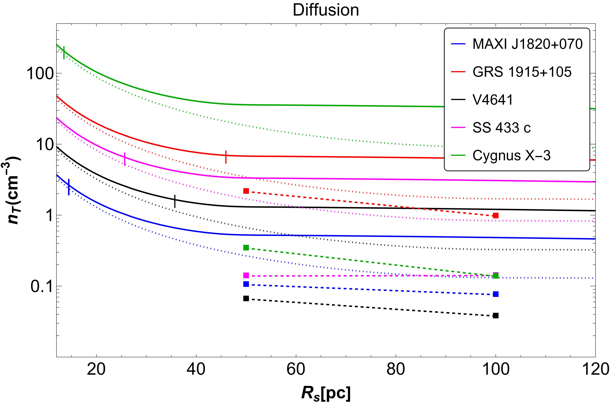<br />
图注：Estimated target density required to reproduce the gamma-ray emission at 100 TeV as a function of $R_{\rm s}$, the radius of the interaction region, for the microquasars detected by LHAASO. The estimates are shown as solid (dotted) lines for $r_0=50$ pc ($r_0=100$ pc). They are obtained assuming $\xi_{\rm Edd}$ as in Table \(\ref{table sources}\) (when $\xi_{\rm Edd}$ is not reported we assume the value 1), $\eta_{\rm CR}=0.1$ and considering continuous injection. The measurements of the gas number density within $50 \, \rm pc, --100 \, \rm pc$ are shown as filled squares connected by dashed lines to guide the eye. We also report the $1 \sigma$ extension of the gamma-ray emission region $R_{\rm s}$ as a bar.<br />
对应解读：对应“建议重点查看的图表”第1、2、4项，以及关键图表导读中关于已探测源强子模型在100 TeV附近是否足够、气体密度是否能支撑所需通量的讨论。<br />
入选理由：这是已探测LHAASO微类星体强子解释的核心诊断图：直接给出为复现100 TeV伽马辐射所需的靶气体密度，并与50--100 pc范围内实测气体密度比较，同时标出伽马源1σ扩展尺度。它最直接支撑“现实气体密度下强子相互作用难以完全解释观测”的主结论，也能检验GRS 1915+105、MAXI J1820+070等源是否更接近可行区域。<br />
来源与置信度：\(arxiv_source\)；high；\(arxiv_source\) / main.tex:figure[2]</p>
<p><strong>Fig03</strong><br />
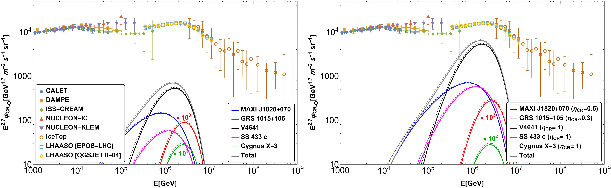<br />
图注：Contribution to the CR proton spectrum for the microquasars detected by LHAASO in the diffusion-dominated two-zone model assuming continuous injection over 100 kyr (solid lines), compared with proton data from LHAASO \(\citep{LHAASOprotons},\) IceTop \(\citep{IceCube:2019hmk},\) CALET \(\citep{CALET:2022vro},\) DAMPE \(\citep{DAMPE:2019gys},\) ISS-CREAM \(\citep{2022ApJISS-CREAM},\) NUCLEON-IC, and NUCLEON-KLEM \(\citep{2019AdSpR_NUCLEON}.\) The contribution expected from a one-zone model with the Galactic diffusion is shown as dashed lines. The left and right panels show the results for standard case with $\eta_{\rm CR}=0.1$, and for the maximum-efficiency case, in which $\eta_{\rm CR}$ is adjusted to reproduce the observed gamma-ray flux at 100 TeV when possible. The fluxes of MAXI~J1820+070 and Cygnus X-3 are multiplied by a factor $10^3$ in the left panel, and by a factor $10^3$ and $10^2$ respectively in the right panel. This rescaling reduces the dynamic range of the y-axis so as to improve readability.<br />
对应解读：对应“建议重点查看的图表”第5项，以及关键图表导读图5：已探测源对1 PeV宇宙线谱贡献的堆叠/比较图；也对应摘要中4%与37%贡献的来源。<br />
入选理由：该图把LHAASO已探测微类星体在连续注入100 kyr时对宇宙线质子谱的贡献与LHAASO、IceTop、CALET、DAMPE等观测总谱直接比较，并同时展示η_CR=0.1标准情形和最大效率情形。它是验证“1 PeV处约4%与最高约37%贡献”这一量化结论的最关键图。<br />
来源与置信度：\(arxiv_source\)；high；\(arxiv_source\) / main.tex:figure[3]</p>
<p><strong>Fig04</strong><br />
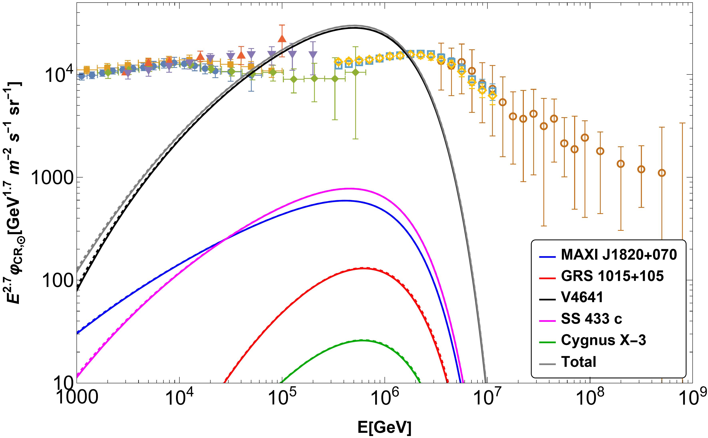<br />
图注：Same as Figure \(\ref{fig: CR detected}\) for our standard case $\eta_{\rm CR}=0.1$ and continuous injection over 1 Myr.<br />
对应解读：对应“建议重点查看的图表”第3、5项，以及关键图表导读图4中关于注入时标t_age=0.1 Myr与1 Myr差异、长时标为何容易触及或超过宇宙线谱约束的讨论。<br />
入选理由：该图与Fig03形成直接对照，将连续注入时间改为1 Myr并保持η_CR=0.1，用来判断年龄/注入时标对宇宙线谱贡献的放大效应。日报中特别强调长注入时标可能超过观测约束，因此这张图比一般模型示意图更能支撑参数扫描和约束解释。<br />
来源与置信度：\(arxiv_source\)；high；\(arxiv_source\) / main.tex:figure[4]</p>
<p><strong>Fig06</strong><br />
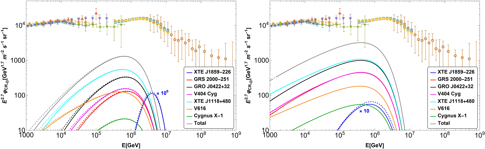<br />
图注：Upper limit on the contribution to the CR spectrum for the microquasars undetected for LHAASO. The left (right) panel represent the contribution in case of continuous injection over 100 kyr (1 Myr). The flux of XTE J1859+226 is scaled by factors of $10^6$ (left panel), and $10$ (right panel), to reduce the dynamic range of the y-axis and improve visual clarity.<br />
对应解读：对应“建议重点查看的图表”第6项，以及关键图表导读图6：未探测微类星体的LHAASO上限约束和其对宇宙线谱的最大允许贡献。<br />
入选理由：这是未被LHAASO探测到的微类星体部分的核心结果图，左右面板分别给出100 kyr和1 Myr连续注入下的宇宙线谱贡献上限。它直接支撑“未探测源最大潜在贡献约17%且依赖注入时标”的结论，并能显示哪些源在上限约束下仍可能贡献较多。<br />
来源与置信度：\(arxiv_source\)；high；\(arxiv_source\) / main.tex:figure[6]</p>
<p><strong>Fig05</strong><br />
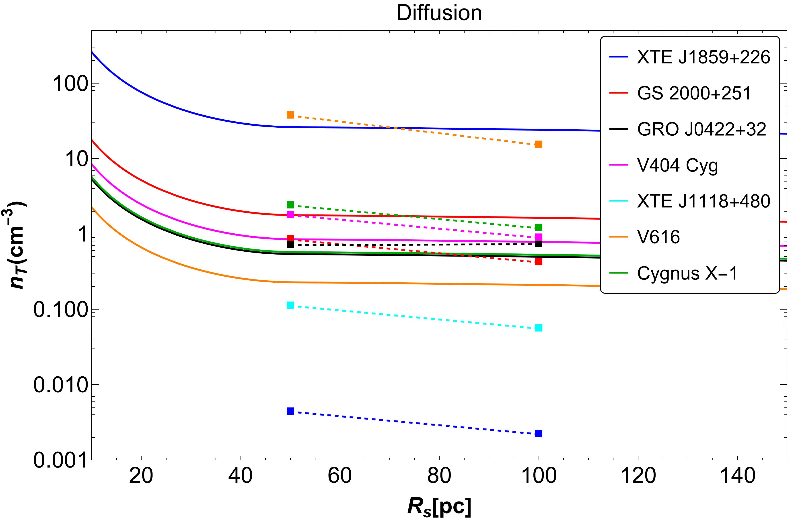<br />
图注：Same as Fig.\(\ref{fig: number density detected}\) but for the microquasars undetected by LHAASO. The predictions for GRO J0422+32, XTE J1118+480 and Cygnus X-1 overlap.<br />
对应解读：对应“建议重点查看的图表”第4、6项：未探测源的靶气体密度输入/需求，以及非探测源上限解释中的环境依赖。<br />
入选理由：该图是Fig02在未探测微类星体样本上的对应版本，展示不同相互作用半径下复现给定伽马辐射所需的靶密度。它有助于判断未探测源为何仍允许一定强子输出，以及气体密度不确定性如何影响LHAASO非探测上限的物理含义。<br />
来源与置信度：\(arxiv_source\)；high；\(arxiv_source\) / main.tex:figure[5]</p>
<p><strong>Fig01</strong><br />
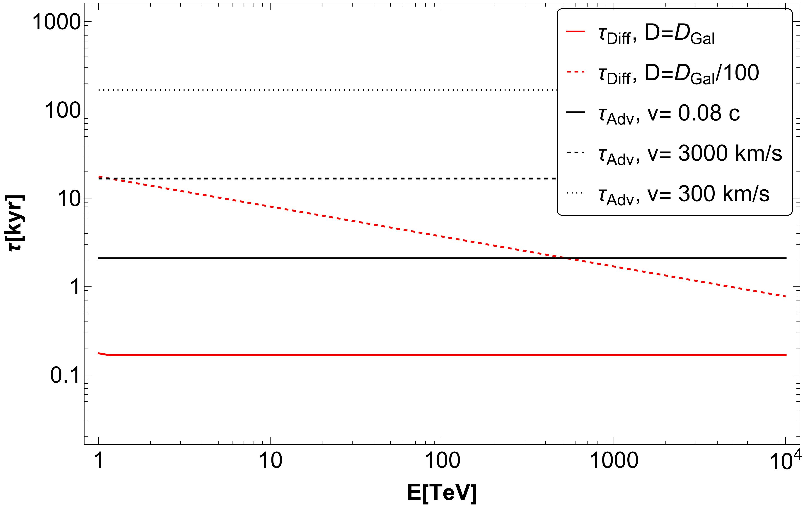<br />
图注：Comparison of diffusion and advection timescales over a region of $50$ pc. The red solid (dashed) line shows the diffusion timescale for the Galactic (suppressed) diffusion coefficient. The black solid, dashed, and dotted lines represent the advection timescales for an advection velocity of $v=0.08 \, c$ (comparable to the jet velocity) and for wind velocity $v=300 \, \rm km \, s^{-1}$ and $v=3000 \, \rm km \, s^{-1}$, respectively.<br />
对应解读：对应“建议重点查看的图表”第3项和模型拟合段落中关于扩散主导传播、近源扩散抑制、平流/喷流风速是否可忽略的讨论。<br />
入选理由：该图比较50 pc区域内扩散与平流时标，说明作者采用扩散主导两区模型的物理依据。虽然它不直接给出伽马通量或宇宙线贡献百分比，但能支撑模型假设本身，尤其是为什么后续约束主要围绕扩散系数、注入时标和相互作用区域展开。<br />
来源与置信度：\(arxiv_source\)；high；\(arxiv_source\) / main.tex:figure[1]</p>
<h4 id="_12">强相关工作</h4>
<p>这篇工作应放在三条文献线索中读。第一条是 LHAASO 关于银河超高能源和微类星体候选的观测论文或会议报告，应检索关键词 “LHAASO microquasar ultra-high-energy gamma rays”, “LHAASO GRS 1915+105”, “LHAASO MAXI J1820+070”。这些是同类源或同一候选源的直接观测背景，决定了本文采用的通量、能谱和上限。</p>
<p>第二条是强子 \(pp\) 伽马辐射和宇宙线扩散的基础模型。Kelner、Aharonian 与 Bugayov 的 \(pp\) 产额参数化、Hillas 的 PeVatron 能量尺度判据、以及银河扩散系数的 B/C 约束是理解本文模型的基础。检索关键词可用 “hadronic gamma-ray production pp interactions Kelner Aharonian”, “cosmic ray diffusion around sources suppressed diffusion”, “Galactic PeVatron microquasar”.</p>
<p>第三条是可能的相反解释：微类星体超高能辐射也可能来自电子逆康普顿、喷流终止激波中的混合强子-轻子模型，或与邻近脉冲星风云、超新星遗迹混叠。应检索 “leptonic model microquasar TeV gamma rays”, “microquasar jet termination shock gamma rays”, “PeVatron candidates LHAASO source confusion”。这些工作与本文形成张力：若轻子模型能解释能谱和形态，则强子贡献上限会更低；若未来发现中微子伴随信号，则强子模型会显著加强。</p>
<p><strong>同一事件 / 同类源线索</strong>：</p>
<ul>
<li><a href="https://arxiv.org/abs/2606.29830">https://arxiv.org/abs/2606.29830</a></li>
<li><a href="https://arxiv.org/pdf/2606.29830">https://arxiv.org/pdf/2606.29830</a></li>
</ul>
<p><strong>相似工作</strong>：</p>
<p>（未提供）</p>
<p><strong>基础理论 / 方法工作</strong>：</p>
<ul>
<li><a href="https://arxiv.org/abs/astro-ph/0606058">https://arxiv.org/abs/astro-ph/0606058</a></li>
<li><a href="https://ui.adsabs.harvard.edu/abs/1984ARA%26A..22..425H/abstract">https://ui.adsabs.harvard.edu/abs/1984ARA%26A..22..425H/abstract</a></li>
</ul>
<p><strong>相反观点 / 张力线索</strong>：</p>
<p>（未提供）</p>
</details>
<h3 id="2-modelling-the-delayed-shock-breakout-emission-following-jet-launching-binary-neutron-star-mergers-via-relativistic-mhd-simulations">2. Modelling the delayed shock-breakout emission following jet-launching binary neutron star mergers via relativistic MHD simulations</h3>
<ul>
<li>来源：arXiv / astro-ph.HE</li>
<li>链接：https://arxiv.org/abs/2606.29515v1</li>
<li>作者：Matteo Pais, Riccardo Ciolfi, Andrea Pavan</li>
<li>评分：novelty 8/10，importance 8/10，relevance 9/10，final 9.35/10</li>
<li>推荐理由：Relativistic MHD modeling of BNS jet shock breakout and GW–EM/GRB delay, compared to GRB 170817A; strong relevance to GRBs and multimessenger HE astrophysics.</li>
</ul>
<p><strong>中文题目</strong>：用相对论磁流体模拟建模双中子星并合喷流后的延迟激波破出辐射</p>
<p><strong>做了什么</strong>：这篇论文研究双中子星并合后，如果中心引擎发射相对论喷流，喷流驱动的激波穿出并合抛射物时会产生怎样的激波破出电磁辐射，以及它相对引力波并合时刻的延迟能告诉我们什么。作者把三维相对论磁流体喷流传播模拟接到真实双中子星并合模拟的后并合环境上，并特别重建了早期动力学抛射物的外缘；随后追踪激波到光球，计算不同视角和不同不透明度下的热激波破出光变。主要结论是，引力波到电磁信号的延迟对视角和不透明度不太敏感，因此是约束喷流发射时间、喷流功率和是否被堵塞的较稳健诊断；与 \(\mathrm{GRB\ 170817A}\) 比较时，一个显著受阻、接近堵塞的喷流模型最能同时给出合适的峰值玻尔 luminosity、延迟和持续时间。</p>
<p><strong>为什么重要</strong>：\(\mathrm{GW170817}\) 与 \(\mathrm{GRB\ 170817A}\) 之间约 \(1.7\,\mathrm{s}\) 的延迟长期被用来讨论喷流启动、喷流穿越抛射物、激波破出和伽马射线发射机制，但不同半解析模型给出的解释并不唯一。这项工作的重要性在于，它把喷流传播放进更接近并合残余物的相对论磁流体环境中，并系统检查视角和不透明度对延迟的影响，从而把“延迟”从一个容易被几何和辐射假设污染的量，推进为更可用的物理诊断。</p>
<p><strong>理论 / 观测 / 仪器方法价值</strong>：对理论而言，本文提供了从并合模拟环境到喷流传播、激波光球破出、观测光变的一条数值建模链条，尤其适合检验短伽马暴的 cocoon 和 choked-jet 解释。对观测而言，它说明单靠峰值时间和持续时间仍不足以唯一确定模型，但 \(\Delta t_{\rm GW-EM}\) 对若干辐射后处理假设相对稳健，可以作为未来引力波触发高能瞬变的快速判别量。对方法而言，作者强调了早期动力学抛射物外缘重建、非径向光子传播、相对论多普勒效应和光行时效应对激波破出光变计算的必要性。</p>
<p><strong>为什么应该关注</strong>：如果你关心 \(\mathrm{GRB\ 170817A}\) 到底是成功窄喷流、结构化喷流、cocoon 激波破出，还是某种被堵塞喷流的表现，这篇文章直接针对最关键的时间尺度和亮度问题。它也提醒我们：未来 \(\mathrm{LIGO}\)、\(\mathrm{Virgo}\)、\(\mathrm{KAGRA}\) 以及高能卫星联合探测到的双中子星事件，最早的几秒钟电磁信号可能比后期余辉更直接地记录了喷流如何穿过并合抛射物。</p>
<details class="paper-detail">
<summary>展开详细解读：文章讲解、背景、理论、重点章节、图表与相关工作</summary>
<h4 id="_13">文章详细讲解</h4>
<p>科学问题：双中子星并合发出引力波后，若中心天体在短时间内启动相对论喷流，喷流不会立刻被远处观测者看见。它必须先穿过具有高速、非球对称、强磁化和强密度梯度的并合抛射物。喷流头前方形成的前向激波把抛射物加热，当激波抵达光学深度足够小的位置时，热能可转化为短暂电磁闪光，即激波破出。本文要回答的是：这种破出辐射的时间延迟、峰值亮度和持续时间在多大程度上取决于喷流启动时间、喷流 luminosity、抛射物不透明度和观测视角？尤其是，它能否解释 \(\mathrm{GRB\ 170817A}\) 相对 \(\mathrm{GW170817}\) 的延迟。</p>
<p>作者怎么做：论文使用相对论磁流体模拟，把喷流放入由先前双中子星并合模拟直接给出的后并合环境中，而不是用简单幂律密度球壳代替。一个技术重点是重建早期动力学抛射物直到其自然前沿，因为激波何时遇到低光学深度物质强烈依赖外层抛射物的位置和密度。模拟先在三维中演化到 \(0.6\,\mathrm{s}\)，随后在轴对称假设下用更高分辨率继续追踪喷流和激波传播。作者改变喷流发射时间和 luminosity，选出三个代表性模型，覆盖较早破出到显著堵塞的传播状态。</p>
<p>关键结果：作者把喷流驱动的前向激波追踪到光球，并在后处理中计算角度依赖的玻尔激波破出 luminosity。计算中假设受激波加热物质的热能可完全转化为辐射，同时加入非径向光子传播、相对论多普勒频移和光行时效应。他们还采用相差十倍的两个不透明度取值，以测试辐射转化位置的不确定性。结果显示，\(\Delta t_{\rm GW-EM}\) 对视角和不透明度变化都较弱，说明延迟主要由喷流发射时间和喷流在抛射物中的动力学传播决定，而不是主要由后处理辐射几何决定。与 \(\mathrm{GRB\ 170817A}\) 对比时，最接近观测延迟、持续时间和峰值玻尔 luminosity 的不是最顺利穿透的喷流，而是一个显著 choked 或接近 choked 的模型。</p>
<p>局限和下一步：本文的激波破出辐射计算采用了热能完全转化为辐射的理想化假设，并用灰不透明度代表复杂的能谱、非热粒子和非局域辐射输运。三维到轴对称的拼接提高了可计算性和分辨率，但也可能抹去后期三维湍动、喷流摆动和 Kelvin-Helmholtz 混合对光变的影响。下一步需要把更完整的辐射输运、频谱预测、不同并合质量比和中微子处理、以及多事件统计比较结合起来；同时应把早期激波破出信号与后期射电和 \(\mathrm{X}\) 射线余辉联合拟合，避免用单一时间延迟过度解释喷流结构。</p>
<h4 id="_14">关键结果是怎么做出来的</h4>
<p>本文最重要的证据链从初始环境开始。作者没有从参数化球壳出发，而是导入已有双中子星并合模拟产生的后并合物质分布，包括动力学抛射物和中心附近环境。由于喷流破出时间对最外层抛射物半径很敏感，论文中特别引入了重建早期动力学抛射物外缘的步骤，使抛射物前沿尽量接近从并合时刻自然扩展到喷流计算开始时的状态。这里的“样本”不是大量天体，而是一组受控数值实验：三个代表性喷流传播模型，分别对应不同喷流启动时间和 luminosity，覆盖早破出、较慢传播以及延展堵塞的情形。</p>
<p>核心可观测量是相对并合引力波时刻的电磁延迟 \(\Delta t_{\rm GW-EM}\)、激波破出玻尔 luminosity 的峰值、以及信号持续时间。作者在每个模型中追踪喷流驱动前向激波的位置、速度和受热物质，直到光学深度满足光球条件。随后在多个视角下计算到达观测者的光变，并分别使用两个相差十倍的不透明度取值。这里的置信度不是传统观测样本上的 \(p\)-value，而是通过模型族、视角和不透明度扫描来评估结论稳健性：如果某个诊断量在这些变化下移动很小，它就更可能反映喷流动力学本身。</p>
<p>支撑结论的关键图表应包括：三个模型的密度、压力或磁化结构随时间演化图；激波位置或光球位置随时间的轨迹；不同视角下的玻尔光变；以及和 \(\mathrm{GRB\ 170817A}\) 的延迟、持续时间、峰值 luminosity 对照图。读者应特别看 \(\Delta t_{\rm GW-EM}\) 是否在同一模型内随视角变化显著小于不同模型之间的差异。如果图中不同不透明度的光变峰值或峰时几乎重叠，而不同喷流启动和传播情形分离明显，就说明论文关于延迟稳健性的判断成立。</p>
<p>统计和模型比较主要是物理模型比较，而不是大样本拟合。作者把 \(\mathrm{GRB\ 170817A}\) 作为校准性案例，比较每个模型的峰值玻尔 luminosity、延迟和持续时间是否落在观测可接受范围内。最接近观测的是显著受阻模型，这意味着 \(1.7\,\mathrm{s}\) 延迟不一定要求一个迅速成功破出的高 luminosity 窄喷流；相反，喷流在抛射物中经历较长相互作用并把能量沉积到 cocoon 中，可能更自然地产生类似持续时间和亮度的热破出信号。</p>
<p>主要系统误差来自四类。第一是不透明度，尤其并合抛射物中镧系元素、温度和电离态会改变 \(\kappa\)。第二是辐射效率，完全热能转辐射会使 luminosity 偏向上限。第三是三维结构，后期轴对称处理可能低估非轴对称混合和角向不均匀性。第四是初始并合模型本身，质量比、方程状态、中微子冷却和磁场放大都会改变抛射物质量和速度分布。论文的稳健性检验主要体现在视角和不透明度扫描，以及三类传播状态的对比；但要把该结论推广到所有双中子星并合，还需要更大的模拟网格。</p>
<details class="paper-subdetail">
<summary>展开背景、理论、公式、模型、章节和图表导读</summary>
<h4 id="_15">背景知识</h4>
<p>研究对象是双中子星并合后的短时标高能电磁辐射。并合时刻由引力波给出，误差可以达到毫秒量级；而伽马射线或硬 \(\mathrm{X}\) 射线信号的到达时间则包含中心引擎形成时间、喷流启动延迟、喷流穿越抛射物时间、辐射释放半径以及光行时几何项。\(\mathrm{GW170817}\) 与 \(\mathrm{GRB\ 170817A}\) 的 \(\sim 1.7\,\mathrm{s}\) 延迟因此成为少数能直接约束并合后头几秒物理的观测量。</p>
<p>历史上，短伽马暴通常被解释为双中子星或中子星黑洞并合后形成的相对论喷流，其 prompt emission 可能来自内耗散、磁重联、光球辐射或外部激波早期阶段。\(\mathrm{GRB\ 170817A}\) 的低表观 luminosity 和后期余辉的超光速运动表明它不是典型轴上短伽马暴。两类解释长期并存：一种强调成功结构化喷流的离轴观测，另一种强调喷流与抛射物相互作用形成的 cocoon 或 choked-jet 激波破出。</p>
<p>现在值得重新看的原因有三点。首先，引力波探测器的新观测轮将增加近邻双中子星候选事件，早期高能对应体的时间延迟会成为快速分类指标。其次，数值相对论和相对论磁流体模拟已经能更真实地连接并合残余物与喷流传播，而不是只用理想化球壳模型。第三，\(\mathrm{GRB\ 170817A}\) 的多波段余辉已对喷流结构给出较强约束，早期 prompt 或破出模型必须和这些后期证据相容。</p>
<p>一个常见误区是把 \(1.7\,\mathrm{s}\) 延迟直接等同于中心引擎“等待了 \(1.7\,\mathrm{s}\)”才启动。实际上延迟包含多项，喷流可以较早启动但传播很慢，也可以较晚启动但迅速破出；辐射释放半径和观测角还会引入额外光行时。另一个误区是把“choked jet”理解为没有任何可观测高能信号。被堵塞喷流仍可把大量能量注入 cocoon，前向激波在低光学深度处破出时可产生短暂辐射。</p>
<p>还需要避免把灰不透明度和玻尔光变与探测器能带中的计数光变混为一谈。本文计算的是理想化玻尔激波破出 luminosity，能否对应 \(\mathrm{Fermi}\)-\(\mathrm{GBM}\) 或 \(\mathrm{INTEGRAL}\) 的具体能带信号，还需要谱形、温度演化、非热成分和探测器响应。它最适合回答动力学时间尺度和能量预算是否合理，而不是单独给出最终的伽马射线计数率预测。</p>
<h4 id="_16">基础理论 / 方法脉络</h4>
<p>基本物理图像是喷流头推进问题。中心引擎注入一个强相对论、准准直的能流，它在抛射物中形成正向激波、反向激波和接触间断。喷流头速度由喷流动量通量与外部抛射物惯性竞争决定；若喷流头能在引擎关闭前穿出抛射物，则形成成功喷流，否则能量主要沉积到 cocoon，成为 choked 或 failed jet。本文关心的是前向激波在外层抛射物中传播并最终到达光球时释放的热辐射。</p>
<p>双中子星抛射物不是静止介质。动力学抛射物可具有 \(0.1c\) 到 \(0.3c\) 量级速度，并且密度、电子丰度和角分布高度非均匀。喷流头追赶的是一个随时间膨胀的靶物质，因此破出条件不只是喷流头半径超过固定壳层半径，而是喷流驱动激波、自然膨胀抛射物前沿和光球位置三者的相对演化。本文重建早期抛射物自然前沿，就是为了避免人为截断外层低密度物质导致破出时间偏差。</p>
<p>辐射方面，激波破出发生在扩散时间与动力学时间相当的位置。若光学深度太大，辐射被困在物质中随流体膨胀冷却；若光学深度较小，热能可以逃逸形成短暂峰值。本文采用灰不透明度 \(\kappa\) 并测试相差十倍的取值，等价于把复杂的组分和电离态不确定性投影到光球位置不确定性上。它还考虑非径向光子传播和相对论多普勒效应，这对离轴观测尤其重要。</p>
<p>观测量的关键是到达时间而不是源区局部时间。一个在半径 \(r\)、极角 \(\theta\) 释放的光子，到达远方观测者的时间包含发射时刻和路径差，通常近似与 \(1-\beta\cos\theta\) 有关。因而同一激波面不同角区会被投影到不同观测时刻，造成光变展宽。本文的角度依赖光变正是把流体演化、光球条件、Doppler boosting 和光行时统一后处理出来。</p>
<p>主要退化关系包括：较晚启动但高 luminosity 的喷流，可能与较早启动但传播受阻的喷流产生相似破出时刻；较低不透明度可让光球向内移动，可能部分抵消较慢激波传播造成的峰时变化；离轴观测会降低和展宽观测 luminosity，可能与较低内禀能量退化。本文发现 \(\Delta t_{\rm GW-EM}\) 对 \(\kappa\) 和视角较不敏感，意味着在它的模拟范围内，喷流动力学差异大于这些辐射和几何退化。</p>
<h4 id="_17">公式与推导</h4>
<p>可以把延迟拆成几个物理时间项。若 \(t_{\rm m}\) 是并合引力波参考时刻，\(t_{\rm j}\) 是喷流启动时刻，\(t_{\rm bo}\) 是激波或喷流头到达可辐射破出区域的实验室系时刻，则观测到的延迟可写成</p>
<div class="math-display">\[\Delta t_{\rm GW-EM}=t_{\rm obs}-t_{\rm m}\simeq (t_{\rm j}-t_{\rm m})+(t_{\rm bo}-t_{\rm j})+\Delta t_{\rm geom}+\Delta t_{\rm rad}.\]</div>
<p>这里 \(\Delta t_{\rm geom}\) 是光行时几何项，\(\Delta t_{\rm rad}\) 代表辐射扩散或释放半径相关修正。本文的数值模拟主要决定 \(t_{\rm bo}-t_{\rm j}\)，后处理决定 \(\Delta t_{\rm geom}\) 和光球条件。</p>
<p>喷流头速度的直观估计来自动量通量平衡。对 luminosity 为 \(L_{\rm j}\)、截面积为 \(\Sigma_{\rm j}\)、外部密度为 \(\rho_{\rm a}\) 的喷流，可定义无量纲头部参数</p>
<div class="math-display">\[\tilde{L}=\frac{L_{\rm j}}{\Sigma_{\rm j}\rho_{\rm a}c^3}.\]</div>
<p>在非磁化或有效流体近似下，\(\tilde{L}\) 越大，喷流头越接近光速；\(\tilde{L}\) 小则喷流易受阻并把能量注入 cocoon。真实相对论磁流体模拟会替代这个半解析式，但它解释了为什么喷流 luminosity 和外部抛射物密度是主控量。</p>
<p>一个常用近似把喷流头速度写为</p>
<div class="math-display">\[\beta_{\rm h}\simeq \frac{\beta_{\rm j}}{1+\tilde{L}^{-1/2}},\]</div>
<p>其中 \(\beta_{\rm h}=v_{\rm h}/c\)，\(\beta_{\rm j}=v_{\rm j}/c\)。若外部抛射物本身以 \(\beta_{\rm ej}c\) 膨胀，则有效追赶速度取决于 \(\beta_{\rm h}-\beta_{\rm ej}\)，这就是动态抛射物前沿重建会影响破出时刻的原因。</p>
<p>破出半径可由相对运动积分给出概念表达式：</p>
<div class="math-display">\[\int_{t_{\rm j}}^{t_{\rm bo}} \left[v_{\rm h}(t)-v_{\rm ej,front}(t)\right]dt \simeq R_{\rm front}(t_{\rm j})-R_{\rm h}(t_{\rm j}).\]</div>
<p>这里 \(R_{\rm front}\) 是抛射物前沿半径，\(R_{\rm h}\) 是喷流头或激波位置。本文用模拟直接求解这些量，而不是依赖这个一维积分。</p>
<p>光球条件来自光学深度。沿光子路径 \(s\) 的光学深度为</p>
<div class="math-display">\[\tau(s)=\int_s^{\infty}\kappa\rho(s')\,ds',\]</div>
<p>其中 \(\kappa\) 是灰不透明度，\(\rho\) 是质量密度。近似光球满足</p>
<div class="math-display">\[\tau(R_{\rm ph})\simeq 1.\]</div>
<p>改变 \(\kappa\) 会移动 \(R_{\rm ph}\)，但本文发现观测延迟对此不强敏感，说明主要时间由激波传播而非最后一段扩散决定。</p>
<p>受激波加热物质的可辐射能量可从热能密度积分估计：</p>
<div class="math-display">\[E_{\rm th}=\int_{V_{\rm sh}} e_{\rm th}\,dV,\]</div>
<p>其中 \(e_{\rm th}\) 是实验室系或适当流体系下转换后的热能密度，\(V_{\rm sh}\) 是被激波加热且可逃逸的区域。本文假设这些热能完全转为辐射，因此玻尔 luminosity 的尺度为</p>
<div class="math-display">\[L_{\rm SBO}\sim \frac{E_{\rm th,esc}}{\Delta t_{\rm obs}},\]</div>
<p>其中 \(E_{\rm th,esc}\) 是满足逃逸条件的热能，\(\Delta t_{\rm obs}\) 是由光行时、角向结构和发射持续时间共同决定的观测宽度。</p>
<p>相对论多普勒因子把局部辐射转换到观测者系：</p>
<div class="math-display">\[\mathcal{D}=\frac{1}{\Gamma(1-\beta\cos\theta_{\rm los})},\]</div>
<p>其中 \(\Gamma=(1-\beta^2)^{-1/2}\)，\(\theta_{\rm los}\) 是流体速度与视线夹角。若局部发射近似各向同性，玻尔强度或 luminosity 常出现 \(\mathcal{D}^3\) 到 \(\mathcal{D}^4\) 的增强因子，具体指数取决于使用的是强度、通量还是时间积分能量。</p>
<p>光行时把发射面映射为观测光变。对远处观测者，某体元在实验室系时间 \(t\) 和位置 \(\mathbf{r}\) 发出的光子到达时间可写为</p>
<div class="math-display">\[t_{\rm obs}=t-\frac{\mathbf{n}\cdot\mathbf{r}}{c},\]</div>
<p>其中 \(\mathbf{n}\) 是指向观测者的单位矢量，省略了共同的距离常数。这个公式解释了为什么非径向传播和离轴视角会展宽信号，也说明为什么仅用局部破出时刻不能直接等于观测峰时。</p>
<p>若要与观测峰值比较，可把模型光变与数据压缩成残差或似然。例如对若干观测诊断量 \(y_i\)，可写</p>
<div class="math-display">\[\chi^2=\sum_i \frac{\left[y_i-y_i^{\rm mod}(\boldsymbol{\theta})\right]^2}{\sigma_i^2+\sigma_{i,\rm sys}^2},\]</div>
<p>其中 \(\boldsymbol{\theta}\) 包含 \(t_{\rm j}\)、\(L_{\rm j}\)、\(\kappa\) 和视角，\(\sigma_{i,\rm sys}\) 表示模型系统误差。本文更偏物理模型对照而非完整贝叶斯拟合，但这个表达式说明了未来如何把多事件样本纳入定量推断。</p>
<h4 id="_18">模型拟合 / 应用方法</h4>
<p>本文不是传统意义上对大量观测点做后验采样，而是用少量高成本相对论磁流体模拟构建代表性物理模型，再将后处理得到的光变诊断量与 \(\mathrm{GRB\ 170817A}\) 比较。拟合量可理解为 \(\Delta t_{\rm GW-EM}\)、峰值玻尔 luminosity、光变持续时间以及角度依赖形状。模型参数包括喷流启动时间、喷流 luminosity、喷流传播状态、不透明度和观测视角。</p>
<p>若把这类工作写成显式统计问题，似然通常会比较观测的触发时间、持续时间、能带 fluence 或峰值通量与模型预测。由于本文输出主要是玻尔 luminosity，还需要谱形和探测器响应才能与 \(\mathrm{GBM}\) 计数率直接拟合。因此当前比较更像“物理可行性筛选”：哪些模型在数量级和时间尺度上同时接近 \(\mathrm{GRB\ 170817A}\)，哪些模型虽可破出但过亮、过早或持续时间不对。</p>
<p>参数退化非常重要。喷流启动较晚会增加 \(\Delta t_{\rm GW-EM}\)，但较低 luminosity 或更高外部密度也会通过降低喷流头速度增加延迟；较大视角会降低观测 luminosity 并展宽光变，但被堵塞喷流本身也可产生较宽、较弱的信号；不透明度改变光球位置，可能影响峰值和持续时间。本文的关键发现是，至少在其模型范围内，视角和 \(\kappa\) 对延迟的影响小于不同喷流动力学模型之间的差异，因此延迟更适合约束喷流传播，而 luminosity 更容易受辐射效率和几何影响。</p>
<p>残差诊断应看三类不匹配。第一，模型峰值时间是否系统早于或晚于 \(\mathrm{GRB\ 170817A}\) 的触发延迟；第二，模型光变宽度是否过窄，若过窄可能意味着破出面角向范围或光行时展宽不足；第三，模型玻尔 luminosity 是否过高，若过高可能是完全热能转辐射假设造成的上限。若一个模型只匹配延迟但需要极端辐射效率或极端视角才匹配 luminosity，其物理可信度应降低。</p>
<p>模型可能失败的地方也很清楚。灰不透明度不能描述频率依赖和时间依赖电离；轴对称后期演化可能改变 cocoon 混合和角向能量分布；没有完整辐射磁流体输运时，热能释放时标和谱温度只能近似；单一并合初始条件不能覆盖所有方程状态和质量比。实际应用中，本文模型更适合作为未来联合推断的动力学模板库，而不是作为对 \(\mathrm{GRB\ 170817A}\) 的唯一最优拟合。</p>
<h4 id="_19">重点章节 / 结果段落怎么读</h4>
<ol>
<li>
<p>数据和初始条件部分应优先读。重点看作者如何从先前双中子星并合模拟导入后并合环境，以及怎样重建早期动力学抛射物直到自然前沿。这个步骤决定外层低密度物质的半径和密度，进而影响激波何时进入低光学深度区域。</p>
</li>
<li>
<p>相对论磁流体喷流设置部分要看喷流启动时间、注入 luminosity、注入几何、磁化和边界条件。三个代表性模型的差异不是任意调参，而是覆盖早期破出到 extended choking 的传播状态；读者应把这些模型当作物理极限案例，而非完整参数后验。</p>
</li>
<li>
<p>三维到轴对称继续演化的方法段是判断可信度的关键。三维阶段能捕捉早期非轴对称相互作用，轴对称阶段提供更高分辨率和更长演化时间。需要注意这个转换可能影响后期湍流、混合和角向结构。</p>
</li>
<li>
<p>激波追踪和辐射后处理部分是论文的核心。读者应关注光球如何定义、热能如何选取、是否假设全热能转辐射、如何处理非径向光子传播、Doppler 因子和到达时间面。这些假设直接决定玻尔光变。</p>
</li>
<li>
<p>结果和 \(\mathrm{GRB\ 170817A}\) 对比部分应将延迟、峰值 luminosity 和持续时间一起看。不要只看单个指标；最有说服力的是同一个模型同时接近三个观测约束，并且在视角和不透明度变化下保持稳定。</p>
</li>
</ol>
<h4 id="_20">建议重点查看的图表</h4>
<ol>
<li>
<p>初始抛射物密度和速度结构图：看外层前沿是否连续、角向密度是否强烈非球对称，以及喷流轴附近是否存在低密度漏斗。</p>
</li>
<li>
<p>三个喷流模型的传播快照：检查喷流头、前向激波、cocoon 和可能的堵塞区域；比较早破出与 choked 情形的形态差异。</p>
</li>
<li>
<p>激波半径、抛射物前沿和光球半径随时间的轨迹图：这是判断 \(\Delta t_{\rm GW-EM}\) 来源的关键，应看破出发生在何处、何时，以及不同 \(\kappa\) 是否显著移动交点。</p>
</li>
<li>
<p>不同视角的玻尔 luminosity 光变：看峰值随视角降低多少、峰时是否移动、持续时间是否展宽，以及离轴曲线是否仍能对应 \(\mathrm{GRB\ 170817A}\)。</p>
</li>
<li>
<p>两个不透明度取值的对比图或表：重点看 \(\kappa\) 改变十倍时，峰值 luminosity、峰时和持续时间的相对变化是否小于模型间差异。</p>
</li>
<li>
<p>与 \(\mathrm{GRB\ 170817A}\) 的观测诊断量对照表：检查每个模型的 \(\Delta t_{\rm GW-EM}\)、峰值玻尔 luminosity 和持续时间是否同时满足，而不是只匹配其中一个。</p>
</li>
<li>
<p>若有分辨率或三维到轴对称拼接检验图，应看激波位置和能量积分是否在拼接前后连续；这决定数值结果是否被计算策略主导。</p>
</li>
</ol>
<h4 id="_21">关键图表逐图导读</h4>
<p>图 1：通常应是初始并合抛射物或喷流注入前环境图。横纵轴可能为空间坐标，颜色表示密度、速度或磁化。读图时不要只看喷流轴上的低密度通道，还要看高纬和赤道方向的外层抛射物，因为光球和离轴破出辐射会受这些区域影响。陷阱是颜色标尺常为对数，视觉上很淡的外层物质仍可能贡献显著光学深度。</p>
<p>图 2：喷流传播快照应展示三个代表性模型在若干时刻的形态。坐标轴是半径或柱坐标位置，颜色可能是密度、压力、洛伦兹因子或热能密度，轮廓线可能标出激波或喷流边界。关键是比较喷流头是否保持准直、cocoon 是否膨胀、喷流是否被外部物质堵塞。读图陷阱是成功喷流的窄高速芯不一定主导激波破出热辐射，热 cocoon 可能更重要。</p>
<p>图 3：激波、光球和抛射物前沿的时间演化图最能支撑延迟结论。横轴通常为并合后时间，纵轴为半径；不同线型代表激波位置、光球位置、抛射物自然前沿或不同不透明度。应看激波曲线与 \(\tau\simeq 1\) 条件相交的时间，以及这个时间对 \(\kappa\) 的变化是否小。如果不同模型间交点时间差远大于同一模型内 \(\kappa\) 差异，论文的稳健性说法更可信。</p>
<p>图 4：角度依赖玻尔光变应以观测时间为横轴、\(L_{\rm bol}\) 为纵轴，不同颜色代表观测角。主要结论应是峰时对视角变化不剧烈，而峰值和宽度可能更明显变化。陷阱是玻尔 luminosity 不是探测器能带 luminosity；如果用它直接和伽马射线计数率比较，会忽略温度和谱修正。</p>
<p>图 5：不同不透明度的光变对比图应显示 \(\kappa\) 相差十倍时模型预测的变化。读者应检查峰值 luminosity 是否只是归一化变化，还是峰时也移动；如果峰时稳定而峰值变化较大，说明延迟适合动力学约束，亮度更适合能量和辐射效率约束。</p>
<p>图 6：与 \(\mathrm{GRB\ 170817A}\) 的对照图或表通常是最终判断依据。横轴可能是 \(\Delta t_{\rm GW-EM}\) 或持续时间，纵轴可能是峰值 luminosity；观测允许区域与模型点或曲线叠加。重点看显著 choked 模型是否同时靠近观测区域。陷阱是观测允许区域可能包含能带转换和距离误差，而模型点还包含未完全量化的系统误差。</p>
</details>
<h4 id="_22">论文原图 / 可嵌入图片</h4>
<p><strong>Fig06</strong><br />
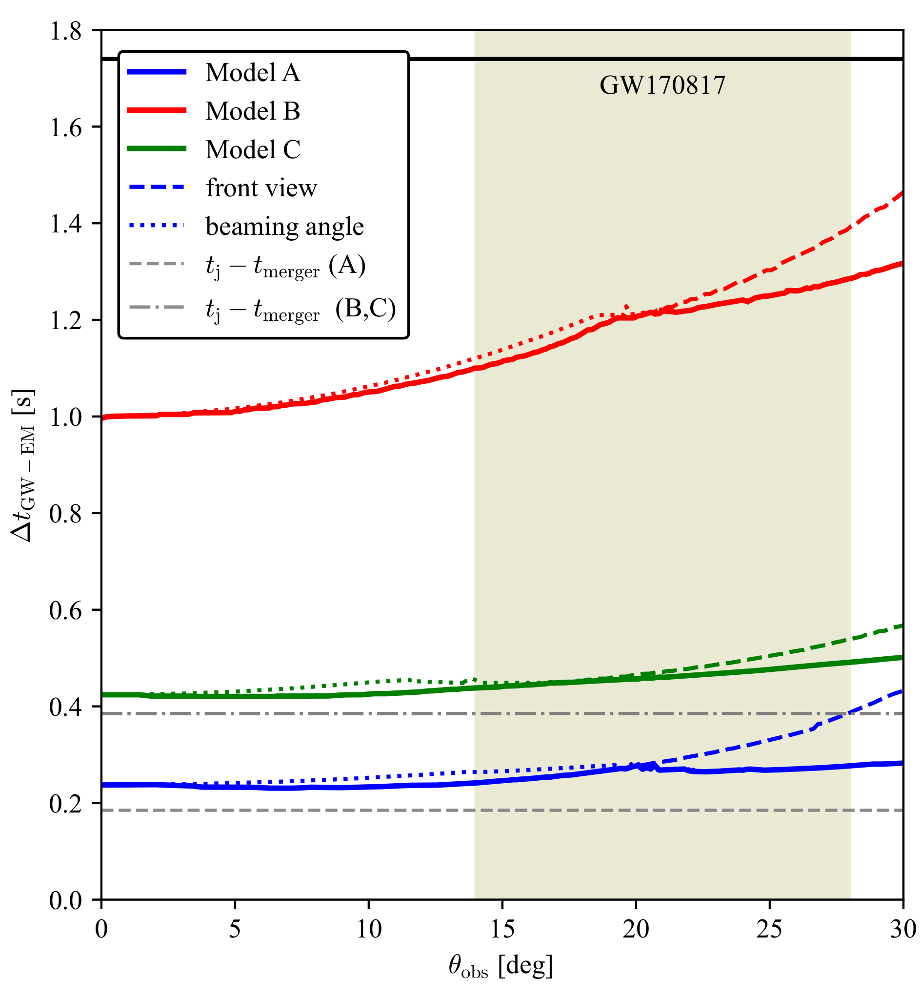<br />
图注：Time delay between the GW and the shock breakout signal ($\Delta t_\delay$) as a function of the observing angle $\theta_\mathrm{obs}$, for our three models (represented in different colors) and assuming an opacity of $\kappa = 0.16~\cm^2/\g$. The dashed and dotted lines show, respectively, the delays computed for photons emitted from a shock region at either (i) a polar angle equal to $\theta_\mathrm{obs}$ or (ii) the smallest polar angle for which the relativistic beaming cone still includes the observer direction. The minimum of the two, indicated with a continuous thicker line, is the actual delay (see text for details). The shaded region marks the observationally inferred viewing-angle range for GW170817. The grey horizontal lines indicate the jet launching time relative to the merger time for each model, as reported in the legend.<br />
对应解读：建议重点查看图表3与6；关键图表逐图导读图3；模型拟合段落中关于 \(\(\Delta\) t_{\<br />
m GW-EM})、观测视角和 GW170817/GRB170817A 对照的讨论。<br />
入选理由：这张图直接给出三个模型的 GW 到激波破出信号延迟随观测角变化，并标出 GW170817 推断视角范围和各模型喷流启动时间，是判断延迟是否主要由喷流动力学而非视角控制的核心证据。相比单纯形态图，它最直接支撑日报中“延迟是稳健诊断量”的结论。<br />
来源与置信度：\(arxiv_source\)；high；\(arxiv_source\) / main.tex:figure[6]</p>
<p><strong>Fig07</strong><br />
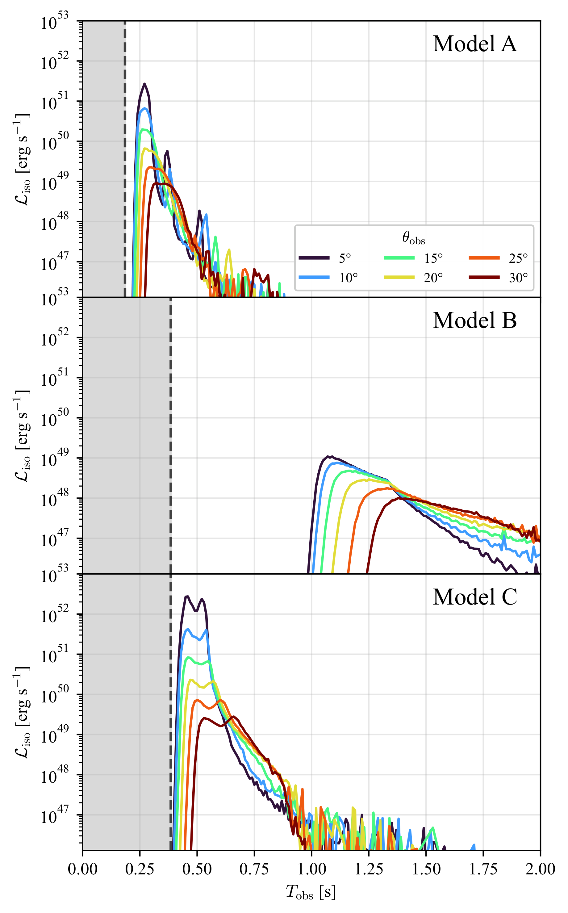<br />
图注：Isotropic-equivalent bolometric luminosity of the shock breakout emission for different models (top to bottom) and viewing angles (color-coded), as a function of the observer time $T_\obs$ (where $T_\obs=0$ corresponds to the arrival time of the GW signal). The gray area extending up to the black dashed vertical line corresponds to the time interval between merger and jet launch.<br />
对应解读：建议重点查看图表4；关键图表逐图导读图4；模型拟合段落中关于峰值玻尔 luminosity、峰时、持续时间和角度依赖光变形状的讨论。<br />
入选理由：该图展示三个模型在不同观测角下的各向同性等效玻尔光变，是比较峰值亮度、峰时移动、离轴变暗和光变展宽的主要图。它直接对应日报中对 GRB 170817A 亮度与时间尺度可行性的解读。<br />
来源与置信度：\(arxiv_source\)；high；\(arxiv_source\) / main.tex:figure[7]</p>
<p><strong>Fig09</strong><br />
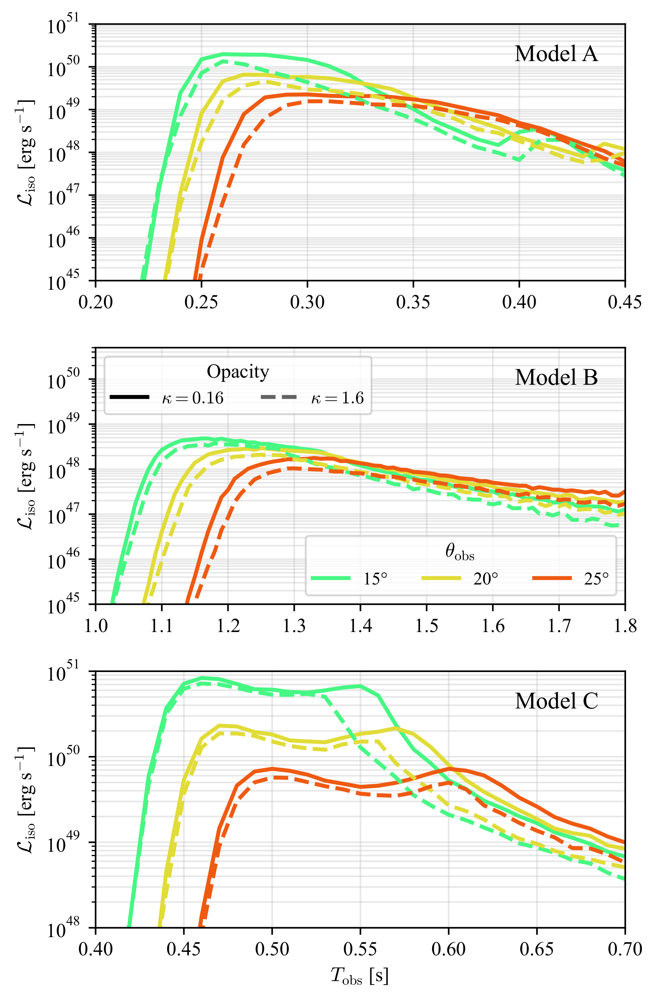<br />
图注：Same as Fig.~\(\ref{fig: light_curves},\) now considering two different opacity values: $\kappa=0.16$\,cm$^2$/g (continuous lines) and $1.6$\,cm$^2$/g (dotted lines). In this case, we only show three viewing angles, i.e.~15, 20, and 25 degrees, maintaining the same colors employed in Fig.~\(\ref{fig: light_curves}.\)<br />
对应解读：建议重点查看图表5；关键图表逐图导读图5；模型拟合段落中关于不透明度 \(\kappa\) 改变十倍后对峰值 luminosity、峰时和持续时间影响的讨论。<br />
入选理由：这张图在同一光变诊断上比较 \(\kappa=0.16\\,\mathrm{cm^2\\,g^{-1}}\) 与 \(1.6\\,\mathrm{cm^2\\,g^{-1}}\)，可直接检验日报强调的“不透明度对延迟和光变改变是否小于模型间差异”。它比只给单一不透明度的光变图更适合支撑系统误差讨论。<br />
来源与置信度：\(arxiv_source\)；high；\(arxiv_source\) / main.tex:figure[9]</p>
<p><strong>Fig05</strong><br />
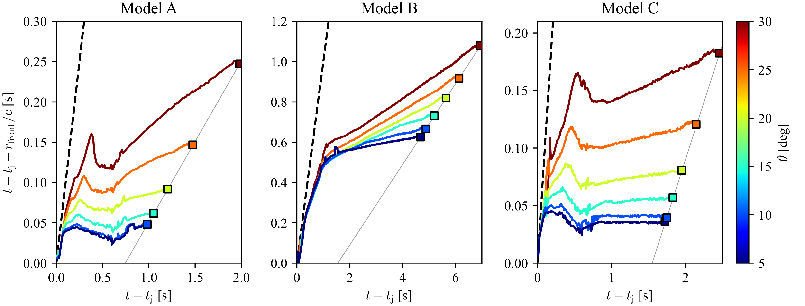<br />
图注：Delay accumulated over time by the jet-cocoon shock front (at $r=r_\mathrm{front}$) with respect to the GW signal, excluding the jet launch time $t_\jet$, along different polar angles (color-coded) and for the different models. An opacity of $\kappa = 0.16\,\cm^2/\g$ is assumed. The colored squares mark the shock breakout. The dashed black line in each panel represents the delay that would be accumulated in the limit of a shock front advancing with zero velocity (i.e.~at rest, with constant $r_\mathrm{front}=380$\,km). The thin gray line is the outer radius of the bulk of the dynamical ejecta, expanding self-similarly at about $0.8\,c$.<br />
对应解读：建议重点查看图表3；关键图表逐图导读图3；详细解读中关于激波前沿、抛射物外缘和破出时刻共同决定 \(\(\Delta\) t_{\<br />
m GW-EM}) 的部分。<br />
入选理由：该图跟踪喷流-cocoon 激波前沿相对 GW 信号累积的延迟，并标出不同极角的 shock breakout 点及动力学抛射物主体外半径，是理解延迟来源和破出发生位置的关键轨迹图。它比单一破出快照更能展示时间演化。<br />
来源与置信度：\(arxiv_source\)；high；\(arxiv_source\) / main.tex:figure[5]</p>
<p><strong>Fig08</strong><br />
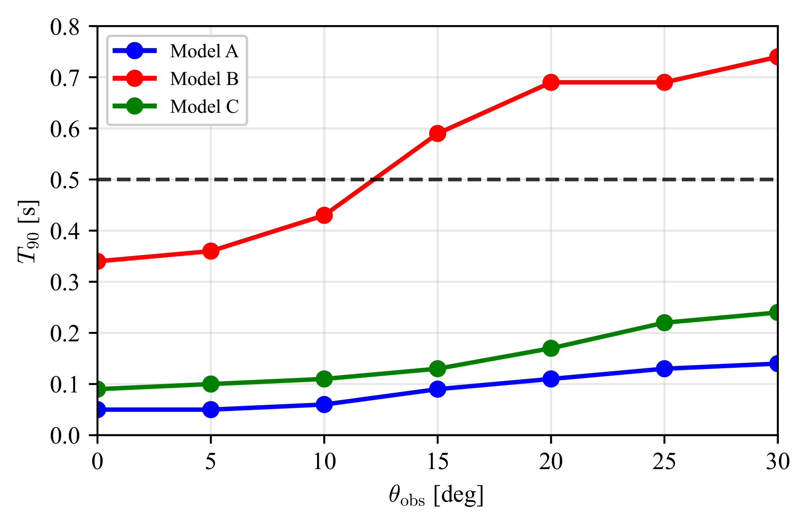<br />
图注：Fluence time $T_{90}$ for the different models as a function of the viewing angle. The black dashed horizontal line represents the approximate duration of the main peak of GRB\,170817A.<br />
对应解读：建议重点查看图表6；模型拟合段落中关于 \(T_{90}\)、GRB 170817A 主峰持续时间和不同模型是否同时匹配延迟、亮度、持续时间的讨论。<br />
入选理由：该图给出各模型的 fluence time \(T_{90}\) 随观测角变化，并用水平虚线标出 GRB 170817A 主峰持续时间，是评估模型是否只匹配延迟、还是也能匹配持续时间的重要观测诊断。<br />
来源与置信度：\(arxiv_source\)；high；\(arxiv_source\) / main.tex:figure[8]</p>
<p><strong>Fig03</strong><br />
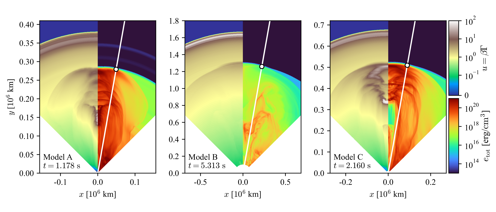<br />
图注：Meridional view of the proper velocity $u=\beta\Gamma$ (left half of the panels) and the total energy density $e_\mathrm{tot}$ (right half of the panels) for the three models \(\textbf{A},\) \(\textbf{B},\) and \(\textbf{C}\) at the time when the shock breakout occurs along a radial direction $10^\circ$ away from the jet injection axis. The spatial scale in each panel varies depending on the model. The white solid line shows the direction at $10^\circ$, and the white circle marks the breakout radius along that line.<br />
对应解读：建议重点查看图表2；关键图表逐图导读图2；详细解读中关于喷流头、前向激波、cocoon 以及 choked/near-choked 形态差异的部分。<br />
入选理由：这张图在各模型沿 \(10^\circ\) 方向发生 shock breakout 的时刻展示 proper velocity 与总能量密度，并标出破出方向和半径，能把光变与延迟诊断量连接到实际流体结构。相比普通传播快照，它更贴近激波破出辐射的物理位置。<br />
来源与置信度：\(arxiv_source\)；high；\(arxiv_source\) / main.tex:figure[3]</p>
<h4 id="_23">强相关工作</h4>
<p>这篇工作直接处在 \(\mathrm{GW170817}\)/\(\mathrm{GRB\ 170817A}\) 之后关于短伽马暴起源的讨论中。同一事件的基础观测包括 \(\mathrm{LIGO}\)-\(\mathrm{Virgo}\) 的并合发现、\(\mathrm{Fermi}\)-\(\mathrm{GBM}\) 和 \(\mathrm{INTEGRAL}\) 的伽马射线对应体、以及后续射电和 \(\mathrm{X}\) 射线余辉对结构化喷流的约束。与这些工作相比，本文更聚焦早期 \(\sim\mathrm{s}\) 级延迟和激波破出辐射，而不是后期余辉成像。</p>
<p>相似理论工作包括短伽马暴喷流穿越并合抛射物、cocoon shock breakout、choked jet 和结构化喷流形成的数值模拟与半解析研究。可检索关键词包括 “binary neutron star merger jet breakout”, “cocoon shock breakout GRB 170817A”, “choked jet short gamma-ray burst”, “relativistic MHD jet neutron star merger”, “GW170817 gamma-ray delay”。相反或张力观点主要来自把 \(\mathrm{GRB\ 170817A}\) prompt emission 归因于成功结构化喷流内部耗散的模型，以及认为纯 cocoon 破出难以同时解释 prompt 谱形和后期余辉的研究。</p>
<p><strong>同一事件 / 同类源线索</strong>：</p>
<ul>
<li><a href="https://arxiv.org/abs/1710.05832">https://arxiv.org/abs/1710.05832</a></li>
<li><a href="https://arxiv.org/abs/1710.05446">https://arxiv.org/abs/1710.05446</a></li>
<li><a href="https://arxiv.org/abs/1806.09693">https://arxiv.org/abs/1806.09693</a></li>
<li><a href="https://arxiv.org/abs/1808.00469">https://arxiv.org/abs/1808.00469</a></li>
</ul>
<p><strong>相似工作</strong>：</p>
<ul>
<li><a href="https://arxiv.org/abs/1706.01501">https://arxiv.org/abs/1706.01501</a></li>
<li><a href="https://arxiv.org/abs/1706.07084">https://arxiv.org/abs/1706.07084</a></li>
<li><a href="https://arxiv.org/abs/1710.05862">https://arxiv.org/abs/1710.05862</a></li>
<li><a href="https://arxiv.org/abs/1801.02703">https://arxiv.org/abs/1801.02703</a></li>
</ul>
<p><strong>基础理论 / 方法工作</strong>：</p>
<ul>
<li><a href="https://arxiv.org/abs/1107.1326">https://arxiv.org/abs/1107.1326</a></li>
<li><a href="https://arxiv.org/abs/1201.3940">https://arxiv.org/abs/1201.3940</a></li>
<li><a href="https://arxiv.org/abs/1508.05040">https://arxiv.org/abs/1508.05040</a></li>
</ul>
<p><strong>相反观点 / 张力线索</strong>：</p>
<ul>
<li><a href="https://arxiv.org/abs/1710.06426">https://arxiv.org/abs/1710.06426</a></li>
<li><a href="https://arxiv.org/abs/1710.05851">https://arxiv.org/abs/1710.05851</a></li>
<li><a href="https://arxiv.org/abs/1805.09380">https://arxiv.org/abs/1805.09380</a></li>
</ul>
</details>
<h3 id="3-ska-vlbi-probes-of-high-energy-emission-processes-in-relativistic-jets">3. SKA-VLBI Probes of High-energy Emission Processes in Relativistic Jets</h3>
<ul>
<li>来源：arXiv / astro-ph.HE</li>
<li>链接：https://arxiv.org/abs/2606.29365v1</li>
<li>作者：M. Kadler, E. K. Bempong-Manful, P. G. Edwards, F. Eppel, C. M. Fromm, M. Giroletti, J. Heßdörfer, T. Hovatta</li>
<li>评分：novelty 6/10，importance 8/10，relevance 9/10，final 8.75/10</li>
<li>推荐理由：聚焦SKA-VLBI对TeV blazar、AGN喷流高能辐射和IceCube blazar中微子关联的约束能力，虽偏综述/展望但直接服务伽马射线与多信使高能天体物理，值得关注。</li>
</ul>
<p><strong>中文题目</strong>：用 SKA-VLBI 追踪相对论喷流中的高能辐射过程</p>
<p><strong>做了什么</strong>：这篇文章讨论把相控后的 SKA-Mid 接入全球甚长基线干涉阵列后，如何用毫角秒级、高灵敏度的射电成像和偏振测量研究活动星系核相对论喷流中的高能光子与中微子产生。核心对象是耀变体，尤其是射电很暗但在 TeV 波段常见的高同步峰 BL Lac 天体，以及可能与 IceCube 高能中微子相关的毫央斯基级喷流源。文章的重点不是报告一个单一新源，而是论证 SKA-VLBI 将把目前只能研究亮射电耀变体的技术扩展到暗弱 TeV 和中微子候选体，从而约束喷流结构、多普勒因子、磁场几何、耀发区位置以及光介子过程所需的种子光子场。</p>
<p><strong>为什么重要</strong>：高能耀变体研究长期卡在两个问题上：一是 TeV BL Lac 的“多普勒危机”，即 TeV 快变要求很大的 \(\delta\)，而 VLBI 视超光速运动和亮温常给出较小的 \(\delta\)；二是若耀变体产生 IceCube 中微子，必须说明高能质子在哪里与哪些光子发生 \(p\gamma\) 反应。现有 VLBI 样本偏向亮射电源，许多最有意思的 TeV HSP BL Lac 和中微子候选体只有毫央斯基甚至更低通量。SKA-VLBI 的价值在于把这些源从“只能做总流量监测”推进到“能做空间分辨的喷流物理”。</p>
<p><strong>理论 / 观测 / 仪器方法价值</strong>：对观测方法而言，文章强调了相控 SKA-Mid 与全球 VLBI 的组合会显著提高基线灵敏度和成像动态范围，使毫央斯基级耀变体的多历元结构、谱指数、偏振和法拉第旋转测量成为常规目标。对理论而言，这些观测量可以直接测试 spine-sheath、减速流、再准直激波、磁重联、外部光子场和强子辐射模型。对多信使天文学而言，它给出了一条把 IceCube 方向误差区内大量暗弱候选源逐一筛选、定位和物理参数化的技术路线。</p>
<p><strong>为什么应该关注</strong>：如果你关心 TeV 天体、宇宙线加速或中微子起源，这篇文章值得看，因为它指出下一代射电干涉测量不只是“拍得更清楚”，而是可能改变样本选择函数：以前被射电灵敏度排除在 VLBI 物理分析之外的 HSP BL Lac 和中微子候选体，将成为可测量喷流速度场、磁场有序度和耀发区尺度的对象。这会直接影响我们判断高能辐射来自喷流核、下游结、层状边界还是外部辐射场的位置。</p>
<details class="paper-detail">
<summary>展开详细解读：文章讲解、背景、理论、重点章节、图表与相关工作</summary>
<h4 id="_24">文章详细讲解</h4>
<p>科学问题：活动星系核喷流能产生从射电到 \(\gamma\) 射线的宽带非热辐射，部分耀变体还被认为可能与 IceCube 探测到的高能中微子有关。真正困难的是把高能辐射区同毫角秒尺度的喷流结构联系起来：TeV 光变常暗示很小的发射区和很大的多普勒因子 \(\delta\)，而 VLBI 看到的喷流表观速度、核亮温和射电功率有时并不支持如此极端的相对论增亮。对于 HSP BL Lac，这种矛盾尤其明显，因为它们在 TeV 亮、在射电弱，传统 VLBI 很难获得高保真图像和可靠偏振信息。</p>
<p>作者怎么做：文章从 SKA-Mid 相控阵列加入全球 VLBI 的能力出发，讨论它将如何改变耀变体高能研究的样本和诊断量。相控 SKA-Mid 提供巨大的等效收集面积，与欧洲、非洲、澳洲及其他全球 VLBI 站形成长基线后，可在毫角秒分辨率下显著降低热噪声。作者把重点放在三类用例：暗弱 TeV HSP BL Lac 的结构与运动学测量；中微子事件方向区内候选耀变体的高灵敏度 VLBI 成像；以及明亮喷流的高动态范围偏振和结构分解，用来为复杂辐射模型提供空间分辨约束。</p>
<p>关键结果：文章的核心结论是，SKA-VLBI 能把毫央斯基级甚至亚毫央斯基级的紧致喷流纳入常规 VLBI 研究，使目前因灵敏度不足而不能测量的喷流核大小、亮温、偏振分数、法拉第旋转、结点运动和横向结构成为可观测量。这些量不是附属信息，而是判断高能辐射机制的关键：若喷流存在 spine-sheath 结构，偏振和横向亮度分布应有特定形态；若中微子来自 \(p\gamma\) 反应，必须存在足够高的质子能量密度和目标光子密度；若 TeV 快变来自极小尺度子结构，则 VLBI 核的总体 \(\delta\) 与局部发射区的 \(\delta\) 可能不一致。</p>
<p>局限和下一步：这篇文章更像面向 SKA 科学规划的论证，而不是给出一组已完成的观测结果。因此，实际能力仍取决于 SKA-Mid 的相控效率、频率覆盖、记录带宽、全球阵列可用性、校准策略和多历元时间分配。下一步需要把文章提出的科学目标转化为具体巡天和触发观测方案，例如与 CTA、Fermi-LAT、IceCube、KM3NeT、eROSITA 或光学巡天联动，建立针对 TeV HSP 和中微子告警的快速 VLBI 响应流程，并用统一的贝叶斯或似然框架把射电结构参数并入多波段辐射模型。</p>
<h4 id="_25">关键结果是怎么做出来的</h4>
<p>本文最重要的证据链不是“某一个源被探测到”，而是“SKA-VLBI 的灵敏度—分辨率组合将打开一个此前几乎不可系统研究的参数空间”。作者围绕已知事实展开：TeV 星系外源中 HSP BL Lac 数量多，但射电通量通常较低；IceCube 中微子告警或后验关联研究中也经常出现毫央斯基级耀变体候选源。传统 VLBI 对这些目标的成像受限于基线灵敏度和相位校准，导致只能探测紧致核，难以可靠测量喷流延展、偏振和多历元运动。</p>
<p>样本选择层面，文章强调的目标类包括：已被 Cherenkov 望远镜探测到的 TeV HSP BL Lac；Fermi-LAT 目录中的高同步峰、低射电通量耀变体；IceCube 高能中微子事件误差区内的候选射电源；以及少数明亮、结构复杂、可作为物理模板的耀变体。这里的关键样本量并非论文中固定给出的一个观测表，而是由未来 SKA-VLBI 对毫央斯基级源的可探测性决定。读者应把它理解为一篇能力论证：一旦灵敏度阈值下降，样本选择函数会从“射电亮源优先”转向“高能相关源优先”。</p>
<p>显著性或置信度的核心在两层。第一层是干涉测量探测显著性，即在给定带宽、积分时间和系统等效流量密度下，基线或图像噪声是否允许以足够的信噪比测量紧致结构。第二层是多信使关联显著性，即中微子方向、时间窗、\(\gamma\) 射线耀发、射电耀发和 VLBI 结构变化是否比随机重合更集中。文章主要论证第一层技术瓶颈将被 SKA-VLBI 缓解，从而为第二层统计检验提供更可靠的源级物理信息。</p>
<p>支撑结论的图表类型应包括 SKA-VLBI 与现有 VLBI 的灵敏度比较、目标源射电通量分布、TeV HSP 与中微子候选体在射电通量—红移或同步峰频率空间中的位置、以及模拟或示意的毫角秒成像能力。即使论文不是以大量新图表为主，读者也应重点检查它是否把灵敏度提升转化为可测物理量，例如亮温下限、喷流开角、横向结构、偏振分数和核心位移，而不只是给出设备性能数字。</p>
<p>主要系统误差包括相控 SKA-Mid 的相位稳定性、长基线幅度标定、弱源自校准失败、目标附近校准源稀缺、散射或源内结构导致的模型误差，以及不同频率非同时观测造成的谱指数和核心位移偏差。对中微子关联还要警惕试验因子、源目录不完备、后验挑选时间窗和耀发定义不一致。稳健的后续工作应要求预注册或统一的触发策略、多频同时 VLBI、与单碟或连通阵列总流量监测交叉校验，并对空白场或随机方向做相同关联流程。</p>
<details class="paper-subdetail">
<summary>展开背景、理论、公式、模型、章节和图表导读</summary>
<h4 id="_26">背景知识</h4>
<p>耀变体是喷流轴接近视线方向的活动星系核，因此辐射受到强相对论增亮，成为最亮的持续性 X 射线和 \(\gamma\) 射线河外源。BL Lac 天体是其中光谱发射线弱的一类，HSP BL Lac 的同步辐射峰位于紫外到 X 射线，常在 TeV 能段被探测到。它们的高能峰通常由逆康普顿散射或强子过程解释，但两类解释对喷流磁场、粒子能量密度、目标光子场和多普勒因子有不同要求。</p>
<p>历史问题之一是 TeV BL Lac 的多普勒危机。TeV 光变若发生在短时间尺度 \(\Delta t\)，因光行时限制发射区半径 \(R\) 很小，同时为了避免 \(\gamma\gamma\) 吸收，发射区往往需要较大的 \(\delta\)。但 VLBI 多历元观测在许多 HSP BL Lac 中看到的是缓慢甚至准静止的射电结，推得的洛伦兹因子 \(\Gamma\) 与 TeV 模型所需的值不一致。这可能说明喷流有速度分层、下游减速、局部微喷流、磁重联小尺度结构，或者我们把不同波段的发射区错误地当成同一区域。</p>
<p>另一个背景是高能中微子。IceCube 已经探测到天体物理中微子通量，并出现若干耀变体关联候选，例如 TXS 0506+056 是最著名案例。中微子产生通常要求加速质子或原子核与光子或气体相互作用；在耀变体喷流中，\(p\gamma\) 过程常被讨论。但仅靠方向和时间重合很难确认关联，因为 IceCube 角分辨率有限，耀变体本身数量多且常耀发，随机符合不可忽略。</p>
<p>为什么现在值得重新看，是因为高能天文学的触发能力正在提升，而射电 VLBI 的灵敏度成为瓶颈。Fermi-LAT 提供长期 GeV 光变，地面 Cherenkov 望远镜和 CTA 将扩展 TeV 样本，IceCube 和 KM3NeT 提供中微子告警；但如果候选源射电太暗，无法得到毫角秒结构，就很难判断它是否真有紧致、高亮温、强多普勒增亮的喷流核。SKA-VLBI 正好针对这一缺口。</p>
<p>常见误区包括：把射电总流量高低直接等同于高能辐射能力；把一个中微子方向区内的耀变体存在视为关联证明；把 VLBI 核当成黑洞附近单一物理点；以及认为 TeV 快变所需的 \(\delta\) 必须等于厘米波 VLBI 结运动给出的 \(\delta\)。实际上，不同频率、不同光深和不同尺度对应的喷流区域不同，射电暗弱源也可能具有高能效率很高的紧致区。</p>
<h4 id="_27">基础理论 / 方法脉络</h4>
<p>基础物理图像是：相对论喷流中电子、正电子、质子和磁场共同携带能量，非热电子在磁场中产生同步辐射，并通过逆康普顿散射产生高能光子；若喷流中存在足够高能的质子，它们可通过 \(p\gamma\) 或 \(pp\) 相互作用产生介子，继而产生 \(\gamma\) 射线和中微子。由于喷流以洛伦兹因子 \(\Gamma\) 朝接近视线方向运动，观测到的频率、时间尺度和通量都会被多普勒因子 \(\delta\) 改写。<br />
VLBI 的作用是把这些辐射模型需要的“区域大小、结构、速度和磁场方向”转化成可观测量。角分辨率近似由观测波长 \(\lambda\) 与最大基线 \(B\) 决定；在厘米到毫米波，全球基线可达到毫角秒甚至更高分辨率。对耀变体而言，毫角秒尺度通常对应 parsec 量级，正是高能发射区与射电核心、再准直激波、喷流加速准直区可能重叠或相邻的尺度。</p>
<p>本文特定的观测假设是：相控 SKA-Mid 可作为一个高灵敏度 VLBI 单元，与全球阵列联合后显著降低基线热噪声。对于毫央斯基级目标，这意味着不只是“能不能探测到一个点源”，还包括能否分辨核和下游结、测量亮温、进行多频谱指数和核心位移分析，以及在足够信噪比下做线偏振和法拉第旋转测量。偏振特别关键，因为它能反映磁场有序度、冲击压缩、剪切层和外部法拉第屏。</p>
<p>关键退化关系在于同一个观测现象可能有多种解释。低表观速度可能来自小 \(\Gamma\)，也可能来自极小视角下的投影效应、准静止激波或图像分辨率不足；低偏振可能来自湍流磁场，也可能来自束内法拉第去偏振；高亮温可能来自大 \(\delta\)，也可能受源大小拟合偏差影响。SKA-VLBI 的高灵敏度有助于减少其中一部分退化，但不能单独替代多波段和多历元信息。</p>
<p>对中微子关联，统计逻辑必须把空间重合、时间重合、源族先验和物理可行性分开。一个候选耀变体若在中微子到达前后出现射电核增亮、\(\gamma\) 射线耀发、偏振结构变化或新结抛射，其可信度会高于仅在误差区内的静态源。但这种判断必须通过统一似然或模拟随机天空来量化，否则很容易被后验选择和多重检验放大。</p>
<h4 id="_28">公式与推导</h4>
<p>第一步是相对论增亮。喷流速度为 \(\beta c\)，视线夹角为 \(\theta\)，洛伦兹因子和多普勒因子为</p>
<div class="math-display">\[\Gamma=\frac{1}{\sqrt{1-\beta^2}},\qquad \delta=\frac{1}{\Gamma(1-\beta\cos\theta)} .\]</div>
<p>这里 \(\beta\) 是无量纲速度，\(\theta\) 是喷流轴与视线夹角；\(\delta\) 决定观测频率、时间和通量相对喷流共动系的变换，是连接 TeV 快变与 VLBI 射电核的核心量。</p>
<p>第二步是表观超光速运动。VLBI 多历元可测角速度 \(\mu\)，对应表观速度</p>
<div class="math-display">\[\beta_{\rm app}=\frac{\beta\sin\theta}{1-\beta\cos\theta}=\frac{\mu D_{\rm A}(1+z)}{c},\]</div>
<p>其中 \(D_{\rm A}\) 是角直径距离，\(z\) 是红移。若 HSP BL Lac 的 \(\beta_{\rm app}\) 很小而 TeV 模型要求大 \(\delta\)，就形成所谓多普勒危机；高灵敏度多历元 SKA-VLBI 可检验弱结是否真的慢，还是过去未能追踪到快速、低亮度结构。</p>
<p>第三步是光行时尺度。若高能耀发观测变时标为 \(\Delta t_{\rm obs}\)，发射区半径受限为</p>
<div class="math-display">\[\(\nR\lesssim\) \(\frac{c\,\Delta t_{\rm obs}\,\delta}{1+z}\) .\]</div>
<p>这个式子说明 TeV 分钟到小时级光变通常要求很小的 \(R\) 或很大的 \(\delta\)。VLBI 不能直接分辨如此小的区，但能测量包含该区的 parsec 尺度核，判断其是否具备足够紧致性和增亮条件。</p>
<p>第四步是亮温。对频率 \(\nu\) 上通量密度 \(S_\nu\)、高斯角尺寸 \(\theta_{\rm maj}\) 与 \(\theta_{\rm min}\) 的紧致分量，常用观测亮温为</p>
<div class="math-display">\[\nT_{\rm b}\(\simeq\) 1.22\times 10^{12}(1+z)\frac{S_\nu/{\rm Jy}}{(\nu/{\rm GHz})^2(\theta_{\rm maj}/{\(\rm\) mas})(\theta_{\rm min}/{\(\rm\) mas})}\ {\(\rm\) K} .\]</div>
<p>若 \(T_{\rm b}\) 超过内禀逆康普顿或能均分限制，通常需要多普勒增亮解释。SKA-VLBI 通过降低噪声和改善弱源尺寸拟合，可给暗弱 HSP 更可靠的 \(T_{\rm b}\) 下限。</p>
<p>第五步是干涉仪灵敏度。两台天线 \(i\) 与 \(j\) 的基线热噪声近似为</p>
<div class="math-display">\[\sigma_{ij}=\frac{1}{\eta_{\rm s}}\sqrt{\frac{{\rm SEFD}_i\,{\rm SEFD}_j}{2\,\Delta\nu\,t_{\rm int}}},\]</div>
<p>其中 \({\rm SEFD}\) 是系统等效流量密度，\(\Delta\nu\) 是带宽，\(t_{\rm int}\) 是积分时间，\(\eta_{\rm s}\) 是相关和采样效率。相控 SKA-Mid 的低 \({\rm SEFD}\) 会显著降低 \(\sigma_{ij}\)，这正是文章技术论证的基础。</p>
<p>第六步是图像信噪比和动态范围。若图像均方根噪声为 \(\sigma_{\rm im}\)，源峰值为 \(I_{\rm peak}\)，则</p>
<div class="math-display">\[{\rm SNR}=\frac{I_{\rm peak}}{\sigma_{\rm im}},\qquad {\rm DR}\simeq \frac{I_{\rm peak}}{\max(\sigma_{\rm th},\sigma_{\rm cal})} .\]</div>
<p>这里 \(\sigma_{\rm th}\) 是热噪声，\(\sigma_{\rm cal}\) 是校准残差。弱源研究需要高 \({\rm SNR}\)，而明亮复杂喷流的物理参数化则更受动态范围和校准系统误差限制。</p>
<p>第七步是同步辐射特征频率。电子洛伦兹因子为 \(\gamma_{\rm e}\)，磁场为 \(B\)，观测同步频率近似</p>
<div class="math-display">\[\nu_{\rm syn}\simeq \frac{\delta}{1+z}\frac{3eB}{4\pi m_{\rm e}c}\gamma_{\rm e}^2 .\]</div>
<p>\nHSP BL Lac 的高同步峰意味着高 \(\gamma_{\rm e}\)、较强 \(B\)、较大 \(\delta\) 或这些因素的组合；射电 VLBI 测到的是较低能电子和光深转变区，但其磁场与几何约束可限制宽带 SED 模型。</p>
<p>第八步是 \(p\gamma\) 中微子阈值。在喷流共动系中，光子能量 \(\epsilon'\) 与质子能量 \(E'_p\) 满足近似阈值</p>
<div class="math-display">\[\(\nE\)'_p\epsilon'\(\gtrsim\) 0.3\ {\(\rm\) GeV}^2,\(\qquad\) \(E_\nu\) \(\sim\) 0.05\,\(\frac{\delta}{1+z}E\)'_p .\]</div>
<p>这说明 PeV 级中微子要求特定的目标光子场和质子能量。SKA-VLBI 不能直接测质子，但可定位紧致核、外部场或下游结构，为判断 \(\epsilon'\) 来源和区域大小提供约束。</p>
<p>第九步是关联统计的似然比。对中微子事件 \(k\) 和候选源 \(s\)，可写示意性检验量</p>
<div class="math-display">\[\Lambda=2\ln\frac{\mathcal{L}(n_{\rm s},\boldsymbol{\eta})}{\mathcal{L}(n_{\rm s}=0,\boldsymbol{\eta}_0)} .\]</div>
<p>其中 \(n_{\rm s}\) 是信号事件数或源贡献权重，\(\boldsymbol{\eta}\) 包括方向误差、时间窗、能量权重和电磁先验。加入 VLBI 紧致性、亮温、偏振或耀发信息，本质上是在改变源先验或权重，但必须用随机化检验控制试验因子。</p>
<h4 id="_29">模型拟合 / 应用方法</h4>
<p>这类工作的模型拟合分为干涉数据层、图像结构层和物理解释层。干涉数据层直接拟合复可见度 \(V(u,v)\)，常用点源、圆高斯或椭圆高斯分量描述核和喷流结。拟合参数包括通量密度、相对位置、角尺寸、轴比和位置角。对弱源，直接在可见度平面拟合通常比只看 CLEAN 图像更稳健，因为图像去卷积会把低信噪比结构和旁瓣残差混在一起。</p>
<p>图像结构层关注多历元和多频率的一致性。多历元拟合可给出结点角速度 \(\mu\)，进而约束 \(\beta_{\rm app}\)；多频拟合可测谱指数、核心位移和可能的吸收结构；全偏振拟合可得到 Stokes \(I\)、\(Q\)、\(U\)、\(V\)，进一步推导偏振分数、电矢量位置角和法拉第旋转量。SKA-VLBI 的高灵敏度尤其改善 \(Q\) 与 \(U\) 的检测，使过去只能得到总强度的暗弱 HSP 进入磁场诊断阶段。</p>
<p>参数估计中常见似然可近似为可见度残差的复高斯分布，但真实数据还要加入增益幅度误差、相位误差、带通误差和源结构模型误差。贝叶斯框架可把天线增益作为 nuisance parameters，同时对分量数目做模型比较；传统 VLBI 工作也常用 \(\chi^2\)、残差图、闭合相位和闭合振幅检查拟合是否可信。对毫央斯基级目标，最危险的是把校准残差或稀疏 \(u\)-\(v\) 覆盖造成的假延展解释成真实喷流。</p>
<p>物理模型层会把 VLBI 约束并入 SED 或辐射转移模型。例如单区轻子模型拟合同步峰和逆康普顿峰时，需要 \(B\)、\(\delta\)、电子谱归一化、电子谱斜率、最小和最大 \(\gamma_{\rm e}\)、发射区半径 \(R\)；强子或 lepto-hadronic 模型还需要质子谱和目标光子场。VLBI 给出的 \(T_{\rm b}\)、源大小、偏振和运动学可以排除一部分过大或过小的 \(\delta\)、\(R\) 和磁场组合。</p>
<p>主要退化包括 \(B\) 与粒子能量密度的退化、\(\delta\) 与 \(R\) 的退化、电子谱曲率与多区叠加的退化、以及喷流视角 \(\theta\) 与 \(\Gamma\) 的退化。SKA-VLBI 的强项不是单独打破所有退化，而是提供空间分辨先验：如果高能耀发同时伴随新 VLBI 结出现、核心偏振角旋转或核心亮温上升，多区模型就比静态单区模型更有物理动机。</p>
<p>模型可能失败的地方也很清楚。若高能辐射发生在亚毫角秒以下的极小磁重联 plasmoid 中，厘米波 VLBI 只能看到时间平均后的外层喷流；若射电光深导致核位置随频率变化，非同时多波段图像会给出错误空间关联；若中微子事件本身统计太少，即使某个源的 VLBI 行为很有趣，也不能自动变成显著关联。因此实际应用应把 SKA-VLBI 作为多信使证据链中的物理约束环节，而不是独立判定器。</p>
<h4 id="_30">重点章节 / 结果段落怎么读</h4>
<ol>
<li>
<p>科学动机部分应先读。这里会说明为什么耀变体、TeV HSP BL Lac 和中微子候选源是 SKA-VLBI 的关键目标。读者要抓住两个问题：多普勒危机和 \(p\gamma\) 种子光子场，而不是只记住“SKA 更灵敏”。</p>
</li>
<li>
<p>SKA-VLBI 能力部分是方法核心。应重点看相控 SKA-Mid 与全球 VLBI 阵列结合后在频率、基线灵敏度、角分辨率和偏振能力上的提升。判断文章论证是否有力，要看它是否把仪器指标转换成毫央斯基源的可测结构参数。</p>
</li>
<li>
<p>TeV BL Lac 应用部分需要结合已有 HSP 样本理解。读者应关注作者如何描述射电暗弱 HSP 的 VLBI 探测限制，以及 SKA-VLBI 将如何测量它们的紧致核、下游结、表观速度和偏振结构。这一部分直接对应 TeV 多普勒危机。</p>
</li>
<li>
<p>中微子关联部分应带着统计警惕阅读。重点不是某个候选源是否“看起来像”，而是 SKA-VLBI 怎样降低候选源物理信息的不完备性：能否确认误差区内源的紧致喷流性质，能否发现中微子时段附近的射电结构变化，能否为关联似然提供独立权重。</p>
</li>
<li>
<p>明亮喷流和高保真成像部分展示的是模板价值。对亮源，SKA-VLBI 不只是提高探测率，而是提高动态范围和偏振保真度，从而研究横向速度分层、磁场螺旋结构、剪切层和再准直激波。这些模板会反过来帮助解释暗弱源中只能勉强分辨的结构。</p>
</li>
<li>
<p>讨论和展望部分应检查实际实施条件。包括多历元 cadence、与高能告警的响应时间、多频同时性、校准源密度、数据处理规模和公开样本策略。若这些条件不足，灵敏度优势不一定能转化为物理结论。</p>
</li>
</ol>
<h4 id="_31">建议重点查看的图表</h4>
<ol>
<li>
<p>SKA-VLBI 灵敏度或 \(u\)-\(v\) 覆盖比较图：看相控 SKA-Mid 加入后短时和长时积分的热噪声下降多少，尤其是对南天或赤纬较低目标的覆盖改善。</p>
</li>
<li>
<p>TeV HSP BL Lac 的射电通量分布图：看现有 VLBI 探测阈值与毫央斯基级源群的相对位置，判断新增可研究样本是否主要来自高能选择而非射电选择。</p>
</li>
<li>
<p>中微子候选耀变体的方向和通量示意图：看 IceCube 误差区内候选源数量、射电紧致性和高能状态如何进入优先级排序，警惕只展示成功案例。</p>
</li>
<li>
<p>亮温或角尺寸可测性图：看在给定 \({\rm SNR}\) 下最小可分辨尺寸如何影响 \(T_{\rm b}\) 下限；弱源尺寸若未分辨，亮温常只是下限。</p>
</li>
<li>
<p>偏振灵敏度和法拉第旋转诊断图：看 Stokes \(Q\)、\(U\) 的噪声是否足以测量低偏振分数源，是否讨论了束内去偏振和多频非同时性。</p>
</li>
<li>
<p>喷流结构示意或模拟成像图：看 spine-sheath、再准直激波或下游结在 SKA-VLBI 分辨率下是否真的可分辨，还是只是概念图。</p>
</li>
<li>
<p>多信使时间线图：若有，应看中微子到达、\(\gamma\) 射线耀发、射电总流量上升和 VLBI 结抛射之间的时间顺序，避免把滞后关系误读为同时因果。</p>
</li>
<li>
<p>系统误差或稳健性表：看作者是否列出相控效率、幅度标定、相位参考、弱源自校准和全球阵列调度对科学目标的影响。</p>
</li>
</ol>
<h4 id="_32">关键图表逐图导读</h4>
<p>图 1：若论文给出 SKA-Mid 接入全球 VLBI 的阵列示意或 \(u\)-\(v\) 覆盖图，横轴和纵轴通常是以波长为单位的 \(u\) 与 \(v\) 坐标。数据点或轨迹代表不同基线随地球自转扫过的空间频率。读图时要看覆盖是否均匀、是否有长基线提供高分辨率、是否有中短基线恢复喷流延展结构。陷阱是只看最长基线；成像保真度同样依赖覆盖连续性和校准质量。</p>
<p>图 2：若有灵敏度对比图，坐标多半是积分时间、带宽或目标通量密度，对应基线噪声或图像噪声。模型线可能分别代表现有 EVN/VLBA、加入 SKA-Mid 后的阵列、不同频率或不同记录速率。主要结论应是毫央斯基级和亚毫央斯基级紧致源进入可成像范围。读图陷阱是把热噪声极限当成实际动态范围极限；亮源和复杂源常受校准误差控制。</p>
<p>图 3：若展示 HSP BL Lac 或 TeV 源样本，横轴可能是射电通量密度、红移、同步峰频率或 \(\gamma\) 射线通量，纵轴可能是源数、TeV 探测状态或 VLBI 可探测性。应看 TeV/HSP 源是否集中在传统 VLBI 灵敏度边缘以下，以及 SKA-VLBI 阈值下移后新增源的数量级。陷阱是样本不完备：TeV 探测本身受曝光、红移和 EBL 吸收选择效应影响。</p>
<p>图 4：若有喷流结构或多普勒危机示意，横轴可能是距核心角距离或物理距离，纵轴是速度、亮度、偏振分数或 \(\delta\)。模型线可能对应单速喷流、spine-sheath 或减速喷流。关键是看不同模型在 VLBI 可测量上的差异：横向亮度分布、边缘偏振增强、准静止结位置和新结运动。陷阱是示意图不能替代多历元实测速度场。</p>
<p>图 5：若涉及中微子候选关联，图上通常会有 IceCube 误差区域、候选射电源位置、\(\gamma\) 射线源或 VLBI 检测状态。坐标是天球赤经赤纬或局部偏移角。读图要看误差区大小、候选源表面密度、源选择阈值和是否有独立时间信息。陷阱是方向重合在大误差区内很容易发生，必须结合时间和物理先验。</p>
<p>图 6：若有偏振或法拉第旋转图，底图通常是总强度等值线，叠加偏振棒或颜色表示旋转量 \({\rm RM}\)。应看偏振是否沿喷流边缘增强、核心和下游结的电矢量位置角是否变化、\({\rm RM}\) 梯度是否跨越多个独立波束。陷阱是低信噪比偏振有正偏差，\({\rm RM}\) 梯度若只跨一两个波束不应过度解释。</p>
</details>
<h4 id="_33">论文原图 / 可嵌入图片</h4>
<p><strong>Fig02</strong><br />
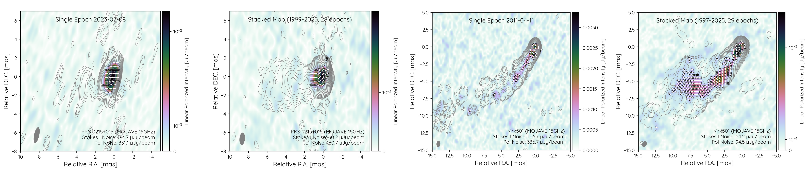<br />
图注：Current instruments have limited sensitivity and can reveal tentative evidence for spine-sheath structures in AGN jets only for the brightest sources. Here, we show selected single-epoch (left column) and stacked maps (right column) of the bright (0.5\,Jy -- 3\,Jy) neutrino-candidate blazar PKS\,0215+015 (top), and the bright (0.6\,Jy -- 1.2\,Jy) extreme blazar Mrk\,501 (bottom), compiled from archival 15\,GHz MOJAVE observations. The contours indicate total intensity, with the lowest contour corresponding to three times the Stokes I noise level, and increasing by a factor of $\sqrt{2}$. The color map shows linear polarized intensity, while the EVPA direction is indicated by the overplotted lines for all regions where the polarized signal is at least three times above its noise.<br />
对应解读：对应“建议重点查看的图表”第5项偏振灵敏度和法拉第旋转诊断、第6项喷流结构示意或模拟成像图，以及“关键图表逐图导读”中关于喷流结构、多普勒危机和偏振图的图4/图6解读。<br />
入选理由：该图直接展示当前VLBI/MOJAVE在亮中微子候选耀变体PKS 0215+015和TeV极端耀变体Mrk 501中的总强度等值线、线偏振强度色图和EVPA方向，能够支撑日报关于spine-sheath结构、边缘偏振增强、弱源偏振诊断受限以及SKA-VLBI提升高动态范围偏振成像能力的核心论点。相比Fig01，它更集中体现论文的主要技术诉求：用更高灵敏度和保真度在毫角秒尺度分解喷流结构与磁场形态。<br />
来源与置信度：\(arxiv_source\)；high；\(arxiv_source\) / \(SKAchapter_Probes_of_HE_Processes_in_Jets_arXiv.tex\):figure[2]</p>
<p><strong>Fig01</strong><br />
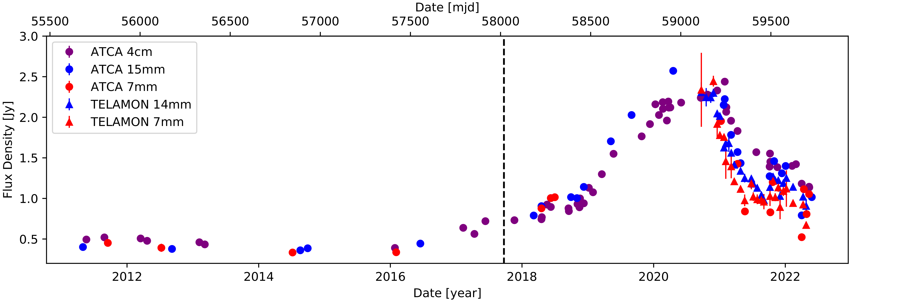<br />
图注：\(\small\) \(\sl\) Long-term ATCA/Effelsberg radio light curve of TXS\,0506+056 showing the dramatic radio outburst that evolved after the detection of the coincident IC170922A neutrino (dashed line).<br />
对应解读：对应“建议重点查看的图表”第7项多信使时间线图，以及“关键图表逐图导读”第5项中微子候选关联和日报中TXS 0506+056/IceCube事件后射电活动的讨论。<br />
入选理由：该图给出TXS 0506+056在IC170922A中微子到达时刻之后的长期ATCA/Effelsberg射电光变，虚线标出中微子事件时间，直接支撑日报关于中微子告警、射电耀发滞后和多信使证据链的解读。它有助于提醒读者不要仅凭方向符合判断关联，而要结合时间演化和后续VLBI结构变化。<br />
来源与置信度：\(arxiv_source\)；high；\(arxiv_source\) / \(SKAchapter_Probes_of_HE_Processes_in_Jets_arXiv.tex\):figure[1]</p>
<h4 id="_34">强相关工作</h4>
<p>这篇文章应放在三条文献线索里读。第一条是 TeV BL Lac 的 VLBI 运动学和多普勒危机，检索关键词可用 “TeV BL Lac Doppler crisis VLBI apparent speed HSP”。这些工作通常发现 HSP 的 parsec 尺度射电结速度偏低，与 TeV 快变和透明度约束所需的高 \(\delta\) 有张力。SKA-VLBI 的新意在于它瞄准过去因射电暗弱而难以纳入系统 VLBI 研究的 HSP，而不仅是重新观测经典亮源。</p>
<p>第二条是耀变体—中微子关联，尤其是 TXS 0506+056 之后的大量同类研究。检索关键词可用 “IceCube blazar association TXS 0506+056 VLBI radio flare neutrino”。这里既有支持关联的多波段案例，也有强调试验因子和总体关联显著性不足的反方分析。本文与这些工作的关系是提供更好的射电空间分辨诊断，使未来关联不只依赖方向和光变，还能检查候选源是否具有物理上适合产生中微子的紧致喷流环境。</p>
<p>第三条是 SKA 与 VLBI 科学规划，包括 SKA-VLBI 的相控技术、灵敏度估计、天体测量和 AGN 喷流科学案例。检索关键词可用 “SKA-VLBI phased SKA-Mid AGN jets polarimetry sensitivity”。这些基础方法文献帮助读者判断文章中关于灵敏度、偏振和成像保真度的设想是否现实。若要找相反观点，可检索 “blazar neutrino chance coincidence population constraints”，关注那些认为单个耀发关联不足以证明耀变体主导 IceCube 通量的统计研究。</p>
<p><strong>同一事件 / 同类源线索</strong>：</p>
<ul>
<li><a href="https://arxiv.org/abs/2606.29365">https://arxiv.org/abs/2606.29365</a></li>
<li><a href="https://arxiv.org/pdf/2606.29365">https://arxiv.org/pdf/2606.29365</a></li>
<li><a href="https://icecube.wisc.edu/science/data/TXS0506_alerts/">https://icecube.wisc.edu/science/data/TXS0506_alerts/</a></li>
<li><a href="https://www.skatelescope.org/">https://www.skatelescope.org/</a></li>
</ul>
<p><strong>相似工作</strong>：</p>
<ul>
<li><a href="https://arxiv.org/abs/1807.08816">https://arxiv.org/abs/1807.08816</a></li>
<li><a href="https://arxiv.org/abs/1807.08794">https://arxiv.org/abs/1807.08794</a></li>
<li><a href="https://arxiv.org/abs/1807.04537">https://arxiv.org/abs/1807.04537</a></li>
</ul>
<p><strong>基础理论 / 方法工作</strong>：</p>
<ul>
<li><a href="https://arxiv.org/abs/astro-ph/0507271">https://arxiv.org/abs/astro-ph/0507271</a></li>
<li><a href="https://arxiv.org/abs/0802.1522">https://arxiv.org/abs/0802.1522</a></li>
<li><a href="https://arxiv.org/abs/1104.2456">https://arxiv.org/abs/1104.2456</a></li>
<li><a href="https://arxiv.org/abs/1501.00415">https://arxiv.org/abs/1501.00415</a></li>
</ul>
<p><strong>相反观点 / 张力线索</strong>：</p>
<ul>
<li><a href="https://arxiv.org/abs/1901.10806">https://arxiv.org/abs/1901.10806</a></li>
<li><a href="https://arxiv.org/abs/2009.09792">https://arxiv.org/abs/2009.09792</a></li>
</ul>
</details>
<h3 id="4-optimising-transient-discovery-with-swift-xrt">4. Optimising transient discovery with Swift-XRT</h3>
<ul>
<li>来源：arXiv / astro-ph.HE</li>
<li>链接：https://arxiv.org/abs/2606.30141v1</li>
<li>作者：S. Srivastava, P. A. Evans, M. R. Goad, R. A. J. Eyles-Ferris</li>
<li>评分：novelty 7/10，importance 8/10，relevance 8/10，final 8.70/10</li>
<li>推荐理由：Practical Bayesian correction for Swift-XRT transient discovery substantially improves real-time X-ray transient classification; strong reusable HE time-domain/instrument-method value.</li>
</ul>
<p><strong>中文题目</strong>：用 Swift-XRT 优化瞬变源发现：校正 Eddington 偏差的贝叶斯瞬变概率</p>
<p><strong>做了什么</strong>：这篇文章针对 LSXPS 近实时 X 射线瞬变搜索中的一个实际痛点：许多候选源很暗、接近 Swift-XRT 探测阈值，测得的增亮可能是真瞬变，也可能只是噪声向上波动。作者建立了一个基于真实 Swift-XRT 图像模拟的贝叶斯框架，显式校正阈值附近的 Eddington 偏差，并计算每个源的真实强度是否超过历史 \(3\sigma\) 上限的概率。应用到 LSXPS 后，该方法恢复了超过 \(500\) 个高于该阈值的瞬变源，比原先确认样本增加超过 \(8\) 倍。核心价值不只是“多找到源”，而是给近实时 X 射线瞬变分类提供了可量化、可校准、可在不同曝光和背景条件下稳定使用的概率标尺。</p>
<p><strong>为什么重要</strong>：X 射线瞬变发现越来越依赖自动化巡天和快速多信使响应，低信噪比候选源的误报和漏报会直接影响后续光学、射电、伽马射线或引力波随访资源分配。阈值附近的源最容易受到 Eddington 偏差影响：被报告出来的候选往往是噪声正涨落的幸存者，因此观测通量系统性偏高。本文重要之处在于，它没有简单提高阈值来换取纯度，而是把探测选择效应和通量不确定性放进贝叶斯概率中，从而更合理地利用边缘候选。</p>
<p><strong>理论 / 观测 / 仪器方法价值</strong>：对观测和方法学的价值很直接：它为 Swift-XRT 的 LSXPS 瞬变报警提供了一个经过模拟校准的概率量，而不是仅靠检测显著性或观测通量与历史上限的硬比较。对理论研究者也有价值，因为更完整的低亮度瞬变样本会影响 X 射线双星爆发、恒星耀发、AGN 变源、潮汐瓦解事件和伽马暴余辉等种群统计。对仪器和巡天管线而言，这篇文章是一个典型案例：在探测极限附近，分类问题必须同时处理测量误差、先验源计数分布和触发选择函数。</p>
<p><strong>为什么应该关注</strong>：如果你使用 Swift-XRT 数据、关注实时瞬变、做多信使随访目标筛选，或需要可靠的 X 射线变源样本，这篇文章值得看。它提醒我们：低显著性候选不是简单的“假源池”，其中有大量真实瞬变，只是需要正确的统计校正。它也给未来 Einstein Probe、SVOM、eROSITA 后续交叉匹配、Athena 或其他时域 X 射线项目提供了可迁移的方法论：把“是否超过历史静默水平”转化为经过偏差校正的后验概率。</p>
<details class="paper-detail">
<summary>展开详细解读：文章讲解、背景、理论、重点章节、图表与相关工作</summary>
<h4 id="_35">文章详细讲解</h4>
<p>科学问题：LSXPS 的设计目标之一是近实时发现 Swift-XRT 视场中的新 X 射线瞬变或显著增亮源。但真正困难的不是亮源，而是大量接近探测极限的候选。对这些源，观测计数很少，背景涨落、曝光变化、点扩散函数覆盖、源检测阈值和历史非探测上限都会共同决定候选是否进入列表。传统做法通常把当前测得通量与历史 \(3\sigma\) 上限比较，或按检测显著性分成高、低可信度；问题是，阈值附近被选中的源本来就偏向噪声正涨落，导致测得通量高估，这就是 Eddington 偏差在瞬变搜索中的具体表现。</p>
<p>作者怎么做：本文构建了一个模拟驱动的贝叶斯框架。其核心思想是：对每个候选源，不直接问“测得通量是否超过历史上限”，而是问“在给定当前观测、历史上限、背景和探测选择效应的条件下，真实源强 \(F\) 超过历史 \(3\sigma\) 上限 \(F_{\rm UL}\) 的后验概率是多少”。为了得到真实可用的校正，作者没有只用理想化高斯误差，而是基于真实 Swift-XRT 图像进行大量模拟，覆盖不同曝光时间、背景水平和实际图像条件，估计观测强度与真实强度之间的映射以及被选中为候选的选择偏差。</p>
<p>关键结果：应用到 LSXPS 数据后，经 Eddington 偏差校正的瞬变概率能够重新分类大量原先被标记为低显著性的候选。摘要给出的主要数字是：方法恢复了超过 \(500\) 个真实强度超过历史 \(3\sigma\) 上限的瞬变源，数量比原先确认样本增加超过 \(8\) 倍。这个结果说明，过去保守分类确实漏掉了大量真实的低亮度瞬变；同时，模拟验证表明概率估计在不同曝光和背景条件下保持稳定，说明它不是只对某个特定观测子集有效的经验修补。</p>
<p>局限和下一步：本文的可靠性依赖于两个层面。第一，模拟必须足够忠实地复现 Swift-XRT 图像、背景、源检测流程和候选筛选条件；若真实数据中存在未建模的背景结构、杂散光、近邻源混叠或扩展源污染，后验概率仍可能偏差。第二，瞬变判据采用“真实强度超过历史 \(3\sigma\) 上限”，这对实际报警很实用，但并不等同于物理分类；恒星耀发、AGN 随机变源、X 射线双星爆发和 GRB 余辉都可能满足同一统计条件。下一步自然是把这种概率与多波段交叉匹配、宿主星系信息、历史光变曲线和物理分类器结合，从“是否瞬变”推进到“是什么瞬变”。</p>
<h4 id="_36">关键结果是怎么做出来的</h4>
<p>本文最关键的证据链从样本定义开始：候选源来自 LSXPS 的近实时点源目录和瞬变搜索输出，重点关注那些已被检测到但显著性较低、当前测得强度接近 Swift-XRT 探测极限的对象。作者关心的不是所有 X 射线源，而是当前观测相对于历史基线有可能显著增亮的源；历史基线以既有 LSXPS 或 Swift-XRT 观测给出的非探测上限或历史 \(3\sigma\) 上限表示。这样的样本天然存在截断：只有向上波动到足以被检测和进入候选列表的低通量源会被看见。</p>
<p>事件数方面，摘要给出的核心结果是经新框架判定后恢复超过 \(500\) 个高于历史 \(3\sigma\) 上限的瞬变源，超过原先确认样本的 \(8\) 倍。这个量级本身就是论文的主要发现：如果不校正 Eddington 偏差，低显著性候选会被过度保守地剔除；如果只看观测通量，又会把噪声正涨落误认为真实增亮。作者的概率分类试图在两者之间给出可校准的中间结果，即每个源有一个 \(P(F>F_{\rm UL}\mid{\rm data})\)，而不是一个脆弱的二元标签。</p>
<p>显著性和置信度不是通过单一的信噪比阈值给出，而是通过模拟校准的后验概率给出。统计上，观测计数在低计数区应更接近 Poisson 过程，源强估计受背景、曝光、有效面积、点扩散函数包围能量和检测选择函数影响。作者用真实 Swift-XRT 图像开展模拟，向图像中注入不同真实强度的源，运行与实际搜索一致或相近的检测流程，然后比较输入强度、恢复强度和候选分类之间的关系。这相当于用前向建模估计 \(p(\hat F\mid F,{\rm detected})\)，再反推出 \(p(F\mid\hat F,{\rm detected})\)。</p>
<p>支撑结论的图表应主要包括：观测通量与真实注入通量的偏差关系、未校正与校正后瞬变概率的对比、不同曝光时间和背景水平下概率校准曲线、以及 LSXPS 实际候选的概率分布或分类变化表。读者应特别检查低通量端：如果校正有效，那么靠近检测阈值的 \(\hat F/F\) 应呈现明显的向上偏差，而校正后的后验概率应在模拟中满足频率校准，也就是被赋予约 \(80\%\) 概率的源，在注入真值中约 \(80\%\) 真的超过阈值。</p>
<p>系统误差方面，最重要的是背景建模、曝光图和有效面积校正、源检测算法的阈值行为、混叠源或扩展发射、以及历史上限本身的不确定性。稳健性检验应看作者是否把模拟分成不同曝光和背景区间，是否检查概率残差随观测条件的趋势，是否比较低显著性源和高显著性源的一致性。摘要指出该方法在变化的曝光时间和背景条件下保持稳定，这是该证据链中最关键的稳健性声明。</p>
<details class="paper-subdetail">
<summary>展开背景、理论、公式、模型、章节和图表导读</summary>
<h4 id="_37">背景知识</h4>
<p>Swift-XRT 是 Neil Gehrels Swift Observatory 上的 X 射线望远镜，最初以快速定位伽马暴余辉为核心任务，但长期运行后积累了大量非均匀、重复覆盖的 X 射线图像。LSXPS，即 Living Swift-XRT Point Source Catalogue，把这些数据整理为持续更新的点源目录，并支持接近实时的源检测和瞬变搜索。由于 Swift 经常响应各种触发，天空覆盖不是传统均匀巡天，而是由大量指向观测拼接而成，这使它特别适合发现“碰巧落在视场中”的 X 射线瞬变和变源。</p>
<p>历史问题是：X 射线点源目录中的低显著性检测到底应该怎样使用。高能天文长期习惯用 \(3\sigma\)、\(4\sigma\)、\(5\sigma\) 或似然阈值来控制假阳性，但在实时瞬变场景中，单纯提高阈值会损失大量有价值的暗弱事件。另一方面，低阈值会产生大量统计涨落和处理伪迹，后续随访资源有限，不能把每个边缘候选都当作真实爆发。本文正是把这个二难问题转化为概率校准问题。</p>
<p>Eddington 偏差在天文测量中很常见，尤其出现在源计数分布陡峭且存在探测阈值时。若暗源数量远多于亮源，则在阈值附近，更多暗源会因噪声正涨落被散射到可检测区，而较少亮源会因负涨落掉出样本；因此被检测样本的测得通量平均偏高。这个偏差不是仪器坏了，也不是简单的背景扣除错误，而是测量误差与样本选择共同造成的条件偏差。</p>
<p>现在值得重新看这个问题，是因为时域天文正在从人工检查少量候选转向机器筛选海量候选。Swift-XRT、eROSITA、Einstein Probe、MAXI、NICER、Chandra 和 XMM-Newton 的归档或实时数据都面临类似问题：边缘检测是否应丢弃，取决于我们能否给出可信概率。尤其在多信使时代，一个低显著性 X 射线候选若与引力波、快射电暴、中微子或高能伽马事件在时间和位置上相关，其价值会陡增。</p>
<p>常见误区包括：第一，把检测显著性等同于瞬变概率；实际上检测到一个源和该源真实超过历史上限是两个不同命题。第二，把测得通量当作真实通量；阈值附近这尤其危险。第三，以为 Eddington 偏差只影响宇宙学星系计数或大样本统计；本文说明它同样会影响单个实时报警源的分类。第四，以为低显著性候选只会增加误报；如果统计模型正确，它们也可能显著提高完整性。</p>
<h4 id="_38">基础理论 / 方法脉络</h4>
<p>基础物理和统计图像可以从 X 射线成像探测说起。一个点源在探测器上产生的计数由源光子和背景计数组成；源光子数与入射通量、曝光时间、有效面积、能量响应和点扩散函数包围比例有关。对于低计数 X 射线观测，计数涨落通常不能简单视为连续高斯误差，Poisson 统计更自然。源检测流程则把图像中的局部计数超额转化为候选源、位置、计数率和通量估计。</p>
<p>本文关心的关键量不是源在当前图像中是否有非零计数，而是其真实当前强度 \(F\) 是否超过历史静默状态的上限 \(F_{\rm UL}\)。历史上限通常来自过去未检测或较弱检测的观测，常以 \(3\sigma\) 置信水平表达。若当前估计通量 \(\hat F\) 大于 \(F_{\rm UL}\)，直觉上像是瞬变；但当 \(\hat F\) 接近探测阈值时，\(\hat F\) 本身可能被选择效应显著抬高。因此本文把瞬变性定义为一个后验概率事件 \(F>F_{\rm UL}\)。</p>
<p>Eddington 偏差的关键在于先验源强分布。若源数随通量下降很快，即低通量源很多，那么同一个测得值 \(\hat F\) 更可能来自真实较暗但向上波动的源，而不是来自真实等于 \(\hat F\) 的源。贝叶斯框架正好适合表达这一点：似然 \(p(\hat F\mid F)\) 描述测量误差，先验 \(p(F)\) 描述真实源强分布，选择函数 \(S(\hat F)\) 或 \(S(F)\) 描述哪些源会进入候选列表。</p>
<p>本文采用的实际策略是模拟驱动。真实 Swift-XRT 图像包含复杂背景、曝光不均匀、坏像素、近邻源和点扩散函数变化，纯解析似然很难覆盖全部细节。因此作者用真实图像作为背景基底，注入模拟点源，运行检测与分类流程，得到从真实输入强度到测量输出和候选状态的经验响应。这比只套用简单的 \(\hat F\pm\sigma_F\) 更贴近管线行为。</p>
<p>主要 degeneracy 和系统误差包括：源强与背景水平的退化，低曝光下通量和显著性的强相关，源位置相对探测器响应或点扩散函数边翼的变化，历史上限与当前测量之间的非独立性，以及源的光谱假设对计数率到通量换算的影响。若一个源的实际光谱比假设更软或更硬，相同计数率对应的能量通量会改变；若历史观测和当前观测的能段或响应处理不同，瞬变概率也可能系统偏移。</p>
<h4 id="_39">公式与推导</h4>
<p>第一步，从低计数 X 射线成像的计数模型出发。设源真实通量为 \(F\)，曝光时间为 \(T\)，通量到计数率的转换因子为 \(C_{\rm X}\)，点扩散函数包围比例为 \(\eta\)，背景期望计数为 \(b\)，则源孔径中的总期望计数可写为</p>
<div class="math-display">\[\mu(F)=\eta C_{\rm X} F T+b .\]</div>
<p>这里 \(C_{\rm X}\) 吸收了有效面积、能量响应和假设光谱；\(\eta\) 表示检测孔径或拟合模型收集到的源光子比例。低计数条件下，观测计数 \(n\) 的自然似然是</p>
<div class="math-display">\[p(n\mid F,b)=\frac{\mu(F)^n e^{-\mu(F)}}{n!} .\]</div>
<p>这说明在阈值附近，\(n\) 的离散涨落会直接造成通量估计的非对称误差。</p>
<p>第二步，把计数转成一个近似通量估计。若背景已知，一个简单估计量为</p>
<div class="math-display">\[\hat F=\frac{n-b}{\eta C_{\rm X}T} .\]</div>
<p>实际管线会使用更复杂的最大似然或图像拟合，但这个式子揭示了核心尺度：曝光 \(T\) 越短、背景 \(b\) 越高，\(\hat F\) 的相对误差越大。高计数极限下可近似得到</p>
<div class="math-display">\[\sigma_F\simeq \frac{\sqrt{\mu(F)}}{\eta C_{\rm X}T} .\]</div>
<p>但本文关注的许多候选不一定处于这个高斯极限，因此需要模拟校准。</p>
<p>第三步，引入历史上限。若历史观测给出未检测上限 \(F_{\rm UL}\)，本文的瞬变命题可写成</p>
<div class="math-display">\[H_{\rm tr}: F>F_{\rm UL} .\]</div>
<p>注意这不是“\(\hat F>F_{\rm UL}\)”；后者只是观测结果，前者才是真实强度条件。贝叶斯后验概率为</p>
<div class="math-display">\[P_{\rm tr}=P(F>F_{\rm UL}\mid D,{\cal S})=\int_{F_{\rm UL}}^{\infty} p(F\mid D,{\cal S})\,dF ,\]</div>
<p>其中 \(D\) 表示当前观测数据，\({\cal S}\) 表示源已通过检测和候选筛选这一选择条件。</p>
<p>第四步，写出包含选择效应的后验。若 \(\pi(F)\) 是真实源强先验，\({\cal L}(D\mid F)\) 是观测似然，\(S(D)\) 或 \(S(F)\) 表示进入候选样本的概率，则可形式化写作</p>
<div class="math-display">\[p(F\mid D,{\cal S})\propto {\cal L}(D\mid F)\,\pi(F)\,P({\cal S}\mid D,F) .\]</div>
<p>在简单检测阈值近似下，\(P({\cal S}\mid D,F)\) 会偏向观测上波动的对象。本文用真实图像模拟估计这一项，而不是把它假定为理想阶跃函数。</p>
<p>第五步，Eddington 偏差来自陡峭的源计数先验。若局部源强分布近似为幂律</p>
<div class="math-display">\[\pi(F)\propto F^{-\gamma},\qquad \gamma>0,\]</div>
<p>并把测量误差近似为高斯</p>
<div class="math-display">\[p(\hat F\mid F)=\frac{1}{\sqrt{2\pi}\sigma_F}\exp\left[-\frac{(\hat F-F)^2}{2\sigma_F^2}\right],\]</div>
<p>则后验峰值不在 \(F=\hat F\)，而会向低通量移动。对小误差展开可得近似校正</p>
<div class="math-display">\[F_{\rm MAP}\simeq \hat F-\gamma\frac{\sigma_F^2}{\hat F} .\]</div>
<p>这个式子直观说明：源计数分布越陡、误差越大、测得通量越接近阈值，向下校正越明显。</p>
<p>第六步，把校正后的后验用于分类。若采用概率阈值 \(P_{\rm tr}>P_0\)，则瞬变样本为</p>
<div class="math-display">\[{\cal C}(P_0)=\{i: P_{{\rm tr},i}>P_0\} .\]</div>
<p>样本的期望真实瞬变数不是简单计数，而可估计为</p>
<div class="math-display">\[N_{\rm tr,exp}=\sum_i P_{{\rm tr},i} .\]</div>
<p>这类概率求和比硬阈值更适合评估总体产额，也能解释为什么低显著性候选在校正后仍可贡献大量真实瞬变。</p>
<p>第七步，模拟校准可以用可靠性曲线检查。对被分配到概率区间 \([P_a,P_b]\) 的模拟源，其真实超过阈值的频率为</p>
<div class="math-display">\[f_{\rm true}=\frac{1}{N_{ab}}\sum_{i\in [P_a,P_b]} I(F_i^{\rm inj}>F_{{\rm UL},i}) ,\]</div>
<p>其中 \(I\) 是指示函数，\(F_i^{\rm inj}\) 是注入真值。若模型校准良好，应有</p>
<div class="math-display">\[f_{\rm true}\approx \langle P_{{\rm tr},i}\rangle_{[P_a,P_b]} .\]</div>
<p>摘要中所谓在不同曝光和背景条件下稳定，实质上就是这类关系不应随 \(T\) 或 \(b\) 系统漂移。</p>
<p>第八步，若要比较未校正和校正模型，可使用对数似然或校准残差。一个简化的二项式校准似然为</p>
<div class="math-display">\[\ln {\cal L}_{\rm cal}=\sum_k \left[m_k\ln \bar P_k+(N_k-m_k)\ln(1-\bar P_k)\right],\]</div>
<p>其中第 \(k\) 个概率箱内有 \(N_k\) 个模拟源，真实瞬变数为 \(m_k\)，平均预测概率为 \(\bar P_k\)。若校正后 \(\ln {\cal L}_{\rm cal}\) 更高且残差无明显趋势，就说明概率不仅排序更好，而且数值上更可信。</p>
<h4 id="_40">模型拟合 / 应用方法</h4>
<p>这类工作的拟合对象不是单一物理模型参数，而是从图像数据到瞬变概率的统计映射。实际可拟合或校准的量包括：源真实通量 \(F\)、背景 \(b\)、通量误差模型、检测选择函数、历史上限 \(F_{\rm UL}\)、以及可能的源计数先验 \(π(F)\)。在模拟框架中，许多量不是用解析公式直接拟合，而是通过注入-恢复实验估计经验分布，例如 \(p(\hat F\mid F,{\cal S})\)。</p>
<p>似然层面，低计数 X 射线图像最自然的是 Poisson 图像似然或源检测管线内部的最大似然统计量。若最终只保留通量估计和误差，也可使用近似高斯或非对称误差分布，但本文的重点恰恰在于阈值附近这些近似容易失败。因此，读者应把模拟看作一种前向似然估计：从假定真实源强出发生成观测结果，再和真实候选的观测量比较，获得后验瞬变概率。</p>
<p>残差诊断非常关键。一个好的概率模型不只应让高概率候选更可能是真的，还应满足校准性：预测为 \(P_{\rm tr}\simeq0.7\) 的候选，在模拟真值中约 \(70\%\) 应满足 \(F>F_{\rm UL}\)。残差应分曝光时间、背景水平、探测器位置、源显著性和历史上限深度检查。如果某一类观测条件下概率系统偏高，说明选择函数或背景模型没有被充分捕捉。</p>
<p>主要参数退化包括 \(F\) 与 \(b\) 的退化、\(F\) 与光谱换算因子 \(C_{\rm X}\) 的退化、当前通量与历史上限深度的退化，以及先验源计数斜率 \(\gamma\) 与 Eddington 校正强度的退化。特别是在低曝光数据中，一个小的背景误差就可能造成很大的 \(P_{\rm tr}\) 变化；而在历史观测很浅的区域，\(F_{\rm UL}\) 较高，许多真实变源反而不容易满足“超过历史上限”的形式定义。</p>
<p>模型可能失败的场景也很明确。若候选源位于扩展星系团发射、超新星遗迹、亮源读出条纹或复杂背景附近，点源注入模拟可能低估假阳性。若源有极端光谱，统一的计数率到通量换算会偏移真实强度。若历史目录中存在未识别的持续弱源，当前检测可能被误判为新瞬变。实际应用时，概率分类最好与图像级人工检查、多波段对应体、历史光变曲线和独立 X 射线观测交叉验证。</p>
<h4 id="_41">重点章节 / 结果段落怎么读</h4>
<p>数据和样本部分应首先读。重点看作者如何从 LSXPS 中定义候选源，哪些被称为低显著性候选，历史 \(3\sigma\) 上限如何获得，当前观测和历史观测是否在同一能段、同一通量换算和同一源检测框架下处理。这里决定了后面概率的物理含义。</p>
<p>方法部分是全文核心。读者应关注贝叶斯框架如何写出瞬变概率，Eddington 偏差如何进入后验，先验源强分布或经验分布如何确定，以及选择函数是否通过注入-恢复模拟估计。尤其要看作者是否区分了“检测概率”“通量超过上限的概率”和“物理瞬变分类概率”。</p>
<p>模拟验证部分应细读。摘要强调使用基于真实 Swift-XRT 图像的大量模拟，并在不同曝光和背景条件下验证稳定性。读者应检查模拟是否覆盖实际候选的参数空间，是否使用与真实管线一致的源检测步骤，是否展示校准曲线、偏差曲线和误差覆盖率。</p>
<p>结果部分要看实际 LSXPS 应用。关键问题包括：超过 \(500\) 个新恢复瞬变如何按概率阈值定义，原先确认样本与新分类之间有多大重叠，低显著性候选中有多少被提升为高概率瞬变，以及这些新增源是否集中在特定曝光、背景或天区。若新增源过度集中在某些观测条件下，就需要警惕系统误差。</p>
<p>讨论和稳健性检验部分应看作者如何界定适用范围。一个好的讨论不应只说“找到更多瞬变”，还应说明误报率、完整性、报警阈值选择、不同科学目标下的概率阈值取舍，以及未来如何与多波段分类器结合。附录若包含模拟细节、概率表或管线参数，实际使用者尤其应读。</p>
<h4 id="_42">建议重点查看的图表</h4>
<ol>
<li>
<p>观测通量 \(\hat F\) 与注入真实通量 \(F\) 的比较图：重点看低通量端是否存在系统性 \(\hat F>F\)，以及校正后是否回到无偏或近似无偏。</p>
</li>
<li>
<p>未校正瞬变判据与校正后 \(P_{\rm tr}\) 的对比图：看哪些源从低显著性类别转为高概率瞬变，边界区域是否连续而非人为断裂。</p>
</li>
<li>
<p>概率校准曲线：横轴通常是预测概率 \(P_{\rm tr}\)，纵轴是真值模拟中的实际瞬变频率。关键是曲线是否接近对角线，以及在低概率和高概率端误差条是否变大。</p>
</li>
<li>
<p>曝光时间分箱下的性能图：检查短曝光和长曝光是否给出一致的概率校准，短曝光低计数区是否仍存在残余偏差。</p>
</li>
<li>
<p>背景水平分箱下的性能图：看高背景图像中误报是否增加，\(P_{\rm tr}\) 是否系统偏高。</p>
</li>
<li>
<p>LSXPS 实际候选的概率分布或分类表：关注超过 \(500\) 个恢复瞬变的概率阈值、累计数量随阈值变化、以及原确认样本在新概率中的位置。</p>
</li>
<li>
<p>残差或可靠性诊断表：检查是否列出不同观测条件下的偏差、散布、假阳性率和完整性，而不是只给总体平均。</p>
</li>
</ol>
<h4 id="_43">关键图表逐图导读</h4>
<p>图 1：如果论文给出 LSXPS 候选选择或管线流程图，读者应把它当作全篇逻辑图。坐标轴可能不是数值轴，而是从 Swift-XRT 图像、源检测、历史目录比较、低显著性标记到贝叶斯概率输出的流程。读图时要确认哪些步骤发生在候选筛选之前，哪些步骤用于事后概率校正；不要把后验概率误解为源检测算法本身的显著性。</p>
<p>图 2：注入-恢复模拟中的 \(\hat F\) 对 \(F\) 图最关键。横轴应是注入真实通量 \(F\)，纵轴是恢复通量 \(\hat F\) 或比值 \(\hat F/F\)。理想无偏关系是对角线或比值为 \(1\) 的水平线；阈值附近若点云向上偏离，就是 Eddington 偏差的直接证据。读图陷阱是只看高通量端，高通量端无偏并不能保证低通量候选可靠。</p>
<p>图 3：瞬变概率校准图应显示预测 \(P_{\rm tr}\) 与模拟真值频率的关系。横轴为模型给出的概率，纵轴为注入真值中满足 \(F>F_{\rm UL}\) 的比例，理想模型沿对角线。若未校正模型在高概率端明显过高或低概率端混入大量真瞬变，就说明简单通量阈值不可用。误差条大小取决于每个概率箱中的模拟数，低样本箱不要过度解读。</p>
<p>图 4：不同曝光时间或背景水平下的分组诊断图用于判断方法是否可迁移。横轴可能是曝光 \(T\)、背景 \(b\) 或预测概率，纵轴可能是偏差、真实频率或残差。关键看各组是否围绕零残差或对角线分布。如果短曝光组系统偏离，实际实时报警中最常见的短观测就需要更保守阈值。</p>
<p>图 5：实际 LSXPS 候选的分类变化图或累计数量图应展示新方法带来的样本增长。横轴可能是概率阈值 \(P_0\)，纵轴是满足 \(P_{\rm tr}>P_0\) 的候选数，或按原分类和新分类堆叠。读者要看超过 \(500\) 个恢复瞬变对应的阈值定义，以及数量增长是否主要来自概率中等的边缘源，而不是高概率源。</p>
<p>图 6：若有天空分布、源类型交叉匹配或历史上限深度图，应检查新增瞬变是否集中在银河面、深曝光场、背景复杂区或特定观测项目附近。坐标轴可能是银经银纬、历史上限、当前通量或变幅。读图陷阱是把空间聚集直接解释为天体物理种群；它也可能是 Swift 指向策略和曝光分布造成的选择效应。</p>
</details>
<h4 id="_44">论文原图 / 可嵌入图片</h4>
<p><strong>Fig04</strong><br />
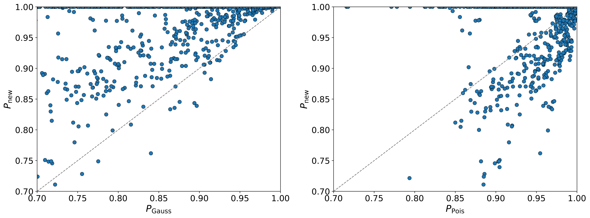<br />
图注：The probability that a low-significance transient candidate really is brighter than the historical 3-$\sigma$ upper limit $[P(T>L)]$, calculated using our simulation-based approach ($P_{\mathrm{new}}$), against the value derived assuming the measured count-rate uncertainties are \(\emph{(Left)}\): Gaussian and \(\emph{(Right)}\): Poisson.<br />
对应解读：对应“未校正瞬变判据与校正后 \(P_tr\) 的对比图”以及模型拟合段落中关于 Gaussian/Poisson 近似在阈值附近失效的讨论。<br />
入选理由：该图直接比较 simulation-based 新概率 \(P_new\) 与 Gaussian、Poisson 误差假设下得到的瞬变概率，是判断 Eddington bias 校正是否改变低显著性候选分类的核心证据。它比单纯流程或曝光分布图更能支撑日报中关于“简单通量阈值不可用、需贝叶斯校正”的主论点。<br />
来源与置信度：\(arxiv_source\)；high；\(arxiv_source\) / \(mnras_template.tex\):figure[4]</p>
<p><strong>Fig05</strong><br />
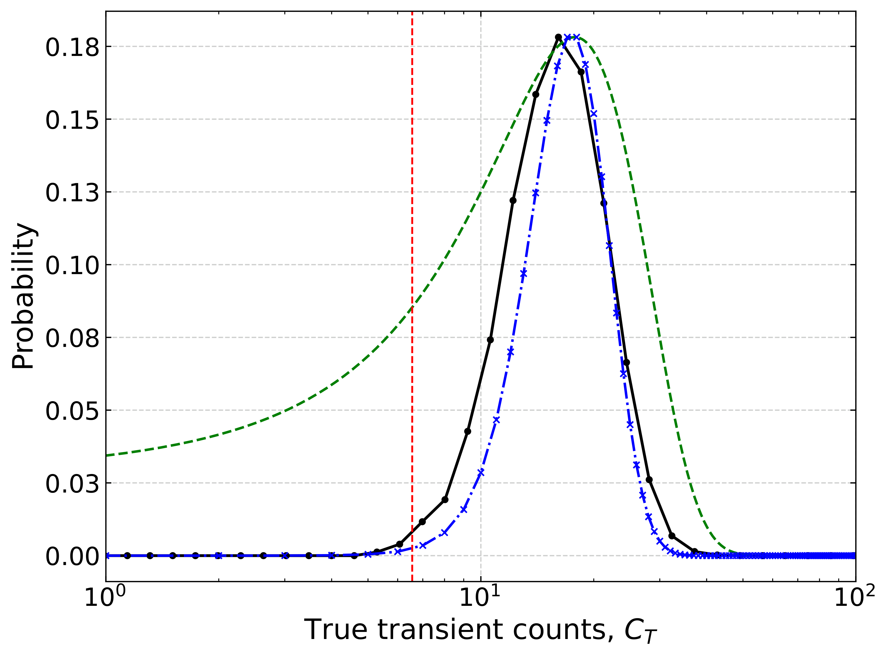<br />
图注：Comparison of the probability distributions for a representative low-significance transient candidate, showing the impact of correcting for Eddington bias. The black curve shows our bias-corrected probability distribution $P(C_{\mathrm{T}} \mid C_{\mathrm{M}})$, while the blue dash-dotted and green dashed lines show the corresponding Poisson and Gaussian distributions, respectively, assuming a mean of $C_{\mathrm{M}} = 18$ counts and Gaussian $\sigma = \sqrt{C_{\mathrm{M}}}$. The red dashed vertical line marks the historical $3\sigma$ upper limit. The Gaussian approximation clearly overestimates the probability at low true counts, while the Poisson form better captures the low-count regime and is therefore closer in shape to the corrected distribution. However, it does not include the source-count prior or selection effects, and so still remains biased. Our corrected distribution shifts slightly toward lower $C_{\mathrm{T}}$ values, reflecting the removal of the Eddington bias and yielding a lower overall probability above the upper limit.<br />
对应解读：对应“观测通量/计数与真实通量/计数的偏差校正”以及“关键图表逐图导读”中关于阈值附近 Eddington 偏差、历史 3σ 上限和后验分布的解读。<br />
入选理由：该图展示单个代表性低显著性候选的 P(C_T|C_M) 后验分布，并同时给出校正后、Poisson、Gaussian 三种分布及历史 3σ 上限。它能最直观说明校正如何把真实计数概率向低值移动、从而降低超过上限的概率，是解释 Eddington bias 物理含义和统计后果的最佳图之一。<br />
来源与置信度：\(arxiv_source\)；high；\(arxiv_source\) / \(mnras_template.tex\):figure[5]</p>
<p><strong>Fig06</strong><br />
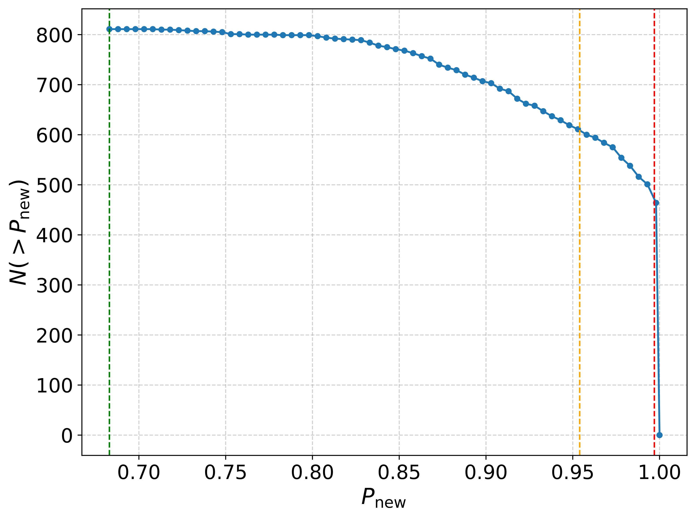<br />
图注：The number of LSXPS low-significance transients which our system identifies as transient, as a function of the probability assigned by our system<br />
对应解读：对应“LSXPS 实际候选的概率分布或分类表”以及图 5 式的“累计数量随概率阈值变化、超过 500 个恢复瞬变”的讨论。<br />
入选理由：该图给出 LSXPS 低显著性候选被新系统判为瞬变的数量随概率阈值的变化，直接支撑摘要中“恢复超过 500 个瞬变、比原确认样本增加八倍以上”的应用层结果。它是连接统计方法与实际巡天产出的关键图。<br />
来源与置信度：\(arxiv_source\)；high；\(arxiv_source\) / \(mnras_template.tex\):figure[6]</p>
<p><strong>Fig03</strong><br />
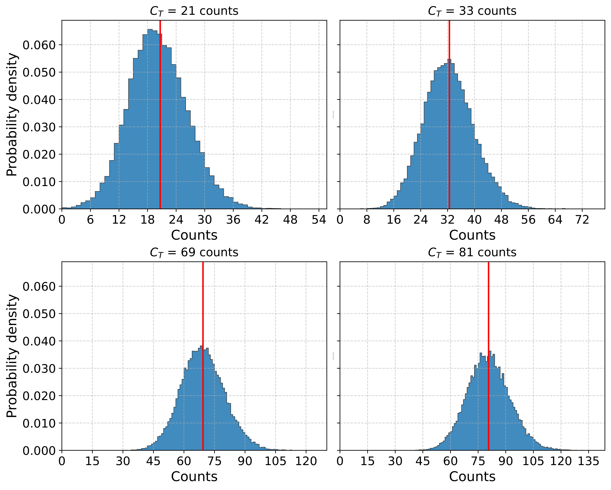<br />
图注：Examples of the probability distributions $P(\cmpeak \mid \ctpeak)$, constructed by passing each simulated image through the LSXPS count-rate determination tools and recording the measured counts $\cmpeak$. Each panel corresponds to a different true injected intensity $\ctpeak$, showing how the distribution of observed counts varies with source brightness. The red vertical line marks the corresponding injected true count value, $C_{T,\mathrm{peak}}$.<br />
对应解读：对应“注入-恢复模拟中的观测量与真实量映射”以及模型拟合段落中 p(C_M|C_T) 或 p(\hat F|F,S) 的前向似然估计。<br />
入选理由：该图展示不同注入真实强度 \(C_T\) 下，LSXPS 工具恢复的测量计数 \(C_M\) 分布，并标出真实注入值。它是 simulation-based Bayesian framework 的基础诊断图，能说明作者并非假设理想高斯误差，而是通过真实图像注入恢复来估计观测—真实映射。<br />
来源与置信度：\(arxiv_source\)；high；\(arxiv_source\) / \(mnras_template.tex\):figure[3]</p>
<p><strong>Fig07</strong><br />
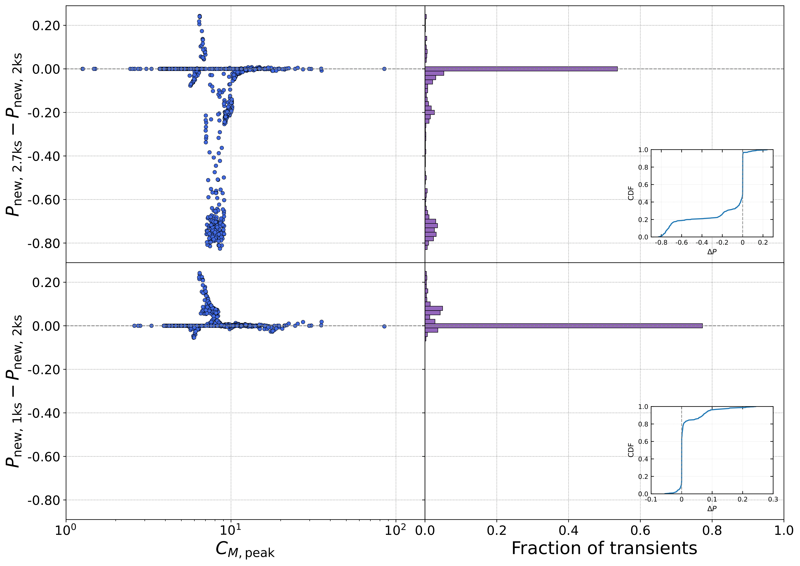<br />
图注：The effect of the seed-image exposure time on the inferred transient probabilities. \(\emph{Left:}\) the difference in \pnew\ between simulations using alternative seed images and the original simulations, shown as a function of the measured peak counts, \(\cmpeak,\) for seed images with exposures of 2.7~ks (top) and 1~ks (bottom). \(\emph{Right:}\) Histograms of the corresponding probability differences. \(\emph{Insets:}\) Cumulative distribution functions (CDFs) of $\Delta P$, illustrating the fraction of sources whose inferred probabilities change by a given amount<br />
对应解读：对应“曝光时间分箱下的性能图”和“不同曝光时间下概率校准/稳定性”的讨论。<br />
入选理由：该图直接检验 seed-image exposure time 改变时 \(P_new\) 的差异，包含 ΔP 随测量峰值计数的变化、直方图和 CDF。它能支撑日报中关于短曝光和长曝光下方法是否稳定、低计数区是否存在残余偏差的重点问题。<br />
来源与置信度：\(arxiv_source\)；high；\(arxiv_source\) / \(mnras_template.tex\):figure[7]</p>
<p><strong>Fig10</strong><br />
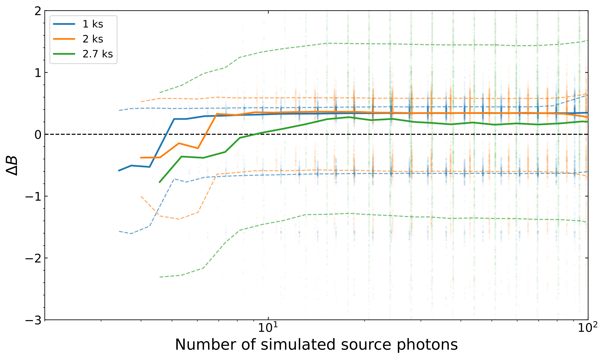<br />
图注：Background-map residuals as a function of simulated source strength. Points show $\Delta B = C_{\rm bgmap}-C_{\rm seed}$, measured in the same (intensity-dependent) region used by LSXPS to derive the source intensity, plotted against the number of injected source photons. Solid curves show the median $\Delta B$ for each seed exposure, and dashed curves indicate the $\pm1\sigma$ scatter about the median.<br />
对应解读：对应“背景水平分箱下的性能图”和“残差或可靠性诊断表”中关于背景估计误差、系统残差和观测条件依赖性的讨论。<br />
入选理由：该图给出背景图残差 ΔB 随注入源强的变化，并区分不同 seed exposure 的中位数和 ±1σ 散布，是候选集中最明确的系统误差/残差诊断图。它有助于判断背景低估是否会导致假高计数和概率系统偏差。<br />
来源与置信度：\(arxiv_source\)；high；\(arxiv_source\) / \(mnras_template.tex\):figure[10]</p>
<h4 id="_45">强相关工作</h4>
<p>这篇工作与 Swift-XRT 点源目录和瞬变管线的连续发展直接相关，应放在 \(1\)SXPS、\(2\)SXPS 和 LSXPS 的背景下读。早期目录主要解决长期归档数据中的源检测、通量估计和交叉匹配问题；本文更进一步，把“活目录”的近实时瞬变分类做成概率问题。检索关键词可用“Swift XRT point source catalogue”、“LSXPS transient”、“Swift-XRT transient detection”、“Eddington bias flux limit”。</p>
<p>方法上，它与天文巡天中的 Eddington bias、Malmquist bias、注入-恢复模拟、可靠性校准和贝叶斯选择函数建模属于同一类问题。相似思想可在光学瞬变巡天、射电瞬变搜索、X 射线源计数和弱透镜峰值统计中找到。值得对照的相反做法是使用固定信噪比或固定似然阈值来定义纯净样本；那种做法适合构建高纯度目录，但会牺牲阈值附近的大量真实事件。检索关键词可用“Bayesian deboosting astronomical surveys”、“Eddington bias source detection”、“injection recovery transient survey”、“probabilistic classification X-ray transients”。</p>
<p><strong>同一事件 / 同类源线索</strong>：</p>
<ul>
<li><a href="https://arxiv.org/abs/2606.30141">https://arxiv.org/abs/2606.30141</a></li>
<li><a href="https://www.swift.ac.uk/LSXPS/">https://www.swift.ac.uk/LSXPS/</a></li>
<li><a href="https://www.swift.ac.uk/1SXPS/">https://www.swift.ac.uk/1SXPS/</a></li>
<li><a href="https://www.swift.ac.uk/2SXPS/">https://www.swift.ac.uk/2SXPS/</a></li>
</ul>
<p><strong>相似工作</strong>：</p>
<ul>
<li><a href="https://www.swift.ac.uk/LSXPS/">https://www.swift.ac.uk/LSXPS/</a></li>
<li><a href="https://www.swift.ac.uk/2SXPS/">https://www.swift.ac.uk/2SXPS/</a></li>
<li><a href="https://www.swift.ac.uk/1SXPS/">https://www.swift.ac.uk/1SXPS/</a></li>
</ul>
<p><strong>基础理论 / 方法工作</strong>：</p>
<ul>
<li><a href="https://ui.adsabs.harvard.edu/abs/1913MNRAS..73..359E/abstract">https://ui.adsabs.harvard.edu/abs/1913MNRAS..73..359E/abstract</a></li>
</ul>
<p><strong>相反观点 / 张力线索</strong>：</p>
<p>（未提供）</p>
</details>
<h3 id="5-sloshing-motions-in-abell-3571-revealed-by-xrismresolve-velocity-mapping">5. Sloshing Motions in Abell 3571 Revealed by XRISM/Resolve Velocity Mapping</h3>
<ul>
<li>来源：arXiv / astro-ph.HE</li>
<li>链接：https://arxiv.org/abs/2606.30413v1</li>
<li>作者：Itsuki Aihara, Congyao Zhang, Sora Nakajima, Kyoko Matsushita, Hannah McCall, Irina Zhuravleva, Shogo B. Kobayashi, Kotaro Fukushima</li>
<li>评分：novelty 8/10，importance 8/10，relevance 7/10，final 8.65/10</li>
<li>推荐理由：XRISM/Resolve velocity mapping of cluster sloshing provides high-resolution X-ray gas kinematics with clear new observational content; not gamma-ray focused but methodologically important for HE X-ray astrophysics.</li>
</ul>
<p><strong>中文题目</strong>：XRISM/Resolve 速度成图揭示 Abell 3571 星系团内介质的晃动运动</p>
<p><strong>做了什么</strong>：这篇论文用 XRISM/Resolve 的高光谱分辨率 X 射线观测，对近邻亮星系团 Abell 3571 中心约 \(300\,\mathrm{kpc}\) 区域做了二维视向速度和速度弥散测量。作者发现，团内介质整体湍动较弱，典型速度弥散为 \(100\)--\(150\,\mathrm{km\,s^{-1}}\)，但不同方向存在有组织的速度偏移：北侧较冷、表面亮度增强的气体相对 BCG 蓝移至约 \(-60\,\mathrm{km\,s^{-1}}\)，南侧和东侧较热、表面亮度亏缺区域红移至约 \(170\,\mathrm{km\,s^{-1}}\)。结合温度、亮度结构和数值模拟，作者认为这更像一次偏心小并合触发的早期 sloshing，而非强 AGN 反馈主导的核心扰动。</p>
<p><strong>为什么重要</strong>：星系团核心的能量收支通常在“辐射冷却、AGN 加热、并合扰动、湍流耗散”之间寻找平衡。Abell 3571 看起来相当规整，却没有典型强冷核；这篇文章的重要性在于，它首次用 Resolve 直接测到该团核心气体的低马赫数、有方向性的视向运动，把过去主要依赖表面亮度和温度图推断的 sloshing 变成了可检验的速度场问题。</p>
<p><strong>理论 / 观测 / 仪器方法价值</strong>：对理论而言，它给小并合驱动的冷锋和核心重分布模型提供了速度尺度约束；对观测而言，它展示了 XRISM/Resolve 在扩展源速度成图上的能力，尤其是在 \(\mathrm{Fe}\)-\(K\) 线能量位移和线宽测量方面；对方法而言，它把多指向、重叠视场、空间混合、热结构和仪器响应共同纳入速度解释，是未来 Athena、Lynx 或更高分辨率 X 射线 IFU 研究星系团气体动力学的先导案例。</p>
<p><strong>为什么应该关注</strong>：如果你关心星系团冷核为何有时无法重新建立、微小并合如何在看似平静的团中留下长期动力学记忆，或 XRISM 能否从 Hitomi 时代的单一区域谱学走向真正的二维气体运动测量，这篇都值得读。它的核心信息不是“发现了很快的气体”，而是相反：在低湍动背景下，\(\sim 100\,\mathrm{km\,s^{-1}}\) 量级的相干流动已经足以改变核心热结构和金属/熵分布。</p>
<details class="paper-detail">
<summary>展开详细解读：文章讲解、背景、理论、重点章节、图表与相关工作</summary>
<h4 id="_46">文章详细讲解</h4>
<p>科学问题：Abell 3571 是一个低红移 \(z\sim0.04\)、X 射线很亮、整体形态看起来相对弛豫的星系团，但它的核心并不表现为一个教科书式强冷核。传统 X 射线图像已经提示其中心存在北侧表面亮度增强、南/东侧亮度亏缺以及温度不对称，这些结构可能来自冷核气体被小并合扰动后产生的 sloshing，也可能与 AGN 反馈、投影效应或非球对称引力势有关。真正区分这些解释，需要测量气体的速度场，而不仅是密度和温度投影。</p>
<p>作者怎么做：论文使用四个部分重叠的 XRISM/Resolve 指向，总曝光约 \(575\,\mathrm{ks}\)，覆盖 Abell 3571 中心约 \(300\,\mathrm{kpc}\) 的北、南、东三个连续 Resolve 视场。Resolve 的关键能力是以几 \(\mathrm{eV}\) 量级的能量分辨率测量 \(\mathrm{Fe}\)-\(K\) 复合线的线心和线宽，从而分别约束视向 bulk velocity 与非热速度弥散。作者将谱拟合得到的温度、金属丰度、红移和线宽与 Chandra/XMM 类图像中的热力学结构对照，并用已有数值模拟框架解释速度和温度不对称。</p>
<p>关键结果：大多数区域的速度弥散是亚声速的，约 \(100\)--\(150\,\mathrm{km\,s^{-1}}\)，说明 Abell 3571 核心并没有被强烈湍流搅乱。更有诊断意义的是速度场的符号和空间相干性：北侧较冷且表面亮度增强的区域相对 BCG 蓝移，最大约 \(-60\,\mathrm{km\,s^{-1}}\)；南侧和东侧较热、亮度较低区域则红移，最大可达 \(170\,\mathrm{km\,s^{-1}}\)。这种“冷亮一侧与热暗一侧在视向速度上反向”的图像，和偏心小并合在早期阶段驱动核心气体晃动的预期相符。</p>
<p>局限和下一步：Resolve 的视场有限，且星系团是扩展源，点扩散函数导致空间混合不可忽略；视向速度也只能给三维流场的一个投影分量。因此，论文对“Abell 3572 是扰动体”的判断是合理候选而非定案。下一步需要更大范围的 X 射线速度图、更精细的质量分布和星系速度场、以及针对 Abell 3571/3572 几何构型的定制流体模拟。特别值得跟进的是：sloshing 能否在没有明显强 AGN 气泡的情况下，长期推迟强冷核重新形成。</p>
<h4 id="_47">关键结果是怎么做出来的</h4>
<p>这篇文章的证据链首先来自样本和区域选择：作者没有把 Abell 3571 当作单一谱区处理，而是用四个部分重叠的 Resolve 指向覆盖中心 \(\sim300\,\mathrm{kpc}\)，并把北、南、东三个相邻视场与已知表面亮度残差结构相配准。关键不是简单报告一个全局红移，而是在冷亮北区、热暗南/东区和 BCG 附近分别拟合 \(\mathrm{Fe}\)-\(K\) 线心与线宽，检查速度偏移是否与热力学结构同相或反相。</p>
<p>统计量主要来自高分辨率谱拟合。对每个空间区域，模型需要同时拟合等离子体温度、丰度、归一化、视向红移以及额外线宽；速度偏移由谱线中心相对 BCG 或系统红移的偏移换算得到，速度弥散则由扣除热展宽和仪器响应后的剩余线宽给出。论文报告的典型弥散 \(\sim100\)--\(150\,\mathrm{km\,s^{-1}}\) 接近 Resolve 能够有效约束的低速区间，因此读者应重点看误差条、区域间相对差异以及系统误差预算，而不是只看最佳拟合值。</p>
<p>最重要的结果是空间相关性：北侧的低温/高亮结构蓝移，南侧和东侧高温/低亮结构红移。单看 \(-60\,\mathrm{km\,s^{-1}}\) 的蓝移并不惊人，因为它可能接近系统误差或投影混合水平；但与南/东侧达到 \(\sim170\,\mathrm{km\,s^{-1}}\) 的红移共同构成大尺度速度梯度，并与热力学残差图方向一致，这就更像 bulk sloshing 而非随机湍动。支撑这一点的图表应包括视场布局图、温度/表面亮度残差图、速度图、速度弥散图以及区域谱拟合残差。</p>
<p>显著性和置信度的判断应理解为多层次的：第一层是单个区域的谱线位移是否显著非零；第二层是南北/东西区域之间的差分速度是否超过统计误差和能标系统误差；第三层是速度符号是否与 sloshing 模拟预期一致。论文还将 Abell 3572 作为可能扰动体，因为它位于南侧约 \(1.6\,\mathrm{Mpc}\)，X 射线较暗且气体贫乏，符合一次已经剥离或质量较小的扰动者情景。不过，这一关联需要星系动力学和定制模拟进一步验证。</p>
<p>系统误差方面，最需要关注的是 Resolve 能量标定、扩展源空间混合、背景处理、等离子体多温结构和 BCG 系统速度基准。多温气体可能使 \(\mathrm{Fe}\)-\(K\) 复合线的有效线心偏移，点扩散函数会把相邻区域的谱混入，弱背景或非 X 射线本底会影响线宽。稳健性检验的价值在于改变区域划分、背景模型、温度成分数或能区后，南/东红移与北侧蓝移的相对图案是否仍然存在。</p>
<details class="paper-subdetail">
<summary>展开背景、理论、公式、模型、章节和图表导读</summary>
<h4 id="_48">背景知识</h4>
<p>星系团内介质，即 ICM，是温度约 \(10^7\)--\(10^8\,\mathrm{K}\) 的稀薄等离子体，主要通过热轫致辐射和重元素线辐射在 X 射线波段发光。在星系团核心，辐射冷却时间常可低于哈勃时间，因此如果没有加热或动力学扰动，气体应向中心冷却并形成强冷核。然而实际观测显示很多团处在中间状态：中心低熵但不极端，冷却被部分抑制，热结构又明显偏离球对称。</p>
<p>Sloshing 是解释这种中间状态的重要机制。一次小质量子团或星系群的偏心掠过会扰动主团引力势，使低熵核心气体在势阱中来回摆动。由于气体分层和角动量，投影图上常出现螺旋状冷锋、表面亮度残差和金属丰度不对称。过去对 sloshing 的判断多来自 Chandra 或 XMM-Newton 的高空间分辨率成像光谱，但缺少直接速度测量。</p>
<p>Hitomi 对 Perseus 星系团的观测曾显示，强 AGN 环境中 ICM 的湍动速度也可以很低，这改变了人们对星系团核心“剧烈搅拌”的直觉。XRISM/Resolve 继承了非色散高分辨率 X 射线谱学能力，虽然角分辨率不如 Chandra，但能在扩展源上测量谱线位移与线宽。因此，现在重新看 Abell 3571 这类近邻亮团，能够把冷锋/残差形态与真实气体运动联系起来。</p>
<p>Abell 3571 所在环境也使问题更有意思。其南侧约 \(1.6\,\mathrm{Mpc}\) 处的 Abell 3572 是一个 X 射线较暗、气体贫乏的星系团或团状结构，可能曾与 Abell 3571 相互作用。若 Abell 3572 是扰动者，那么 Abell 3571 的核心热结构就是大尺度环境和小并合历史的记录，而不只是中心 AGN 的产物。</p>
<p>该领域一个常见误区是把“表面亮度平滑”直接等同于“动力学弛豫”。对低马赫数 ICM 来说，\(100\,\mathrm{km\,s^{-1}}\) 级别的 bulk motion 在图像上可能很温和，却能显著移动低熵气体、改变冷却时间分布并影响金属输运。另一个误区是把所有核心扰动都归因于 AGN；事实上，AGN 气泡、声波、sloshing 冷锋和投影椭率在图像上会互相混淆，速度场是打破这种混淆的关键。</p>
<h4 id="_49">基础理论 / 方法脉络</h4>
<p>从物理图像看，星系团内热气体处在暗物质主导的引力势中，近似满足流体方程。若系统完全静态，压力梯度与重力平衡，气体速度场为零；小并合会让引力势中心与气体低熵核心发生相对位移，低熵气体在势阱中做近似振荡运动。这就是 sloshing 的直观起点：它不是一次强激波穿越主团核心，而是亚声速、相干、长寿命的核心晃动。</p>
<p>观测上，X 射线表面亮度主要与电子密度平方的视向积分有关，而温度来自连续谱形状和线复合结构。低温高密度气体被搬到一侧时，会表现为表面亮度增强和温度降低；相反方向则可能出现较热、较低密度的亮度亏缺区。但这些都是投影量，单独使用时很难判断气体是在朝向还是远离我们运动。</p>
<p>Resolve 测速度的基础是谱线 Doppler 位移。对 Abell 3571 这类热团，\(\mathrm{Fe}\)-\(K\) 线复合体强且位于高能端，适合测量红移和线宽。线心偏移给出 bulk line-of-sight velocity，线宽在扣除仪器响应和热展宽后给出非热速度弥散。这里的关键假设是谱线发射区域可用一个或少数几个热等离子体成分描述，并且仪器能标误差、空间混合和背景不会伪造大尺度速度梯度。</p>
<p>速度弥散与声速之比可用马赫数理解。ICM 声速通常为 \(\sim1000\,\mathrm{km\,s^{-1}}\) 量级，所以 \(100\)--\(150\,\mathrm{km\,s^{-1}}\) 的弥散是亚声速，非热压强占比也较小。这与“并合一定产生强湍流”的简单想象不同；小并合可以主要驱动有组织的低速 bulk flow，而不是各向同性强湍流。</p>
<p>主要退化来自三方面。第一，多温结构会改变谱线复合体的形状，使线心和线宽拟合偏移；第二，XRISM 的点扩散函数会把相邻区域的光子混合，使速度对比被稀释或误配；第三，视向投影只看到三维速度的一部分，所以小视向速度不等于真实三维速度小。论文的价值正在于把这些限制放在一起讨论，而不是把速度图当作简单的二维流线图。</p>
<h4 id="_50">公式与推导</h4>
<p>第一步从静水平衡开始。若 ICM 在球对称势 \(\Phi(r)\) 中近似静止，则</p>
<div class="math-display">\[\frac{dP}{dr}=-\rho_g(r)\frac{d\Phi}{dr},\]</div>
<p>其中 \(P\) 是热压强，\(\rho_g\) 是气体质量密度。Sloshing 可看成小并合使气体偏离这个平衡，产生小的速度场 \(\mathbf{v}\)。</p>
<p>第二步用流体动量方程描述扰动：</p>
<div class="math-display">\[\rho_g\left(\frac{\partial \mathbf{v}}{\partial t}+\mathbf{v}\cdot\nabla\mathbf{v}\right)=-\nabla P-\rho_g\nabla\Phi .\]</div>
<p>在低马赫数、无强激波情形下，非线性项可较小，气体主要在压力恢复力和重力势中做亚声速运动。</p>
<p>第三步把温度转成声速，用来判断运动是否亚声速：</p>
<div class="math-display">\[c_s=\left(\frac{\gamma k_B T}{\mu m_p}\right)^{1/2},\]</div>
<p>其中 \(\gamma=5/3\)，\(k_B\) 是玻尔兹曼常数，\(T\) 是等离子体温度，\(\mu\) 是平均分子量，\(m_p\) 是质子质量。论文中 \(100\)--\(150\,\mathrm{km\,s^{-1}}\) 的弥散通常给出 \(\mathcal{M}=\sigma_v/c_s\ll1\)。</p>
<p>第四步连接谱线位移和视向速度。若静止能量为 \(E_0\)，观测线心为 \(E_{\rm obs}\)，系统红移为 \(z_{\rm sys}\)，则小速度近似下</p>
<div class="math-display">\[\frac{\Delta E}{E}\simeq -\frac{v_{\rm los}}{c},\qquad \Delta E=E_{\rm obs}(1+z_{\rm sys})-E_0 .\]</div>
<p>这里 \(v_{\rm los}<0\) 表示相对系统蓝移，即气体朝向观测者。</p>
<p>第五步线宽由多个贡献叠加：</p>
<div class="math-display">\[\sigma_E^2=\sigma_{E,{\rm inst}}^2+\sigma_{E,{\rm th}}^2+\sigma_{E,{\rm nt}}^2 .\]</div>
<p>其中 \(\sigma_{E,{\rm inst}}\) 为仪器能量响应，\(\sigma_{E,{\rm th}}\) 为离子热运动展宽，\(\sigma_{E,{\rm nt}}\) 为非热速度弥散造成的展宽。</p>
<p>第六步热展宽与离子质量有关：</p>
<div class="math-display">\[\frac{\sigma_{E,{\rm th}}}{E_0}=\left(\frac{k_B T_i}{m_i c^2}\right)^{1/2},\]</div>
<p>其中 \(T_i\) 是离子温度，\(m_i\) 是发射离子质量。对 \(\mathrm{Fe}\)-\(K\) 线，铁离子较重，热展宽相对较小，有利于测量非热线宽。</p>
<p>第七步非热线宽换算为速度弥散：</p>
<div class="math-display">\[\sigma_{v,{\rm nt}}=c\frac{\sigma_{E,{\rm nt}}}{E_0} .\]</div>
<p>这就是论文中报告 \(\sim100\)--\(150\,\mathrm{km\,s^{-1}}\) 速度弥散的基本观测定义，但实际拟合会通过完整响应矩阵和等离子体模型完成。</p>
<p>第八步估算非热压强占比：</p>
<div class="math-display">\[\frac{P_{\rm nt}}{P_{\rm th}}\simeq \frac{\rho_g\sigma_{v,{\rm nt}}^2}{n_g k_B T}=\frac{\mu m_p\sigma_{v,{\rm nt}}^2}{k_B T},\]</div>
<p>其中 \(n_g\) 是气体粒子数密度。若 \(\sigma_{v,{\rm nt}}\ll c_s\)，非热压强通常只是热压强的小修正。</p>
<p>第九步谱拟合的统计核心可写为 Poisson 似然：</p>
<div class="math-display">\[\ln\mathcal{L}=\sum_i \left[n_i\ln m_i(\boldsymbol{\theta})-m_i(\boldsymbol{\theta})-\ln(n_i!)\right],\]</div>
<p>其中 \(n_i\) 是第 \(i\) 个能道计数，\(m_i(\boldsymbol{\theta})\) 是包含等离子体模型、背景、响应和速度参数 \(\boldsymbol{\theta}\) 的预测计数。速度图的可信度来自不同区域最佳拟合 \(v_{\rm los}\) 的差异是否超过统计和系统误差。</p>
<h4 id="_51">模型拟合 / 应用方法</h4>
<p>这类 XRISM/Resolve 分析的拟合对象是空间分区后的 X 射线能谱。每个区域通常用碰撞电离平衡热等离子体模型描述，核心自由参数包括温度 \(T\)、金属丰度 \(Z\)、模型归一化、红移或视向速度 \(v_{\rm los}\)、以及非热速度弥散 \(\sigma_{v,{\rm nt}}\)。对 Abell 3571，关键不是全局最佳温度，而是这些参数在北、南、东区域是否与表面亮度残差一致地变化。</p>
<p>似然上，X 射线计数通常采用 Poisson 统计，实际实现可能使用 \(C\)-stat 或相关变体，并通过响应矩阵、有效面积、非 X 射线背景和天体背景把物理模型折叠到探测器能道。由于 Resolve 的能量分辨率高，\(\mathrm{Fe}\)-\(K\) 线复合体对速度参数特别敏感；但由于空间分辨率有限，拟合必须考虑来自相邻天区的光子泄漏。</p>
<p>参数退化最明显的是温度结构和速度线宽之间的退化。多温等离子体可使线复合体变宽或变形，若强行用单温模型，可能把多温效应误解释为非热弥散。丰度、温度和归一化之间也会影响线强与连续谱的相对权重，从而影响线心误差。能标系统误差则直接进入 \(v_{\rm los}\)，因此区域间差分速度通常比绝对速度更稳健。</p>
<p>残差诊断应重点看 \(\mathrm{Fe}\)-\(K\) 能段。若速度模型正确，线心附近不应出现系统性正负残差；若非热线宽被低估，线翼会有残差；若多温结构重要，多个铁线组的相对强度可能无法同时拟合。读者还应检查改变背景、能区、空间分区和温度成分后，北侧蓝移与南/东侧红移的图案是否保持。</p>
<p>模型可能失败的场景包括：真实气体速度沿视线有多个分量，单一高斯线宽无法表示；AGN 泡或弱激波造成局地扰动却被大区域平均掉；Abell 3572 以外的结构或大尺度丝状体投影造成速度偏移；或者仪器空间混合使速度梯度被重构偏差放大。因此，论文的 sloshing 解释应看作目前最自洽的动力学图像，而不是唯一几何解。</p>
<h4 id="_52">重点章节 / 结果段落怎么读</h4>
<ol>
<li>
<p>数据和观测布局：先读 XRISM/Resolve 的四个指向、总曝光约 \(575\,\mathrm{ks}\)、三个连续视场覆盖范围，以及这些视场如何对应 Abell 3571 的北侧亮度增强和南/东侧亮度亏缺。这里决定了后面速度图的空间解释是否可信。</p>
</li>
<li>
<p>谱提取与响应处理：重点看作者如何定义空间区域、如何处理重叠指向、点扩散函数造成的交叉污染、背景以及能量标定。对扩展源速度测量来说，这一节往往比最终彩色速度图更重要。</p>
</li>
<li>
<p>热力学结果：阅读温度、表面亮度残差、丰度或熵结构的对应关系。北侧较冷且更亮、南/东侧较热且较暗，是 sloshing 解释的热力学基础。</p>
</li>
<li>
<p>速度和速度弥散测量：这是核心结果段。应关注各区域 \(v_{\rm los}\) 相对 BCG 的偏移、\(\sigma_{v,{\rm nt}}\) 的误差条、以及是否存在大尺度相干梯度。不要只看最大速度值，而要看其空间模式。</p>
</li>
<li>
<p>与数值模拟和扰动者候选的比较：读者应检查作者如何把观测到的冷/热不对称和红/蓝移模式与早期 sloshing 模拟联系起来，以及为什么 Abell 3572 被认为是可能扰动者。这一节的判断依赖几何投影，需保持适度谨慎。</p>
</li>
<li>
<p>讨论冷核重建：最后看作者如何论证 sloshing-driven redistribution 可能推迟强冷核恢复，尤其是在缺少明显强 AGN 反馈特征的情况下。这是本文从“速度测量”走向“星系团核心演化”的关键外推。</p>
</li>
</ol>
<h4 id="_53">建议重点查看的图表</h4>
<ol>
<li>
<p>XRISM/Resolve 视场叠加在 X 射线图像上的布局图：检查四个指向如何覆盖中心 \(\sim300\,\mathrm{kpc}\)，以及北、南、东区域是否真正对应热力学异常结构。</p>
</li>
<li>
<p>表面亮度残差图：看北侧亮度增强和南/东侧亮度亏缺的形态是否连续、是否像 sloshing 螺旋或冷锋，而不是点源残留或背景问题。</p>
</li>
<li>
<p>温度图或温度剖面：重点检查北侧是否系统偏冷、南/东侧是否偏热，以及误差是否允许这些区域相互区分。</p>
</li>
<li>
<p>视向速度图：看颜色尺度是否以 BCG 或系统红移为零点，北侧蓝移与南/东侧红移是否构成相干梯度，还是由少数低信噪区域驱动。</p>
</li>
<li>
<p>速度弥散图：检查 \(\sim100\)--\(150\,\mathrm{km\,s^{-1}}\) 是否普遍存在，是否有局部异常高值，以及上限/下限是否受仪器分辨率限制。</p>
</li>
<li>
<p>代表性区域的 \(\mathrm{Fe}\)-\(K\) 谱线拟合残差：看线心位移、线宽和多温模型是否真正被数据约束。</p>
</li>
<li>
<p>与模拟比较图：检查模拟快照的视角、时间阶段、扰动者轨道是否与观测形态和速度符号同时匹配。</p>
</li>
<li>
<p>系统误差或稳健性表：关注能标误差、背景选择、空间混合和区域划分改变后，速度差分是否仍然存在。</p>
</li>
</ol>
<h4 id="_54">关键图表逐图导读</h4>
<p>图 1：通常应是 Abell 3571 的 X 射线图像叠加 XRISM/Resolve 视场。横纵轴应为空间坐标或天球坐标，图上多边形/方框表示四个指向和提取区域。读图时要确认北、南、东三个区域之间不是完全独立的针孔观测，而是存在重叠和 PSF 混合；这会影响速度梯度的解释。</p>
<p>图 2：表面亮度或残差图。坐标轴为空间位置，颜色表示相对平滑模型的亮度增强或亏缺。北侧增强若与低温气体重合，是冷气体被搬运的证据；南/东侧亏缺若与高温相伴，支持气体重分布。陷阱是残差图依赖所减去的平滑模型，椭率和中心选择会改变残差外观。</p>
<p>图 3：温度或热力学参数图。颜色表示 \(T\) 或相关量，区域边界应与谱提取区一致。关键是北侧冷区和南/东热区是否在误差条内显著分离。若图中只给投影温度，读者要记住它是多温视向加权结果，不等于单一三维壳层温度。</p>
<p>图 4：视向速度图。颜色条应以 \(\mathrm{km\,s^{-1}}\) 为单位，零点相对 BCG 或系统红移。核心结论是北侧冷亮区蓝移至约 \(-60\,\mathrm{km\,s^{-1}}\)，南/东热暗区红移至约 \(170\,\mathrm{km\,s^{-1}}\)。读图陷阱是不要把颜色差直接理解为完整三维流速；这里只是视向分量，并且受空间混合稀释。</p>
<p>图 5：速度弥散图或各区域线宽表。纵轴或颜色表示 \(\sigma_{v,{\rm nt}}\)，多数区域在 \(100\)--\(150\,\mathrm{km\,s^{-1}}\)。若误差条较大，应关注是否给出上限以及是否扣除了热展宽和仪器展宽。该图支撑“亚声速、弱湍动”的结论。</p>
<p>图 6：模拟对比或示意图。坐标可能是模拟投影的密度/温度/速度图，模型线或颜色展示小并合后早期 sloshing 的形态。读者应检查模拟是否同时解释了亮度残差、温度不对称和速度符号，而不是只匹配其中一个特征。</p>
</details>
<h4 id="_55">论文原图 / 可嵌入图片</h4>
<p><strong>Fig01</strong><br />
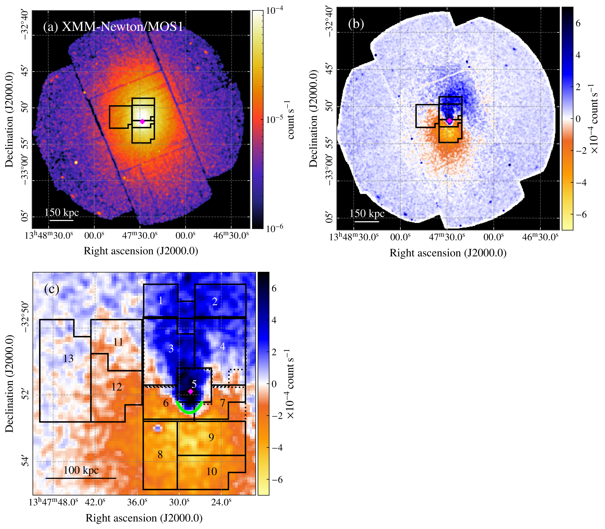<br />
图注：(a) Exposure-corrected X-ray image of A3571 obtained with XMM-Newton/MOS1 in the $0.5 \text{--} 2.0 \, \mathrm{keV}$ band. No background was subtracted, and the image was smoothed with a 2-dimensional Gaussian of $\sigma = 5.0 \, \mathrm{pixels}$ = \(\ang{;;5.5}.\) Black regions represent the Resolve FOV. (b) The residual image obtained by subtracting the best-fit elliptical $\beta$-model form the XMM/MOS1 image shown in the panel (a). Blue regions correspond to positive residuals, while red regions indicate surface brightness deficits. Black regions represent the Resolve FOV. (c) The same as (b), shown at a larger scale. The black lines indicate the Resolve spectral extraction regions. The dotted lines indicate the regions covered by two Resolve observation, i.e., by ABELL3571_C and either ABELL3571_S or ABELL3571_N. The green curve highlights the surface brightness jump. The magenta diamond marks the position of the BCG in all panels.<br />
对应解读：对应“建议重点查看的图表”中的1和2，以及“关键图表逐图导读”中的图1、图2：XRISM/Resolve视场叠加在X射线图像上的布局图、表面亮度残差图和谱提取区域。<br />
入选理由：这是候选集中唯一真实存在的图，并且同时包含XMM软X射线图像、Resolve视场覆盖、椭圆β模型扣除后的表面亮度残差、放大后的谱提取区域、重叠观测区、BCG位置和表面亮度跳变标记。它直接支撑日报关于四个XRISM指向如何覆盖中心约300 kpc、北侧亮度增强与南/东侧亮度亏缺是否与提取区域对应、以及空间混合和残差模型依赖性的解读。虽然它不展示温度、速度或速度弥散本身，但它是理解后续动力学解释和sloshing几何的基础图。<br />
来源与置信度：\(arxiv_source\)；high；\(arxiv_source\) / index.tex:figure[1]</p>
<h4 id="_56">强相关工作</h4>
<p>这篇工作应放在 Hitomi Perseus 结果之后理解：Hitomi 首次以高精度测到 Perseus 核心 ICM 的低湍动，证明强 AGN 活动环境中气体也可以很“安静”。XRISM/Resolve 的 Abell 3571 研究则进一步走向二维速度成图和小并合 sloshing 诊断。检索关键词可用“Hitomi Perseus intracluster medium turbulence”、“XRISM Resolve cluster velocity mapping”、“ICM sloshing cold fronts”。</p>
<p>与传统 Chandra/XMM 的 sloshing 文献相比，本文的增量在于速度场而非单纯形态学。冷锋、螺旋残差和金属分布不对称长期被用作 sloshing 证据，但它们也可能与 AGN、投影和椭圆势混淆。本文用 \(\mathrm{Fe}\)-\(K\) 线位移把“气体正在晃动”变成可量化的视向速度问题。可检索“Ascasibar Markevitch sloshing cold fronts”、“ZuHone sloshing simulations”、“minor merger cool core disruption”。</p>
<p>潜在张力在于 AGN 反馈解释和并合解释的相对权重。若一个团缺乏明显气泡和喷流特征，却没有强冷核，那么 sloshing redistribution 可能是重要因素；但如果更深射电或 X 射线图像发现过去 AGN 爆发遗迹，结论可能变成二者共同作用。针对 Abell 3571/Abell 3572 的后续检索应包括“Abell 3571 cool core”、“Abell 3572 perturber”、“Abell 3571 cold front”、“Abell 3571 XRISM”。</p>
<p><strong>同一事件 / 同类源线索</strong>：</p>
<ul>
<li><a href="https://arxiv.org/abs/2606.30413">https://arxiv.org/abs/2606.30413</a></li>
<li><a href="https://arxiv.org/pdf/2606.30413">https://arxiv.org/pdf/2606.30413</a></li>
</ul>
<p><strong>相似工作</strong>：</p>
<ul>
<li><a href="https://arxiv.org/abs/1607.04487">https://arxiv.org/abs/1607.04487</a></li>
<li><a href="https://arxiv.org/abs/1607.04493">https://arxiv.org/abs/1607.04493</a></li>
</ul>
<p><strong>基础理论 / 方法工作</strong>：</p>
<ul>
<li><a href="https://arxiv.org/abs/astro-ph/0103470">https://arxiv.org/abs/astro-ph/0103470</a></li>
<li><a href="https://arxiv.org/abs/astro-ph/0606268">https://arxiv.org/abs/astro-ph/0606268</a></li>
</ul>
<p><strong>相反观点 / 张力线索</strong>：</p>
<p>（未提供）</p>
</details>
<h3 id="6-pulsed-infrared-emission-from-magnetar-4u-014261-detected-by-jwst">6. Pulsed Infrared Emission from Magnetar 4U 0142+61 Detected by JWST</h3>
<ul>
<li>来源：arXiv / astro-ph.HE</li>
<li>链接：https://arxiv.org/abs/2606.29653v1</li>
<li>作者：Jeremy Hare, George G. Pavlov, Bettina Posselt, George Younes, Oleg Kargaltsev</li>
<li>评分：novelty 8/10，importance 7/10，relevance 8/10，final 8.65/10</li>
<li>推荐理由：JWST timing detection of pulsed mid-IR emission from magnetar 4U 0142+61 is a clear new compact-object result with implications for magnetospheric emission.</li>
</ul>
<p><strong>中文题目</strong>：JWST 探测到磁星 4U 0142+61 的脉冲红外辐射</p>
<p><strong>做了什么</strong>：这篇文章报告了 JWST/NIRCam 对经典磁星 4U 0142+61 的一次近红外计时观测：在中心波长约 \(4.08\,\mu{\rm m}\) 的 \({\rm F410M}\) 滤光片中，作者测得源的通量密度为 \(f_\nu=22.9\pm0.6\,\mu{\rm Jy}\)，并在 \(33\) 分钟观测中探测到与磁星自转一致的 \(115.059\pm0.035\,{\rm mHz}\) 脉动。红外脉冲轮廓看起来每个周期一个峰，脉冲分数下限约为 \(10\%\)。作者把红外相位同 NICER 与 NuSTAR 的软、硬 \(X\) 射线脉冲相比较，发现红外峰与硬 \(X\) 射线峰相位重合，因此倾向于认为该红外脉冲来自磁层，而不是单纯来自被动尘埃盘或未调制的表面热辐射。</p>
<p><strong>为什么重要</strong>：4U 0142+61 是少数在光学、红外、软 \(X\) 射线和硬 \(X\) 射线都有丰富观测的磁星之一，也是讨论磁星红外过量、可能 fallback disk、以及磁层非热辐射时经常被引用的对象。过去红外探测多以成像和光谱能量分布为主，缺少高信噪比、相位可比的红外计时证据。JWST 在 \(4\,\mu{\rm m}\) 附近直接看到与自转周期一致的红外脉动，把“红外光来自哪里”这个问题从静态能谱讨论推进到相位诊断：如果红外峰和硬 \(X\) 射线峰同步，它们更可能共享磁层几何或粒子群。</p>
<p><strong>理论 / 观测 / 仪器方法价值</strong>：这项工作的价值主要在方法和物理判别力：它展示了 JWST/NIRCam timing mode 可以在几十分钟内对几十 \(\mu{\rm Jy}\) 级别的磁星进行红外脉冲搜索，并把红外相位同现代 \(X\) 射线计时数据连接起来。对理论而言，结果给磁层曲率辐射、同步辐射、回旋/共振散射相关模型提供了新的相位约束；对观测而言，它说明中红外附近的脉冲分数、相位滞后和能谱形状将成为区分磁层辐射与盘辐射的重要诊断量；对仪器和数据分析而言，它是 JWST 高背景、短时序红外计时在紧致星研究中的一个标杆案例。</p>
<p><strong>为什么应该关注</strong>：如果你关心磁星辐射机制，这篇文章值得看，因为它把一个长期争论的红外成分变成了可计时、可相位比较的信号。如果你关心 JWST 的非常规科学应用，它证明了 JWST 不只是深场和星系工具，也能做秒级紧致源计时。如果你关心多波段脉冲轮廓建模，这个结果提供了一个很干净的问题：为什么 \(4\,\mu{\rm m}\) 红外峰会贴近硬 \(X\) 射线峰，而不是简单跟软 \(X\) 射线热峰走？</p>
<details class="paper-detail">
<summary>展开详细解读：文章讲解、背景、理论、重点章节、图表与相关工作</summary>
<h4 id="_57">文章详细讲解</h4>
<p>科学问题：4U 0142+61 是一颗自转周期约 \(8.7\,{\rm s}\) 的孤立磁星，长期以来在红外和光学波段显示出相对于表面热辐射外推的过量。这个过量究竟来自磁层中的非热粒子、来自磁星周围的 fallback disk，还是二者混合，一直没有完全解决。单看宽带光谱能量分布容易出现退化：尘埃盘可以给出平滑红外连续谱，磁层辐射也可以在光学到红外产生幂律或弯曲谱。因此，是否存在与自转严格同步的红外脉冲，以及红外峰相对于 \(X\) 射线峰的相位，是判断辐射区是否受磁层几何控制的关键证据。</p>
<p>作者怎么做：论文使用 JWST/NIRCam 在 2024 年 8 月 18 日对 4U 0142+61 进行了约 \(33\) 分钟 timing mode 观测，时间分辨率约 \(2.5\,{\rm s}\)，滤光片为 \({\rm F410M}\)，枢轴波长 \(4.08\,\mu{\rm m}\)。作者从 NIRCam 时间序列中提取目标光变曲线，进行背景和仪器效应处理，然后在预期磁星自转频率附近搜索周期信号。为了物理解释，他们还把红外相位同 NICER 软 \(X\) 射线和 NuSTAR 硬 \(X\) 射线脉冲轮廓比较，重点看峰位是否重合，而不仅是周期是否一致。</p>
<p>关键结果：在 \({\rm F410M}\) 中，作者测得通量密度 \(f_\nu=22.9\pm0.6\,\mu{\rm Jy}\)，并探测到 \(115.059\pm0.035\,{\rm mHz}\) 的周期信号，与该历元的磁星自转频率相符。脉冲轮廓目前看似单峰，但由于采样时间 \(2.5\,{\rm s}\) 占自转周期的相当大一部分，窄结构会被时间平均抹平，所以单峰形态不能过度解释。作者给出的脉冲分数是下限，约 \(10\%\)，这已经足以排除“全部红外光都是完全稳定、轴对称盘辐射”的最简单图像。相位比较显示红外峰更接近硬 \(X\) 射线峰，这支持磁层起源，因为硬 \(X\) 射线通常被认为比软 \(X\) 射线热成分更直接地追踪外磁层非热过程。</p>
<p>局限和下一步：这次观测总时长只有约 \(33\) 分钟，覆盖的自转周期数有限，时间分辨率也不足以重建复杂脉冲轮廓，因此脉冲分数、峰宽和多峰结构仍有较大不确定性。相位对齐还依赖于不同望远镜、不同历元数据之间的星历连接和绝对计时校准；磁星可能有 timing noise 或小 glitch，这会影响精细相位比较。下一步最直接的是用更长的 JWST 时间序列、多个红外滤光片和同时或准同时的 NICER/NuSTAR 观测来测量能量依赖的脉冲分数与相位滞后。如果红外脉冲相位随波长变化，或脉冲分数在 \(2\) 到 \(5\,\mu{\rm m}\) 有明显趋势，将能更有力地区分磁层谱与盘谱。</p>
<h4 id="_58">关键结果是怎么做出来的</h4>
<p>这篇文章的核心证据链从一个小但明确的数据集开始：JWST/NIRCam 对 4U 0142+61 进行了约 \(33\) 分钟的 timing mode 观测，单次采样约 \(2.5\,{\rm s}\)。考虑到该源自转周期约 \(8.7\,{\rm s}\)，整个数据集覆盖大约两百多个自转周期；这对周期搜索足够有用，但对细致脉冲形状重建并不宽裕。样本不是一个源表统计样本，而是单源高时间分辨红外光变曲线，因此论证重点是计时显著性、相位一致性和与多波段轮廓的对应关系。</p>
<p>通量测量方面，作者在 \({\rm F410M}\) 中得到 \(f_\nu=22.9\pm0.6\,\mu{\rm Jy}\)。读者应注意，这个误差主要反映测光统计和局部背景处理下的测量精度，但解释红外辐射机制时还要考虑绝对定标、孔径修正、邻近源污染、背景结构以及星际消光修正。由于 4U 0142+61 在红外波段较暗，JWST 的优势不是只在于探测到源，而是在于能以稳定红外测光得到可折叠的时间序列。</p>
<p>周期探测方面，作者在预期自转频率附近找到 \(115.059\pm0.035\,{\rm mHz}\) 的信号。这个频率与磁星在该历元的自转相符，是论文结论的第一根支柱。关键不是盲搜到一个任意周期，而是在已知星历附近看到红外光变同步；这显著降低了偶然周期峰的解释空间。读者在原文中应重点查看周期图、折叠轮廓和频率不确定度的估计方式：窗口函数、采样间隔、有限观测长度和红噪声都会影响峰宽和假警概率。</p>
<p>脉冲分数方面，作者给出约 \(10\%\) 的下限。这里“下限”很重要，因为有限时间分辨率会把窄峰平均到相邻相位 bin 中，背景或非脉冲成分也会稀释调制幅度。若红外总通量由一个稳定盘成分和一个脉冲磁层成分组成，观测到的脉冲分数会小于磁层成分本身的脉冲分数。因此，即使 \(10\%\) 看起来不高，它仍可能意味着脉冲红外子成分相当强。</p>
<p>最有物理含义的图表应是红外脉冲轮廓与 NICER、NuSTAR 轮廓的相位对齐图。作者发现红外峰与硬 \(X\) 射线峰重合或显著重叠，而不是随机落在软 \(X\) 射线热峰附近。这个比较把“探测到周期”提升为“辐射区可能相通”：硬 \(X\) 射线峰通常关联磁层电流、共振散射或非热辐射，而软 \(X\) 射线峰更容易受热斑几何和表面温度分布控制。</p>
<p>主要系统误差包括 JWST 绝对计时、NIRCam timing mode 的时间标记、不同历元 \(X\) 射线星历外推、磁星 timing noise、背景选择、孔径选择和可能的仪器相关周期性。稳健性检验应包括改变光度孔径和背景区、检查场中其他源是否出现同样周期、用不同频率搜索统计量重复验证、以及用不同相位零点或星历方案比较红外与 \(X\) 射线峰位。若这些检验都不改变红外峰与硬 \(X\) 射线峰相近的结论，磁层解释就会更可信。</p>
<details class="paper-subdetail">
<summary>展开背景、理论、公式、模型、章节和图表导读</summary>
<h4 id="_59">背景知识</h4>
<p>磁星是表面偶极磁场通常达到 \(10^{14}\) 到 \(10^{15}\,{\rm G}\) 的中子星，辐射能量主要来自磁场衰减和磁层活动，而不是自转能损失。4U 0142+61 是最著名的持久磁星之一，具有稳定明亮的 \(X\) 射线辐射、长期计时监测、光学/红外对应体，以及硬 \(X\) 射线尾。它因此成为检验磁星多波段辐射模型的标准源。</p>
<p>历史上，4U 0142+61 的光学和红外辐射引出过两类解释。一类认为辐射来自磁层，可能与沿扭曲磁场线流动的电荷、粒子加速、同步或曲率辐射有关；另一类强调 fallback disk，即超新星后残余物质形成的低质量尘埃/气体盘，它能在红外产生热辐射。早期中红外观测中，4U 0142+61 的红外过量曾被视为 fallback disk 候选证据，但这并不自动排除磁层贡献。</p>
<p>为什么现在值得重新看？因为 JWST 在 \(3\) 到 \(5\,\mu{\rm m}\) 具有远高于以往设施的灵敏度和稳定性，并且 NIRCam timing mode 可以把红外测光和秒级计时结合起来。过去很多争论集中在谱能量分布上，而谱能量分布经常被消光、非同时观测、源变、盘几何和磁层谱形退化所限制。脉冲探测提供了更直接的几何信息：只有与中子星自转相干的辐射成分才会产生稳定相位结构。</p>
<p>该领域一个常见误区是把“存在红外过量”直接等同于“存在盘”，或者把“探测到脉冲”直接等同于“没有盘”。实际上，盘和磁层可以同时存在，观测到的总红外光可能是稳定热盘成分加上脉冲非热成分的混合。另一个误区是把红外峰与某个 \(X\) 射线峰的重合解释为唯一几何解；由于磁星脉冲轮廓受广义相对论光线弯曲、磁场扭曲、散射光学深度和能带选择影响，相位重合是强约束，但还不是完整的三维辐射区反演。</p>
<p>此外，磁星不是严格稳定的钟。它们有 timing noise、扭矩变化、burst 后恢复和偶发 glitch。任何跨波段相位比较都必须确认观测历元、星历外推和绝对计时误差足够小。4U 0142+61 相对许多磁星更稳定，但仍不能把射电脉冲星式的相干星历理所当然地套用到所有时间跨度。</p>
<h4 id="_60">基础理论 / 方法脉络</h4>
<p>从最基本的图像看，磁星的观测辐射可分为几类：中子星表面热辐射、磁层非热辐射、以及可能来自周围物质的再处理或热辐射。表面热辐射随自转调制，是因为热斑和观察者视线的夹角变化；磁层辐射也会随自转调制，是因为发射束、散射区和电流结构固定在旋转磁场几何上；盘辐射若近似轴对称且响应时间较长，则通常不应在 \(8.7\,{\rm s}\) 周期上产生很强调制。</p>
<p>本文最关键的观测量是红外光变曲线中的相干周期。若观测到的红外光强可写成稳定成分加周期成分，那么折叠到自转相位后应出现重复轮廓。由于 NIRCam 的时间分辨率约 \(2.5\,{\rm s}\)，而周期约 \(8.7\,{\rm s}\)，每个周期只有约三到四个独立时间采样，任何窄峰都会被显著平滑。因此，本文报告的单峰结构和脉冲分数应理解为受采样卷积后的结果。</p>
<p>红外与 \(X\) 射线的相位比较是一个辐射区诊断。软 \(X\) 射线通常含有表面热斑和低能散射成分；硬 \(X\) 射线在磁星中常被归因于磁层加速粒子或高能散射过程。如果 \(4\,\mu{\rm m}\) 红外峰与硬 \(X\) 射线峰相位一致，说明红外辐射的方向性或可见性可能受同一磁层结构支配。反之，如果红外峰与软 \(X\) 射线热峰一致，则也可能支持表面加热和近表面磁层联系。</p>
<p>观测方法上，本文本质是把一串带噪声的红外光子计数或测光点转换为频率空间的周期证据，再转换为相位折叠轮廓。这里常见系统误差包括背景估计、孔径损失、探测器响应变化、时间戳精度、太阳系质心改正和仪器采样窗口。由于 JWST 绕日地 \({\rm L2}\) 运行，精确时间和位置修正对于秒级相位比较很重要。</p>
<p>理论解释中的主要退化是：总通量谱形、脉冲分数和相位滞后并不能单独唯一确定辐射机制。稳定盘成分会稀释磁层脉冲；磁层中不同高度的辐射可能有不同相位；消光修正会改变红外光谱斜率；非同时多波段数据会受到磁星长期变动影响。因此，本文最稳健的结论不是完整排除盘，而是证明至少有一部分 \(4\,\mu{\rm m}\) 辐射与自转相干，并且相位上更接近硬 \(X\) 射线磁层成分。</p>
<h4 id="_61">公式与推导</h4>
<p>第一步是把观测到的红外测光与物理通量联系起来。对窄到中等带宽滤光片，测得的带平均通量密度可近似写成</p>
<div class="math-display">\[f_\nu \simeq \frac{\int F_\nu(\nu) R(\nu)\,d\nu}{\int R(\nu)\,d\nu},\]</div>
<p>其中 \(F_\nu(\nu)\) 是源在频率 \(\nu\) 处的真实谱通量密度，\(R(\nu)\) 是系统响应函数。本文给出的 \(f_\nu=22.9\pm0.6\,\mu{\rm Jy}\) 是 \({\rm F410M}\) 响应加权后的结果，而不是单色光谱的完整形状。</p>
<p>第二步是把时间序列写成平均通量加周期调制。最简单的单谐波模型为</p>
<div class="math-display">\[f(t)=\bar f\left[1+a\cos\{2\pi \nu_{\rm s}(t-t_0)+\phi\}\right]+\epsilon(t),\]</div>
<p>其中 \(\bar f\) 是平均通量，\(a\) 是相对调制幅度，\(\nu_{\rm s}\) 是自转频率，\(t_0\) 是参考时刻，\(\phi\) 是相位常数，\(\epsilon(t)\)<br />
) 是噪声项。本文探测到的频率 \(\nu_{\rm s}=115.059\pm0.035\,{\rm mHz}\) 与 4U 0142+61 的自转一致。</p>
<p>第三步是定义自转相位，用于折叠光变曲线：</p>
<div class="math-display">\[\Phi(t)=\left[\Phi_0+\nu_0(t-t_0)+\frac{1}{2}\dot\nu(t-t_0)^2\right]\bmod 1.\]</div>
<p>这里 \(\Phi(t)\) 是相位，\(\nu_0\) 和 \(\dot\nu\) 分别是参考历元的频率和频率导数。若观测时间很短，\(\dot\nu\) 项通常很小；但跨 JWST、NICER 和 NuSTAR 历元做相位比较时，星历项和 timing noise 不能忽略。</p>
<p>第四步是从折叠轮廓定义脉冲分数。常用峰谷定义为</p>
<div class="math-display">\[{\rm PF}_{\rm pv}=\frac{f_{\max}-f_{\min}}{f_{\max}+f_{\min}},\]</div>
<p>其中 \(f_{\max}\) 和 \(f_{\min}\) 是折叠轮廓的最大和最小通量。若采用均方根定义，则</p>
<div class="math-display">\[{\rm PF}_{\rm rms}=\frac{1}{\bar f}\left[\sum_{k=1}^{K}\frac{A_k^2+B_k^2}{2}\right]^{1/2},\]</div>
<p>其中 \(A_k\) 与 \(B_k\) 是第 \(k\) 个傅里叶谐波系数。本文给出的约 \(10\%\) 应理解为受时间分辨率和非脉冲成分稀释后的下限。</p>
<p>第五步是考虑有限积分时间对脉冲幅度的抹平。若真实信号含有频率 \(\nu\) 的正弦项，单个曝光时间为 \(\Delta t\)，观测幅度会乘上近似因子</p>
<div class="math-display">\[\eta(\nu)=\left|\frac{\sin(\pi \nu \Delta t)}{\pi \nu \Delta t}\right|.\]</div>
<p>对 \(\nu\simeq0.115\,{\rm Hz}\) 和 \(\Delta t\simeq2.5\,{\rm s}\)，\(\eta\) 已明显小于 \(1\)，说明真实脉冲分数可能高于观测值，窄峰或高次谐波更容易被削弱。</p>
<p>第六步是周期搜索的统计量。对非均匀或带误差的测光点，常用 Lomb-Scargle 类功率可写成</p>
<div class="math-display">\[P(\omega)=\frac{1}{2\sigma_f^2}\left[\frac{\left[\sum_i w_i(f_i-\bar f)\cos\omega(t_i-\tau)\right]^2}{\sum_i w_i\cos^2\omega(t_i-\tau)}+\frac{\left[\sum_i w_i(f_i-\bar f)\sin\omega(t_i-\tau)\right]^2}{\sum_i w_i\sin^2\omega(t_i-\tau)}\right],\]</div>
<p>其中 \(f_i\) 是第 \(i\) 个测光点，\(w_i\) 是权重，\(\sigma_f^2\) 是方差，\(\tau\) 用来消除正弦和余弦项交叉。频率峰是否显著，要结合搜索频率范围、独立试次数和已知星历先验判断。</p>
<p>第七步是用似然比较表达“有脉冲”相对“无脉冲”的证据。若误差近似高斯，似然可写作</p>
<div class="math-display">\[\ln \mathcal{L}=-\frac{1}{2}\sum_i \frac{[f_i-m(t_i;\boldsymbol\theta)]^2}{\sigma_i^2}-\frac{1}{2}\sum_i\ln(2\pi\sigma_i^2),\]</div>
<p>其中 \(m(t_i;\boldsymbol\theta)\) 是含或不含周期项的模型，\(\boldsymbol\theta\) 是参数集合，\(\sigma_i\) 是测量误差。比较 \(\Delta\ln\mathcal{L}\) 或等价的 \(\Delta\chi^2\) 可以量化周期项改善拟合的程度。</p>
<p>第八步是描述相位对齐。若红外峰相位为 \(\Phi_{\rm IR}\)，硬 \(X\) 射线峰相位为 \(\Phi_{\rm HX}\)，相位差可写为</p>
<div class="math-display">\[\Delta\Phi=\left[(\Phi_{\rm IR}-\Phi_{\rm HX}+0.5)\bmod 1\right]-0.5.\]</div>
<p>当 \(|\Delta\Phi|\) 小于合成相位不确定度时，可以说两个峰相位重合。这个量直接服务于本文的主要物理结论：红外峰与硬 \(X\) 射线峰重叠，提示 \(4\,\mu{\rm m}\) 脉冲成分具有磁层起源。</p>
<h4 id="_62">模型拟合 / 应用方法</h4>
<p>这类工作的拟合对象首先是红外时间序列本身。最低阶模型是常数通量模型，下一阶是固定或自由频率的正弦模型，再进一步可以加入多个谐波以描述非正弦脉冲轮廓。可拟合参数包括平均通量 \(\bar f\)、频率 \(\nu\)、相位 \(\phi\)、调制幅度或脉冲分数、背景项和可能的低频趋势。由于本文观测时长有限，频率通常应受到已知磁星星历的强约束，否则自由盲搜会增加试次数并降低显著性。</p>
<p>似然选择取决于数据产品。如果使用光子事件列表，可采用泊松似然或相位检验；如果使用按时间 bin 的测光点且每个 bin 计数足够高，可采用高斯误差的 \(\chi^2\) 或 Lomb-Scargle 功率。实际分析中还需把背景区计数、孔径修正和曝光时间变化传播进误差。对 JWST 红外测光，探测器系统效应、背景随时间变化和图像漂移都可能把非天体变化投影到光变曲线上，因此残差的时间相关性要被检查。</p>
<p>参数退化主要有三类。第一，脉冲分数和非脉冲背景退化：若背景或稳定盘成分估计偏高，内禀脉冲分数会被低估。第二，相位和频率退化：在短时基线下，一个略微偏离的频率可以被相位漂移部分补偿，导致峰位不确定度增大。第三，轮廓复杂度和时间分辨率退化：真实双峰或窄峰结构在 \(2.5\,{\rm s}\) 采样下可能看成单峰，因此不宜用当前轮廓直接排除复杂磁层几何。</p>
<p>跨波段相位拟合还需要统一时标和星历。NICER 与 NuSTAR 的 \(X\) 射线轮廓可能来自不同历元，若 4U 0142+61 在期间存在 timing noise 或小幅扭矩变化，折叠相位会产生系统漂移。稳健做法是使用尽可能接近 JWST 观测时刻的 \(X\) 射线计时解，或把相位零点不确定度显式加入误差预算。读者应关注作者是否展示了相位不确定区间，而不是只画出看似重合的峰。</p>
<p>模型可能失败的地方也很清楚：如果场中某个系统效应或背景源在相近频率上产生调制，周期证据会被污染；如果红外通量在观测中有非周期变化，简单正弦模型会把趋势误认为周期；如果 \(X\) 射线参考轮廓并非同时观测，相位解释可能过强。后续更长、同时、多滤光片观测可以通过测量能量依赖的 \({\rm PF}\)、相位滞后和谐波内容来打破这些退化。</p>
<h4 id="_63">重点章节 / 结果段落怎么读</h4>
<p>数据与观测设置部分应优先阅读。这里会说明 JWST/NIRCam timing mode 的观测日期、总曝光时间、时间分辨率、滤光片 \({\rm F410M}\)、源提取方式和背景处理。读者要特别看时间戳是否做了太阳系质心改正，以及光变曲线中是否剔除了异常点或受仪器影响的片段。</p>
<p>测光结果部分给出 \(4.08\,\mu{\rm m}\) 通量密度 \(f_\nu=22.9\pm0.6\,\mu{\rm Jy}\)。这一段不只是一个数值，还关系到红外能谱和历史观测比较。建议检查作者是否讨论了绝对定标、孔径修正、消光、与 Spitzer 或地基红外数据的一致性，以及该通量是否处在 4U 0142+61 的长期变化范围内。</p>
<p>计时分析部分是全文核心。读者应看周期搜索采用了什么统计量，搜索范围是围绕已知自转频率还是完全盲搜，频率误差如何估计，假警概率或置信区间如何给出。折叠轮廓中每个相位 bin 的误差、背景扣除方式和采样卷积效应都决定了脉冲分数下限的可信程度。</p>
<p>多波段相位比较部分决定物理解释。作者把 JWST 红外轮廓同 NICER 和 NuSTAR 的 \(X\) 射线轮廓对齐，发现红外峰重合于硬 \(X\) 射线峰。读者应重点检查相位零点定义、星历来源、不同能带轮廓的归一化方式，以及软、硬 \(X\) 射线峰之间本身是否存在能量依赖相移。</p>
<p>讨论部分应按“磁层起源是否必要”和“盘成分是否仍可存在”两条线读。本文的红外脉冲强烈支持至少一部分红外辐射来自随自转调制的区域，但并不要求全部红外通量都来自同一机制。读者应留意作者是否区分了总通量、脉冲通量和未脉冲通量，以及是否给出未来多波段 JWST 计时观测的可检验预言。</p>
<h4 id="_64">建议重点查看的图表</h4>
<ol>
<li>
<p>JWST/NIRCam \({\rm F410M}\) 图像或源定位图：检查 4U 0142+61 的位置、邻近源环境、孔径和背景区选择，确认测光没有明显受混叠或结构化背景污染。</p>
</li>
<li>
<p>红外光变曲线：查看时间轴上的原始或背景扣除通量点，注意是否存在长时间趋势、离群点、仪器跳变或与周期无关的系统变化。</p>
</li>
<li>
<p>周期图或频率搜索功率谱：重点看 \(115\,{\rm mHz}\) 附近峰的宽度、高度、噪声底、搜索范围和试次数修正；还要看是否有采样窗口导致的旁瓣。</p>
</li>
<li>
<p>折叠红外脉冲轮廓：检查相位 bin 数、误差棒、峰谷差异、单峰结构是否受 \(2.5\,{\rm s}\) 采样限制，以及脉冲分数下限如何从轮廓读出。</p>
</li>
<li>
<p>红外、NICER 与 NuSTAR 脉冲轮廓对比图：这是物理结论的关键图。应看红外峰是否真的与硬 \(X\) 射线峰重叠，软 \(X\) 射线峰是否偏移，以及相位不确定度是否画出。</p>
</li>
<li>
<p>光谱能量分布或历史通量比较表：若论文给出，应检查 \(4.08\,\mu{\rm m}\) 点与既有光学/红外测量、盘模型和磁层模型的关系，尤其要区分总通量和脉冲通量。</p>
</li>
<li>
<p>系统误差或稳健性诊断：看不同孔径、不同背景、不同折叠参数、不同频率搜索方法是否给出相容的周期和脉冲分数。</p>
</li>
</ol>
<h4 id="_65">关键图表逐图导读</h4>
<p>图 1：通常应是 JWST/NIRCam 视场、目标定位或测光示意图。横纵轴可能是图像像素或天球坐标，目标位置应标出，孔径和背景环可能叠加显示。读图时要看 4U 0142+61 是否孤立、背景是否平滑、是否有附近红外源会进入孔径。陷阱是只看目标很亮而忽略背景结构；在 \(4\,\mu{\rm m}\) 附近，背景和探测器效应会影响弱源计时。</p>
<p>图 2：应关注红外时间序列或周期搜索图。如果是光变曲线，横轴是观测时间，纵轴是通量或计数率；读者应看是否有肉眼可见的周期起伏，以及误差棒是否支持这种起伏。如果是功率谱，横轴是频率，纵轴是搜索功率或显著性，\(115.059\,{\rm mHz}\) 附近的峰应与预期自转频率相符。读图陷阱是把最高峰自动视为高显著探测；有限搜索范围和已知星历先验会改变显著性解释。</p>
<p>图 3：折叠红外脉冲轮廓应是本文最关键图之一。横轴是自转相位 \(0\) 到 \(1\)，纵轴是归一化通量、计数率或相对强度。数据点应显示一个主峰，但由于每周期只有少数时间采样，峰宽和峰形不能被过度解读。读者应注意相位 bin 的独立性、误差棒大小和背景扣除后最低点是否仍显著高于零。</p>
<p>图 4：多波段脉冲轮廓对比图应把 JWST 红外、NICER 软 \(X\) 射线和 NuSTAR 硬 \(X\) 射线画在同一相位轴上。模型线或阶梯线代表不同能带的折叠轮廓，关键结论是红外峰与硬 \(X\) 射线峰重叠。读图陷阱是不同能带可能被任意归一化，纵向高度不能直接比较能量输出；真正应比较的是相位峰位、峰宽和相位不确定度。</p>
<p>图 5：若论文包含谱能量分布或历史红外通量图，横轴通常是频率、波长或能量，纵轴是 \(\nu F_\nu\) 或 \(F_\nu\)。JWST \({\rm F410M}\) 点应与过去 Spitzer、地基近红外、光学和 \(X\) 射线外推比较。读图时要警惕非同时数据、消光修正和不同滤光片转换造成的假谱形；对机制判断更有用的是脉冲通量点，而不只是总通量点。</p>
<p>图 6：如果有稳健性图或附录诊断，可能显示不同孔径、背景区或频率搜索设置下的结果。横轴可能是孔径半径、相位、频率或试验编号，纵轴是通量、脉冲分数或功率。读者应看周期峰和相位峰位是否稳定；如果只在某个特殊处理下出现，则磁层解释要打折。</p>
</details>
<h4 id="_66">论文原图 / 可嵌入图片</h4>
<p><strong>Fig06</strong><br />
<br />
图注：Binned phase-folded light curves for JWST NIRCam, NICER, and NuSTAR observations using the timing solution presented in Table 5 of \(\cite{2026ApJ...999...85P}.\) The four left panels show the NIRCam pulsations, detected in a $\approx2$ ks observation taken on MJD 60540.64, together with NICER pulsations in 3 energy bands from Epoch 2, spanning MJD 59850 to 60726. The four right panels show NuSTAR pulsations in 3 energy bands, observed on MJD 59843, together with NICER pulsations in 2 energy bands observed in Epoch 1, spanning MJD 59540 to 59850. The dashed black line shows the phase corresponding to the maximum of the IR pulse profile with the gray band being an estimate of the uncertainty. The reference time corresponding to phase 0 is MJD 60540.63881582.<br />
对应解读：建议重点查看的图表第5项；关键图表逐图导读图4；跨波段相位拟合段落。<br />
入选理由：这是支撑本文物理结论最关键的图，直接比较 JWST 红外、NICER 软 X 射线和 NuSTAR 硬 X 射线折叠脉冲轮廓，并标出红外峰相位及不确定灰带。日报重点讨论的“红外峰是否与硬 X 射线峰重叠、软 X 射线是否偏移、不同历元星历连接是否影响相位解释”都需要依赖这张图判断。<br />
来源与置信度：\(arxiv_source\)；high；\(arxiv_source\) / 4U0142_JWST.tex:figure[6]</p>
<p><strong>Fig04</strong><br />
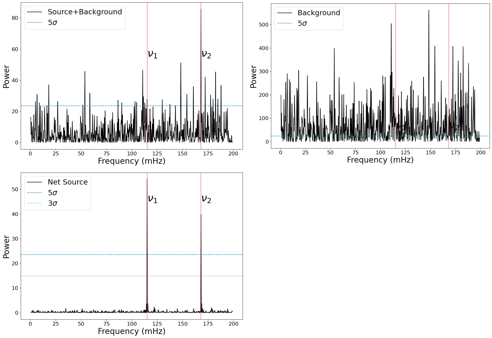<br />
图注：Lomb-Scargle periodograms of the source region without background subtraction (top), mean of the background regions (middle), and source region with background subtracted (bottom). The red solid lines show the magnetar spin peak at $\nu_1\simeq 115$ mHz and the aliased peak $\nu_{2}\simeq 168$ mHz. The blue horizontal dotted and dashed lines in the bottom panel shows the power corresponding to a 3$\sigma$ and 5$\sigma$ trials-corrected significance, respectively. Only the 5$\sigma$ trials-corrected significance is shown in the top and middle panels.<br />
对应解读：建议重点查看的图表第3项；关键图表逐图导读图2；红外时间序列模型拟合与周期搜索段落。<br />
入选理由：这张 Lomb-Scargle 周期图直接展示 115 mHz 自转峰、168 mHz 混叠峰、背景区对照、背景扣除后功率以及 trials-corrected 3σ/5σ 显著性线，是验证红外周期探测是否可信的核心诊断图。它比单纯光变曲线更能检验噪声底、试次数修正和背景系统误差。<br />
来源与置信度：\(arxiv_source\)；high；\(arxiv_source\) / 4U0142_JWST.tex:figure[4]</p>
<p><strong>Fig05</strong><br />
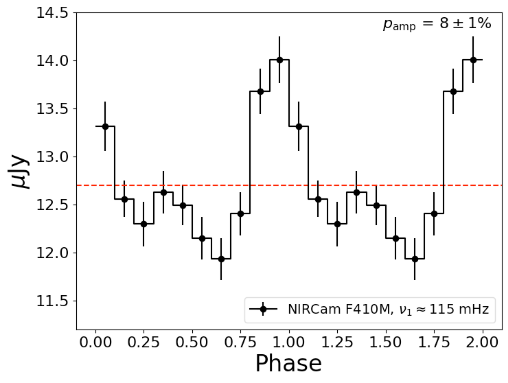<br />
图注：Binned phase-folded NIRCam light curve for $\nu =\nu_1$ (i.e., the spin period of the magnetar). The reference time corresponding to phase 0 is MJD 60540.63881582. The red dashed line shows the time-averaged flux of the source.<br />
对应解读：建议重点查看的图表第4项；关键图表逐图导读图3；红外脉冲分数和轮廓复杂度讨论。<br />
入选理由：这张图给出按磁星自转频率折叠后的 NIRCam F410M 红外脉冲轮廓，并画出平均通量线，直接对应日报中关于单峰结构、误差棒、峰谷差异、2.5 s 采样限制以及约 10% 脉冲分数下限的解读。<br />
来源与置信度：\(arxiv_source\)；high；\(arxiv_source\) / 4U0142_JWST.tex:figure[5]</p>
<p><strong>Fig03</strong><br />
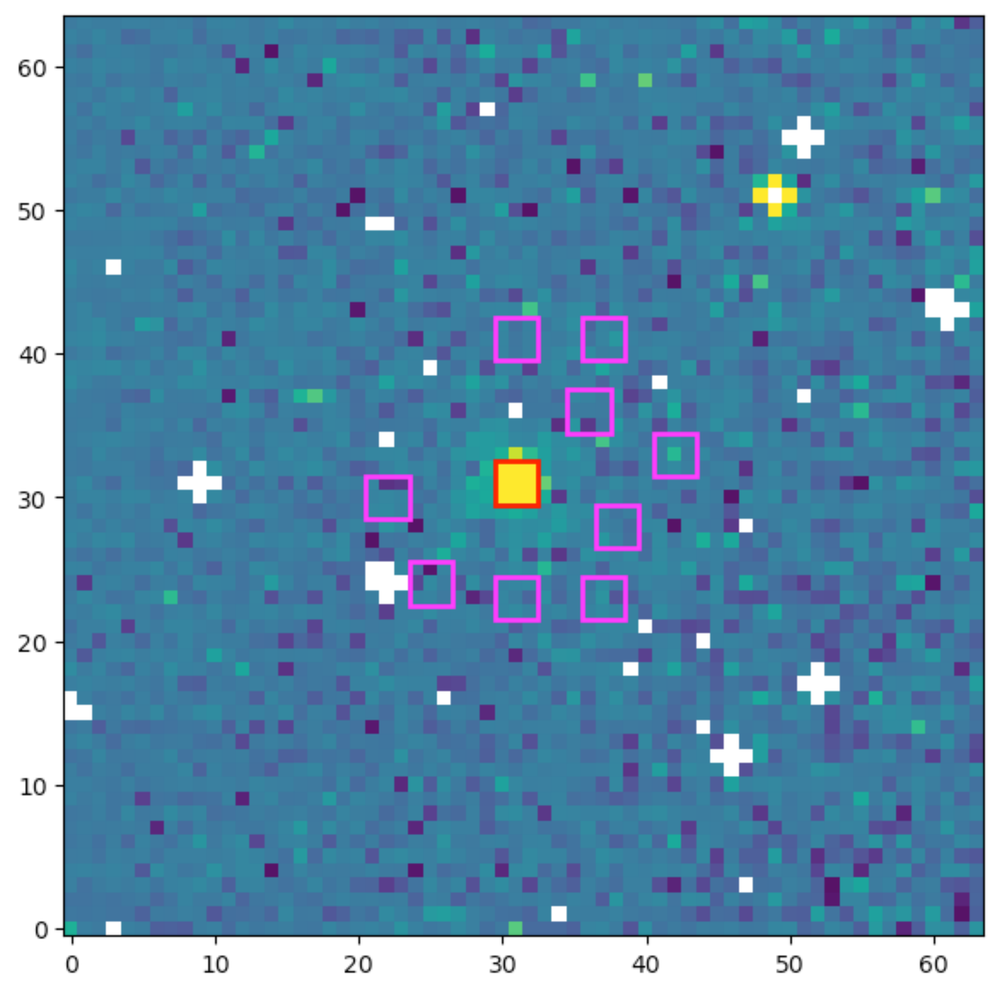<br />
图注：F410M filter image from a single integration ramp of the timing observation of 4U\,0142. The white pixels correspond to known bad pixels which are masked in the calibrated images. Red shows the source region, and magenta shows the nine background regions used for the analysis.<br />
对应解读：建议重点查看的图表第1项和第7项；关键图表逐图导读图1；测光背景与系统误差检查段落。<br />
入选理由：该图明确标出单次 timing integration 中的源区和九个背景区，是判断孔径选择、背景估计、坏像素影响以及邻近区域是否可能污染计时测光的最直接图像证据。相比只看目标总图，它更贴合日报对孔径和背景区选择的关注。<br />
来源与置信度：\(arxiv_source\)；high；\(arxiv_source\) / 4U0142_JWST.tex:figure[3]</p>
<p><strong>Fig02</strong><br />
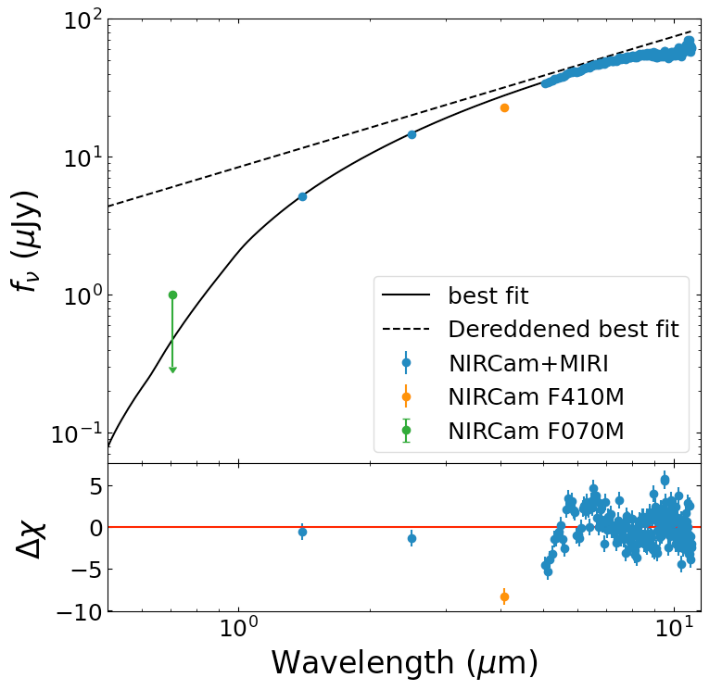<br />
图注：Best-fit absorbed power-law model to the MIRI LRS and NIRCam F140M and F250M photometry and corresponding residuals, $\Delta\chi$= (data $-$ model)/error, obtained with more recent and improved detector calibrations. Note that the F070W and F410M fluxes were not used in this fit as the data were obtained at different epochs. The fit is in good agreement with that from \(\citealt{2024ApJ...972..176H}.\) The dereddened best-fit model is shown by the dashed line. The error bars in the bottom panel correspond to $\pm1\sigma$.<br />
对应解读：建议重点查看的图表第6项；关键图表逐图导读图5；光谱能量分布和历史通量比较讨论。<br />
入选理由：这张图展示 MIRI LRS 与 NIRCam F140M/F250M 光度的吸收幂律拟合及残差，并说明 F410M 因不同历元未参与拟合。它有助于把本次 4.08 μm 测量放入宽带红外谱背景中，同时提醒读者区分非同时数据、总通量与脉冲通量。<br />
来源与置信度：\(arxiv_source\)；high；\(arxiv_source\) / 4U0142_JWST.tex:figure[2]</p>
<p><strong>Fig07</strong><br />
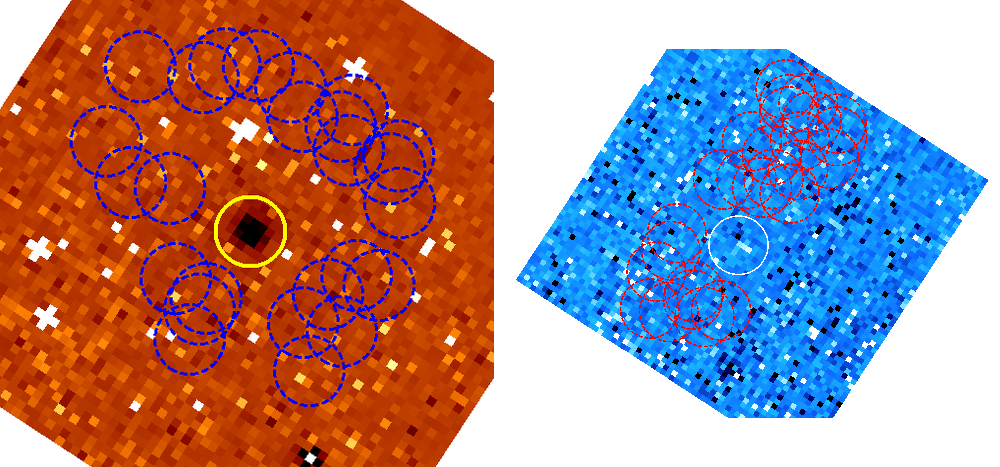<br />
图注：Locations of photometry measurement apertures for F410M (left panel) and F070W (right panel). The shown example (maximum size) apertures have radii of $0\farcs25$ and $0\farcs17$, respectively. North is up, East to the left.<br />
对应解读：建议重点查看的图表第1项和第7项；系统误差或稳健性诊断段落。<br />
入选理由：该图显示 F410M 和 F070W 测光孔径位置及最大孔径半径，可用于检查不同滤光片下测光区域、邻近源环境和孔径相关系统误差。它对理解总通量测量和孔径修正可靠性有价值，补充 Fig03 的 timing 背景区诊断。<br />
来源与置信度：\(arxiv_source\)；high；\(arxiv_source\) / 4U0142_JWST.tex:figure[7]</p>
<h4 id="_67">强相关工作</h4>
<p>同源工作方面，4U 0142+61 有大量历史观测：软 \(X\) 射线长期计时、硬 \(X\) 射线尾探测、光学/红外对应体确认、以及中红外过量与 fallback disk 讨论。检索时可用关键词 “4U 0142+61 infrared counterpart”, “4U 0142+61 fallback disk”, “4U 0142+61 hard X-ray pulse profile”, “magnetar optical infrared pulsations”。这些同源论文是理解本文的必要背景，因为本文的强点不是第一次发现红外源，而是第一次用 JWST 在 \(4\,\mu{\rm m}\) 直接得到与自转相关的脉冲证据。</p>
<p>同类源方面，可以把这篇文章放在磁星光学/红外脉冲探测的脉络中看，例如 4U 0142+61、1E 1048.1-5937、XTE J1810-197、1E 2259+586 等对象的近红外变动和多波段相位关系。理论上，它与磁星扭曲磁层模型、共振回旋散射、外磁层粒子加速以及 fallback disk 模型都有联系。相反观点并不是“红外脉冲不存在”，而是“总红外能谱中仍可能有稳定盘贡献”；未来需要用脉冲通量谱和未脉冲通量谱分解来检验。</p>
<p><strong>同一事件 / 同类源线索</strong>：</p>
<ul>
<li><a href="https://arxiv.org/abs/2606.29653">https://arxiv.org/abs/2606.29653</a></li>
<li><a href="https://arxiv.org/pdf/2606.29653">https://arxiv.org/pdf/2606.29653</a></li>
</ul>
<p><strong>相似工作</strong>：</p>
<ul>
<li><a href="https://arxiv.org/abs/astro-ph/0602065">https://arxiv.org/abs/astro-ph/0602065</a></li>
<li><a href="https://arxiv.org/abs/astro-ph/0608435">https://arxiv.org/abs/astro-ph/0608435</a></li>
</ul>
<p><strong>基础理论 / 方法工作</strong>：</p>
<ul>
<li><a href="https://arxiv.org/abs/0804.0250">https://arxiv.org/abs/0804.0250</a></li>
<li><a href="https://arxiv.org/abs/1703.00068">https://arxiv.org/abs/1703.00068</a></li>
</ul>
<p><strong>相反观点 / 张力线索</strong>：</p>
<ul>
<li><a href="https://arxiv.org/abs/astro-ph/0602065">https://arxiv.org/abs/astro-ph/0602065</a></li>
</ul>
</details>
<h3 id="7-tracing-the-orbital-motion-of-the-accreting-white-dwarf-in-exhydrae-with-xrismresolve">7. Tracing the Orbital Motion of the Accreting White Dwarf in EX~Hydrae with XRISM/Resolve</h3>
<ul>
<li>来源：arXiv / astro-ph.HE</li>
<li>链接：https://arxiv.org/abs/2606.28915v1</li>
<li>作者：Yuken Ohshiro, Yukikatsu Terada, Taichi Ichikawa, Yugo Motogami, Manabu Ishida, Koji Mukai, Masayoshi Nobukawa, Takayuki Hayashi</li>
<li>评分：novelty 8/10，importance 7/10，relevance 8/10，final 8.65/10</li>
<li>推荐理由：XRISM/Resolve首次用单条Fe K壳层X射线谱线探测吸积白矮星轨道调制并测量质量，展示高分辨率X射线谱学的新能力；虽非伽马主题，但对高能仪器与致密天体研究有明确价值。</li>
</ul>
<p><strong>中文题目</strong>：用 XRISM/Resolve 追踪中间偏振星 EX Hydrae 中吸积白矮星的轨道运动</p>
<p><strong>做了什么</strong>：这篇论文用一次约 \(83\,\mathrm{ks}\) 的 XRISM/Resolve 高分辨率 X 射线观测，测量中间偏振星 EX Hydrae 的铁 \(K\) 壳层发射线线心随轨道相位的多普勒移动。作者把 Fe \(\mathrm{XXV}\) 的 \(K\alpha\) 复合线分解到单个成分层面，发现其线心存在相干的轨道调制，得到吸积白矮星的径向速度半振幅 \(K_1=58.1\pm8.5\,\mathrm{km\,s^{-1}}\)。结合文献中的轨道参数，他们推得白矮星质量 \(M_1=0.79\pm0.04\,M_\odot\)。核心意义是：X 射线高分辨率谱第一次在单条 Fe \(K\) 壳层线中直接追踪到吸积白矮星的轨道运动，并且与光学和紫外测得的 \(K_1\) 相互验证。</p>
<p><strong>为什么重要</strong>：吸积白矮星质量是理解激变变星演化、吸积柱结构、边界层温度和 Ia 型超新星潜在前身问题的基础量，但传统光学测量常被吸积盘、热点、次星照射面和非开普勒发射污染。本文证明靠近白矮星、在硬 X 射线热等离子体中形成的 Fe \(K\) 壳层线也能作为动力学示踪物，并且 XRISM/Resolve 的能量分辨率和在轨增益校准已足以测量几十 \(\mathrm{km\,s^{-1}}\) 量级的线心漂移。</p>
<p><strong>理论 / 观测 / 仪器方法价值</strong>：对观测方法而言，这是一种新的白矮星径向速度测量路径：不再只依赖光学发射线或紫外吸收线，而是利用高温后激波区的 X 射线线心。对理论而言，结果把 X 射线发射区的整体速度零点与白矮星轨道运动联系起来，约束了吸积柱内局部流速、几何遮挡和相位依赖线形变化的影响。对仪器而言，论文展示了 Resolve 频繁增益校准在小速度位移测量中的实际价值。</p>
<p><strong>为什么应该关注</strong>：如果你关心紧凑双星质量、磁化吸积、X 射线量热计的科学能力，或者想知道 XRISM 能否做“速度计”而不仅是“温度计”，这篇都值得看。它不是只给 EX Hydrae 一个更精确质量，而是在一个有大量历史光学和紫外约束的基准源上验证了 X 射线动力学测量的可行性，后续可推广到光学动力学很困难、吸收很强或几何复杂的吸积白矮星系统。</p>
<details class="paper-detail">
<summary>展开详细解读：文章讲解、背景、理论、重点章节、图表与相关工作</summary>
<h4 id="_68">文章详细讲解</h4>
<p>科学问题：EX Hydrae 是最经典的中间偏振星之一，白矮星有磁场，吸积流被磁场导向磁极附近，在后激波区产生几千万到上亿开尔文的热等离子体，并发出 Fe \(K\) 壳层谱线。白矮星质量 \(M_1\) 决定激波温度、吸积柱高度和系统演化，但动力学质量往往依赖光学或紫外线的径向速度曲线。问题在于，光学发射线可能来自吸积盘、流冲击区或被照亮的次星面，不一定严格随白矮星质心运动；X 射线 Fe \(K\) 线更接近白矮星引力势阱底部，因此是更物理直接的白矮星示踪物，但过去 CCD 或光栅谱的能量分辨率和增益稳定性很难测出 \(\sim 10\)--\(100\,\mathrm{km\,s^{-1}}\) 的轨道速度。</p>
<p>作者怎么做：论文使用 XRISM/Resolve 对 EX Hydrae 进行约 \(83\,\mathrm{ks}\) 观测。Resolve 是微量热计，Fe \(K\) 能段能量分辨率足以把 He-like Fe \(\mathrm{XXV}\) 的 \(K\alpha\) 复合线结构分开，并且依赖在轨频繁增益校准来控制绝对能标。作者按双星轨道相位划分事件，分别拟合 Fe \(\mathrm{XXV}\) \(K\alpha\) 的若干成分线心，检查线心能量是否按轨道周期作正弦调制。这个策略比只拟合整个 Fe 线包更强，因为单个线成分较少受混合线、卫星线和温度结构变化导致的线心漂移影响。</p>
<p>关键结果：Fe \(\mathrm{XXV}\) \(K\alpha\) 成分显示相干轨道调制，径向速度半振幅为 \(K_1=58.1\pm8.5\,\mathrm{km\,s^{-1}}\)。这个数值与既有光学和紫外对白矮星径向速度的估计相容，说明这些不同波段的示踪物在 EX Hydrae 中大体跟随同一个白矮星质心运动。结合文献中的轨道周期、倾角或质量函数等参数，作者得到白矮星质量 \(M_1=0.79\pm0.04\,M_\odot\)。这一质量处在中等偏高白矮星质量范围，也与中间偏振星的硬 X 射线温度尺度相符。</p>
<p>局限和下一步：这项测量依赖能量增益稳定、相位分箱选择、线模型和 Fe \(\mathrm{XXV}\) 复合线成分识别。后激波区不是刚性标记点，局部下落速度、旋转调制、遮挡、自吸收和等离子体温度变化都可能造成额外线心偏移或线形不对称。本文的重要性在于给出可行性验证；下一步应在更多中间偏振星上重复这种测量，比较 Fe \(\mathrm{XXV}\)、Fe \(\mathrm{XXVI}\) 和荧光 Fe \(K\alpha\) 的速度曲线差异，并把轨道调制与白矮星自转相位、吸积柱三维结构模型联合拟合。</p>
<h4 id="_69">关键结果是怎么做出来的</h4>
<p>本文最重要的证据链从样本选择开始：目标不是一批源，而是单个基准系统 EX Hydrae。选择它的原因是轨道周期、倾角、光学和紫外径向速度已有大量历史约束，X 射线亮度足以在 \(83\,\mathrm{ks}\) 的 XRISM/Resolve 曝光中获得 Fe \(K\) 壳层线的相位分辨谱。这个源的优势是可校验性强：如果 X 射线线心得到的 \(K_1\) 与历史光学和紫外值严重不一致，就说明 Fe \(K\) 线不能简单视为白矮星质心示踪物；如果一致，则方法学可信度大幅提高。</p>
<p>数据处理的关键不是总光谱中是否看到 Fe 线，而是能否在轨道相位上稳定测量单个线成分的线心。作者把事件按轨道相位折叠，并在每个相位 bin 中拟合 Fe \(\mathrm{XXV}\) \(K\alpha\) 相关成分的中心能量。线心偏移再转换为径向速度，检验是否符合以轨道周期为相位的正弦曲线。核心拟合量是速度半振幅 \(K_1\)、系统速度零点 \(\gamma\) 和相位零点或相位偏移；如果相位由精确星历固定，则 \(K_1\) 的约束更直接。</p>
<p>显著性主要来自正弦调制相对于常数线心模型的改善，以及不同 Fe \(\mathrm{XXV}\) 成分之间的一致性。摘要给出的 \(K_1=58.1\pm8.5\,\mathrm{km\,s^{-1}}\) 意味着形式上约 \(6.8\sigma\) 的非零速度半振幅，但实际可信度还要看系统误差：Resolve 绝对能标、相位相关增益漂移、背景处理、线混叠、等离子体结构变化和自转相位混合都可能改变误差预算。因此读者应重点检查论文中常数模型与正弦模型的 \(\chi^2\)、似然差或置信区间，以及作者是否把增益校准不确定度传播进速度误差。</p>
<p>支撑结论的图表应包括：总 Fe \(K\) 能段光谱和线模型、按轨道相位分箱的线心或速度点、最佳正弦速度曲线、与光学和紫外 \(K_1\) 的比较、以及用文献轨道参数推导 \(M_1\) 的误差传播图或表。尤其要看 Fe \(\mathrm{XXV}\) 各成分是否给出相同相位和相近振幅；若只有混合线包显著，而单成分不显著，则结论会弱得多。摘要强调“individual Fe K-shell lines”，说明他们的主张正是单线成分层面的检测。</p>
<p>稳健性方面，最需要关注的是增益校准和线模型。Fe \(K\) 能段中 \(60\,\mathrm{km\,s^{-1}}\) 对应的能量位移只有约 \(1.3\,\mathrm{eV}\)；这已经低于或接近许多仪器绝对能标系统误差的敏感区间。Resolve 的高分辨率本身不自动等于高绝对速度精度，频繁在轨增益校准才是本文成立的技术前提。读者应看作者是否使用校准源或内部增益监测，是否对不同探测器像素、时间段、背景区和能段选择做了交叉检查。</p>
<details class="paper-subdetail">
<summary>展开背景、理论、公式、模型、章节和图表导读</summary>
<h4 id="_70">背景知识</h4>
<p>EX Hydrae 属于中间偏振星，即白矮星磁场足以截断内吸积盘并引导物质沿磁力线落到磁极附近，但又不像同步极那样让白矮星自转完全锁定轨道。系统中通常有白矮星、低质量伴星、吸积盘或吸积流，以及靠近白矮星表面的后激波区。后激波区的温度由白矮星引力势决定，因此 X 射线连续谱和 Fe \(K\) 线长期被用来估计白矮星质量和吸积几何。</p>
<p>历史上，激变变星质量测量主要依赖光学光谱径向速度、食变几何、紫外谱线和吸积盘发射线建模。EX Hydrae 是少数有较好历史数据的系统，但即使在这样的基准源中，究竟哪条线真正代表白矮星质心运动仍然不是显然的。光学 Balmer 或 He 线可能由盘、热点、流、被照亮的伴星半球共同贡献；紫外线更接近内盘或白矮星附近，但仍可能受风和吸收影响。X 射线 Fe \(K\) 线的优势是形成区域更靠近高温吸积柱，理论上更贴近白矮星。</p>
<p>过去这个想法受仪器限制。Fe \(K\) 能段的多普勒速度 \(v\) 与能量位移 \(\Delta E\) 的关系约为 \(v/c\simeq \Delta E/E\)。在 \(E\simeq6.7\,\mathrm{keV}\) 处，\(60\,\mathrm{km\,s^{-1}}\) 只对应 \(\Delta E\simeq1.3\,\mathrm{eV}\)。这要求高能量分辨率、高计数统计和极稳的能量增益。XRISM/Resolve 的微量热计能力使这种测量从“原则上可行”变成“可以在单个明亮系统中尝试”。</p>
<p>现在值得重新看这个问题，是因为 X 射线天文学正进入高分辨率谱时代。与用宽带连续谱拟合白矮星质量不同，线心轨道调制是一种动力学测量，系统误差类型不同。若它能在 EX Hydrae 这样的基准源上通过交叉验证，就可用于更难的系统，例如光学被遮挡、盘发射复杂、伴星信号弱、或传统质量函数不可靠的磁白矮星。</p>
<p>该领域一个常见误区是把“线来自白矮星附近”直接等同于“线心就是白矮星质心速度”。实际上，后激波区有下落速度梯度、温度分层和几何遮挡，线心可能包含局部流速、重力红移、湍动、旋转和自转相位变化。另一个误区是只看仪器能量分辨率，而忽略绝对能标与时间依赖增益；对几十 \(\mathrm{km\,s^{-1}}\) 的速度测量，后者往往同样关键。</p>
<h4 id="_71">基础理论 / 方法脉络</h4>
<p>基本物理图像是二体轨道加上吸积柱辐射。白矮星和伴星围绕共同质心运动，白矮星的视向速度随轨道相位近似正弦变化。若某条发射线的发射区整体随白矮星质心运动，线心能量就会发生周期性多普勒移动。测到这个移动的半振幅 \(K_1\)，再结合轨道周期 \(P_{\rm orb}\)、倾角 \(i\) 和质量比或伴星速度，就能约束白矮星质量 \(M_1\)。</p>
<p>在中间偏振星中，Fe \(K\) 壳层谱线来自高温、光学薄的碰撞电离等离子体。Fe \(\mathrm{XXV}\) \(K\alpha\) 是 He-like 铁的复合线，附近还有 H-like Fe \(\mathrm{XXVI}\)、中性或低电离 Fe 荧光 \(K\alpha\) 线以及卫星线。若能量分辨率不够，多个成分混在一起，温度或电离平衡变化会让“表观线心”移动；Resolve 的价值在于减少这种混叠，使单个成分的速度测量更可靠。</p>
<p>本文的关键观测量是每个轨道相位 bin 中的线心能量 \(E_{\rm obs}(\phi)\)，以及由它换算的径向速度 \(v_r(\phi)\)。模型上通常写成 \(v_r(\phi)=\gamma+K_1\sin[2\pi(\phi-\phi_0)]\)，其中 \(\gamma\) 是系统速度和任何固定能标偏移的合并项，\(\phi_0\) 与星历和速度过零相位有关。若 \(\phi_0\) 与独立星历一致，说明 X 射线发射区确实随白矮星轨道运动。</p>
<p>主要退化关系包括：\(K_1\) 与增益漂移的退化、\(\gamma\) 与实验室线能或重力红移的退化、单线线心与未建模卫星线强度的退化、以及轨道调制与白矮星自转调制混合的退化。对 EX Hydrae 这类系统，白矮星自转和轨道周期都可在 X 射线光变中出现，因此相位选择和折叠方式必须谨慎。</p>
<p>从仪器和统计角度看，Resolve 测量的不是连续的真实光子能量，而是经响应矩阵卷积后的计数谱。线心精度不仅取决于分辨率，也取决于该线的光子数、背景、谱线宽度、响应函数尾部和增益校准。一个窄强线的统计线心误差可小于仪器分辨率，但只有在系统能标足够稳定时才有物理意义。</p>
<h4 id="_72">公式与推导</h4>
<p>第一步是二体轨道。设白矮星质量为 \(M_1\)，伴星质量为 \(M_2\)，轨道半长轴为 \(a=a_1+a_2\)，轨道周期为 \(P_{\rm orb}\)。开普勒第三定律给出</p>
<div class="math-display">\[\frac{4\pi^2 a^3}{G(M_1+M_2)}=P_{\rm orb}^2 .\]</div>
<p>这里 \(G\) 是引力常数；该式把几何尺度、总质量和周期联系起来，是由速度半振幅反推质量的基础。</p>
<p>白矮星绕质心的轨道半径为 \(a_1=aM_2/(M_1+M_2)\)。若轨道近圆，视向速度半振幅为</p>
<div class="math-display">\[K_1=\frac{2\pi a_1\sin i}{P_{\rm orb}}=\frac{2\pi a}{P_{\rm orb}}\frac{M_2}{M_1+M_2}\sin i .\]</div>
<p>其中 \(i\) 是轨道倾角。本文直接从 X 射线线心调制测量 \(K_1\)，再与文献轨道参数结合求 \(M_1\)。</p>
<p>观测到的线心能量与径向速度的非相对论关系为</p>
<div class="math-display">\[\frac{\Delta E(\phi)}{E_0}\simeq -\frac{v_r(\phi)}{c},\qquad \Delta E(\phi)=E_{\rm obs}(\phi)-E_0 .\]</div>
<p>这里 \(E_0\) 是实验室静止能量，\(c\) 是光速。负号取决于速度正方向约定；物理含义是 \(6.7\,\mathrm{keV}\) 处 \(60\,\mathrm{km\,s^{-1}}\) 只对应约 \(1\)--\(2\,\mathrm{eV}\) 的线心漂移。</p>
<p>轨道速度曲线可写为</p>
<div class="math-display">\[v_r(\phi)=\gamma+K_1\sin\left[2\pi(\phi-\phi_0)\right],\]</div>
<p>其中 \(\gamma\) 吸收系统速度、固定能标偏移和可能的平均重力红移，\(\phi\) 是轨道相位，\(\phi_0\) 是速度曲线相位零点。若星历准确，\(\phi_0\) 可与白矮星合相相位比较。</p>
<p>质量函数由上面的轨道关系推出：</p>
<div class="math-display">\[f(M)=\frac{P_{\rm orb}K_1^3}{2\pi G}=\frac{M_2^3\sin^3 i}{(M_1+M_2)^2} .\]</div>
<p>若同时知道质量比 \(q=M_2/M_1\)，则有</p>
<div class="math-display">\[M_1=\frac{P_{\rm orb}K_1^3}{2\pi G}\frac{(1+q)^2}{q^3\sin^3 i} .\]</div>
<p>这说明 \(M_1\) 对 \(K_1\)、\(q\) 和 \(i\) 都敏感；本文的 \(M_1=0.79\pm0.04\,M_\odot\) 依赖 X 射线 \(K_1\) 与文献轨道参数的组合。</p>
<p>谱线拟合实际处理的是计数谱。对第 \(j\) 个能道，模型计数可写为</p>
<div class="math-display">\[\mu_j(\boldsymbol{\theta})=t_{\rm exp}\int R_j(E)\left[C(E;\boldsymbol{\eta})+\sum_k A_k\,G(E;E_k,\sigma_k)\right]dE+B_j .\]</div>
<p>这里 \(t_{\rm exp}\) 是曝光时间，\(R_j(E)\) 是响应，\(C(E;\boldsymbol{\eta})\) 是连续谱，\(A_k\)、\(E_k\)、\(\sigma_k\) 是第 \(k\) 条线的强度、线心和宽度，\(B_j\) 是背景。本文的核心参数是随相位变化的 \(E_k\) 或对应的 \(v_r\)。</p>
<p>在计数服从泊松统计时，常用 Cash 统计量为</p>
<div class="math-display">\[C=2\sum_j\left[\mu_j-n_j+n_j\ln\left(\frac{n_j}{\mu_j}\right)\right],\]</div>
<p>其中 \(n_j\) 是观测计数，\(\mu_j\) 是模型计数。比较常数速度模型和正弦速度模型时，可用 \(\Delta C\) 或 \(\Delta\chi^2\) 衡量加入 \(K_1\) 后的改进。</p>
<p>线心统计精度的尺度可由近似式理解：</p>
<div class="math-display">\[\sigma_E\approx \frac{{\rm FWHM}}{2.35\sqrt{N_{\rm line}}}\oplus \sigma_{\rm gain},\]</div>
<p>其中 \(N_{\rm line}\) 是线光子数，\({\rm FWHM}\) 是仪器和物理线宽合成后的半高全宽，\(\sigma_{\rm gain}\) 是增益系统误差。对应速度误差为</p>
<div class="math-display">\[\sigma_v\simeq c\frac{\sigma_E}{E_0} .\]</div>
<p>这两式解释了为什么本文同时需要强 Fe 线、高分辨率和频繁增益校准。</p>
<h4 id="_73">模型拟合 / 应用方法</h4>
<p>本文的拟合可以分成两层。第一层是相位分辨 X 射线谱拟合：在每个轨道相位 bin 内，用连续谱加 Fe \(K\) 线成分模型描述 Resolve 计数谱，得到 Fe \(\mathrm{XXV}\) \(K\alpha\) 各成分的线心能量和误差。连续谱参数、线宽、线强和背景处理会影响线心，因此需要检查线心结果是否对这些建模选择稳定。</p>
<p>第二层是速度曲线拟合：把每个相位 bin 的线心能量转化为速度点，拟合常数模型与正弦模型。参数通常包括 \(K_1\)、\(\gamma\) 和 \(\phi_0\)，也可能固定 \(P_{\rm orb}\) 和星历相位。若正弦模型显著改善拟合且相位与白矮星轨道预期一致，才可解释为白矮星轨道运动，而不是随机线心波动或仪器漂移。</p>
<p>参数退化值得特别注意。\(\gamma\) 与绝对线能、系统速度、重力红移和固定增益偏差混在一起，通常不应过度解释。\(K_1\) 与任何轨道相位相关的增益漂移或源谱形变化退化。Fe \(\mathrm{XXV}\) 复合线中未建模卫星线强度若随温度变化，也可能产生假线心移动。若自转相位分布在不同轨道相位 bin 中不均匀，吸积柱可见性变化也可能混入轨道速度。</p>
<p>质量估计是第三层推断。作者把 X 射线测得的 \(K_1\) 与文献中的 \(P_{\rm orb}\)、\(i\)、质量比或伴星速度等轨道参数结合，传播不确定度得到 \(M_1=0.79\pm0.04\,M_\odot\)。读者应区分两类误差：X 射线 \(K_1\) 的测量误差，以及文献轨道参数的外部系统误差。若倾角或质量比的系统误差被低估，最终 \(M_1\) 的误差也会偏乐观。</p>
<p>残差诊断非常关键。一个可信的线心调制结果应在谱残差中没有相位相关的系统偏差；在速度曲线残差中不应出现与白矮星自转周期或仪器轨道周期相关的结构；不同线成分、不同时间段、不同能段拟合应给出相容的 \(K_1\)。若只在某一条弱线或某一种背景处理下出现信号，结论就应谨慎。</p>
<p>实际应用上，这套方法可推广到其他磁白矮星和明亮激变变星，但条件较苛刻：源必须有足够强的 Fe \(K\) 线，轨道周期和星历要可靠，观测时长要覆盖足够多轨道相位，仪器增益要稳定。对于更暗或线更宽的系统，可能需要合并多次观测，或采用层级贝叶斯模型同时拟合所有相位和线成分。</p>
<h4 id="_74">重点章节 / 结果段落怎么读</h4>
<p>数据与观测部分应先读。重点确认 XRISM/Resolve 的曝光时间、有效好时段、源和背景抽取、能量增益校准流程，以及观测覆盖了多少个 EX Hydrae 轨道周期。因为本文测的是 \(\sim\mathrm{eV}\) 级线心漂移，任何时间依赖能标处理都不是技术细节，而是主结果的前提。</p>
<p>总光谱建模部分应关注 Fe \(K\) 能段。读者要看作者如何处理 Fe \(\mathrm{XXV}\) \(K\alpha\) 复合线、Fe \(\mathrm{XXVI}\) 线和中性 Fe 荧光线，是否固定实验室线能，是否允许线宽变化，连续谱采用什么经验或物理模型。总谱模型越能分清各线成分，相位分辨线心测量越可信。</p>
<p>轨道相位分辨分析是论文核心。应检查相位 bin 数、每个 bin 的计数统计、线心误差估计和正弦速度曲线拟合。关键问题是：Fe \(\mathrm{XXV}\) 单个成分是否都支持同一 \(K_1\) 和相位？加入正弦项相对于常数线心模型的统计改善是否足够强？相位零点是否与光学或紫外轨道解一致？</p>
<p>质量推断部分要把 X 射线结果与文献轨道参数分开读。作者的 \(M_1=0.79\pm0.04\,M_\odot\) 并非只由 Resolve 谱线单独决定，而是把 \(K_1\) 放入双星质量函数并采用外部 \(i\)、\(q\) 或相关参数得到。读者应查看误差传播是否包含文献参数的不确定度，以及是否讨论了不同文献轨道解对 \(M_1\) 的影响。</p>
<p>讨论和稳健性检验部分应重点看系统误差。包括在轨增益校准精度、不同线成分结果、不同相位划分、可能的重力红移、吸积柱局部流速、自转调制、吸收变化和背景选择。本文最有推广价值的不是单个质量数值，而是这些检验是否足以说服读者：Fe \(K\) 线线心可作为白矮星动力学示踪物。</p>
<h4 id="_75">建议重点查看的图表</h4>
<ol>
<li>
<p>XRISM/Resolve 的全能段或 Fe \(K\) 能段总光谱：看 Fe \(\mathrm{XXV}\)、Fe \(\mathrm{XXVI}\) 和中性 Fe \(K\alpha\) 是否清楚分离，模型残差是否在 Fe \(K\) 区域有系统结构。</p>
</li>
<li>
<p>Fe \(\mathrm{XXV}\) \(K\alpha\) 复合线的局部放大图：重点看单个成分的分解是否依赖过强先验，卫星线或线宽是否可能拖动线心。</p>
</li>
<li>
<p>轨道相位分箱后的线心能量或径向速度曲线：检查数据点是否按预期正弦变化，误差条是否均匀，是否有单个相位点主导 \(K_1\)。</p>
</li>
<li>
<p>常数模型与正弦模型比较图或表：看 \(\Delta\chi^2\)、\(\Delta C\)、自由度变化和置信区间，判断非零 \(K_1\) 的统计稳健性。</p>
</li>
<li>
<p>不同 Fe \(K\) 线成分的 \(K_1\) 比较表：看 Fe \(\mathrm{XXV}\) 各成分、Fe \(\mathrm{XXVI}\) 或荧光线是否给出一致或有物理差异的速度半振幅。</p>
</li>
<li>
<p>质量推断图或参数误差传播表：看 \(M_1\) 对 \(K_1\)、\(i\) 和 \(q\) 的敏感性，确认 \(0.04\,M_\odot\) 的误差是否主要由 X 射线还是外部轨道参数控制。</p>
</li>
<li>
<p>增益校准或系统误差诊断图：看校准残差的时间变化是否小于目标信号，尤其是 Fe \(K\) 能段的绝对能标稳定性。</p>
</li>
</ol>
<h4 id="_76">关键图表逐图导读</h4>
<p>图 1：通常应是 XRISM/Resolve 总光谱或 Fe \(K\) 能段光谱。横轴应为能量，纵轴为计数率或展开后的通量，模型线包含连续谱和若干高斯线。读者要看 \(6.4\,\mathrm{keV}\)、\(6.7\,\mathrm{keV}\) 和 \(6.97\,\mathrm{keV}\) 附近的线是否被清楚分离。读图陷阱是把漂亮的总谱线误认为已经证明速度调制；总谱只能说明线存在，不能说明线心随轨道运动。</p>
<p>图 2：应关注 Fe \(\mathrm{XXV}\) \(K\alpha\) 局部线形分解。横轴为 \(6.6\)--\(6.8\,\mathrm{keV}\) 附近能量，纵轴为计数或残差，模型线可能分为多个成分。关键是看残差是否在各成分之间系统偏正或偏负；若复合线分解不稳，后续单线线心速度会受影响。读图陷阱是忽略卫星线和温度结构造成的表观线心偏移。</p>
<p>图 3：核心图应是径向速度随轨道相位的曲线。横轴为轨道相位 \(\phi\)，纵轴为 \(v_r\) 或等效线心偏移，数据点带误差条，模型线为正弦曲线。主要结论是 Fe \(\mathrm{XXV}\) 线心按轨道周期相干变化，给出 \(K_1=58.1\pm8.5\,\mathrm{km\,s^{-1}}\)。读图时要看是否所有相位点共同支撑正弦，而不是两个极端点决定振幅。</p>
<p>图 4：可能是不同线成分或不同模型设置得到的 \(K_1\) 汇总。横轴可为谱线成分或测试方案，纵轴为速度半振幅，带置信区间。若 Fe \(\mathrm{XXV}\) 各成分一致，而其他线因形成区域不同显示差异，这反而提供物理信息。陷阱是把所有线强行平均；不同电离态和荧光线不一定来自同一高度或同一运动场。</p>
<p>图 5：若有质量推断图，横轴可能为质量比 \(q\)、倾角 \(i\) 或 \(K_1\)，纵轴为 \(M_1\)，并叠加文献约束带。读者应看 \(M_1=0.79\pm0.04\,M_\odot\) 的误差带来自哪些输入。陷阱是只引用最终质量而忽略外部轨道参数的先验依赖。</p>
<p>图 6：系统误差或增益校准诊断图很重要。横轴可能为时间、探测器像素或校准观测序列，纵轴为能量残差或速度等效残差。读者要确认增益漂移没有与 EX Hydrae 轨道相位同周期混叠。若校准残差接近 \(1\,\mathrm{eV}\)，就必须看作者如何把它计入 \(K_1\) 误差。</p>
</details>
<h4 id="_77">论文原图 / 可嵌入图片</h4>
<p><strong>Fig04</strong><br />
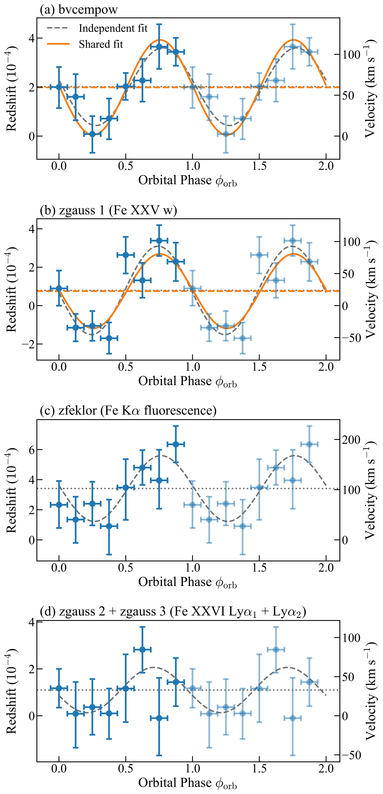<br />
图注：Orbital modulation of the four spectral components used in the velocity-modulation fit, shown over two cycles by repeating the phase-binned velocities. Gray dashed curves and dotted horizontal lines show independent sinusoidal fits and their fitted mean velocities for each component. Orange solid curves and dashed horizontal lines are shown only for the two Fe~{\(\sc\) xxv} tracers, \(\texttt{bvcempow}\) and \(\texttt{zgauss 1},\) and represent the adopted simultaneous fit with shared $K_1$ and $\phi_0$. The fit parameters are listed in Table~\(\ref{tab:orbital_modulation_bestfit}.\)<br />
对应解读：对应“建议重点查看的图表”第3、4、5项，以及“关键图表逐图导读”的图3/图4和速度曲线拟合段落。<br />
入选理由：这是支撑论文核心结论的最关键图：直接展示四个谱线成分的轨道相位径向速度曲线、独立正弦拟合，以及Fe XXV两个示踪线共享K1和相位的联合拟合。它最能检验K1=58.1±8.5 km/s是否由所有相位点共同支持，以及不同Fe K成分是否一致。<br />
来源与置信度：\(arxiv_source\)；high；\(arxiv_source\) / manuscript.tex:figure[4]</p>
<p><strong>Fig03</strong><br />
<br />
图注：Phase-resolved spectra in the Fe K band (6.2--7.2~keV) with the best-fit models. Residuals are shown as ($\texttt{data}-\texttt{model})/\texttt{error}$. The vertical gray lines indicate the rest-frame energies of the labeled transitions \(\citep\)[][]{holzer1997,yerokhin2015,yerokhin2019}.<br />
对应解读：对应“建议重点查看的图表”第1、2项，以及“关键图表逐图导读”的图1/图2和相位分辨谱拟合、残差诊断段落。<br />
入选理由：该图给出6.2--7.2 keV Fe K能段的相位分辨谱、最佳拟合模型和(data-model)/error残差，是判断Fe XXV、Fe XXVI和荧光Fe Kα线是否被可靠分解、局部残差是否存在系统结构的主要证据。<br />
来源与置信度：\(arxiv_source\)；high；\(arxiv_source\) / manuscript.tex:figure[3]</p>
<p><strong>Fig02</strong><br />
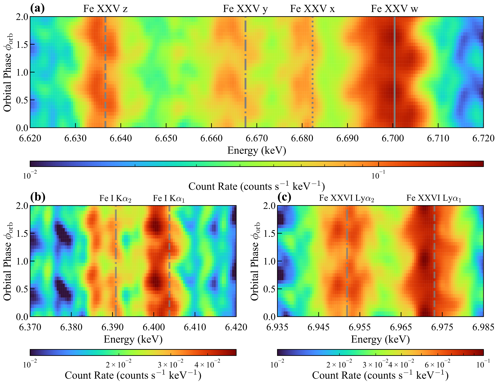<br />
图注：Count-rate maps in the Fe K band as a function of energy and orbital phase. The maps are constructed with an energy bin size of 0.5~eV and an orbital-phase bin size of 0.0625 (16 bins per cycle), and are displayed after Gaussian smoothing for visual clarity, with $\sigma = 2$ bins in both directions, corresponding to 1.0~eV in energy and 0.125 in orbital phase. The orbital phase is shown over two cycles on the vertical axis, and the color scale represents the count rate in $\mathrm{counts\ s^{-1}\ keV^{-1}}$. Panel (a) shows the Fe~{\(\sc\) xxv} w, x, y, and z lines, panel (b) shows the Fe K$\alpha$ fluorescence complex, and panel (c) shows the Fe~{\(\sc\) xxvi} Ly$\alpha_1$ and Ly$\alpha_2$ lines. The vertical gray lines indicate the rest-frame energies of the labeled transitions \(\citep\)[][]{holzer1997,yerokhin2015,yerokhin2019}.<br />
对应解读：对应“建议重点查看的图表”第1、2、3、5项，以及关于Fe K线随轨道相位变化的逐图导读。<br />
入选理由：该图以能量--轨道相位计数率图展示Fe XXV w/x/y/z、荧光Fe Kα和Fe XXVI Lyα线在两个轨道周期中的分布，并标出静止系能量，有助于直观看到不同线成分是否清晰分离及是否存在相位相关的线心漂移。<br />
来源与置信度：\(arxiv_source\)；high；\(arxiv_source\) / manuscript.tex:figure[2]</p>
<p><strong>Fig05</strong><br />
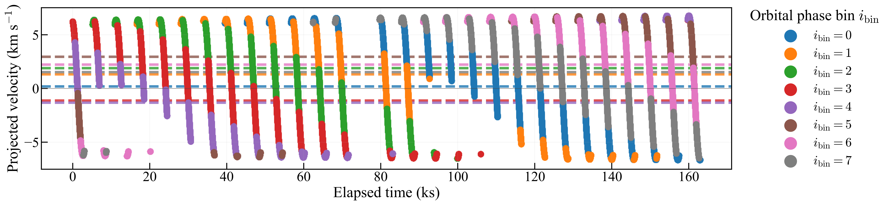<br />
图注：Line-of-sight component of the XRISM spacecraft velocity toward EX~Hya evaluated for screened events. Positive values correspond to spacecraft motion toward EX~Hya. Points are colored by the orbital phase bins used for the phase-resolved spectroscopy, and horizontal dashed lines show the phase-bin averages.<br />
对应解读：对应“建议重点查看的图表”第7项，以及模型拟合中关于仪器/观测运动系统误差和相位相关漂移的讨论。<br />
入选理由：该图展示XRISM航天器沿EX Hya视线方向的速度及其在各轨道相位bin中的平均值，可用于判断观测平台运动是否可能与目标轨道相位混叠并影响几十km/s量级的速度调制测量。<br />
来源与置信度：\(arxiv_source\)；high；\(arxiv_source\) / manuscript.tex:figure[5]</p>
<p><strong>Fig06</strong><br />
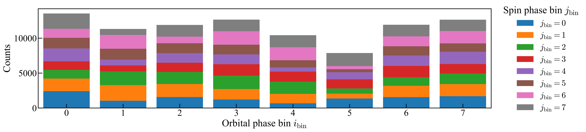<br />
图注：Spin-phase sampling within the orbital phase bins for the 1.7--10~keV screened events. The bar height gives the event counts in each orbital phase bin $i_{\mathrm{bin}}$, and the stacked colored segments show the contributions from the WD spin-phase bins $j_{\mathrm{bin}}$. Both sets of bins use the centered-bin definition adopted for the phase-resolved spectroscopy. The orbital phase is calculated with the eclipse ephemeris of \(\citet{echevarria2016},\) and the WD spin phase with the quadratic spin-pulse ephemeris of \(\citet{beuermann2024a}.\)<br />
对应解读：对应模型拟合段落中关于白矮星自转相位采样不均、吸积柱可见性变化可能混入轨道速度的系统误差诊断。<br />
入选理由：该图显示每个轨道相位bin中的白矮星自转相位采样和事件数构成，能检验轨道速度曲线是否可能被自转调制或吸积柱几何变化偏置，是解释K1稳健性的重要辅助系统误差图。<br />
来源与置信度：\(arxiv_source\)；high；\(arxiv_source\) / manuscript.tex:figure[6]</p>
<h4 id="_78">强相关工作</h4>
<p>这篇工作应放在三条文献线索中读。第一条是 EX Hydrae 的历史动力学研究，包括光学发射线、紫外线以及食变或轨道几何约束；这些是本文用来交叉验证 X 射线 \(K_1\) 和推导 \(M_1\) 的外部基础。检索关键词可用“EX Hydrae white dwarf mass radial velocity optical ultraviolet”、“EX Hya intermediate polar mass function”和“EX Hya orbital parameters”。</p>
<p>第二条是磁激变变星的 X 射线谱和白矮星质量测量。传统方法常用后激波区连续谱温度、冷却流模型或反射成分估计 \(M_1\)，与本文的线心动力学方法互补。检索关键词可用“intermediate polars Fe K line white dwarf mass”、“post-shock region X-ray spectrum magnetic cataclysmic variables”和“accreting white dwarf shock temperature mass”。</p>
<p>第三条是高分辨率 X 射线量热计的速度测量能力。Hitomi 在星系团中展示了微量热计测量湍动速度的威力，XRISM/Resolve 则把这类能力扩展到更广泛的天体物理场景。本文的特色是把 \(\mathrm{eV}\) 级能标稳定性用于紧凑双星轨道动力学，而不是热等离子体湍动或星系团气体运动。检索关键词可用“XRISM Resolve gain calibration velocity measurement”、“X-ray microcalorimeter Doppler shift Fe K”和“Resolve high resolution spectroscopy compact binaries”。</p>
<p><strong>同一事件 / 同类源线索</strong>：</p>
<ul>
<li><a href="https://arxiv.org/abs/2606.28915">https://arxiv.org/abs/2606.28915</a></li>
<li><a href="https://simbad.u-strasbg.fr/simbad/sim-id?Ident=EX%20Hya">https://simbad.u-strasbg.fr/simbad/sim-id?Ident=EX%20Hya</a></li>
</ul>
<p><strong>相似工作</strong>：</p>
<p>（未提供）</p>
<p><strong>基础理论 / 方法工作</strong>：</p>
<p>（未提供）</p>
<p><strong>相反观点 / 张力线索</strong>：</p>
<p>（未提供）</p>
</details>
<h3 id="8-jwst-observations-of-sn-2024abup-first-detection-of-co-in-a-broad-lined-type-ic-supernova-and-constraints-on-r-process-nucleosynthesis">8. JWST observations of SN 2024abup: First Detection of CO in a broad-lined Type Ic Supernova and Constraints on r-process Nucleosynthesis</h3>
<ul>
<li>来源：arXiv / astro-ph.HE</li>
<li>链接：https://arxiv.org/abs/2606.28561v1</li>
<li>作者：Manisha Shrestha, Lindsey A. Kwok, David J. Sand, Stan Bartmentloo, Collin Christy, Anders Jerkstrand, K. Azalee Bostroem, Jennifer E. Andrews</li>
<li>评分：novelty 8/10，importance 8/10，relevance 7/10，final 8.65/10</li>
<li>推荐理由：JWST近中红外观测SN Ic-bl 2024abup，首次在宽线Ic超新星中探测CO并约束r-process特征，观测新颖且对核心坍缩爆炸、尘埃和核合成有较高价值；虽非伽马主题但属重要HE超新星结果。</li>
</ul>
<p><strong>中文题目</strong>：JWST 观测 SN 2024abup：首次在宽线 Ic 型超新星中探测到 CO，并约束 \(r\) 过程核合成</p>
<p><strong>做了什么</strong>：这篇论文报道了近邻宽线 Ic 型超新星 SN 2024abup 的 JWST 近红外到中红外光谱观测，覆盖约 \(1\text{--}14\,\mu\mathrm{m}\)，观测时相为 \(V\) 波段极大后约 \(+41\) 天、爆炸后约 \(+54\) 天。作者用光谱合成代码 SUMO 解释宽而混合的红外谱线，识别出 C、O、Mg 和 CO 的显著贡献；这是首次在宽线 Ic 型超新星中探测到 CO，也是迄今核心坍缩超新星中非常早期的分子探测之一。论文还讨论了 \(>1.5\,\mu\mathrm{m}\) 的连续谱是否来自被超新星加热的尘埃，但没有找到令人信服的 \(r\) 过程元素红外谱线证据。核心结论是：SN Ic-bl 可能较早形成分子和尘埃，因而可能参与早期宇宙尘埃生产；但若它们真的产生 \(r\) 过程元素，仅靠当前质量的宽线红外谱很难从严重混合的谱线中分离出来。</p>
<p><strong>为什么重要</strong>：宽线 Ic 型超新星被认为来自失去 H/He 包层的大质量恒星高速爆炸，并与长伽马暴、喷流、非球对称爆炸和高能核合成有联系。它们是否能产生 \(r\) 过程元素、是否能快速形成分子和尘埃，直接关系到重元素起源和早期宇宙尘埃来源两个大问题。JWST 第一次把 SN Ic-bl 的中红外窗口打开，使 CO、尘埃连续谱和潜在重元素线成为可检验对象，而不是只能从光学谱间接推断。</p>
<p><strong>理论 / 观测 / 仪器方法价值</strong>：本文的价值主要在观测和方法两方面：观测上，它给出了一例近邻 SN Ic-bl 在爆炸后约两个月的 \(1\text{--}14\,\mu\mathrm{m}\) 光谱基准；方法上，它展示了如何把 JWST 红外谱与 SUMO 非局域热平衡光谱合成结合，用来识别宽线、分子带和连续谱成分。对理论模型而言，CO 的早期出现约束了 C/O 层的温度、密度、混合和冷却历史；对仪器和观测规划而言，它说明中红外对分子和尘埃很敏感，但对 \(r\) 过程元素的诊断会受到宽线混合和原子数据不完备的严重限制。</p>
<p><strong>为什么应该关注</strong>：如果你关心大质量恒星爆炸、长伽马暴前身星、早期宇宙尘埃或 \(r\) 过程起源，这篇文章值得看，因为它把 SN Ic-bl 从传统光学分类推进到了 JWST 红外化学诊断阶段。它没有宣称发现 \(r\) 过程元素，反而给出了一个重要的负结果：在真实宽线谱中，非 \(r\) 过程元素和分子已经足以制造很多宽而混合的红外结构。这对未来用 JWST 寻找超新星重元素核合成信号非常实际，也提醒我们不要把红外宽峰过早解释为镧系或锕系元素。</p>
<details class="paper-detail">
<summary>展开详细解读：文章讲解、背景、理论、重点章节、图表与相关工作</summary>
<h4 id="_79">文章详细讲解</h4>
<p>科学问题：SN 2024abup 是一颗位于 NGC 0681 的近邻宽线 Ic 型超新星，距离约 \(23.3\pm1.6\,\mathrm{Mpc}\)。宽线 Ic 型超新星的外层 H/He 已被剥离，喷出物速度高、动能大，部分事件与长伽马暴有关。因此这类爆炸常被拿来讨论三个问题：它们是否能在短寿命大质量恒星通道中产生 \(r\) 过程元素；它们是否能早期形成 CO 等分子；它们是否能为早期宇宙提供尘埃。过去这三个问题主要依赖光学谱和少量近红外资料，真正覆盖中红外分子带、尘埃连续谱和潜在重元素线的观测极少。</p>
<p>作者怎么做：论文使用 JWST 获得 SN 2024abup 在 \(1\text{--}14\,\mu\mathrm{m}\) 的近红外加中红外光谱，时相为 \(V\) 波段极大后约 \(+41\) 天，约等于爆炸后 \(+54\) 天。这是 SN Ic-bl 的首次 JWST 加中红外光谱观测。作者还结合了光学和射电数据来建立事件背景，并用谱合成代码 SUMO 计算非 \(r\) 过程元素、分子和候选 \(r\) 过程元素在该时相可能产生的谱线贡献。这里的难点不是找一条孤立窄线，而是在速度很高的喷出物中解释宽、混合、相互重叠的红外结构。</p>
<p>关键结果：最明确的结果是 C、O、Mg 以及 CO 对红外谱有显著贡献。CO 的识别尤其重要，因为它是首次在 SN Ic-bl 中探测到 CO，并且是核心坍缩超新星中非常早期的分子探测案例。光谱在 \(>1.5\,\mu\mathrm{m}\) 处还出现连续谱成分，作者认为可以由尘埃解释：尘埃可能是爆炸前环境中的预存尘埃，也可能是新形成尘埃，或者两者混合，并被超新星辐射加热。相反，论文没有找到令人信服的 \(r\) 过程元素红外特征；许多潜在诊断区都被 C、O、Mg、CO 等非 \(r\) 过程成分造成的宽混合结构污染。</p>
<p>局限和下一步：这篇文章的重要性部分来自它的谨慎。SN Ic-bl 的速度宽化会把许多线压成大尺度谱形，原子数据、分子数据、温度结构、混合方式和尘埃几何都会影响解释，因此一个看似多余的红外峰不一定能直接归因于 \(r\) 过程元素。未来需要更高信噪比、更密集时序的 JWST 光谱，尤其是从早期到星云期追踪 CO、尘埃连续谱和重元素候选线的演化；同时也需要更完整的重元素原子数据和非球对称辐射转移模型。本文给出的不是最终答案，而是一个现实标尺：在 SN Ic-bl 中寻找 \(r\) 过程信号，需要先把普通元素、分子和尘埃解释到足够好。</p>
<h4 id="_80">关键结果是怎么做出来的</h4>
<p>样本和数据链条很清楚：本文聚焦单个近邻事件 SN 2024abup，宿主为 NGC 0681，距离约 \(23.3\pm1.6\,\mathrm{Mpc}\)。单源研究的优势是可以做高质量多波段诊断，劣势是不能直接给出总体发生率。JWST 光谱覆盖 \(1\text{--}14\,\mu\mathrm{m}\)，观测时相在爆炸后约 \(+54\) 天，正处于光球期向较透明阶段过渡的时期；此时喷出物仍很宽，但分子冷却和尘埃加热已经可能在红外留下可观测信号。</p>
<p>最重要的证据链是 CO 的识别。作者不是仅凭一个窄线位置给出结论，而是把观测到的宽红外结构与 SUMO 合成谱比较，检查 C、O、Mg 和 CO 等成分是否能共同解释多个波段的形状。CO 的振转带在近红外到中红外有特征性宽带结构；在高速喷出物中，单个带头会被速度场抹宽，所以关键不是某一个像素的峰值，而是整段谱形、相邻带结构以及与其他元素线的共同拟合是否一致。</p>
<p>关于 \(r\) 过程，论文的主结论是非探测而不是强探测。作者尝试寻找红外中的 \(r\) 过程元素特征，但宽线 Ic 型超新星的本征速度宽化会使许多候选线混在一起。统计意义上，这类判断依赖模型谱与观测谱的残差、候选元素加入前后的拟合改善、以及这种改善是否可以由 C/O/Mg/CO 或连续谱变化替代。摘要中没有给出某个单线显著性数值，说明作者并未把结果包装成 \(n\sigma\) 发现，而是强调“没有 compelling evidence”。</p>
<p>支撑结论的图表应主要包括：JWST 全波段光谱图、不同物种贡献分解图、CO 带区的局部放大图、连续谱或尘埃黑体拟合图，以及候选 \(r\) 过程线区的残差比较图。读者应重点看模型是否同时解释多个波段，而不是只在某个峰附近贴合；还要看加入 CO 后是否减少系统性残差，以及加入 \(r\) 过程元素是否只是在若干混合峰上提供非唯一解释。</p>
<p>系统误差主要来自四类：第一，距离、消光和绝对定标会影响光度尺度和尘埃温度推断；第二，JWST 近红外与中红外不同模块之间的拼接和背景扣除会影响连续谱；第三，SUMO 模型中的密度、温度、混合和非局域热平衡假设会影响线强；第四，重元素原子数据不完整会使 \(r\) 过程谱模板本身不够可靠。本文的稳健性在于它没有过度解释可疑重元素线，而是把 CO 和尘埃作为当前数据更直接支持的物理成分。</p>
<details class="paper-subdetail">
<summary>展开背景、理论、公式、模型、章节和图表导读</summary>
<h4 id="_81">背景知识</h4>
<p>宽线 Ic 型超新星是核心坍缩超新星中的一个极端子类。Ic 型意味着光谱中缺少明显 H 和 He，说明前身星在爆炸前已经高度剥离；“宽线”意味着谱线速度很高，常达到 \(10^4\text{--}10^5\,\mathrm{km\,s^{-1}}\) 的量级。它们中有一部分与长伽马暴和相对论性喷流相关，例如 SN 1998bw/GRB 980425 是历史原型之一。因此 SN Ic-bl 常被视为研究高速非球对称爆炸、大质量恒星死亡和喷流驱动核合成的关键实验室。</p>
<p>\(r\) 过程问题的背景更复杂。中子星并合已经通过 GW170817/AT2017gfo 被证明可以产生大量 \(r\) 过程物质，但早期宇宙中某些低金属丰度恒星的重元素丰度提示，短寿命大质量恒星通道也可能参与。若某些 SN Ic-bl 含有磁旋转喷流或富中子外流，它们理论上可能合成重元素。问题在于，观测上要在超新星谱中辨认 \(r\) 过程元素非常困难，尤其当线宽巨大、温度结构复杂、原子数据不完整时。</p>
<p>分子和尘埃是另一条重要线索。CO 的形成通常意味着 C/O 丰富区域已经冷却到允许分子存活，并且化学反应时间尺度短于膨胀时间尺度。CO 既是冷却剂，也可能促进后续尘埃形成。早期宇宙中已经观测到大量尘埃，而恒星演化和星际介质增长能否在很短时间内解释这些尘埃一直有争议；核心坍缩超新星是一个自然候选来源，但新形成尘埃能否在反向激波中存活仍是开放问题。</p>
<p>为什么现在值得重新看，关键在 JWST。过去中红外灵敏度和时域响应限制了超新星分子、尘埃和重元素诊断。JWST 的近红外和中红外光谱能覆盖 CO 带、热尘埃连续谱以及若干重元素候选跃迁，使得“是否存在分子/尘埃/重元素”的问题可以在同一数据集中讨论。常见误区是把红外过量直接等同于新生尘埃，或把某个宽峰直接等同于 \(r\) 过程元素；本文恰好说明，宽线混合会让这两类解释都存在非唯一性。</p>
<h4 id="_82">基础理论 / 方法脉络</h4>
<p>从物理图像看，SN Ic-bl 是快速膨胀的剥离包层喷出物。爆炸能量转化为动能和内能，喷出物近似同胚膨胀，速度越外层越高。早期光谱由光球附近的吸收和发射控制，随着密度下降，内层富 C/O/Mg 的区域逐渐可见。红外光谱特别敏感于低激发能跃迁、分子振转带和热尘埃，因此能补足光学谱对冷物质不敏感的缺陷。</p>
<p>CO 的形成要求 C 和 O 在相同区域内有足够密度并能有效冷却。若局部温度过高，分子被碰撞或辐射破坏；若混合过强，放射性加热或高能电子也可能抑制分子存活。另一方面，一旦 CO 形成，它本身可以通过红外振转跃迁冷却气体，并改变 C/O 化学平衡。因此早期 CO 探测不仅是“看到一种分子”，还约束了喷出物的热史、混合和密度结构。</p>
<p>尘埃连续谱的解释需要区分预存尘埃和新形成尘埃。预存尘埃可以在爆炸辐射回声或冲击加热下发出中红外；新形成尘埃则应与喷出物内部冷却、谱线蓝移、不透明度变化和连续谱温度演化相关。单时相光谱很难完全区分两者，因为尘埃温度、半径、质量、粒径和成分之间存在退化。本文在 \(>1.5\,\mu\mathrm{m}\) 看到连续谱，因此提出尘埃解释，但谨慎保留了多种来源。</p>
<p>\(r\) 过程元素诊断更依赖模型。镧系和锕系元素有复杂能级结构，在红外可能产生高不透明度和宽特征；但 SN Ic-bl 的速度宽化可达数千至上万 \(\mathrm{km\,s^{-1}}\)，使许多线重叠。再加上非局域热平衡、非球对称、混合和原子数据不完备，候选 \(r\) 过程特征往往不是唯一解释。本文的模型假设和 SUMO 合成谱正是为了解决这个问题：先解释普通元素和分子，再看是否还需要额外重元素成分。</p>
<p>观测分析逻辑上，JWST 提供的是通量密度随波长的谱。研究者需要先做绝对定标、消光校正、宿主背景处理和不同谱段拼接，然后与辐射转移或谱合成模型比较。关键可观测量包括线峰位置、线宽、等效宽度、带头形状、连续谱斜率和残差结构。对这类单事件研究，模型不是给出唯一“真解”，而是排除明显不合理解释并识别最稳健的物理成分。</p>
<h4 id="_83">公式与推导</h4>
<p>可以从同胚膨胀的基本图像开始。爆炸后时间为 \(t\)，喷出物半径与速度近似满足</p>
<div class="math-display">\[r(v,t)=v t .\]</div>
<p>这里 \(v\) 是拉格朗日速度坐标，\(r\) 是该层物质半径。该式适用于外力和压力梯度相对动能已较小的自由膨胀阶段，它解释了为什么谱线宽度可直接映射到速度尺度。</p>
<p>若喷出物质量为 \(M_{\rm ej}\)，特征动能为 \(E_{\rm k}\)，常用速度尺度可写成</p>
<div class="math-display">\[v_{\rm sc}\simeq \left(\frac{2E_{\rm k}}{M_{\rm ej}}\right)^{1/2} .\]</div>
<p>SN Ic-bl 的 \(v_{\rm sc}\) 大，因此同一原子或分子跃迁会被显著多普勒展宽。对静止波长 \(\lambda_0\)，速度宽化的量级为</p>
<div class="math-display">\[\frac{\Delta \lambda}{\lambda_0}\simeq \frac{v}{c} .\]</div>
<p>这说明当 \(v\sim 0.03c\) 时，不同元素的近邻红外线很容易混合，单线识别必须依赖整体谱形。</p>
<p>观测谱的基本量是光度密度和通量密度的关系：</p>
<div class="math-display">\[F_\lambda=\frac{L_\lambda}{4\pi D^2}\,10^{-0.4 A_\lambda} .\]</div>
<p>其中 \(F_\lambda\) 是观测通量密度，\(L_\lambda\) 是源本征光度密度，\(D\) 是距离，\(A_\lambda\) 是消光。本文中距离不确定度会直接传播到光度、尘埃半径和尘埃质量估计。</p>
<p>对线或分子带，可用体发射率积分得到谱线光度：</p>
<div class="math-display">\[L_{ul}=\int n_u A_{ul} h\nu_{ul}\,\beta_{ul}\,dV .\]</div>
<p>这里 \(n_u\) 是上能级数密度，\(A_{ul}\) 是爱因斯坦自发跃迁系数，\(h\nu_{ul}\) 是光子能量，\(\beta_{ul}\) 是逃逸概率，\(dV\) 是体元。SUMO 这类代码的任务就是在给定温度、密度、组分和非局域热平衡条件下计算类似量并合成总谱。</p>
<p>CO 的振转带可近似理解为振动态之间的跃迁，能级差满足</p>
<div class="math-display">\[E_{v,J}\simeq h\nu_{\rm vib}\left(v+\frac{1}{2}\right)+B J(J+1) .\]</div>
<p>其中 \(v\) 是振动量子数，\(J\) 是转动量子数，\(\nu_{\rm vib}\) 是振动频率，\(B\) 是转动常数。高速膨胀会把许多 \(v,J\) 跃迁叠加成宽带结构，因此 CO 识别依赖带形而非单条窄线。</p>
<p>尘埃连续谱常用修正黑体近似：</p>
<div class="math-display">\[F_\nu^{\rm dust}=\frac{M_{\rm d}\,\kappa_\nu\,B_\nu(T_{\rm d})}{D^2} .\]</div>
<p>其中 \(M_{\rm d}\) 是尘埃质量，\(\kappa_\nu\) 是质量吸收系数，\(B_\nu(T_{\rm d})\) 是温度为 \(T_{\rm d}\) 的普朗克函数。若尘埃光学厚度较大，则简单线性质量公式会失效；若只有单时相谱，\(M_{\rm d}\)、\(T_{\rm d}\) 和 \(\kappa_\nu\) 之间会强烈退化。</p>
<p>模型比较可写成加权残差的形式：</p>
<div class="math-display">\[\chi^2(\boldsymbol{\theta})=\sum_i \frac{\left[F_{\lambda,i}^{\rm obs}-F_{\lambda,i}^{\rm mod}(\boldsymbol{\theta})\right]^2}{\sigma_i^2} .\]</div>
<p>这里 \(\boldsymbol{\theta}\) 包含组分质量、温度、速度、尘埃参数和定标因子，\(\sigma_i\) 是第 \(i\) 个波长点的不确定度。加入 CO 或候选 \(r\) 过程元素是否有意义，可用残差结构和 \(\Delta\chi^2\) 评估，但在系统误差主导时不能机械解释为单纯高斯显著性。</p>
<p>若用似然表达同一问题，在独立高斯误差近似下有</p>
<div class="math-display">\[\ln \mathcal{L}=-\frac{1}{2}\sum_i\left[\frac{\left(F_{\lambda,i}^{\rm obs}-F_{\lambda,i}^{\rm mod}\right)^2}{\sigma_i^2}+\ln(2\pi\sigma_i^2)\right] .\]</div>
<p>该式说明，真正的证据来自全谱范围内系统性残差的减少，而不是某个峰的视觉重合。本文对 \(r\) 过程元素保持谨慎，正是因为候选成分的似然改善可能被其他普通元素、CO 带或尘埃连续谱参数吸收。</p>
<h4 id="_84">模型拟合 / 应用方法</h4>
<p>本文这类分析的拟合对象是全波段红外光谱，而不是孤立谱线。观测量包括 \(F_\lambda\) 的绝对尺度、连续谱斜率、宽线峰位、宽线宽度、CO 带形以及不同波段之间的相对强度。SUMO 模型需要输入喷出物组分、密度或壳层结构、速度尺度、温度或加热条件，并计算原子、离子和分子对总光谱的贡献。拟合时应优先检查模型是否能同时解释多个独立特征，而不是仅仅贴合一个局部峰。</p>
<p>参数估计中最典型的退化包括：温度与质量退化、速度宽化与元素混合退化、尘埃温度与尘埃质量退化、连续谱定标与消光退化。CO 的强度可以由 CO 质量、温度和激发条件共同控制；尘埃红外过量可以由更热但质量更小的尘埃，或更冷但质量更大的尘埃解释。对于 \(r\) 过程元素，元素丰度、离化态、原子数据和速度混合也会造成强退化。</p>
<p>似然或拟合统计量在这里不能被过度理想化。JWST 光谱的像素误差可能很小，但系统误差包括背景扣除、模块拼接、宿主污染、绝对定标和模型不完备。若直接用所有像素的高斯 \(\chi^2\)，可能把模型缺陷误判为高显著性排除，或者把局部偶然贴合误判为元素探测。因此更可靠的做法是看宽波段残差、不同模型成分的可替代性、以及物理参数是否落在合理范围。</p>
<p>残差诊断尤其重要。若加入 CO 后，CO 带区的多个宽结构同时被改善，并且不会破坏 C、O、Mg 线区的拟合，那么 CO 解释较稳健。若加入某个 \(r\) 过程元素只改善一个混合峰，但相邻波段产生未观测到的强特征，或者同样改善可由普通元素线强变化实现，那么就不能称为探测。本文的结论“没有 compelling evidence for infrared signatures of r-process elements”体现了这种保守判据。</p>
<p>实际应用上，这篇论文可作为未来 SN Ic-bl JWST 观测的模板。后续工作应在多个时相重复拟合：CO 若真实存在，应随冷却和密度下降呈现可理解的时间演化；新形成尘埃应伴随连续谱增强、温度下降和可能的谱线不对称；\(r\) 过程候选线若真实存在，应在不同波段以一致离化和激发条件出现。单时相模型拟合可提出强线索，多时相拟合才能真正打破退化。</p>
<h4 id="_85">重点章节 / 结果段落怎么读</h4>
<p>第一，数据和观测章节应先读。重点确认 JWST 覆盖的波长范围、观测日期、相对于 \(V\) 波段极大和爆炸时刻的相位、光谱定标方式、宿主背景处理以及是否结合了光学和射电资料。这些信息决定了后续所有物理解释的时间尺度和光度尺度。</p>
<p>第二，光谱识别和 SUMO 建模章节是核心。读者应关注作者如何把 C、O、Mg 和 CO 的贡献分开，哪些波段由哪些物种主导，模型是否给出成分分解图，以及是否展示了没有 CO 或没有某些元素时的残差变化。这部分决定“首次在 SN Ic-bl 中探测 CO”的可信度。</p>
<p>第三，尘埃连续谱讨论需要仔细读。重点看 \(>1.5\,\mu\mathrm{m}\) 连续谱是否用黑体或修正黑体拟合，温度和半径是否合理，作者如何区分预存尘埃、新形成尘埃和二者混合。若只有单时相数据，结论应理解为“可由尘埃解释”而非“唯一证明新尘埃形成”。</p>
<p>第四，\(r\) 过程搜索章节应当按负结果来读。看作者检查了哪些候选元素或谱区，非 \(r\) 过程模型已经能解释多少结构，剩余残差是否具有唯一性。这里最重要的不是没有看到某条线，而是宽线混合和模型不确定性如何限制了红外 \(r\) 过程诊断。</p>
<p>第五，讨论和结论章节应放在群体语境中理解。本文只有一个事件，不能直接说明所有 SN Ic-bl 都能形成 CO 或产生尘埃，也不能排除所有 SN Ic-bl 的 \(r\) 过程贡献。但它给出了一条很实用的路径：未来用 JWST 对近邻 SN Ic-bl 做时序红外光谱，并把分子、尘埃和重元素同时纳入模型比较。</p>
<h4 id="_86">建议重点查看的图表</h4>
<ol>
<li>
<p>JWST 全波段 \(1\text{--}14\,\mu\mathrm{m}\) 光谱图：看谱段拼接是否平滑、主要宽峰在哪里、\(>1.5\,\mu\mathrm{m}\) 连续谱是否明显，以及噪声是否随波长快速增加。</p>
</li>
<li>
<p>物种贡献分解图：看 C、O、Mg、CO 分别在哪些波段贡献最大；重点检查模型线是否只是局部贴合，还是能同时解释多个宽特征。</p>
</li>
<li>
<p>CO 带区放大图：看 CO 带头或宽带结构与观测谱形是否一致，加入 CO 前后的残差是否有系统改善，是否存在其他元素可替代解释。</p>
</li>
<li>
<p>尘埃连续谱拟合图或黑体分解图：看拟合温度、半径和光度是否合理；检查短波端是否被谱线污染、长波端是否受背景和定标误差影响。</p>
</li>
<li>
<p>\(r\) 过程候选谱区图：看候选重元素线所在波段是否已被普通元素或 CO 覆盖；若有模型比较，检查加入 \(r\) 过程成分后残差改善是否唯一。</p>
</li>
<li>
<p>光学、红外、射电或多波段光变图：看事件能量尺度和环境相互作用是否异常；强相互作用可能影响尘埃加热和红外连续谱解释。</p>
</li>
<li>
<p>表格中的观测日志和模型参数：检查相位、曝光时间、信噪比、距离、消光、速度尺度、尘埃温度和模型组分质量，因为这些数值决定结论的系统误差。</p>
</li>
</ol>
<h4 id="_87">关键图表逐图导读</h4>
<p>图 1：通常应是 SN 2024abup 的发现、宿主或多波段光变背景图。若横轴为相对于爆炸或 \(V\) 波段极大的时间，纵轴为星等或光度，读者应看 JWST 观测落在光变曲线的哪个阶段。读图陷阱是把 \(+41\) 天相对于 \(V\) 极大和 \(+54\) 天相对于爆炸混为一谈；物理建模更关心爆炸后时间，因为膨胀半径和密度按该时间演化。</p>
<p>图 2：全波段 JWST 光谱图最关键。横轴应为波长，纵轴为通量密度或归一化通量，模型线可能叠加在观测数据上。应检查近红外与中红外模块的拼接、宽峰位置、长波端噪声和连续谱斜率。读图陷阱是只盯某个漂亮峰；在 SN Ic-bl 中，速度宽化会让多个跃迁混在同一宽峰里。</p>
<p>图 3：元素和分子贡献分解图应展示 C、O、Mg、CO 等成分分别对总谱的贡献。横轴仍为波长，纵轴为通量或相对贡献。读者要看 CO 是否在多个相邻波段提供一致解释，而不是只为一个残差峰服务。若无 CO 模型也能几乎同样贴合，则 CO 证据会变弱；若加入 CO 后宽带结构整体改善，则探测更可信。</p>
<p>图 4：CO 局部放大图可能集中在近红外或中红外分子带区域。应看观测点、误差条、总模型和去掉 CO 的模型之间差别。读图陷阱是把分子带当作窄线；CO 在高速喷出物中表现为带形和宽结构，不能用静止实验室波长的一条竖线来判断。</p>
<p>图 5：尘埃连续谱图若存在，横轴可为波长，纵轴可为 \(F_\nu\)、\(F_\lambda\) 或 \(\nu F_\nu\)，叠加一个或多个黑体/修正黑体。重点看长波端是否真的需要热尘埃，以及尘埃温度是否与爆炸后 \(+54\) 天的加热半径相容。读图陷阱是忽略谱线伪连续和模块定标误差；宽线森林也可能抬高表观连续谱。</p>
<p>图 6：\(r\) 过程搜索或候选线比较图应展示普通元素模型、加入候选 \(r\) 过程元素模型和观测谱的差异。读者应关注加入重元素后是否产生未观测到的伴随特征，以及残差改善是否超过系统误差。若图中置信区间或残差面显示多解并存，就应接受论文的保守结论：当前数据没有强 \(r\) 过程证据。</p>
</details>
<h4 id="_88">论文原图 / 可嵌入图片</h4>
<p><strong>Fig03</strong><br />
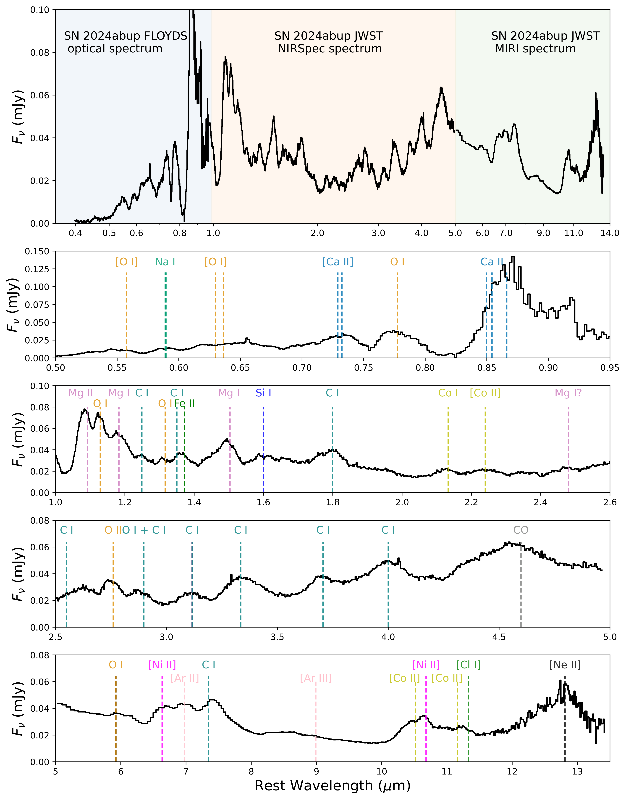<br />
图注：SN~2024abup spectrum spanning optical (FLOYDS) to MIR (JWST) $+$ 41 days after the V band maximum. The top panel covers 0.4 to 14 $\mu$ m and subsequent panels zoom in on the optical spectrum, the third covers 1 to 2.6 $\mu$ m, the fourth is for 2.5 to 5 $\mu$ m, and the last one covers 5 to 14 $\mu$m. All the major lines identified using the \(\texttt{SUMO}\) model (see Section \(\ref{subsec:spectral_modeling}\) and Figure \ref{fig:ion_model}) are marked with dashed vertical lines.<br />
对应解读：“建议重点查看的图表”第1项与“关键图表逐图导读”中的全波段 JWST 光谱图；也对应模型拟合段落中强调的全波段红外光谱拟合对象。<br />
入选理由：这是覆盖光学到 JWST 近红外/中红外 0.4--14 微米的核心观测图，直接展示主要宽谱线、谱段拼接、长波端连续谱和噪声变化，并标出 SUMO 识别的主要谱线。它是理解 CO、尘埃连续谱和 r 过程搜索之前必须先看的总览图，科学支撑度最高。<br />
来源与置信度：\(arxiv_source\)；high；\(arxiv_source\) / \(SN2024abup_jwst.tex\):figure[3]</p>
<p><strong>Fig06</strong><br />
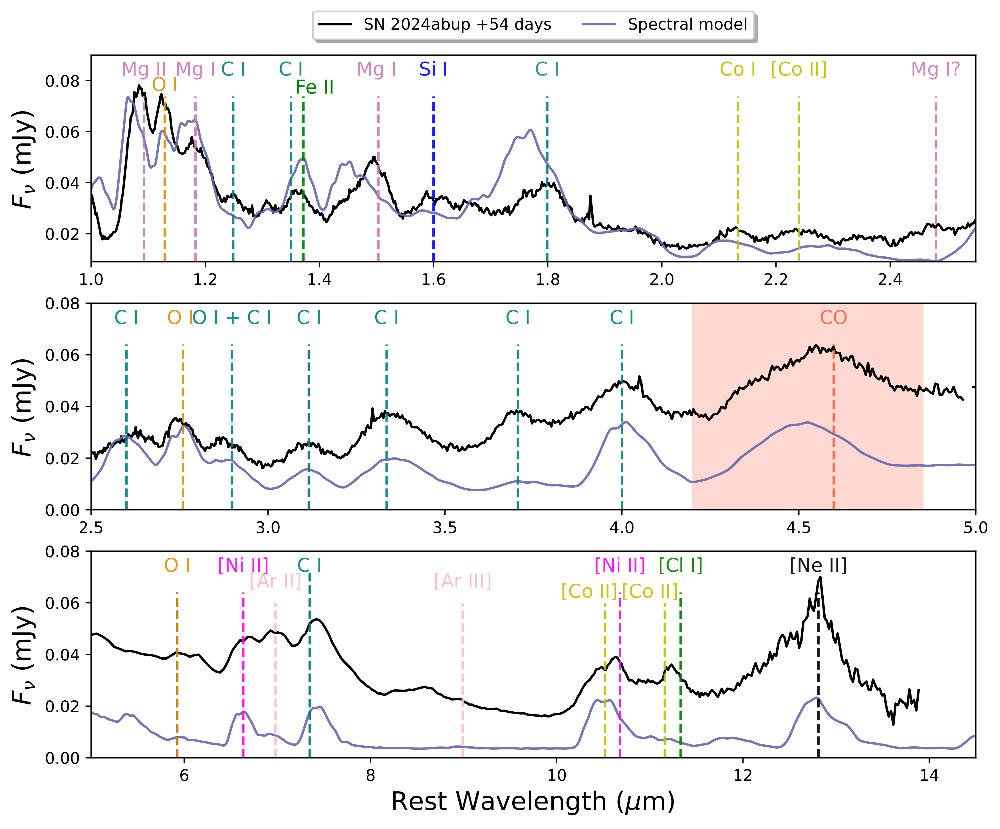<br />
图注：SN~2024abup compared to model from \(\texttt{SUMO}.\) The model is able to reproduce several observed spectral features. However, there are differences in the strength, which is expected as this model is not fine-tuned for this particular case. Overall, the observed continuum is higher than the model for wavelengths greater than $\sim$3 $\mu m $, which could be due to the presence of dust in the SN or the host galaxy or both, which is not included in the model. The shaded region in red shows the CO feature predicted by the model and the observed spectral feature in the same wavelength regime.<br />
对应解读：“建议重点查看的图表”第2、3、4项，以及“关键图表逐图导读”中关于元素/分子贡献、CO 带区和尘埃连续谱的讨论。<br />
入选理由：该图把 SN 2024abup 的观测谱与 SUMO 模型直接比较，并明确标出模型预测的 CO 特征区域，同时指出 3 微米以上观测连续谱高于模型、可能与尘埃有关。它同时支撑论文最重要的两个结论：CO 探测和红外连续谱过量。<br />
来源与置信度：\(arxiv_source\)；high；\(arxiv_source\) / \(SN2024abup_jwst.tex\):figure[6]</p>
<p><strong>Fig07</strong><br />
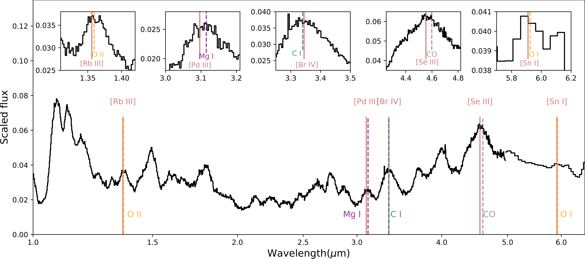<br />
图注：JWST spectrum of SN\,2024abup at $+$41 days after V band maximum, overlaid with $r$-process element lines from \(\citet{Ricigliano_2025}\) (solid red) and light element lines (colored dashed). The spectral features are more consistent with light elements, though line broadening may produce blending that complicates this identification. Insets show zoomed views of each individual feature.<br />
对应解读：“建议重点查看的图表”第5项与“关键图表逐图导读”中 r 过程候选谱区图的讨论。<br />
入选理由：该图直接叠加 r 过程元素线和轻元素线，并给出多个局部放大窗口，是判断候选重元素特征是否被普通轻元素宽线混合解释的关键证据。它最直接支撑论文的保守结论：目前没有令人信服的 r 过程红外特征。<br />
来源与置信度：\(arxiv_source\)；high；\(arxiv_source\) / \(SN2024abup_jwst.tex\):figure[7]</p>
<p><strong>Fig10</strong><br />
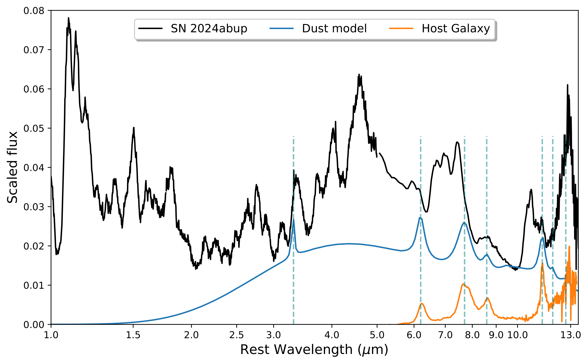<br />
图注：SN~2024abup spectrum (black) along with the model of graphite, silicate, and PAH contribution (blue) and the host galaxy (orange). The prominent PAH lines, contributed mainly by the host galaxy, are identified by dashed teal lines. There is a clear excess in the continuum of SN\,2024abup compared to the host galaxy spectrum.<br />
对应解读：“建议重点查看的图表”第4项尘埃连续谱拟合图或黑体/尘埃分解图，以及模型拟合段落中关于尘埃连续谱与宿主污染退化的讨论。<br />
入选理由：该图比较 SN 光谱、石墨/硅酸盐/PAH 模型以及宿主星系贡献，并标出 PAH 线，直接用于判断红外连续谱过量是否来自超新星尘埃、宿主背景或两者混合。它比单纯光变图更能支撑尘埃解释中的系统误差讨论。<br />
来源与置信度：\(arxiv_source\)；high；\(arxiv_source\) / \(SN2024abup_jwst.tex\):figure[10]</p>
<p><strong>Fig08</strong><br />
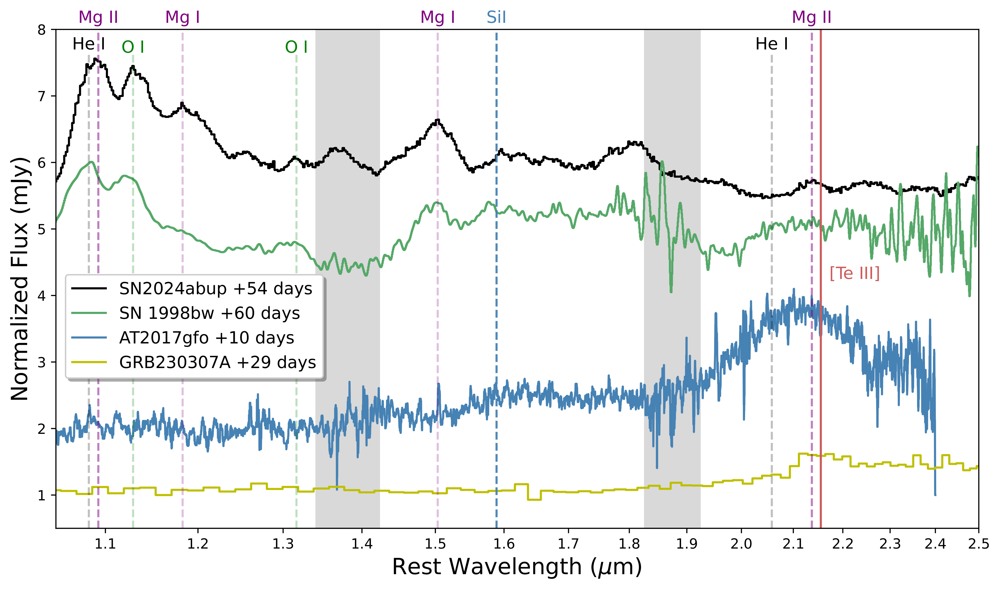<br />
图注：Comparison of the NIR spectrum of SN~2024abup at $+$41\,days with SN~1998bw \(\citep{Patat_2001},\) AT~2017gfo \(\citep{Pian_2017},\) and GRB~230307A \(\citep{Levan_2024_GRB230307A}.\) Similar lines are seen for both SN~1998bw and SN~2024abup. The [\(\ion{Te}{3}\)] line is identified in AT2017gfo and GRB230307A as a signature of $r$-process element production. There is a bump in SN~2024abup near the [\(\ion{Te}{3}\)] line, but it is better explained by \(\ion{Mg}{2}\) in this case.<br />
对应解读：“建议重点查看的图表”第5项 r 过程候选谱区，以及详细解读中关于 [Te III] 候选线和 Mg II 替代解释的部分。<br />
入选理由：该图把 SN 2024abup 与 SN 1998bw、AT2017gfo 和 GRB 230307A 的近红外谱进行比较，特别指出 SN 2024abup 在 [Te III] 附近的凸起更可能由 Mg II 解释。它为 r 过程非探测结论提供了跨天体比较证据，是 Fig07 的重要补充。<br />
来源与置信度：\(arxiv_source\)；high；\(arxiv_source\) / \(SN2024abup_jwst.tex\):figure[8]</p>
<p><strong>Fig11</strong><br />
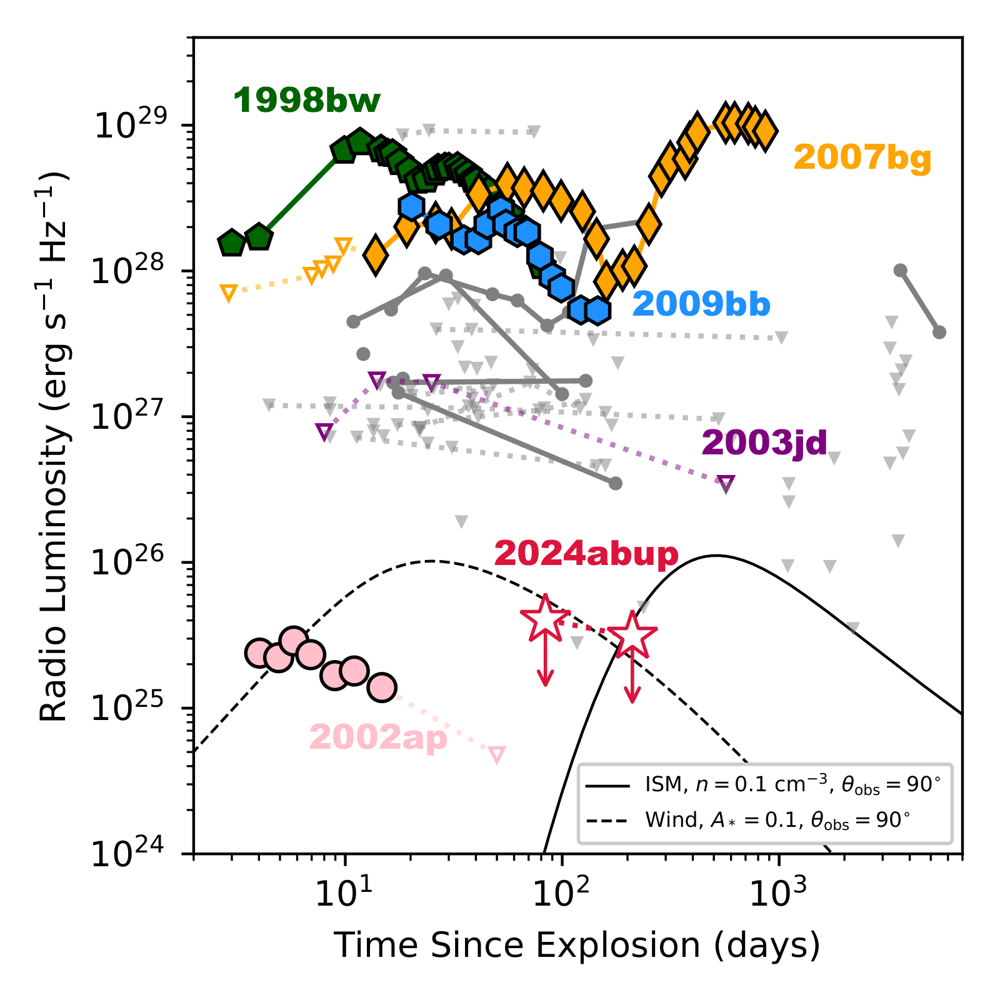<br />
图注：Radio light curve of SN\,2024abup at frequencies shown in \(\autoref{tab:radio},\) shown alongside other well-studied SN\,Ic-bl for comparison: 1998bw \(\citep{Kulkarni_1998}\); 2002ap \(\citep{Berger_2002}\); 2003jd \(\citep{Soderberg_2006}\); 2007bg \(\citep{Salas_2013}\); 2009bb \(\citep{Soderberg_2010}\); detections and upper limits of several other SNe are from \(\cite{Soderberg_2007},\) \(\cite{Corsi_2023},\) and \(\cite{Schroeder_2025}.\) The solid and dashed curves show the expected 6 GHz light curves generated using \(\texttt{VegasAfterglow}\) \(\citep{Vegas_afterglow}\) for a typical relativistic jet with energy $E_{iso}=10^{51}~\rm{erg}$, initial Lorentz factor $\Gamma_0 = 10^2$, jet opening angle $\theta_j = 0.2$, electron power-law index $p=2.3$, and microphysical parameters $\epsilon_e = 0.1$ and $\epsilon_B = 0.01$. The solid curve assumes an ISM-like CSM with density $n=0.1~\rm{cm^{-3}}$, while the dashed curve assumes a wind-like medium with $A_*=0.1$, both for a maximally off--axis viewing angle of $\theta_{\rm obs}=90^\circ$. Our non-detections rule out these typical GRB-like jet models for any viewing angle more on-axis than $\theta_{\rm obs}=90^\circ$, implying that any relativistic jet in SN\,2024abup if present, must be either less energetic than standard GRB jets or propagating through a significantly lower-density environment.<br />
对应解读：“建议重点查看的图表”第6项多波段光变图，尤其是射电约束；也对应详细解读中关于事件能量尺度和环境相互作用的背景说明。<br />
入选理由：该图展示 SN 2024abup 的射电非探测并与其他 Ic-bl 超新星和典型 GRB-like jet 模型比较，可用于判断是否存在强相互作用或标准相对论喷流。虽然不直接决定 CO 或 r 过程识别，但对尘埃加热环境和爆炸能量背景有重要约束。<br />
来源与置信度：\(arxiv_source\)；high；\(arxiv_source\) / \(SN2024abup_jwst.tex\):figure[11]</p>
<h4 id="_89">强相关工作</h4>
<p>这篇工作应放在三条文献线中读。第一条是 SN Ic-bl 与长伽马暴关联的历史线，原型包括 SN 1998bw/GRB 980425，后续还有多例 GRB-SN 和无 GRB 的宽线 Ic 型事件。检索关键词可用 “broad-lined Type Ic supernova GRB SN 1998bw spectra”，目的是比较 SN 2024abup 的速度、光度和环境是否属于典型 SN Ic-bl。</p>
<p>第二条是超新星分子和尘埃形成。SN 1987A、若干 II-P 型和剥离包层超新星中曾讨论过 CO、SiO 和尘埃，但 SN Ic-bl 的高速、低包层和可能非球对称让情况不同。检索关键词可用 “CO first overtone core-collapse supernova”, “JWST supernova dust CO”, “molecule formation stripped-envelope supernova”。本文的新意在于把 CO 探测推进到 SN Ic-bl 类别，并且相位很早。</p>
<p>第三条是 \(r\) 过程来源。中子星并合的证据来自 GW170817/AT2017gfo，但磁旋转超新星、 collapsar 或喷流驱动 SN Ic-bl 仍是候选通道。检索关键词可用 “r-process broad-lined Type Ic supernova”, “collapsar r-process nucleosynthesis”, “magnetorotational supernova r-process infrared spectra”。本文与一些理论上乐观的 SN Ic-bl \(r\) 过程预期形成张力：并非说这类事件不能产生 \(r\) 过程，而是说明在真实红外谱中识别它非常困难。</p>
<p><strong>同一事件 / 同类源线索</strong>：</p>
<ul>
<li><a href="https://arxiv.org/abs/2606.28561">https://arxiv.org/abs/2606.28561</a></li>
<li><a href="https://arxiv.org/pdf/2606.28561">https://arxiv.org/pdf/2606.28561</a></li>
</ul>
<p><strong>相似工作</strong>：</p>
<ul>
<li><a href="https://arxiv.org/abs/astro-ph/9806175">https://arxiv.org/abs/astro-ph/9806175</a></li>
<li><a href="https://arxiv.org/abs/1710.05833">https://arxiv.org/abs/1710.05833</a></li>
<li><a href="https://arxiv.org/abs/1710.05432">https://arxiv.org/abs/1710.05432</a></li>
</ul>
<p><strong>基础理论 / 方法工作</strong>：</p>
<ul>
<li><a href="https://arxiv.org/abs/1302.6643">https://arxiv.org/abs/1302.6643</a></li>
<li><a href="https://arxiv.org/abs/1610.09381">https://arxiv.org/abs/1610.09381</a></li>
<li><a href="https://arxiv.org/abs/1211.1164">https://arxiv.org/abs/1211.1164</a></li>
</ul>
<p><strong>相反观点 / 张力线索</strong>：</p>
<ul>
<li><a href="https://arxiv.org/abs/1710.05833">https://arxiv.org/abs/1710.05833</a></li>
<li><a href="https://arxiv.org/abs/1610.09381">https://arxiv.org/abs/1610.09381</a></li>
</ul>
</details>
<h3 id="9-the-nanograv-15-yr-data-set-impacts-of-customized-chromatic-noise-models-on-gravitational-wave-analyses">9. The NANOGrav 15 yr Data Set: Impacts of Customized Chromatic Noise Models on Gravitational Wave Analyses</h3>
<ul>
<li>来源：arXiv / astro-ph.HE</li>
<li>链接：https://arxiv.org/abs/2606.28554v1</li>
<li>作者：Nikita Agarwal, Gabriella Agazie, Alessandra Amosso, Akash Anumarlapudi, Anne M. Archibald, Zaven Arzoumanian, Anjana Ashok, Jeremy G. Baier</li>
<li>评分：novelty 8/10，importance 8/10，relevance 7/10，final 8.65/10</li>
<li>推荐理由：NANOGrav 15年数据在定制色噪模型下更新随机引力波背景证据、谱参数和连续波搜索，HD相关Bayes因子显著增强；虽不是伽马/宇宙线主线，但属于重要致密天体与多信使背景结果。</li>
</ul>
<p><strong>中文题目</strong>：NANOGrav 15 年数据集：定制色散噪声模型对纳赫兹引力波分析的影响</p>
<p><strong>做了什么</strong>：这篇文章重新分析了 NANOGrav 15 年脉冲星计时阵列数据，核心变化不是加入全新望远镜数据，而是采用 Larsen、Baier 等人在 2026 年为各个脉冲星定制的色散相关噪声模型。结果是 Hellings--Downs 角相关的贝叶斯因子相对 2023 年分析显著提高，达到 \(1571\pm14\)，频率学相关统计量的显著性也从约 \(3.16\sigma\) 小幅提高到 \(3.32\sigma\)。与此同时，随机引力波背景的幂律振幅降低到 \(A_{\rm GWB}=2.1^{+0.6}_{-0.5}\times10^{-15}\)，自由谱指数拟合给出更陡的 \(\gamma_{\rm GWB}=3.5^{+0.7}_{-0.6}\)。文章还更新了连续波、非爱因斯坦偏振和宇宙学起源解释，结论总体是：改进噪声模型让相关信号更可信，但背景谱略安静、略陡，对超大质量黑洞双星和宇宙学模型参数只造成温和移动。</p>
<p><strong>为什么重要</strong>：脉冲星计时阵列目前的瓶颈之一不是简单的观测时长，而是低频噪声建模，尤其是星际介质引起的色散、散射和频率相关计时残差。本文直接回答一个关键问题：2023 年 NANOGrav 15 年数据中的纳赫兹引力波背景证据，在更细致的脉冲星逐源噪声模型下是否增强、削弱，还是被噪声解释掉。结果显示，角相关证据增强而非消失，这对 PTA 探测的稳健性很重要。</p>
<p><strong>理论 / 观测 / 仪器方法价值</strong>：对观测分析而言，本文展示了定制色散噪声模型如何改变公共红噪声、Hellings--Downs 相关、连续波搜索和非广义相对论偏振约束。对理论解释而言，它给出略低的 \(A_{\rm GWB}\) 和略陡的 \(\gamma_{\rm GWB}\)，会影响超大质量黑洞双星种群、宇宙弦、早期宇宙相变和暴胀背景的参数后验。对方法学而言，它强调 PTA 结果不能只看公共红噪声是否存在，而要检查逐脉冲星色散噪声、频率模式数、角相关似然和系统误差之间的耦合。</p>
<p><strong>为什么应该关注</strong>：如果你关心 PTA 是否真的已经看到随机引力波背景，这篇文章比单纯重复“贝叶斯因子变大”更值得看：它说明证据增长来自噪声缓解，而不是人为调参后的任意增强。若你做超大质量黑洞双星、宇宙学相变、宇宙弦或引力理论检验，本文给出的谱振幅、谱指数和偏振证据变化会影响你把 PTA 信号翻译成物理参数的方式。若你做数据分析，它是一个很好的案例：改进前景噪声模型可以同时降低背景振幅估计、提高角相关识别能力。</p>
<details class="paper-detail">
<summary>展开详细解读：文章讲解、背景、理论、重点章节、图表与相关工作</summary>
<h4 id="_90">文章详细讲解</h4>
<p>科学问题：NANOGrav 15 年数据集在 2023 年给出了随机纳赫兹引力波背景的有力证据，最关键的判据是不同毫秒脉冲星之间的 Hellings--Downs 角相关，而不是每颗脉冲星单独的红噪声。问题在于 PTA 数据中有大量色散相关噪声：星际介质电子柱密度变化、散射、太阳风、接收机频带相关系统误差等都可在低频产生与引力波相似的长时标残差。如果这些噪声没有被充分建模，公共红噪声的振幅和谱形可能被高估，角相关统计也可能受到间接影响。</p>
<p>作者怎么做：本文把 Larsen、Baier 等人在 2026 年为 NANOGrav 15 年数据集建立的定制色散噪声模型接入完整引力波分析流程。这里的“定制”不是对所有脉冲星套同一个色散噪声模板，而是根据各源的频率覆盖、计时残差、色散量变化和低频结构选择更合适的色散相关项。随后作者重新评估随机背景的幂律模型、Hellings--Downs 相关证据、频率学的脉冲星间相关统计量、连续引力波全天搜索和目标源搜索、非张量偏振模式，以及几类物理起源模型。</p>
<p>关键结果：最醒目的数字是 Hellings--Downs 相关相对于公共但不相关红噪声的贝叶斯因子达到 \(1571\pm14\)，约为 Agazie 等 2023 年分析的 \(8\) 倍。频率学统计量相对无相关假设的显著性从 \(3.16\sigma\) 小幅提高到 \(3.32\sigma\)，说明贝叶斯证据的大幅提升主要来自模型比较中的噪声处理和似然结构，而不是频率学显著性同等幅度飙升。谱推断方面，在固定 \(\gamma_{\rm GWB}=13/3\) 的超大质量黑洞双星标准谱指数下，振幅变为 \(A_{\rm GWB}=2.1^{+0.6}_{-0.5}\times10^{-15}\)；若让谱指数自由，则得到 \(\gamma_{\rm GWB}=3.5^{+0.7}_{-0.6}\)，比经典圆形、引力波驱动双星背景的 \(13/3\) 更平一些还是需结合定义注意：PTA 常用残差功率谱指数和应变谱指数之间有约定差异，读者应回到文中定义核对。</p>
<p>局限和下一步：本文并没有把 PTA 探测从“强证据”直接推进到传统粒子物理式的 \(5\sigma\) 发现；它显示的是在更可信的色散噪声处理下，Hellings--Downs 相关更稳健。同时，频率学显著性提升有限，说明现有数据仍受样本数、时间基线和低频模式数量限制。下一步应包括更长时基数据、与 EPTA、PPTA、CPTA、InPTA 等联合的 IPTA 级分析、独立噪声模型交叉验证，以及对最有杠杆作用的少数脉冲星进行更细的星际介质和仪器系统误差追踪。</p>
<h4 id="_91">关键结果是怎么做出来的</h4>
<p>本文的证据链从同一个 NANOGrav 15 年计时数据集出发，但替换了脉冲星噪声描述。样本本质上是 NANOGrav 15 年数据集中用于引力波分析的毫秒脉冲星计时残差，作者没有声称靠新增观测时长获得主要增益，而是使用逐源定制的色散相关噪声模型。读者应特别注意哪些脉冲星的色散噪声模型变化最大，因为 PTA 的 Hellings--Downs 证据经常由计时精度最高、时间基线最长的少数脉冲星提供主要权重。</p>
<p>最核心的模型比较是 Hellings--Downs 相关随机背景模型与公共但空间不相关红噪声模型之间的贝叶斯因子。本文报告 \( {\rm BF}_{\rm HD/CURN}=1571\pm14 \)，这里 CURN 指 common uncorrelated red noise，即所有脉冲星共享类似谱形但没有 Hellings--Downs 角相关。与 2023 年结果相比，贝叶斯因子约增大 \(8\) 倍；这说明改进色散噪声模型减少了某些脉冲星内部红噪声与公共过程的混淆，使真正的跨脉冲星角相关在似然中更突出。</p>
<p>频率学检验给出一个更保守的读法。作者使用脉冲星间相关统计量，并在解析零分布假设下把无相关假设的排除显著性从 \(3.16\sigma\) 更新为 \(3.32\sigma\)。这个变化并不大，因此不能把本文解读为“显著性提高了 \(8\) 倍”；\(8\) 倍是贝叶斯因子层面的模型比较变化，而 \(\sigma\) 显著性只小幅提高。专业读者应在图表中核对相关统计量的角向分箱、误差条、协方差处理和零分布近似是否对少数高权重脉冲星敏感。</p>
<p>谱参数的变化也支撑“噪声缓解”的解释。固定 \(\gamma_{\rm GWB}=13/3\) 时，作者得到 \(A_{\rm GWB}=2.1^{+0.6}_{-0.5}\times10^{-15}\)，比未定制色散噪声处理下更安静；自由 \(\gamma_{\rm GWB}\) 分析则给出 \(\gamma_{\rm GWB}=3.5^{+0.7}_{-0.6}\)。这两点合在一起意味着，原先部分低频功率可能被更合理地归入色散噪声而非引力波背景，但被保留下来的公共信号反而更符合 Hellings--Downs 空间相关。</p>
<p>连续波搜索方面，本文更新了全天连续引力波搜索和若干目标源搜索，并报告 NANOGrav 探测体积增大 \(3.2\) 倍。这里的“体积”应理解为在给定源模型和灵敏度曲线下可探测宇宙体积的有效增加，而不等于已经探测到单个连续波源。读者应检查对应上限图、天空位置依赖的灵敏度、频率依赖的应变阈值，以及是否有个别候选位置在新噪声模型下显著改变。</p>
<p>系统误差和稳健性主要来自三类：第一，色散噪声模型是否过拟合，从而吸走真正的低频引力波功率；第二，公共红噪声和脉冲星本征红噪声是否存在退化；第三，Hellings--Downs 相关证据是否由少数脉冲星对支配。本文的结论是，在这些风险下，空间相关证据增强、非爱因斯坦标量横向模式证据降低、物理起源参数只边际移动。真正需要继续检验的是模型选择的先验敏感性、频率模式数选择和跨 PTA 数据集复现。</p>
<details class="paper-subdetail">
<summary>展开背景、理论、公式、模型、章节和图表导读</summary>
<h4 id="_92">背景知识</h4>
<p>脉冲星计时阵列利用毫秒脉冲星作为银河系尺度的高稳定时钟。纳赫兹引力波通过地球项和脉冲星项改变脉冲到达时刻，表现为多年时间尺度的计时残差。随机引力波背景最自然的来源是宇宙中大量不可分辨的超大质量黑洞双星，但早期宇宙相变、宇宙弦和暴胀遗留背景也可能在相近频段贡献信号。<br />
PTA 领域过去十多年的历史问题是如何从“许多脉冲星都有红噪声”走到“这些红噪声之间具有广义相对论预言的空间相关”。单颗脉冲星中的红噪声可以来自自转噪声、星际介质、太阳风、时钟误差、太阳系历表误差或未建模仪器效应；只有不同脉冲星之间随角距离变化的 Hellings--Downs 曲线，才是随机张量引力波背景的关键签名。<br />
NANOGrav 12.5 年数据已经显示公共红噪声，15 年数据进一步报告 Hellings--Downs 相关证据。与此同时，欧洲、澳大利亚、中国和印度 PTA 合作组也陆续报告类似纳赫兹背景证据。现在值得重新看 NANOGrav 15 年数据，是因为当探测证据接近但尚未达到完全压倒性时，噪声模型的细节会决定振幅、谱指数、角相关强度和物理解释。</p>
<p>色散噪声尤其棘手。星际介质导致的传播延迟随观测频率大致按 \(\nu^{-2}\) 缩放，但真实数据中还会有散射、频带演化、太阳风和接收机系统项，使“色散相关”不等于简单的单一 \({\rm DM}\) 时间序列。若把这些项建得太粗，低频色散残差会泄漏到 achromatic 红噪声中；若建得太灵活，又可能吸收真正的引力波信号。</p>
<p>一个常见误区是把公共红噪声直接等同于引力波背景。实际上，公共红噪声只说明多个脉冲星中存在相似谱形的低频过程；时钟误差可产生单极相关，太阳系历表误差可产生偶极相关，而张量随机引力波背景才对应 Hellings--Downs 四极型角相关。另一个误区是只看贝叶斯因子，不看频率学统计量、后验预测残差和噪声模型先验；本文的价值正是在这些层面重新评估 15 年数据。</p>
<h4 id="_93">基础理论 / 方法脉络</h4>
<p>物理图像从脉冲到达时刻开始。理想情况下，毫秒脉冲星的脉冲相位可由自转频率、自转减速、天体测量参数、双星轨道和传播延迟精确描述。任何未被模型解释的到达时刻偏差形成计时残差。纳赫兹引力波的周期为数年至数十年，因此在 PTA 中表现为低频、长相关时间的残差。</p>
<p>随机引力波背景对不同脉冲星残差的影响不是独立的。地球项由同一时空扰动同时作用于所有视线，因此不同脉冲星间的协方差只依赖于它们的角距离，并由 Hellings--Downs 函数给出。脉冲星项则因每颗脉冲星距离和视线不同而近似不相干，对随机背景分析通常表现为额外方差。</p>
<p>本文相关的关键噪声分类是 achromatic 与 chromatic。引力波、时钟误差和某些自转噪声对观测射电频率近似无关，称为 achromatic；色散量变化导致的传播延迟随射电频率 \(\nu\) 约按 \(\nu^{-2}\) 变化，散射延迟常有更陡频率依赖。多频观测使两者可分，但实际频率覆盖不均、历元采样不完整和接收机带宽变化会造成退化。</p>
<p>定制色散噪声模型的思想是每颗脉冲星的星际介质环境、观测频率覆盖和残差结构不同，不应强行使用完全相同的色散噪声参数化。某些脉冲星可能需要更强的 \({\rm DM}\) 红噪声，某些需要额外散射项，另一些则对太阳风或频带相关白噪声更敏感。这样的模型选择会改变单源噪声协方差矩阵，从而改变全 PTA 联合似然中公共过程的后验。</p>
<p>统计上，PTA 分析通常把计时残差写成确定性计时模型线性化项、随机噪声项和可能的引力波项。给定协方差矩阵后，可用高斯似然评估模型证据或后验。退化主要出现在低频 Fourier 模式：脉冲星本征红噪声、色散残差泄漏、公共不相关红噪声和 Hellings--Downs 相关背景都可能在最低几个频点争夺功率。因此，本文报告使用 \(14\) 个 Fourier 模式的幂律模型并比较不同相关结构，是解读结果时的关键技术细节。</p>
<h4 id="_94">公式与推导</h4>
<p>第一步是从计时残差的线性化模型出发。对第 \(a\) 颗脉冲星，观测残差可写成</p>
<div class="math-display">\[\delta t_a = M_a\\,\delta \xi_a + n_a + s_a ,\]</div>
<p>其中 \(M_a\) 是计时模型设计矩阵，\(\delta \xi_a\) 是计时参数修正，\(n_a\) 包括白噪声、本征红噪声和色散噪声，\(s_a\) 是引力波贡献。这个式子说明 PTA 分析首先是一个带协方差的残差建模问题，而不是直接在到达时刻中寻找波形。</p>
<p>第二步是写出色散传播延迟。冷等离子体近似下，色散量变化 \(\Delta{\rm DM}(t)\) 在射电频率 \(\nu\) 处造成</p>
<div class="math-display">\[\Delta t_{\
m DM}(t,\
u)=K_{\
m DM}\\,{\Delta{\
m DM}(t)\over \
u^2},\]</div>
<p>其中 \(K_{\}\)<br />
m DM}) 是色散常数，\(\nu\) 为观测频率。若这一项没有建好，低频时间变化的 \(\Delta{\rm DM}(t)\) 会在多频覆盖不足时伪装成 achromatic 红噪声。</p>
<p>第三步是给红噪声或公共背景写功率谱。PTA 常用特征应变</p>
<div class="math-display">\[\nh_c(f)=A_{\
m GWB}\left({f\over f_{\
m yr}}\
ight)^{\alpha},\]</div>
<p>其中 \(A_{\}\)<br />
m GWB}) 是参考频率 (f_{\<br />
m yr}=1/{\<br />
m yr}) 处的应变振幅，\(\alpha\) 是应变谱指数。对圆形、引力波驱动的超大质量黑洞双星背景，常见期望是 \(\alpha=-2/3\)。</p>
<p>第四步把应变谱转为计时残差功率谱。残差功率谱可写为</p>
<div class="math-display">\[\nP_{\
m gw}(f)={A_{\
m GWB}^2\over 12\pi^2}\left({f\over f_{\
m yr}}\
ight)^{-\gamma_{\
m GWB}} f_{\
m yr}^{-3},\]</div>
<p>其中 \(\gamma_{\}\)<br />
m GWB}=3-2\alpha) 取决于约定，(P_{\<br />
m gw}(f)) 给出不同 Fourier 频率上残差方差的标度。本文讨论的固定 (\gamma_{\<br />
m GWB}=13/3) 正对应标准双星背景。</p>
<p>第五步是 Hellings--Downs 空间相关。两颗脉冲星 \(a\) 与 \(b\) 的引力波残差协方差为</p>
<div class="math-display">\[\langle s_a(f)s_b^*(f')\
angle = {1\over 2}\delta(f-f')\\,\Gamma_{ab}\\,P_{\
m gw}(f),\]</div>
<p>其中 \(\Gamma_{ab}\) 是 Hellings--Downs 相关系数，只依赖两颗脉冲星的夹角。它是区分张量随机背景与公共不相关红噪声的核心量。</p>
<p>第六步给出 Hellings--Downs 函数的一种常用形式。令 \(x=(1-\cos\	heta_{ab})/2\)，则不同脉冲星间的相关可写成</p>
<div class="math-display">\[\Gamma(\	heta_{ab})={1\over 2}+{3\over 2}x\ln x-{1\over 4}x,\]</div>
<p>这里 \(\theta_{ab}\) 是角距离；同一脉冲星自相关还需加入额外归一化项。这个曲线的非单调角向形状是 PTA 随机背景的“指纹”。</p>
<p>第七步是高斯似然。把所有脉冲星残差合并为向量 \(r\)，协方差矩阵为 \(C(\vartheta)\)，则</p>
<div class="math-display">\[\ln \mathcal{L}(r|\vartheta)=-{1\over 2}\left[r^T C^{-1}(\vartheta) r+\ln\det C(\vartheta)+N\ln(2\pi)\
ight],\]</div>
<p>其中 \(\vartheta\) 包括噪声参数、\(A_{\}\)<br />
m GWB})、(\gamma_{\<br />
m GWB}) 和相关结构参数。定制色散噪声模型的作用就是改变 \(C(\vartheta)\) 中每颗脉冲星的 chromatic 噪声块。</p>
<p>第八步是贝叶斯因子。Hellings--Downs 模型 \(M_{\}\)<br />
m HD}) 与公共不相关红噪声模型 (M_{\<br />
m CURN}) 的证据比为</p>
<div class="math-display">\[{\rm BF}_{\
m HD/CURN}={Z_{\
m HD}\over Z_{\
m CURN}},\quad Z_M=\int d\vartheta\\,\mathcal{L}(r|\vartheta,M)\\,\pi(\vartheta|M),\]</div>
<p>其中 \(Z_M\) 是边际似然，\(\pi(\vartheta|M)\) 是先验。本文的 \( {\rm BF}_{\}\)<br />
m HD/CURN}=1571\pm14 ) 表明在先验体积积分后，包含 Hellings--Downs 相关的模型明显优于无空间相关公共过程。</p>
<p>第九步是频率学相关统计量的直观形式。若估计的脉冲星对相关为 \(\hat{\}\)<br />
ho}_{ab})，误差为 \(\sigma_{ab}\)，可构造类似加权匹配统计量</p>
<div class="math-display">\[\nS={\sum_{a<b} \hat{\
ho}_{ab}\Gamma_{ab}/\sigma_{ab}^2\over \left[\sum_{a<b}\Gamma_{ab}^2/\sigma_{ab}^2\
ight]^{1/2}},\]</div>
<p>在零相关假设下将 \(S\) 与解析或模拟零分布比较，即可得到等效 \(\sigma\) 显著性。本文报告该显著性约为 \(3.32\sigma\)，比先前 \(3.16\sigma\) 略高。</p>
<h4 id="_95">模型拟合 / 应用方法</h4>
<p>本文的主要拟合对象包括每颗脉冲星的白噪声、本征红噪声、色散相关噪声参数，以及全阵列共享的随机背景参数 \(A_{\rm GWB}\)、\(\gamma_{\rm GWB}\) 和空间相关结构。幂律随机背景分析使用 \(14\) 个 Fourier 模式，这意味着最低频的几个模式对振幅和谱指数有很强杠杆。固定 \(\gamma_{\rm GWB}=13/3\) 的分析对应标准超大质量黑洞双星背景假设，自由 \(\gamma_{\rm GWB}\) 的分析则检验谱形是否偏离该期望。</p>
<p>似然通常基于多脉冲星计时残差的高斯过程协方差。模型比较的关键不是单一最大似然值，而是边际似然或贝叶斯因子，即把参数先验体积也积分进去。Hellings--Downs 模型、公共不相关红噪声模型、其他偏振模式模型之间的证据差异，取决于数据是否真正需要特定的跨脉冲星协方差结构。</p>
<p>参数退化是本文必须重点阅读的部分。\(A_{\rm GWB}\) 与 \(\gamma_{\rm GWB}\) 之间存在典型相关：更陡的谱可以在最低频提供更多功率，而较低振幅也可能通过谱指数变化部分补偿。色散噪声与 achromatic 红噪声之间也会退化，特别是在多频数据稀疏的历元。定制色散噪声模型降低 \(A_{\rm GWB}\) 的同时提高 Hellings--Downs 贝叶斯因子，说明它可能把某些不该属于引力波的单源低频功率移走，但保留并强化了跨源相关部分。</p>
<p>残差诊断应从两个层面看。单源层面，要检查加入定制色散噪声后，频率相关残差是否消失，白化残差是否接近无结构，红噪声后验是否合理。阵列层面，要看脉冲星对相关随角距离是否贴近 Hellings--Downs 曲线，而不是只在少数角距离 bin 中有异常点。若某些高权重脉冲星对的残差决定了大部分证据，模型稳健性就需要通过删源检验或替代噪声模型检验来支撑。</p>
<p>系统误差包括星际介质模型不完备、太阳风模型简化、射电频带演化、望远镜后端跳变、太阳系历表误差和时钟误差。不同系统误差对应不同空间相关：时钟误差偏单极，历表误差偏偶极，张量背景为 Hellings--Downs 形状。本文还发现非爱因斯坦标量横向模式证据降低，这从侧面说明更好的 chromatic 噪声处理会改变对替代偏振的误判风险。</p>
<p>实际应用上，这套拟合框架会影响三类后续工作。第一是超大质量黑洞双星种群反演，包括并合率、质量函数和环境耦合。第二是连续波搜索，因为更准确的噪声协方差直接改变天空位置和频率相关的灵敏度。第三是宇宙学模型约束，如一阶相变、宇宙弦和暴胀背景；这些模型往往对谱形很敏感，因此 \(A_{\rm GWB}\) 和 \(\gamma_{\rm GWB}\) 的小幅变化也可能改变参数后验尾部。</p>
<h4 id="_96">重点章节 / 结果段落怎么读</h4>
<p>数据与噪声模型部分应先读。重点不是 NANOGrav 15 年数据集本身的基础介绍，而是本文如何接入 Larsen、Baier 等 2026 年的定制色散噪声模型。读者应记录哪些 chromatic 过程被加入、哪些脉冲星受影响最大、与 2023 年基线噪声模型相比有哪些结构性变化。</p>
<p>随机背景模型比较部分是全文核心。这里要区分 Hellings--Downs 相关模型、公共不相关红噪声模型和可能的其他空间相关模型。重点读 \(14\) 个 Fourier 模式幂律模型、贝叶斯因子计算、固定 \(\gamma_{\rm GWB}=13/3\) 与自由 \(\gamma_{\rm GWB}\) 的结果，以及证据提升被归因于噪声缓解的论证。</p>
<p>频率学相关统计量部分适合用来校准贝叶斯结论的直观强度。读者应看作者如何定义脉冲星间相关统计量、采用什么解析零分布、如何把统计量转换成等效 \(\sigma\) 值，以及 \(3.16\sigma\) 到 \(3.32\sigma\) 的变化为何远小于贝叶斯因子的变化。</p>
<p>连续波与目标源搜索部分应关注灵敏度而非候选源宣传。本文报告探测体积增大 \(3.2\) 倍，读者应查看这是由噪声下降、频率覆盖、天空区域改善还是源模型假设造成。若有目标源列表，应关注上限是否随噪声模型明显变化。</p>
<p>偏振与物理解释部分连接基础物理。非爱因斯坦标量横向模式证据降低，说明噪声模型会影响引力理论检验。最后的超大质量黑洞双星、暴胀、一阶相变和宇宙弦解释应作为参数后验更新阅读：本文的主要信息是这些解释没有被根本改写，但都与略低、略陡的背景谱相容。</p>
<h4 id="_97">建议重点查看的图表</h4>
<ol>
<li>
<p>噪声模型对比图：应查看采用定制色散噪声模型前后，各脉冲星红噪声和色散噪声后验如何变化，尤其是高计时精度脉冲星。</p>
</li>
<li>
<p>Hellings--Downs 相关图：应查看脉冲星对相关估计随角距离的分布、误差条和模型曲线，判断证据是否由整体角向趋势而非少数点驱动。</p>
</li>
<li>
<p>贝叶斯因子或模型比较表：应比较 Hellings--Downs、公共不相关红噪声、单极、偶极和替代偏振模型的证据，确认 \( {\rm BF}_{\rm HD/CURN}=1571\pm14 \) 的参照模型。</p>
</li>
<li>
<p>\(A_{\rm GWB}\) 与 \(\gamma_{\rm GWB}\) 后验图：应检查固定谱指数与自由谱指数结果、二维置信区间、与 2023 年结果的偏移方向。</p>
</li>
<li>
<p>频率分辨的自由谱或功率谱图：应看最低几个 Fourier 频点是否主导背景振幅，定制色散噪声是否降低了某些频点的公共功率。</p>
</li>
<li>
<p>连续波搜索灵敏度或上限图：应检查应变上限随频率和天空位置的变化，以及 \(3.2\) 倍探测体积提升对应的频段。</p>
</li>
<li>
<p>非爱因斯坦偏振模型比较图或表：应看标量横向模式证据为何降低，是否与特定脉冲星或角向模式有关。</p>
</li>
<li>
<p>物理起源参数后验图：应比较超大质量黑洞双星、宇宙弦、相变和暴胀模型在新噪声模型下的后验位移是否只属边际变化。</p>
</li>
</ol>
<h4 id="_98">关键图表逐图导读</h4>
<p>图 1：若论文开头给出定制色散噪声模型的影响概览，横轴通常可能是脉冲星或频率，纵轴可能是噪声振幅、谱指数或残差功率。读图时不要只看平均变化，要看哪些高权重脉冲星的 chromatic 噪声被显著增强或重分配；这些源对全阵列背景证据的影响最大。陷阱是把色散噪声增加误读为数据变差，实际上它可能是把原本错误归入 achromatic 公共过程的功率正确分离出来。</p>
<p>图 2：Hellings--Downs 相关图通常以脉冲星对角距离 \(\theta\) 为横轴，以相关估计或最优统计量贡献为纵轴，并叠加 Hellings--Downs 理论曲线。关键是看数据点是否在多个角距离范围内整体跟随曲线，而不是只由小角距或大角距少数点支撑。误差条和角向 bin 的协方差很重要；如果图中只显示分箱点，仍应在表格或附录中找未分箱脉冲星对的贡献。</p>
<p>图 3：模型比较图或表可能列出 Hellings--Downs、CURN、单极、偶极、标量横向等模型的贝叶斯因子。读者应确认纵轴或表格数值是相对哪个基准模型，是否使用相同 Fourier 模式数和相同噪声先验。本文的核心数值 \( {\rm BF}_{\rm HD/CURN}=1571\pm14 \) 只有在参照模型明确时才有物理含义。</p>
<p>图 4：谱参数后验图一般显示 \(A_{\rm GWB}\) 与 \(\gamma_{\rm GWB}\) 的一维或二维后验。横轴可能是 \(\log_{10} A_{\rm GWB}\)，纵轴是 \(\gamma_{\rm GWB}\)。应看新后验相对于 2023 年基线是否整体向低振幅和较陡或较平谱移动，并检查标准双星值 \(\gamma_{\rm GWB}=13/3\) 是否落在可信区间内。读图陷阱是忽略 \(A_{\rm GWB}\) 与 \(\gamma_{\rm GWB}\) 的强相关。</p>
<p>图 5：自由谱功率图若存在，通常横轴为 Fourier 频率，纵轴为每个频率 bin 的残差功率或等效应变。它能显示幂律结论是否由最低一两个频点主导。应特别检查定制色散噪声模型是否降低最低频点的公共功率，同时保留跨脉冲星相关；若最低频点误差极大，则谱指数结论应谨慎。</p>
<p>图 6：连续波搜索图可能给出全天应变上限、天空图或候选源统计量。横轴若为频率，纵轴为 \(95\\%\) 上限，应看新模型相对旧模型在哪些频段提升最大。若是天空图，应注意灵敏度与脉冲星分布和天区几何强相关，不能把局部热点直接理解为候选源。</p>
<p>图 7：物理解释后验图可能分别对应超大质量黑洞双星、宇宙弦张力、相变温度或强度、暴胀能标等参数。读图时应把后验移动与 \(A_{\rm GWB}\) 变低、\(\gamma_{\rm GWB}\) 改变联系起来。本文强调的是边际移动，所以若图中不同模型后验大幅重叠，说明当前 PTA 数据对起源模型仍有显著简并。</p>
</details>
<h4 id="_99">论文原图 / 可嵌入图片</h4>
<p><strong>Fig05</strong><br />
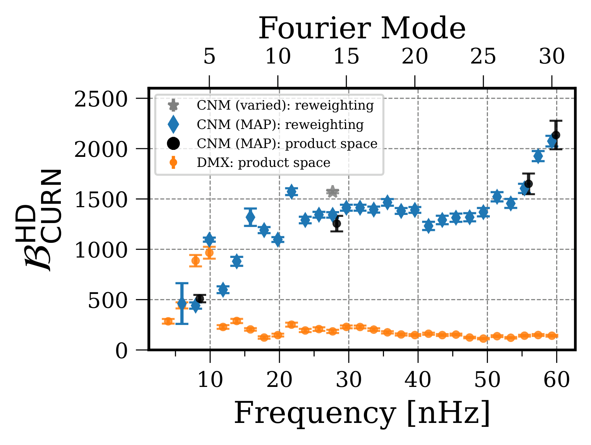<br />
图注：\(\textbf{HD significance at different frequencies.}\) The various plot markers denote the BF and uncertainty for HD over CURN modeled out to a specific frequency, with different noise models, and with different BF estimation techniques. The blue diamonds use the reweighting technique with CNM with the chromatic parameters fixed at their MAP values. The black disks use product space sampling and the CNM with the chromatic parameters fixed to their MAP values. The black disks have been slightly offset in frequency for clarity. The small orange disks are BF and uncertainty with DMX using product space sampling. The gray star uses reweighting with CNM but with inference done over all of the chromatic parameters alongside the signal model parameters.<br />
对应解读：对应“贝叶斯因子或模型比较表”以及模型拟合段落中 Hellings--Downs 相对 CURN 的核心证据比较。<br />
入选理由：这张图直接展示 HD over CURN 的贝叶斯因子如何随纳入的最高 Fourier 频率变化，并比较 CNM、DMX、reweighting 与 product-space sampling 等不同估计方式，是核对 \(BF_HD/CURN=1571\)±14 及其对 14 个 Fourier 模式选择敏感性的最关键图。它比普通后验图更直接支撑本文“定制色散噪声模型使 HD 证据显著增强”的核心结论。<br />
来源与置信度：\(arxiv_source\)；high；\(arxiv_source\) / main.tex:figure[5]</p>
<p><strong>Fig02</strong><br />
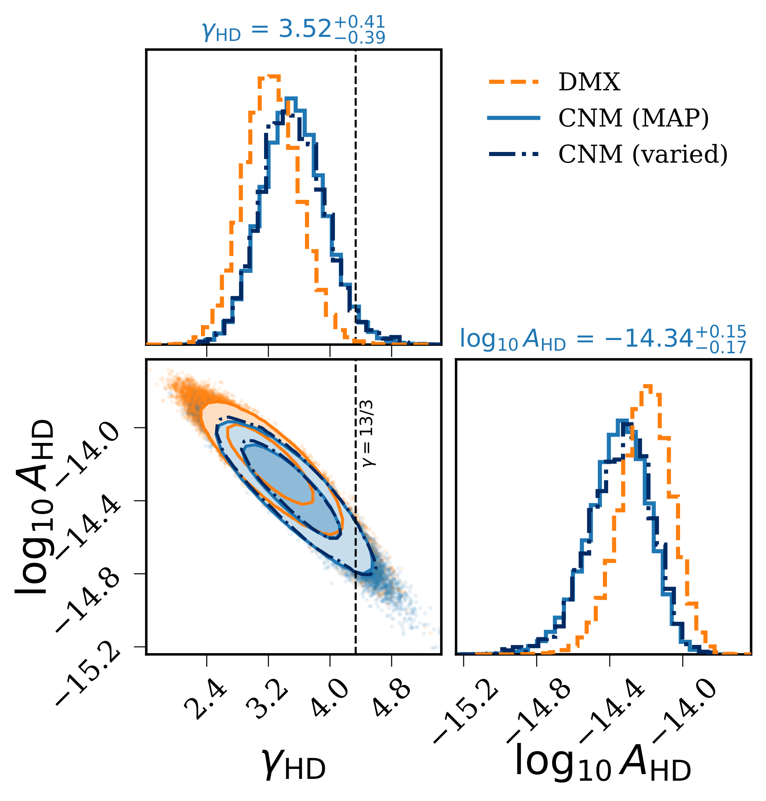<br />
图注：\(\textbf{Changes in the power law GWB inference.}\) Parameter posteriors for a 14 frequency power-law HD model are shown for DMX in orange and CNM in blue. CNM recovers a steeper spectral index, closer to the theoretical value of $\gamma=13/3$ for GW-driven SMBHB mergers (dashed, black line). GWB posteriors under the CNM are nearly identical whether varying the chromatic parameters (dark blue, dot-dashed) or holding them fixed to their single-pulsar MAP values (solid blue).<br />
对应解读：对应“ \(A_GWB\) 与 \(gamma_GWB\) 后验图”和关键图表逐图导读中的图 4 谱参数后验解读。<br />
入选理由：图中直接给出 14 频率 power-law HD 模型下 DMX 与 CNM 的谱参数后验，并显示 CNM 下谱指数向理论值 gamma=13/3 靠近，同时检验固定或同步变化 chromatic 参数对 GWB 后验的影响。它最适合解释 \(A_GWB\) 与 \(gamma_GWB\) 的退化关系及新旧噪声模型导致的后验位移。<br />
来源与置信度：\(arxiv_source\)；high；\(arxiv_source\) / main.tex:figure[2]</p>
<p><strong>Fig04</strong><br />
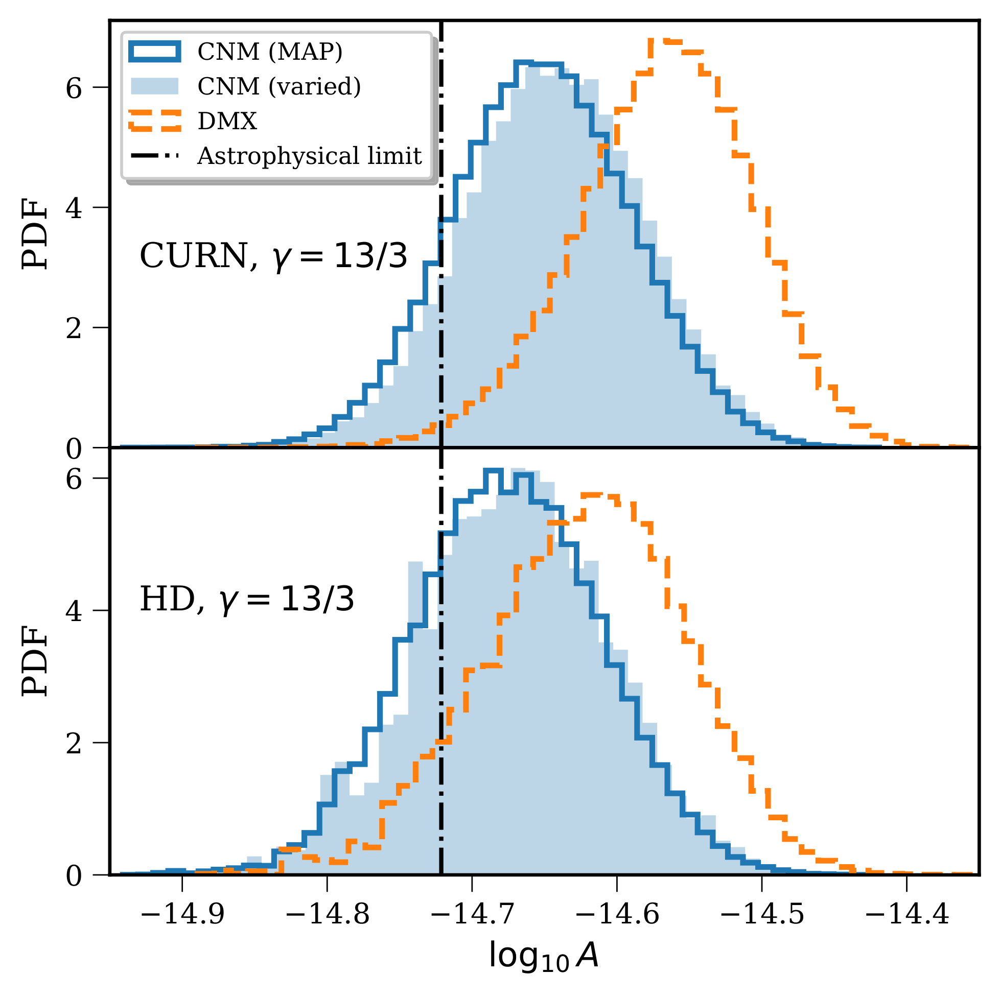<br />
图注：\textbf{Changes to the fixed-$\gamma$ GWB inference.} Estimates of the GWB characteristic strain spectral amplitude $A$ at a reference frequency of 1/yr, assuming a 14$f$ power law spectrum with fixed $\gamma = 13/3$ from 2 to 28 nHz, with (top panel) no interpulsar correlations (CURN), and (bottom panel) Hellings-Downs (HD) correlations. We estimate a systematically lower strain amplitude of $A_{\rm HD} = 2.1^{+0.6}_{-0.5}\times 10^{-15}$ using the CNMs (blue) vs the results from \(\citet{ng15gwb}\) using the standard DMX chromatic model (orange dashed). Within sampling error, fixing the chromatic parameters to their MAP values during the analysis (blue outlined) does not significantly impact the results over an analysis with varied chromatic parameters (blue shaded). For comparison, we also show a predicted astrophysical limit on the GWB strain amplitude assuming an SMBHB origin, $A \lesssim 1.9\times 10^{-15}$ (dashed black line; \citealt{Mingarelli2026}).<br />
对应解读：对应“固定谱指数与自由谱指数结果”和详细解读中 \(A_GWB=2.1^{+0.6}_{-0.5}\)×10^{-15} 的固定 gamma 结果。<br />
入选理由：这张图专门展示固定 gamma=13/3 时 CURN 与 HD 情形下的特征应变振幅后验，并明确给出 CNM 相比 DMX 使 HD 振幅系统性降低到 2.1×10^{-15}。它与 Fig02 互补，适合支撑标准 SMBHB 谱指数假设下振幅变低这一重点结论。<br />
来源与置信度：\(arxiv_source\)；high；\(arxiv_source\) / main.tex:figure[4]</p>
<p><strong>Fig01</strong><br />
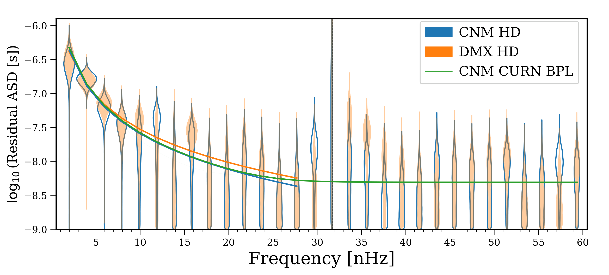<br />
图注：\(\textbf{Changes in the GWB spectrum.}\) We compare the inference of the HD-correlated GWB model under the different noise models of CNM (blue) and DMX (orange) for different parameterizations of the PSD. The violins compare the full posteriors of a free spectral parameterization while the blue and orange curves compare the MAP power-law spectra modeled through 14 Fourier modes. The green curve is the MAP inference of a broken power law spectrum, which previously has been used to infer the optimal number of Fourier modes, under the CNM. We note that the $16$th Fourier mode is completely unconstrained since it is near the characteristic insensitivity at a frequency of 1/year (denoted by a dashed vertical line) which arises from the marginalization over the linearized timing model with an improper prior.<br />
对应解读：对应“频率分辨的自由谱或功率谱图”和关键图表逐图导读中的图 5 自由谱功率诊断。<br />
入选理由：该图比较 CNM 与 DMX 下 HD-correlated GWB 的自由谱后验和 14 Fourier 模式 MAP power-law 谱，还标出 1/year 附近灵敏度缺口。它能检验幂律背景是否由最低频点主导，以及定制色散噪声是否改变公共功率在频率上的分配，是理解谱形变化的核心诊断图。<br />
来源与置信度：\(arxiv_source\)；high；\(arxiv_source\) / main.tex:figure[1]</p>
<p><strong>Fig12</strong><br />
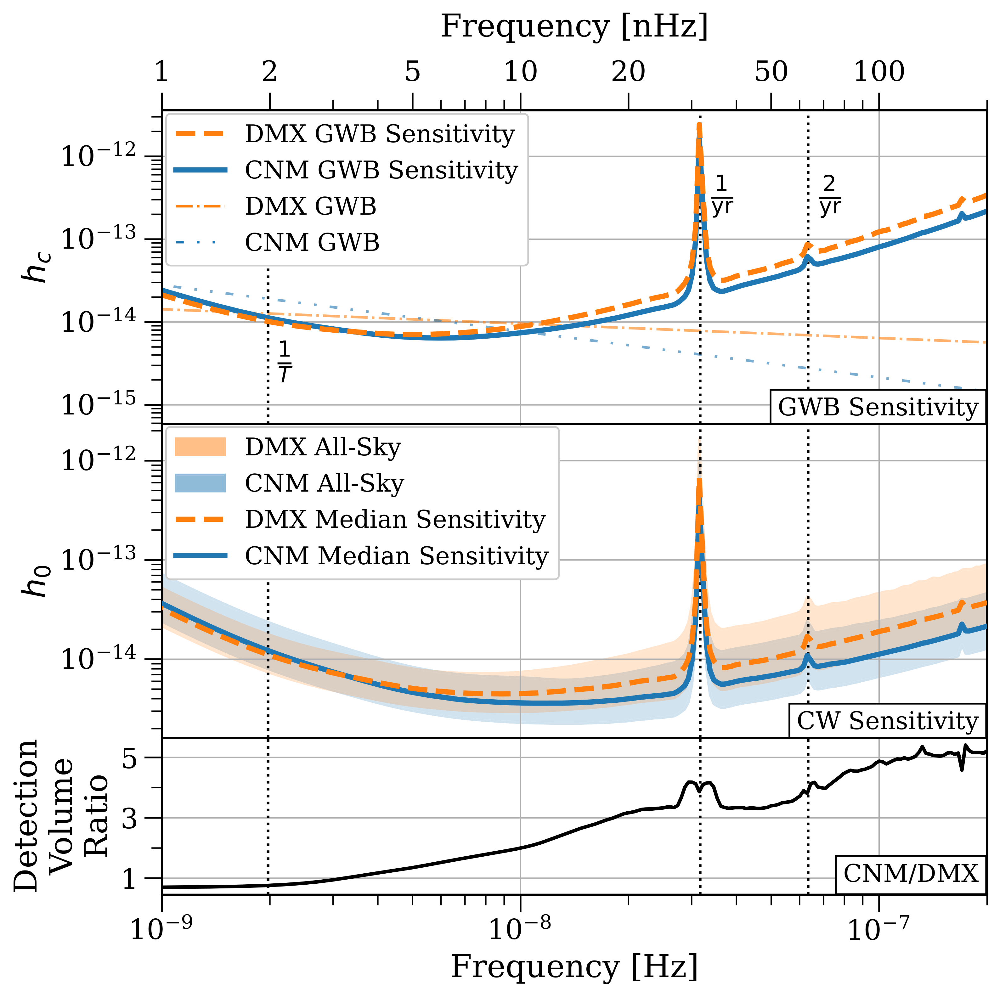<br />
图注：\(\textbf{Improved GW sensitivity with CNM.}\) The top panel compares DMX (dashed, orange) and CNM (solid, blue) via their GWB sensitivity curves. A power-law GWB is plotted for the MAP values of the background with both DMX and CNM. The middle panel compares the all-sky CW sensitivity by shading a region of sensitivity at each frequency which spans the minimum and maximum sensitivity across the sky at that frequency. The median CW sensitivities are shown via dashed and solid lines for CNM and DMX respectively. Note the units of the top panel are characteristic strain while the middle panel is in strain amplitude, which we convert to by setting a false alarm rate of 0.00135. The bottom panel plots the ratio of CW detection volume with the CNMs to CW detection volume with DMX as a function of frequency.<br />
对应解读：对应“连续波搜索灵敏度或上限图”和详细解读中连续波搜索、全天灵敏度及 3.2 倍探测体积提升。<br />
入选理由：图中同时给出 GWB sensitivity curve、全天 CW sensitivity 随频率的范围和中位数，以及 CNM 相对 DMX 的 CW detection volume ratio。它最直接支撑定制噪声模型改善连续波搜索灵敏度和探测体积的论断，比单个候选源或天空定位图更具总体诊断价值。<br />
来源与置信度：\(arxiv_source\)；high；\(arxiv_source\) / main.tex:figure[12]</p>
<p><strong>Fig07</strong><br />
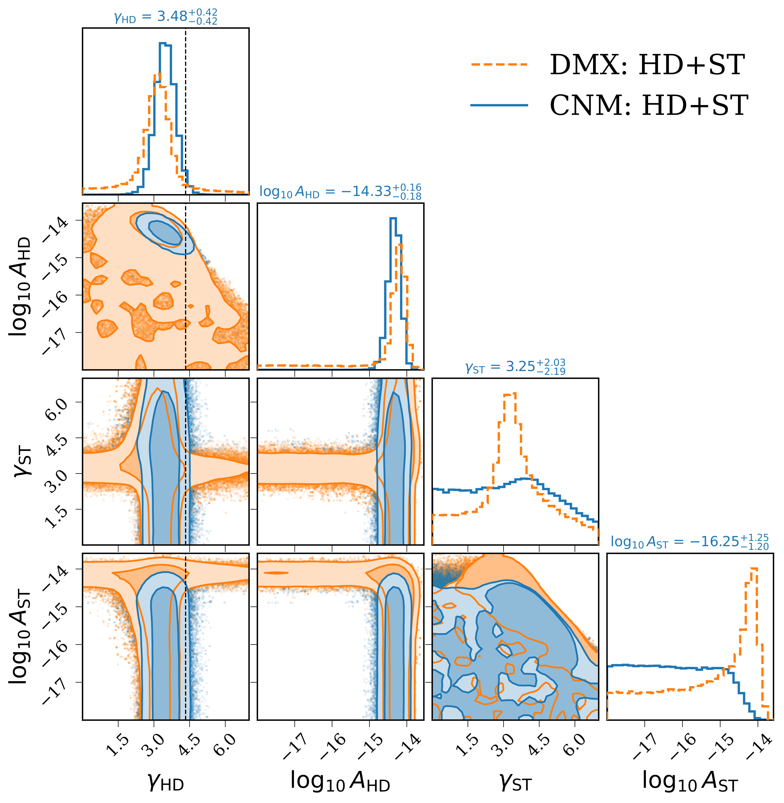<br />
图注：\(\textbf{Alternative polarization search.}\) Posteriors for the spectral parameters of a TT-polarized (HD-correlated) GWB and an ST-polarized GWB. Baseline results using the DMX chromatic model (orange) are reproduced from \(\citet{ng15_altpol}.\) Using our CNMs (blue) substantially improves the evidence/constraints for the HD-correlated mode, and reduces support for a large ST mode.<br />
对应解读：对应“非爱因斯坦偏振模型比较图或表”和模型拟合段落中标量横向模式证据降低的讨论。<br />
入选理由：该图展示 TT/HD 模式与 ST 标量横向模式的谱参数后验，并直接比较 DMX 与 CNM。它能说明更好的 chromatic 噪声处理增强了 HD 模式约束，同时降低对大 ST 模式的支持，是评估替代偏振误判风险的最相关候选图。<br />
来源与置信度：\(arxiv_source\)；high；\(arxiv_source\) / main.tex:figure[7]</p>
<h4 id="_100">强相关工作</h4>
<p>这篇文章直接接续 NANOGrav 15 年随机背景证据论文和 15 年数据集噪声建模工作。应把它与 2023 年 NANOGrav 15 年 Hellings--Downs 证据、12.5 年公共红噪声结果、以及 EPTA、PPTA、CPTA、InPTA 和 IPTA 的同类结果并读。检索关键词可用 “NANOGrav 15-year Hellings Downs”, “pulsar timing array common red noise”, “custom chromatic noise models”, “PTA dispersion measure noise”。</p>
<p>在理论解释上，本文与超大质量黑洞双星背景的经典 \(h_c(f)\propto f^{-2/3}\) 预言、星系并合驱动的双星种群模型、以及早期宇宙来源模型形成联系。相反或张力方向主要包括：环境耦合或偏心率导致谱形偏离标准 \(\gamma_{\rm GWB}=13/3\)，太阳系历表和时钟误差导致伪公共信号，非广义相对论偏振模式对角相关的替代解释。检索关键词可用 “SMBHB stochastic background PTA”, “Hellings Downs alternative correlations”, “PTA scalar transverse polarization”, “cosmic strings NANOGrav”, “first order phase transition PTA”。</p>
<p><strong>同一事件 / 同类源线索</strong>：</p>
<ul>
<li><a href="https://arxiv.org/abs/2606.28554">https://arxiv.org/abs/2606.28554</a></li>
<li><a href="https://arxiv.org/abs/2306.16213">https://arxiv.org/abs/2306.16213</a></li>
</ul>
<p><strong>相似工作</strong>：</p>
<ul>
<li><a href="https://arxiv.org/abs/2306.16213">https://arxiv.org/abs/2306.16213</a></li>
</ul>
<p><strong>基础理论 / 方法工作</strong>：</p>
<ul>
<li><a href="https://arxiv.org/abs/astro-ph/0108028">https://arxiv.org/abs/astro-ph/0108028</a></li>
</ul>
<p><strong>相反观点 / 张力线索</strong>：</p>
<p>（未提供）</p>
</details>
<h2 id="he">相关但非 HE 的重要论文</h2>
<h3 id="1-radiation-effects-and-noise-evolution-in-newathena-wfi-flight-production-sensors">1. Radiation effects and noise evolution in NewAthena WFI flight-production sensors</h3>
<ul>
<li>来源：arXiv / astro-ph.IM</li>
<li>链接：https://arxiv.org/abs/2606.30169v1</li>
<li>作者：Valentin Emberger, Johannes Müller-Seidlitz, Luisa Ostler, Wolfgang Treberer-Treberspurg, Robert Andritschke, Annika Behrens, Günter Hauser, Peter Lechner</li>
<li>评分：novelty 8/10，importance 9/10，relevance 10/10，final 9.05/10</li>
<li>推荐理由：NewAthena WFI 飞行生产传感器的质子/X 射线辐照、噪声、暗电流和寿命性能评估，直接关系未来大型 X 射线天文台核心探测器性能；对高能 X 射线仪器读者非常相关。</li>
</ul>
<p><strong>中文题目</strong>：NewAthena 宽场成像仪飞行批次传感器中的辐射效应与噪声演化</p>
<p><strong>做了什么</strong>：这篇仪器论文测试了 NewAthena 宽场成像仪 WFI 飞行生产批次的背照式 DEPFET 传感器在质子和 X 射线辐照后的噪声、暗电流和阈值电压变化。作者用 MedAustron 的 \(62.4\,\mathrm{MeV}\) 质子把一个 \(64\times64\) 像素模块辐照到相当于 \(2.6\times10^9\) 个 \(10\,\mathrm{MeV}\) 质子每平方厘米的位移损伤剂量，并用另一个模块做高通量短时辐照以检查低温退火；总电离剂量则用 \(17.4\,\mathrm{keV}\) 的 \(\mathrm{Mo}\text{-}K_\alpha\) X 射线单独研究到 \(15\,\mathrm{Gy}\)。核心结论是，飞行批次传感器在读出噪声、暗电流温度依赖和阈值漂移上表现出可量化的辐射退化，但仍可用操作温度和阈值校准策略管理；论文把这些结果与早期预飞行传感器辐照结果比较，用来评估 WFI 寿命末期能否保持接近任务要求的能量分辨能力。</p>
<p><strong>为什么重要</strong>：NewAthena 的 WFI 要在 \(0.2\text{--}15\,\mathrm{keV}\) 做宽视场 X 射线成像光谱，同时处理高计数率。它的科学产出高度依赖低噪声读出，论文中提到寿命初期目标约为 \(3\,e^-\) 的等效噪声电荷。如果质子位移损伤或电离剂量让暗电流、\(1/f\) 噪声或阈值电压漂移变大，能量分辨率、低能阈值、坏像素比例和在轨校准频率都会受影响。因此，这不是普通的器件老化测试，而是在问 NewAthena 关键仪器在真实轨道辐射环境下的性能余量有多大。</p>
<p><strong>理论 / 观测 / 仪器方法价值</strong>：对仪器和观测方法的价值在于，本文把飞行生产晶圆上的真实器件放在工作偏置、低温 \(213\,\mathrm{K}\) 和接近任务相关剂量的条件下测试，避免只用室温、无偏置或工程样片外推。它分别拆开总非电离剂量 \(\mathrm{TNID}\) 与总电离剂量 \(\mathrm{TID}\) 的影响，给出读出噪声、暗电流和阈值电压的演化路径，为 WFI 的寿命末期噪声预算、热控设定、阈值校准、在轨退火或操作策略提供实测输入。</p>
<p><strong>为什么应该关注</strong>：如果你关心未来十年 X 射线天文学的仪器系统误差，这篇值得看。WFI 将服务于星系团、AGN、瞬变源、X 射线双星和大面积巡天，很多结果最终会受低能响应、能量分辨率、背景建模和坏像素掩膜限制。本文告诉你这些限制中有多少来自半导体辐射损伤、能否通过温度降低或校准补偿，以及飞行批次器件相比早期样片是否已经进入更可信的性能阶段。</p>
<details class="paper-detail">
<summary>展开详细解读：文章讲解、背景、理论、重点章节、图表与相关工作</summary>
<h4 id="_101">文章详细讲解</h4>
<p>科学问题：NewAthena 的 WFI 依赖背照式 DEPFET 传感器来同时实现大视场、较好能量分辨率和高计数率。DEPFET 的优势是信号电荷在内部栅极中调制场效应晶体管电流，读出链可以做到非常低的等效噪声电荷；但正因为目标噪声只有约 \(3\,e^-\) 量级，辐射诱导的少量暗电流增加、陷阱生成、氧化层电荷积累或阈值漂移都可能变成可观测的能谱退化。本文要解决的问题是：飞行生产批次 WFI 传感器在任务相关的质子位移损伤和 X 射线电离剂量后，噪声预算会怎样演化，是否仍满足寿命末期要求。</p>
<p>作者怎么做：论文使用一个来自飞行生产晶圆的 \(64\times64\) 像素探测器模块，在完全偏置和持续工作条件下接受 \(62.4\,\mathrm{MeV}\) 质子辐照，总剂量折算为 \(2.6\times10^9\) 个 \(10\,\mathrm{MeV}\) 质子每平方厘米。这一做法的关键不是单纯达到某个剂量，而是在名义工作温度 \(213\,\mathrm{K}\) 下边照射边读出，尽量模拟真实飞行中器件带电、带场、低温工作的损伤形成过程。为了区分短期低温退火，作者还用第二个相同模块在更短时间内承受类似质子剂量；为了把 \(\mathrm{TID}\) 与 \(\mathrm{TNID}\) 分离，另一个器件用 \(17.4\,\mathrm{keV}\) 的 \(\mathrm{Mo}\text{-}K_\alpha\) X 射线照射到 \(15\,\mathrm{Gy}\)。</p>
<p>关键结果：论文报告了读出噪声、暗电流和阈值电压的变化，并把温度依赖纳入分析。质子辐照主要通过位移损伤在硅体内产生陷阱，提高产生电流并改变噪声分量；X 射线 \(\mathrm{TID}\) 更直接对应氧化层和界面电荷积累，从而影响阈值电压和表面相关噪声。本文的重要性在于，它不是只给出“辐照后变差”的定性结论，而是把低温工作、短期退火、飞行批次器件和早期预飞行器件结果放到同一框架中比较，进而讨论仪器所需操作温度与寿命末期性能余量。</p>
<p>局限和下一步：摘要显示样本是小规模模块级测试，重点是 \(64\times64\) 像素器件和若干辐照路径，尚不能完全替代整焦平面、多批次、多角度、多能谱空间粒子环境的统计验证。质子能量为 \(62.4\,\mathrm{MeV}\)，实际轨道中粒子谱、屏蔽、太阳事件和二次粒子会更复杂；低温退火的时间尺度也需要与任务长期运行周期联系起来。下一步应包括更多飞行批次器件、不同剂量率、热循环与长期保持测试，以及把器件级噪声演化直接传播到 WFI 能量分辨率、低能有效面积、坏像素比例和科学模拟中。</p>
<h4 id="_102">关键结果是怎么做出来的</h4>
<p>数据和样本选择方面，本文选择的是 WFI 飞行生产晶圆上的背照式 DEPFET 模块，而不是早期技术验证样片。主质子辐照样本为一个 \(64\times64\) 像素探测器模块，在 \(213\,\mathrm{K}\) 名义工作温度下保持完全偏置和可读出状态。剂量用 \(62.4\,\mathrm{MeV}\) 质子实施，并折算到相当于 \(2.6\times10^9\) 个 \(10\,\mathrm{MeV}\) 质子每平方厘米的非电离损伤指标。这个折算对结果解释很关键，因为仪器辐射预算通常不会直接用实验束流能量，而是用等效非电离能量损失进行比较。</p>
<p>论文的证据链大致是先建立辐照前基线噪声和暗电流，再在辐照期间或辐照后反复测量同一模块的读出噪声、暗电流和阈值电压。读出噪声通常要通过无光照或参考帧的像素值散布得到，再换算为 \(e^-\) 的等效噪声电荷；暗电流需要看随积分时间和温度的斜率；阈值电压漂移则通过工作点扫描或电流响应曲线提取。若论文给出温度扫描图，最应关注的是辐照前后曲线的相对位移，而不仅是某个单点温度下的数值。</p>
<p>统计显著性在这类论文中通常不是天体物理发现式的 \(5\sigma\) 事件声明，而是测量不确定度、像素间散布、重复测量稳定性和系统误差预算的组合。判断结果可信度时，应看作者是否把读出链本身的电子学漂移、温控误差、增益换算、暗场稳定性和辐照剂量不确定度分开处理。尤其是暗电流温度依赖可能非常陡，若温度读数或芯片实际结温存在小偏差，就会放大为看似显著的电流变化。</p>
<p>模型比较和稳健性主要来自三个方向。第一，主质子辐照模块与短时高通量辐照模块比较，用来判断低温短期退火和剂量率历史是否改变噪声演化。第二，质子 \(\mathrm{TNID}\) 与 X 射线 \(\mathrm{TID}\) 分离实验比较，用来区分体损伤与氧化层或界面损伤。第三，与早期预飞行传感器辐照活动比较，用来判断飞行生产批次工艺是否改变了辐射响应。支撑结论的关键图表应包括辐照剂量随时间、噪声随剂量、暗电流随温度、阈值电压漂移，以及辐照前后像素分布或坏像素统计。</p>
<p>主要系统误差包括质子通量标定和等效 \(10\,\mathrm{MeV}\) 换算、X 射线吸收剂量计算、传感器局部温度、电子学增益标定、读出序列变化、暗电流与读出噪声分离不完全、以及少数异常像素对总体均值的影响。稳健性检验应重点看作者是否报告中位数与均值的差别、是否剔除热像素或坏列后结果仍成立、是否展示辐照后短期时间演化，以及早期样片和飞行批次样片之间是否存在可由工艺或几何差异解释的偏差。</p>
<details class="paper-subdetail">
<summary>展开背景、理论、公式、模型、章节和图表导读</summary>
<h4 id="_103">背景知识</h4>
<p>研究对象是 NewAthena 的 WFI，也就是未来大型 X 射线天文台上的宽场成像光谱仪。它要覆盖约 \(0.2\text{--}15\,\mathrm{keV}\) 的能段，既要有较大视场以做巡天和扩展源研究，又要有高计数率能力以观测亮源和瞬变。对这种仪器来说，探测器不是单纯“能看到 X 射线”就够了，而是必须在低能阈值、能量分辨率、时间分辨、背景、坏像素比例和长期稳定性之间同时达标。</p>
<p>DEPFET 传感器在 X 射线天文中有特殊吸引力。入射光子在硅中产生电子空穴对，信号电子被内部栅极收集并调制晶体管沟道电流。这样每个像素本身就是低电容放大结构，读出噪声可以接近 Fano 统计极限所允许的水平。然而，接近极限也意味着噪声预算没有太多余量：少量暗电流增加会通过散粒噪声进入能量分辨率，少量阈值漂移会改变工作点和增益，少量界面陷阱也可能带来低频噪声。</p>
<p>历史问题是空间 X 射线 CCD 和硅探测器长期受到质子辐射损伤困扰。Chandra、XMM-Newton、Suzaku、eROSITA 等任务都必须处理电荷转移效率退化、暗电流、热像素、低能响应变化或背景变化。DEPFET 架构与传统 CCD 不同，电荷转移相关问题可能较小，但位移损伤产生的体陷阱和电离损伤产生的氧化层电荷仍然存在。因此，必须用接近真实工作条件的辐照实验，而不能简单套用 CCD 的老化经验。</p>
<p>为什么现在值得重看，是因为 NewAthena 仪器设计进入更接近飞行硬件和性能冻结的阶段。早期样片测试能证明技术路线，但飞行生产晶圆的工艺细节、背照处理、栅氧质量、像素布局和电子学接口都可能改变辐射响应。任务寿命末期性能不是由理想初始指标决定，而是由实际轨道剂量、热控能力、校准策略和器件退化共同决定。本文正好提供了飞行批次器件在相关剂量下的实测约束。</p>
<p>常见误区有几个。第一，把总剂量简单理解成一个数字，忽略 \(\mathrm{TNID}\) 与 \(\mathrm{TID}\) 的物理机制不同；前者主要产生位移缺陷，后者主要影响氧化层和界面。第二，以为低温总是解决方案；低温确实压低暗电流，但也可能改变陷阱占据、退火和工作点稳定性。第三，只看平均噪声，不看尾部分布；少量热像素或坏像素对巡天灵敏度、背景建模和低表面亮度科学目标可能很重要。</p>
<h4 id="_104">基础理论 / 方法脉络</h4>
<p>基本物理图像从硅探测 X 射线开始。一个能量为 \(E\) 的 X 射线光子在硅中沉积能量，平均每 \(w\simeq3.65\,\mathrm{eV}\) 产生一个电子空穴对，因此信号电荷数约为 \(N_e=E/w\)。即使没有电子学噪声，电离过程也有 Fano 涨落，方差小于泊松预期；这给出了硅能谱探测的统计下限。WFI 的目标接近这个下限，所以任何额外电子学噪声和暗电流噪声都会直接拓宽谱线。</p>
<p>DEPFET 像素把信号电荷储存在内部栅极中，信号通过晶体管电流变化读出。读出噪声可用等效噪声电荷 \(\mathrm{ENC}\) 表示，即把电压或电流读出链的噪声折算成等效电子数。论文关心的几个分量包括白读出噪声、低频噪声、暗电流散粒噪声和辐射诱导噪声。由于目标 \(\mathrm{ENC}\) 只有几电子，暗电流在积分时间 \(t_{\rm int}\) 内贡献的 \(\sqrt{I_{\rm d}t_{\rm int}/q}\) 量级噪声不能忽略。</p>
<p>质子辐照主要引入非电离能量损失，位移硅晶格原子并形成缺陷能级。这些缺陷可作为产生复合中心，提高暗电流，也可改变电荷收集或引入随机电报噪声。X 射线辐照主要产生电离剂量，使氧化层中积累正电荷并改变 \(\mathrm{Si}\)-\(\mathrm{SiO_2}\) 界面态密度，从而移动阈值电压、改变沟道噪声和表面暗电流。本文把两者分开实验，是因为同样的总辐照后噪声升高可能来自完全不同的可缓解机制。</p>
<p>观测和分析逻辑上，器件论文的“数据”不是天源光子列表，而是受控实验下的偏置、电流、图像帧、温度和剂量历史。读出噪声通常来自暗场或零信号帧的像素值方差，暗电流来自信号随积分时间的线性增长，阈值电压来自器件转移曲线或工作点扫描。关键退化量需要同一像素群在辐照前后比较，因为像素间初始差异、读出通道差异和局部温度梯度都可能伪装成辐照效应。</p>
<p>常见退化和系统误差包括温度与暗电流的强退化、增益变化与噪声变化的混淆、剂量率与退火历史耦合、异常像素尾部对均值的影响，以及实验束流能谱与空间辐射谱之间的等效换算。本文的价值正在于它同时给出温度依赖、低温短期退火对照和 \(\mathrm{TID}\) 单独实验，使读者可以判断哪些效应应通过热控解决，哪些应通过工作点和阈值校准解决，哪些则需要进入寿命末期性能预算。</p>
<h4 id="_105">公式与推导</h4>
<p>第一步是把入射 X 射线能量转换成硅中的信号电荷。若光子能量为 \(E\)，平均电离能为 \(w\)，则平均电子数为</p>
<div class="math-display">\[N_e=\frac{E}{w},\qquad w\simeq3.65\,\mathrm{eV}.\]</div>
<p>这里 \(N_e\) 是一次事件的信号电荷数。对 \(5.9\,\mathrm{keV}\) 的 \(^{55}\mathrm{Fe}\) 标定线，\(N_e\) 约为 \(1.6\times10^3\)，因此几电子的读出噪声已能贡献可测谱线宽度。</p>
<p>第二步是 Fano 极限。电离统计涨落的方差不是 \(N_e\)，而是</p>
<div class="math-display">\[\sigma_F^2=F N_e,\]</div>
<p>其中 \(F\) 是硅的 Fano 因子，常取约 \(0.1\) 量级。它给出即使理想无噪声读出也无法避免的能量展宽。</p>
<p>第三步把电子学噪声和暗电流噪声加入总电荷方差。若读出等效噪声电荷为 \(\mathrm{ENC}_{\rm ro}\)，暗电流为 \(I_{\rm d}\)，积分时间为 \(t_{\rm int}\)，元电荷为 \(q\)，则可写成</p>
<div class="math-display">\[\sigma_Q^2=F N_e+\mathrm{ENC}_{\rm ro}^2+\frac{I_{\rm d}t_{\rm int}}{q}.\]</div>
<p>这条式子连接了论文测量的读出噪声和暗电流与最终能谱性能。它假设各噪声源近似独立且暗电流散粒噪声服从泊松统计。</p>
<p>第四步把电荷方差换成能量分辨率。高斯近似下，谱线半高全宽为</p>
<div class="math-display">\[\Delta E_{\rm FWHM}=2.355\,w\,\sigma_Q.\]</div>
<p>因此当辐照使 \(I_{\rm d}\) 或 \(\mathrm{ENC}_{\rm ro}\) 增大时，\(\Delta E_{\rm FWHM}\) 会按平方和方式增加，而不是线性相加。这也是为什么几电子级噪声变化对低能 X 射线特别重要。</p>
<p>第五步描述暗电流温度依赖。硅体产生电流常用近似 Arrhenius 形式表示为</p>
<div class="math-display">\[I_{\rm d}(T)\propto T^2\exp\left(-\frac{E_{\rm a}}{2k_{\rm B}T}\right),\]</div>
<p>其中 \(T\) 是绝对温度，\(E_{\rm a}\) 是有效激活能，\(k_{\rm B}\) 是玻尔兹曼常数。辐照后缺陷态密度增加会提高比例系数，也可能改变表观 \(E_{\rm a}\)。这说明温控误差会显著影响暗电流外推。</p>
<p>第六步给出位移损伤与暗电流增加的常用线性近似。若等效非电离注量为 \(\Phi_{\rm eq}\)，有效敏感体积为 \(V\)，损伤常数为 \(\alpha_{\rm d}\)，则</p>
<div class="math-display">\[\Delta I_{\rm d}=\alpha_{\rm d}\,\Phi_{\rm eq}\,V.\]</div>
<p>这里 \(\Phi_{\rm eq}\) 通常折算到 \(10\,\mathrm{MeV}\) 质子等效注量。本文的 \(2.6\times10^9\,\mathrm{cm^{-2}}\) 就是用于这类比较的剂量尺度。</p>
<p>第七步说明不同质子能量之间如何用非电离能量损失折算。若实验质子能量为 \(E_p\)，其非电离损伤函数为 \(D(E_p)\)，则等效注量可写为</p>
<div class="math-display">\[\Phi_{10}=\Phi(E_p)\,\frac{D(E_p)}{D(10\,\mathrm{MeV})}.\]</div>
<p>\(\Phi_{10}\) 是 \(10\,\mathrm{MeV}\) 质子等效注量。这个折算的系统误差会直接进入寿命末期噪声预算。</p>
<p>第八步是总电离剂量导致的阈值漂移。氧化层俘获电荷面密度变化为 \(\Delta Q_{\rm ox}\)，单位面积氧化层电容为 \(C_{\rm ox}\)，则一阶近似为</p>
<div class="math-display">\[\Delta V_{\rm th}\simeq-\frac{\Delta Q_{\rm ox}}{C_{\rm ox}}.\]</div>
<p>符号取决于器件类型和电荷定义。对 DEPFET 而言，\(\Delta V_{\rm th}\) 会移动最佳工作点，并可能改变跨导和读出噪声。</p>
<p>第九步把实测像素数据写成似然或残差诊断。对某温度和剂量点的像素噪声测量 \(y_i\)，模型预测为 \(m_i(\boldsymbol{\theta})\)，测量误差为 \(\sigma_i\)，常用高斯统计量为</p>
<div class="math-display">\[\chi^2(\boldsymbol{\theta})=\sum_i\frac{\left[y_i-m_i(\boldsymbol{\theta})\right]^2}{\sigma_i^2}.\]</div>
<p>这里 \(\boldsymbol{\theta}\) 可包括辐照前基线、剂量斜率、温度激活能和退火时间常数。残差是否随像素位置、读出通道或温度系统性偏移，是判断模型是否遗漏系统效应的关键。</p>
<h4 id="_106">模型拟合 / 应用方法</h4>
<p>这类工作的拟合量主要包括读出噪声 \(\mathrm{ENC}\)、暗电流 \(I_{\rm d}\)、阈值电压 \(V_{\rm th}\)、增益或转换因子，以及这些量随剂量、温度和时间的变化。读出噪声通常从暗帧或基线帧的分布宽度估计，暗电流从不同积分时间下的信号斜率估计，阈值电压从转移曲线或偏置扫描估计。若论文给出像素级分布，读者应区分均值、中位数、标准差和尾部异常像素比例。</p>
<p>似然或统计处理可理解为多层误差模型。单个像素测量有读出随机误差，像素群有真实离散度，不同读出通道有共同模式漂移，温度和剂量有外部标定误差。简单高斯 \(\chi^2\) 拟合适合描述中心趋势，但对热像素尾部和随机电报噪声可能不够稳健。因此，实际应用中常需要同时报告鲁棒统计量，如中位数和分位数，或在剔除坏像素后重复拟合。</p>
<p>关键退化关系是温度、暗电流和噪声之间的耦合。降低 \(T\) 可以显著降低 \(I_{\rm d}\)，从而降低暗电流散粒噪声，但低温下陷阱占据和退火过程可能不同；如果实验中温度稳定性不足，暗电流变化会被误认为辐照效应。阈值电压漂移与读出噪声也存在耦合，因为 \(V_{\rm th}\) 改变会移动 DEPFET 的工作点，进一步影响跨导、增益和等效噪声电荷。</p>
<p>模型可能失败的地方包括：把所有像素看成同一损伤常数、把剂量率效应忽略、把短期低温退火与长期在轨演化混为一谈、把实验束流单能质子等效为复杂轨道粒子谱、以及把 X 射线 \(\mathrm{TID}\) 与质子辐照中的电离成分完全分离。本文通过第二个高通量短时质子辐照模块和单独 X 射线 \(\mathrm{TID}\) 模块，至少部分缓解了这些问题，但仍需要更大样本和更长时间验证。</p>
<p>在实际应用中，拟合结果会进入 WFI 的性能预算。仪器团队需要把寿命末期 \(\mathrm{ENC}\)、\(I_{\rm d}\) 和 \(V_{\rm th}\) 的预期分布传播到能量分辨率、低能阈值、坏像素掩膜、背景模型和标定频率。对科学用户而言，这些参数决定了弱线探测、低表面亮度扩展源、软 X 射线吸收边和高计数率源谱形的系统误差下限。</p>
<h4 id="_107">重点章节 / 结果段落怎么读</h4>
<p>一、器件与实验设置部分应首先读。重点看传感器是否来自飞行生产晶圆，像素规模为 \(64\times64\)，是否背照式，辐照时是否完全偏置并持续工作，以及工作温度是否保持在 \(213\,\mathrm{K}\)。这些条件决定实验结果能否代表在轨情形。</p>
<p>二、质子辐照和剂量换算部分很关键。读者应检查 \(62.4\,\mathrm{MeV}\) 质子束如何折算为 \(10\,\mathrm{MeV}\) 等效非电离注量，最终 \(2.6\times10^9\,\mathrm{cm^{-2}}\) 相对 NewAthena 辐射预算处于什么位置，以及剂量率和束流均匀性如何控制。</p>
<p>三、噪声和暗电流测量方法部分要仔细看。重点是 \(\mathrm{ENC}\) 如何从帧噪声换算、增益如何标定、暗电流是否通过积分时间扫描提取、温度扫描覆盖哪些点、异常像素如何处理。方法细节往往比最终均值更能决定结论可靠性。</p>
<p>四、\(\mathrm{TID}\) 单独实验部分用于解释阈值漂移。\(17.4\,\mathrm{keV}\) 的 \(\mathrm{Mo}\text{-}K_\alpha\) X 射线到 \(15\,\mathrm{Gy}\) 的测试应与质子结果分开读，不要把两者简单相加。这里最重要的是阈值电压变化、表面相关噪声和工作点可调范围。</p>
<p>五、与早期预飞行传感器的比较和讨论部分决定论文的工程意义。应看作者是否说明差异来自器件工艺、测试条件、剂量历史还是统计样本；并看他们如何把实测退化转化为 WFI 所需操作温度和寿命末期性能判断。</p>
<h4 id="_108">建议重点查看的图表</h4>
<ol>
<li>
<p>辐照历史和剂量曲线：看质子通量、累计 \(\Phi_{10}\)、辐照时长、温度稳定性和是否存在束流中断；这些决定退火解释是否可信。</p>
</li>
<li>
<p>读出噪声随剂量或时间的曲线：看 \(\mathrm{ENC}\) 的辐照前基线、辐照后跃迁、后续低温保持期间是否继续变化，以及误差条是否小于变化幅度。</p>
</li>
<li>
<p>暗电流随温度的 Arrhenius 图：最好检查 \(\log I_{\rm d}\) 对 \(1/T\) 的斜率，比较辐照前后是否只是归一化上升，还是激活能也改变。</p>
</li>
<li>
<p>阈值电压或工作点漂移图：看 X 射线 \(\mathrm{TID}\) 后 \(V_{\rm th}\) 是否单调漂移，漂移量是否仍在电子学调节范围内。</p>
</li>
<li>
<p>像素分布直方图或二维图：看均值之外的尾部，尤其是热像素、坏列、边缘像素和读出通道相关结构。</p>
</li>
<li>
<p>飞行批次与早期预飞行样片比较表：看测试条件是否相同，若不相同，作者是否给出归一化或物理解释。</p>
</li>
<li>
<p>寿命末期性能预算图或表：看作者如何把辐照后 \(\mathrm{ENC}\) 和 \(I_{\rm d}\) 转换为能量分辨率或允许工作温度。</p>
</li>
</ol>
<h4 id="_109">关键图表逐图导读</h4>
<p>图 1：若论文给出实验装置或传感器模块示意，横纵坐标可能不是重点，关键是确认 \(64\times64\) 像素区域、读出方向、温度传感位置和辐照束斑覆盖范围。读图陷阱是把模块级均匀性当成束流均匀性；实际还要看束斑和有效探测区域是否完全重合。</p>
<p>图 2：辐照时间线或累计剂量图通常以时间为横轴、累计等效注量 \(\Phi_{10}\) 或剂量为纵轴，并叠加温度或束流状态。主要结论应是主模块在工作偏置和 \(213\,\mathrm{K}\) 下达到目标剂量。读图时要注意剂量率变化和中断，因为它们会影响低温退火与辐照损伤的分离。</p>
<p>图 3：读出噪声图通常以累计剂量、时间或测量阶段为横轴，以 \(\mathrm{ENC}\) 为纵轴。数据点可能代表像素群均值或中位数，误差条可能是测量误差或像素间散布，两者物理含义不同。若模型线给出线性增长或分段增长，应看残差是否在辐照后系统偏离，特别是高通量短时模块是否落在同一趋势上。</p>
<p>图 4：暗电流温度依赖图常用 \(1/T\) 或温度为横轴、\(I_{\rm d}\) 或其对数为纵轴。辐照前后曲线的平移说明缺陷产生中心增加，斜率变化则说明主导机制或有效激活能改变。读图陷阱是只看 \(213\,\mathrm{K}\) 单点；实际仪器热控余量需要看整个温度范围内曲线是否陡峭。</p>
<p>图 5：\(\mathrm{TID}\) 实验的阈值电压图应以累计剂量或测量阶段为横轴、\(V_{\rm th}\) 或工作点偏移为纵轴。模型线若为近似线性，只能在低剂量范围内解释；氧化层电荷俘获和界面态退火可能引入非线性。最重要的是漂移量是否会压缩 WFI 在轨可调偏置范围。</p>
<p>图 6：像素分布或二维热图是判断工程风险的核心。横纵坐标若是像素位置，颜色为噪声或暗电流，应看是否存在边缘效应、列结构或局部热点；若是直方图，应看尾部而不是只看峰值。少数坏像素对平均 \(\mathrm{ENC}\) 影响可能不大，但对巡天掩膜和背景模型很重要。</p>
<p>图 7：与早期预飞行传感器比较图或表应同时列出剂量、温度、偏置状态和测量方法。若飞行批次表现更好或更差，不能直接归因于工艺改进或退化，必须看测试条件是否一致。读者应把这张图作为判断本文外推到整台 WFI 的可信度检查。</p>
</details>
<h4 id="_110">论文原图 / 可嵌入图片</h4>
<p><strong>Fig06</strong><br />
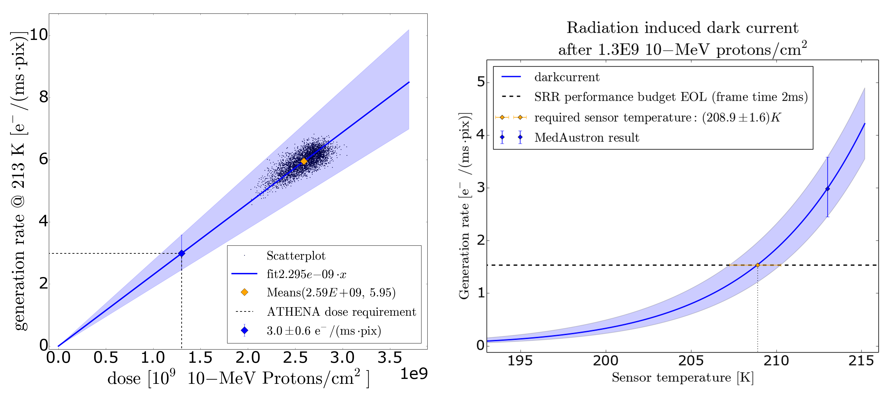<br />
图注：Left: Scatterplot of the dose and dark current values of all pixels. The blue dot represents the expected dark current at the expected dose after 10 years in space and thus the main result of this experiment. Right: The blue dot from the left figure is plotted with error bar that results from the uncertainty of the dose and current measurements. The dashed lines shows the dark current budget for a frame time of 2~ms, the dotted line the necessary sensor temperature for that value.<br />
对应解读：建议重点查看的图表 3、7；关键图表逐图导读中关于暗电流、寿命末期性能预算和允许工作温度的解读。<br />
入选理由：这是本文最直接连接辐照剂量、暗电流和 WFI 寿命末期性能预算的核心图。左图给出像素级剂量与暗电流散点，右图把 10 年在轨预期剂量下的暗电流结果与暗电流预算线、所需传感器温度联系起来，比单纯的装置图或谱线图更能支撑日报中关于热控余量和端到端性能外推的讨论。<br />
来源与置信度：\(arxiv_source\)；high；\(arxiv_source\) / \(Eff_rad_damage_Athena_flight.tex\):figure[6]</p>
<p><strong>Fig07</strong><br />
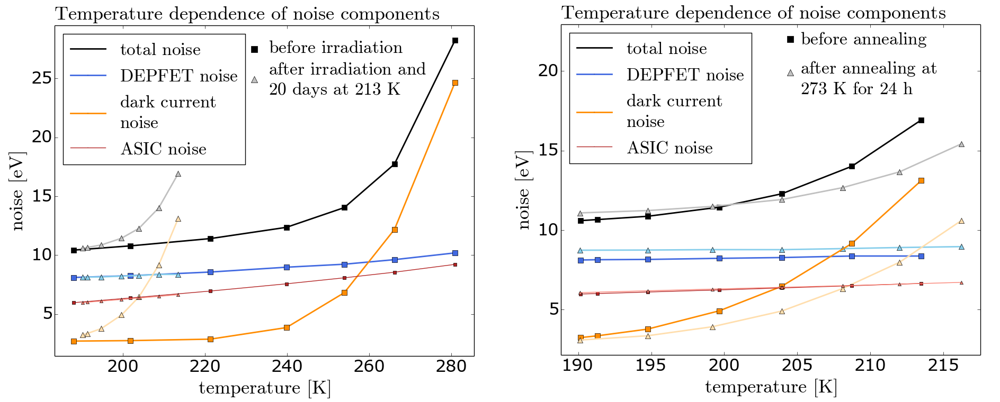<br />
图注：Results of the temperature dependent noise characterization. In the left panel the pre-irradiation measurements are compared to post-irradiation measurements that were done after the detector stayed at 213~K for 20~days. The second characterization was only done for temperatures at or below 213~K in order to avoid any unwanted annealing that could influence the results. In the right panel measurements before and after annealing at 273~K for 24~h are compared.<br />
对应解读：建议重点查看的图表 2、3、7；关键图表逐图导读中关于读出噪声温度依赖、辐照前后对比和退火后性能恢复的段落。<br />
入选理由：该图直接展示辐照前、辐照后低温保持 20 天、以及 273 K 退火 24 小时后的温度依赖噪声表征，是判断操作温度要求和噪声预算是否满足寿命末期需求的关键证据。它比单个 X 射线谱或装置照片更能体现温度、辐照损伤和退火对 ENC 的耦合影响。<br />
来源与置信度：\(arxiv_source\)；high；\(arxiv_source\) / \(Eff_rad_damage_Athena_flight.tex\):figure[7]</p>
<p><strong>Fig12</strong><br />
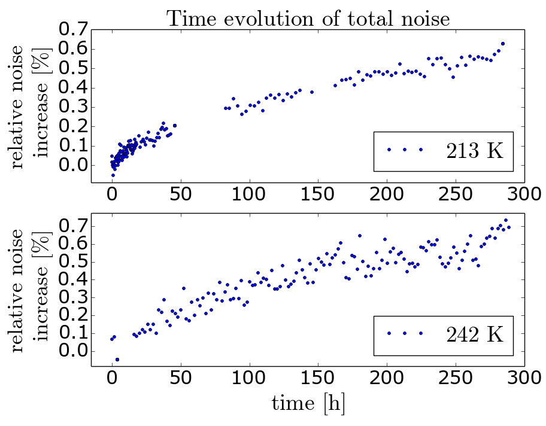<br />
图注：Top: The detector stayed at the operating temperature after irradiation. Noise measurements were done during the first 290 hours. Bottom: After 22 days the temperature was raised to 242~K for 290 hours. Noise values are normalized to the mean of the first 4 measurements in both graphs.<br />
对应解读：建议重点查看的图表 2；关键图表逐图导读中关于读出噪声随时间、低温保持和升温退火阶段演化的解读。<br />
入选理由：该图专门给出噪声在辐照后前 290 小时低温保持期间以及 22 天后升至 242 K 期间的归一化演化，正好对应日报强调的“辐照后跃迁、低温保持期间是否继续变化、退火是否改变噪声”的诊断问题。它能帮助区分即时辐照效应与后续退火或时间演化。<br />
来源与置信度：\(arxiv_source\)；high；\(arxiv_source\) / \(Eff_rad_damage_Athena_flight.tex\):figure[12]</p>
<p><strong>Fig11</strong><br />
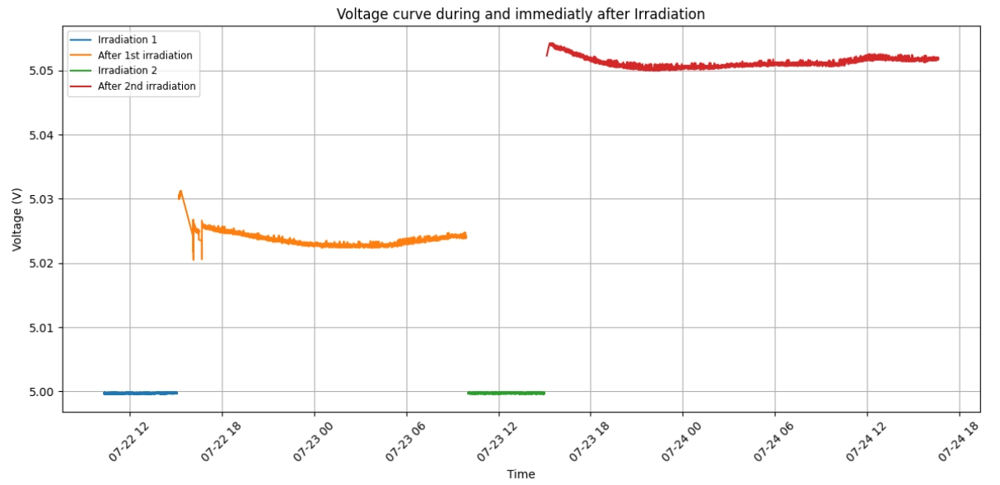<br />
图注：DEPFET source voltage measurement that was used to monitor the threshold voltage shift. Prior to irradiation, the gate voltage was adjusted such that V\textsubscript{Source} = 5.00~V at a channel current of 100~µA per pixel. The SMU was operated in constant-current mode, maintaining I\textsubscript{Source-Drain} = 100~µA per channel. Under these conditions, the source voltage directly tracks changes in the threshold voltage. During irradiation, the source voltage was fixed at 5~V. Figure taken from \(\citenum{luisa25}.\)<br />
对应解读：建议重点查看的图表 4；关键图表逐图导读中关于 TID 阈值电压或工作点漂移的段落。<br />
入选理由：该图展示通过 DEPFET 源电压监测阈值电压漂移的方法和辐照期间的工作点设置，直接服务于日报中对 X 射线 TID 后 \(V_th\) 漂移、电子学可调范围和工作点稳定性的关注。相比 X 射线谱重建图，它与器件退化机制和偏置裕度的关系更强。<br />
来源与置信度：\(arxiv_source\)；high；\(arxiv_source\) / \(Eff_rad_damage_Athena_flight.tex\):figure[11]</p>
<p><strong>Fig05</strong><br />
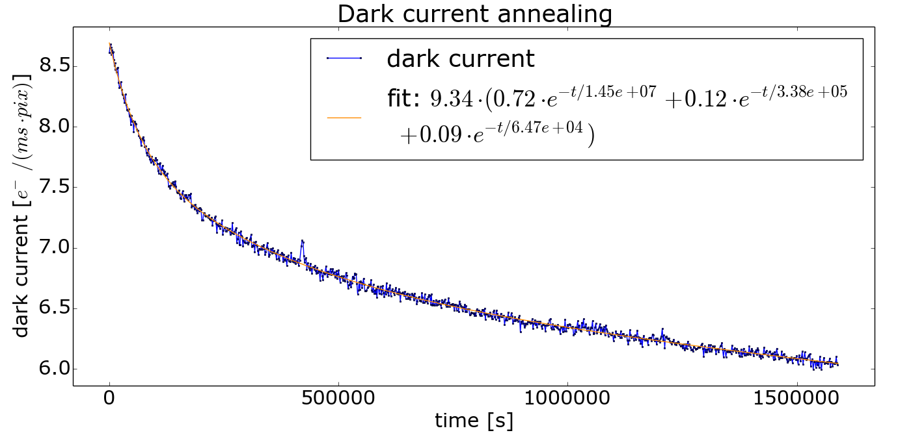<br />
图注：Dark current annealing of the detector module that was irradiated with low dose rate. At least 3 different time constants were necessary to fit the evolution of the dark current during the first 18.4 days after the irradiation.<br />
对应解读：建议重点查看的图表 1、2、3；模型拟合段落中关于低温退火、多时间常数拟合和暗电流演化的讨论。<br />
入选理由：该图给出低剂量率质子辐照模块在辐照后 18.4 天内的暗电流退火，并说明至少需要 3 个时间常数拟合，是理解主实验中低温退火与暗电流增长能否分离的关键。它比短时高剂量率模块更贴近主辐照场景，因此优先级高于 Fig04。<br />
来源与置信度：\(arxiv_source\)；high；\(arxiv_source\) / \(Eff_rad_damage_Athena_flight.tex\):figure[5]</p>
<p><strong>Fig03</strong><br />
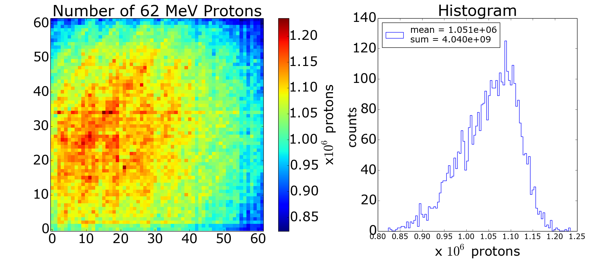<br />
图注：Left: Map of the number of protons per pixel. The FWHM of the beam profile is clearly larger than the sensor. Right: The histogram shows the variation of the total fluence over the sensor area.<br />
对应解读：建议重点查看的图表 1、5；关键图表逐图导读中关于束斑覆盖、像素级剂量均匀性和二维分布的段落。<br />
入选理由：该图用质子数二维图和全传感器注量直方图验证束斑 FWHM 大于传感器并量化传感器区域内的总注量变化，是判断辐照均匀性、像素间差异和后续剂量—暗电流散点解释是否可信的基础图。它能补足仅看平均剂量或平均噪声时容易忽略的空间系统误差。<br />
来源与置信度：\(arxiv_source\)；high；\(arxiv_source\) / \(Eff_rad_damage_Athena_flight.tex\):figure[3]</p>
<h4 id="_111">强相关工作</h4>
<p>这篇工作属于 Athena/NewAthena WFI 探测器验证和空间硅探测器辐射损伤研究的交叉。相似工作包括早期 WFI 或 DEPFET 预飞行传感器的质子辐照、CCD 和硅漂移探测器在 X 射线天文任务中的辐射退化研究，以及 eROSITA、XMM-Newton、Chandra 等任务的在轨探测器老化经验。检索关键词可用 “Athena WFI DEPFET proton irradiation”, “DEPFET radiation damage X-ray detector”, “Athena Wide Field Imager end-of-life performance”, “silicon X-ray detector dark current proton displacement damage”。</p>
<p>基础理论方面，应把本文与半导体辐射损伤的 \(\mathrm{NIEL}\) 标度、氧化层总电离剂量效应、Fano 极限能量分辨率和低噪声前端电子学联系起来看。可能存在的张力或相反观点不是某个天体物理模型之争，而是工程外推问题：实验室单能质子和单独 X 射线 \(\mathrm{TID}\) 是否足以代表复杂空间环境；低温短期退火能否外推到多年在轨；小模块像素统计能否代表完整焦平面。检索关键词可用 “NIEL scaling silicon detectors”, “total ionizing dose MOS threshold shift”, “Fano limited energy resolution silicon detector”, “radiation induced dark current annealing silicon”。</p>
<p><strong>同一事件 / 同类源线索</strong>：</p>
<ul>
<li><a href="https://arxiv.org/abs/2606.30169">https://arxiv.org/abs/2606.30169</a></li>
<li><a href="https://www.cosmos.esa.int/web/athena">https://www.cosmos.esa.int/web/athena</a></li>
</ul>
<p><strong>相似工作</strong>：</p>
<p>（未提供）</p>
<p><strong>基础理论 / 方法工作</strong>：</p>
<ul>
<li><a href="https://doi.org/10.1109/TNS.1993.316173">https://doi.org/10.1109/TNS.1993.316173</a></li>
<li><a href="https://doi.org/10.1109/23.211360">https://doi.org/10.1109/23.211360</a></li>
</ul>
<p><strong>相反观点 / 张力线索</strong>：</p>
<p>（未提供）</p>
</details>
<h2 id="_112">说明</h2>
<p>评分由 LLM 给出初评，再由本地阈值策略过滤；IACT、TeV 伽马射线和高能中微子天文学按重点方向处理。</p>
    </main>
  </div>
</body>
</html>
